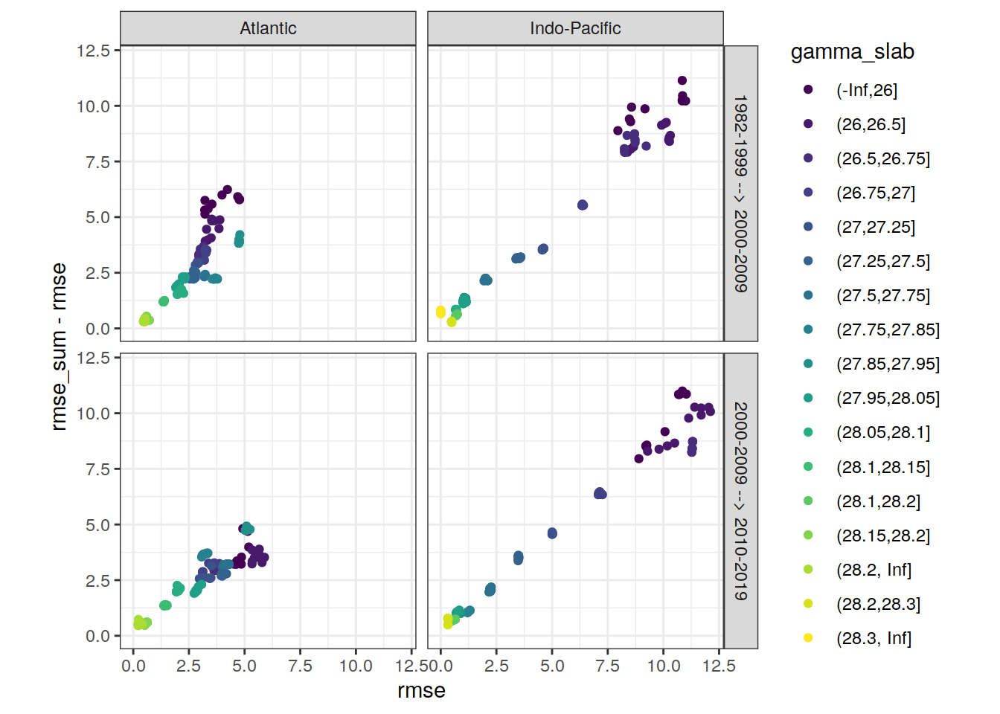

eMLR - model fitting
Jens Daniel Müller and Donghe Zhu
01 August, 2021
Last updated: 2021-08-01
Checks: 7 0
Knit directory: emlr_mod_v_XXX/
This reproducible R Markdown analysis was created with workflowr (version 1.6.2). The Checks tab describes the reproducibility checks that were applied when the results were created. The Past versions tab lists the development history.
Great! Since the R Markdown file has been committed to the Git repository, you know the exact version of the code that produced these results.
Great job! The global environment was empty. Objects defined in the global environment can affect the analysis in your R Markdown file in unknown ways. For reproduciblity it’s best to always run the code in an empty environment.
The command set.seed(20200707) was run prior to running the code in the R Markdown file. Setting a seed ensures that any results that rely on randomness, e.g. subsampling or permutations, are reproducible.
Great job! Recording the operating system, R version, and package versions is critical for reproducibility.
Nice! There were no cached chunks for this analysis, so you can be confident that you successfully produced the results during this run.
Great job! Using relative paths to the files within your workflowr project makes it easier to run your code on other machines.
Great! You are using Git for version control. Tracking code development and connecting the code version to the results is critical for reproducibility.
The results in this page were generated with repository version 9206cad. See the Past versions tab to see a history of the changes made to the R Markdown and HTML files.
Note that you need to be careful to ensure that all relevant files for the analysis have been committed to Git prior to generating the results (you can use wflow_publish or wflow_git_commit). workflowr only checks the R Markdown file, but you know if there are other scripts or data files that it depends on. Below is the status of the Git repository when the results were generated:
Ignored files:
Ignored: .Rhistory
Ignored: .Rproj.user/
Untracked files:
Untracked: docs_GV_2021_2R_ann_nafilled_NorESM/
Untracked: docs_GV_2021_2R_ann_nafilled_atl_a27.97_a28_NorESM/
Untracked: docs_GV_2021_2R_ann_nafilled_rN_CESM/
Untracked: docs_GV_2021_2R_ann_nafilled_rN_NorESM/
Untracked: docs_GV_2021_2R_ann_nafilled_rP_rP*_aO_CESM/
Untracked: docs_GV_2021_2R_ann_nafilled_rP_rP*_aO_NorESM/
Untracked: docs_GV_2021_2R_ann_nafilled_rS_CESM/
Untracked: docs_GV_2021_2R_ann_nafilled_rS_NorESM/
Untracked: docs_GV_2021_2R_ann_nafilled_rT_CESM/
Untracked: docs_GV_2021_2R_ann_nafilled_rT_NorESM/
Untracked: docs_GV_2021_2R_ann_standard_CESM/figure/eMLR_GLODAPv2_2020_subsetting.Rmd/phosphate_f_subset-1.png
Untracked: docs_GV_2021_2R_ann_standard_CESM/figure/eMLR_GLODAPv2_2020_subsetting.Rmd/phosphate_na_subset-1.png
Untracked: docs_GV_2021_2R_ann_standard_CESM/figure/eMLR_GLODAPv2_2020_subsetting.Rmd/phosphate_qc_subset-1.png
Untracked: docs_GV_2021_2R_ann_standard_all_sfc_CESM/
Untracked: docs_GV_2021_2R_ann_standard_atl_a27.97_a28_NorESM/
Untracked: docs_GV_2021_2R_ann_standard_atl_a27.98_a28.02_NorESM/
Untracked: docs_GV_2021_2R_ann_standard_no_sfc_CESM/
Untracked: docs_GV_2021_2R_ann_standard_rN_CESM/
Untracked: docs_GV_2021_2R_ann_standard_rN_CESM1/
Untracked: docs_GV_2021_2R_ann_standard_rN_NorESM/
Untracked: docs_GV_2021_2R_ann_standard_rP_rP*_CESM1/
Untracked: docs_GV_2021_2R_ann_standard_rP_rP*_aO_CESM/
Untracked: docs_GV_2021_2R_ann_standard_rP_rP*_aO_NorESM/
Untracked: docs_GV_2021_2R_ann_standard_rS_CESM/
Untracked: docs_GV_2021_2R_ann_standard_rS_CESM1/
Untracked: docs_GV_2021_2R_ann_standard_rS_NorESM/
Untracked: docs_GV_2021_2R_ann_standard_rT_CESM/
Untracked: docs_GV_2021_2R_ann_standard_rT_CESM1/
Untracked: docs_GV_2021_2R_ann_standard_rT_NorESM/
Untracked: docs_GV_2021_2R_mon_nafilled_ORCA/
Untracked: docs_GV_2021_2R_mon_nafilled_RO_ORCA/
Untracked: docs_GV_2021_2R_mon_nafilled_RO_rN_ORCA/
Untracked: docs_GV_2021_2R_mon_nafilled_RO_rP_ORCA/
Untracked: docs_GV_2021_2R_mon_nafilled_RO_rP_rP*_ORCA/
Untracked: docs_GV_2021_2R_mon_nafilled_RO_rS_ORCA/
Untracked: docs_GV_2021_2R_mon_nafilled_RO_rT_ORCA/
Untracked: docs_GV_2021_2R_mon_nafilled_atl_a27.91_ORCA/
Untracked: docs_GV_2021_2R_mon_nafilled_atl_r27.95_ORCA/
Untracked: docs_GV_2021_2R_mon_nafilled_rN_ORCA/
Untracked: docs_GV_2021_2R_mon_nafilled_rP_rP*_aO_ORCA/
Untracked: docs_GV_2021_2R_mon_nafilled_rS_ORCA/
Untracked: docs_GV_2021_2R_mon_nafilled_rT_ORCA/
Untracked: docs_GV_2021_2R_mon_standard_ORCA/
Untracked: docs_GV_2021_2R_mon_standard_RO_rN_ORCA/
Untracked: docs_GV_2021_2R_mon_standard_RO_rP_ORCA/
Untracked: docs_GV_2021_2R_mon_standard_RO_rP_rP*_ORCA/
Untracked: docs_GV_2021_2R_mon_standard_all_sfc_ORCA/
Untracked: docs_GV_2021_2R_mon_standard_atl_a27.91_ORCA/
Untracked: docs_GV_2021_2R_mon_standard_atl_r27.95_ORCA/
Untracked: docs_GV_2021_2R_mon_standard_no_sfc_ORCA/
Untracked: docs_GV_2021_2R_mon_standard_rN_ORCA/
Untracked: docs_GV_2021_2R_mon_standard_rP_rP*_ORCA/
Untracked: docs_GV_2021_2R_mon_standard_rS_ORCA/
Untracked: docs_GV_2021_2R_mon_standard_rT_ORCA/
Untracked: docs_GV_2021_S5_ann_nafilled_CESM/
Untracked: docs_GV_2021_S5_ann_nafilled_CESM111111/
Untracked: docs_GV_2021_S5_ann_nafilled_atl_a27.97_a28_NorESM/
Untracked: docs_GV_2021_S5_ann_standard_CESM/
Untracked: docs_GV_2021_S5_ann_standard_CESM111111/
Untracked: docs_GV_2021_S5_ann_standard_NorESM/
Untracked: docs_GV_2021_S5_ann_standard_atl_a27.97_a28_NorESM/
Untracked: docs_GV_2021_S5_mon_nafilled_ORCA/
Untracked: docs_GV_2021_S5_mon_standard_ORCA/
Untracked: docs_GV_2021_S5_mon_standard_atl_a27.91_ORCA/
Untracked: docs_standard_CESM/
Unstaged changes:
Modified: data/auxillary/params_local.rds
Modified: docs_GV_2021_2R_ann_standard_CESM/analysis_cant_budgets.html
Modified: docs_GV_2021_2R_ann_standard_CESM/analysis_global_section.html
Modified: docs_GV_2021_2R_ann_standard_CESM/analysis_inventory_maps.html
Modified: docs_GV_2021_2R_ann_standard_CESM/analysis_isoneutral_slab_distribution.html
Modified: docs_GV_2021_2R_ann_standard_CESM/analysis_others.html
Modified: docs_GV_2021_2R_ann_standard_CESM/analysis_zonal_mean_sections.html
Modified: docs_GV_2021_2R_ann_standard_CESM/config_dependencies.html
Modified: docs_GV_2021_2R_ann_standard_CESM/config_parameterization_local.html
Modified: docs_GV_2021_2R_ann_standard_CESM/eMLR_GLODAPv2_2020_subsetting.html
Modified: docs_GV_2021_2R_ann_standard_CESM/eMLR_assumption_testing.html
Modified: docs_GV_2021_2R_ann_standard_CESM/eMLR_data_preparation.html
Modified: docs_GV_2021_2R_ann_standard_CESM/eMLR_model_fitting.html
Modified: docs_GV_2021_2R_ann_standard_CESM/figure/analysis_global_section.Rmd/cant_all_global_section-1.png
Modified: docs_GV_2021_2R_ann_standard_CESM/figure/analysis_global_section.Rmd/cant_all_global_section-2.png
Modified: docs_GV_2021_2R_ann_standard_CESM/figure/analysis_global_section.Rmd/cant_all_global_section-3.png
Modified: docs_GV_2021_2R_ann_standard_CESM/figure/analysis_global_section.Rmd/cant_all_global_section-4.png
Modified: docs_GV_2021_2R_ann_standard_CESM/figure/analysis_global_section.Rmd/cant_all_global_section-5.png
Modified: docs_GV_2021_2R_ann_standard_CESM/figure/analysis_global_section.Rmd/cant_all_global_section-6.png
Modified: docs_GV_2021_2R_ann_standard_CESM/figure/analysis_global_section.Rmd/cant_pos_global_section-3.png
Modified: docs_GV_2021_2R_ann_standard_CESM/index.html
Modified: docs_GV_2021_2R_ann_standard_CESM/mapping_cant.html
Modified: docs_GV_2021_2R_ann_standard_CESM/mapping_model_cant.html
Modified: docs_GV_2021_2R_ann_standard_CESM/mapping_predictor_preparation.html
Modified: docs_GV_2021_2R_ann_standard_CESM/mapping_target_variable.html
Deleted: docs_GV_2021_2R_mon_standard/.nojekyll
Deleted: docs_GV_2021_2R_mon_standard/analysis_cant_budgets.html
Deleted: docs_GV_2021_2R_mon_standard/analysis_global_section.html
Deleted: docs_GV_2021_2R_mon_standard/analysis_inventory_maps.html
Deleted: docs_GV_2021_2R_mon_standard/analysis_isoneutral_slab_distribution.html
Deleted: docs_GV_2021_2R_mon_standard/analysis_others.html
Deleted: docs_GV_2021_2R_mon_standard/analysis_zonal_mean_sections.html
Deleted: docs_GV_2021_2R_mon_standard/config_dependencies.html
Deleted: docs_GV_2021_2R_mon_standard/config_parameterization_local.html
Deleted: docs_GV_2021_2R_mon_standard/eMLR_GLODAPv2_2020_subsetting.html
Deleted: docs_GV_2021_2R_mon_standard/eMLR_assumption_testing.html
Deleted: docs_GV_2021_2R_mon_standard/eMLR_data_preparation.html
Deleted: docs_GV_2021_2R_mon_standard/eMLR_model_fitting.html
Deleted: docs_GV_2021_2R_mon_standard/figure/analysis_global_section.Rmd/cant_all_global_section-1.png
Deleted: docs_GV_2021_2R_mon_standard/figure/analysis_global_section.Rmd/cant_all_global_section-2.png
Deleted: docs_GV_2021_2R_mon_standard/figure/analysis_global_section.Rmd/cant_all_global_section-3.png
Deleted: docs_GV_2021_2R_mon_standard/figure/analysis_global_section.Rmd/cant_all_global_section-4.png
Deleted: docs_GV_2021_2R_mon_standard/figure/analysis_global_section.Rmd/cant_all_global_section-5.png
Deleted: docs_GV_2021_2R_mon_standard/figure/analysis_global_section.Rmd/cant_all_global_section-6.png
Deleted: docs_GV_2021_2R_mon_standard/figure/analysis_global_section.Rmd/cant_model_quality_check-1.png
Deleted: docs_GV_2021_2R_mon_standard/figure/analysis_global_section.Rmd/cant_pos_global_section-1.png
Deleted: docs_GV_2021_2R_mon_standard/figure/analysis_global_section.Rmd/cant_pos_global_section-2.png
Deleted: docs_GV_2021_2R_mon_standard/figure/analysis_global_section.Rmd/cant_pos_global_section-3.png
Deleted: docs_GV_2021_2R_mon_standard/figure/analysis_global_section.Rmd/cant_pos_global_section-4.png
Deleted: docs_GV_2021_2R_mon_standard/figure/analysis_global_section.Rmd/cant_pos_global_section-5.png
Deleted: docs_GV_2021_2R_mon_standard/figure/analysis_global_section.Rmd/cant_pos_global_section-6.png
Deleted: docs_GV_2021_2R_mon_standard/figure/analysis_global_section.Rmd/cant_pos_model_quality_check-1.png
Deleted: docs_GV_2021_2R_mon_standard/figure/analysis_inventory_maps.Rmd/cant_inventory_map-1.png
Deleted: docs_GV_2021_2R_mon_standard/figure/analysis_inventory_maps.Rmd/cant_inventory_map-2.png
Deleted: docs_GV_2021_2R_mon_standard/figure/analysis_inventory_maps.Rmd/cant_inventory_map-3.png
Deleted: docs_GV_2021_2R_mon_standard/figure/analysis_inventory_maps.Rmd/cant_inventory_map-4.png
Deleted: docs_GV_2021_2R_mon_standard/figure/analysis_inventory_maps.Rmd/cant_inventory_map-5.png
Deleted: docs_GV_2021_2R_mon_standard/figure/analysis_inventory_maps.Rmd/cant_inventory_map-6.png
Deleted: docs_GV_2021_2R_mon_standard/figure/analysis_inventory_maps.Rmd/cant_pos_inventory_map-1.png
Deleted: docs_GV_2021_2R_mon_standard/figure/analysis_inventory_maps.Rmd/cant_pos_inventory_map-2.png
Deleted: docs_GV_2021_2R_mon_standard/figure/analysis_inventory_maps.Rmd/cant_pos_inventory_map-3.png
Deleted: docs_GV_2021_2R_mon_standard/figure/analysis_inventory_maps.Rmd/cant_pos_inventory_map-4.png
Deleted: docs_GV_2021_2R_mon_standard/figure/analysis_inventory_maps.Rmd/cant_pos_inventory_map-5.png
Deleted: docs_GV_2021_2R_mon_standard/figure/analysis_inventory_maps.Rmd/cant_pos_inventory_map-6.png
Deleted: docs_GV_2021_2R_mon_standard/figure/analysis_isoneutral_slab_distribution.Rmd/cant_all_gamma_slab_maps-1.png
Deleted: docs_GV_2021_2R_mon_standard/figure/analysis_isoneutral_slab_distribution.Rmd/cant_all_gamma_slab_maps-10.png
Deleted: docs_GV_2021_2R_mon_standard/figure/analysis_isoneutral_slab_distribution.Rmd/cant_all_gamma_slab_maps-100.png
Deleted: docs_GV_2021_2R_mon_standard/figure/analysis_isoneutral_slab_distribution.Rmd/cant_all_gamma_slab_maps-101.png
Deleted: docs_GV_2021_2R_mon_standard/figure/analysis_isoneutral_slab_distribution.Rmd/cant_all_gamma_slab_maps-102.png
Deleted: docs_GV_2021_2R_mon_standard/figure/analysis_isoneutral_slab_distribution.Rmd/cant_all_gamma_slab_maps-11.png
Deleted: docs_GV_2021_2R_mon_standard/figure/analysis_isoneutral_slab_distribution.Rmd/cant_all_gamma_slab_maps-12.png
Deleted: docs_GV_2021_2R_mon_standard/figure/analysis_isoneutral_slab_distribution.Rmd/cant_all_gamma_slab_maps-13.png
Deleted: docs_GV_2021_2R_mon_standard/figure/analysis_isoneutral_slab_distribution.Rmd/cant_all_gamma_slab_maps-14.png
Deleted: docs_GV_2021_2R_mon_standard/figure/analysis_isoneutral_slab_distribution.Rmd/cant_all_gamma_slab_maps-15.png
Deleted: docs_GV_2021_2R_mon_standard/figure/analysis_isoneutral_slab_distribution.Rmd/cant_all_gamma_slab_maps-16.png
Deleted: docs_GV_2021_2R_mon_standard/figure/analysis_isoneutral_slab_distribution.Rmd/cant_all_gamma_slab_maps-17.png
Deleted: docs_GV_2021_2R_mon_standard/figure/analysis_isoneutral_slab_distribution.Rmd/cant_all_gamma_slab_maps-18.png
Deleted: docs_GV_2021_2R_mon_standard/figure/analysis_isoneutral_slab_distribution.Rmd/cant_all_gamma_slab_maps-19.png
Deleted: docs_GV_2021_2R_mon_standard/figure/analysis_isoneutral_slab_distribution.Rmd/cant_all_gamma_slab_maps-2.png
Deleted: docs_GV_2021_2R_mon_standard/figure/analysis_isoneutral_slab_distribution.Rmd/cant_all_gamma_slab_maps-20.png
Deleted: docs_GV_2021_2R_mon_standard/figure/analysis_isoneutral_slab_distribution.Rmd/cant_all_gamma_slab_maps-21.png
Deleted: docs_GV_2021_2R_mon_standard/figure/analysis_isoneutral_slab_distribution.Rmd/cant_all_gamma_slab_maps-22.png
Deleted: docs_GV_2021_2R_mon_standard/figure/analysis_isoneutral_slab_distribution.Rmd/cant_all_gamma_slab_maps-23.png
Deleted: docs_GV_2021_2R_mon_standard/figure/analysis_isoneutral_slab_distribution.Rmd/cant_all_gamma_slab_maps-24.png
Deleted: docs_GV_2021_2R_mon_standard/figure/analysis_isoneutral_slab_distribution.Rmd/cant_all_gamma_slab_maps-25.png
Deleted: docs_GV_2021_2R_mon_standard/figure/analysis_isoneutral_slab_distribution.Rmd/cant_all_gamma_slab_maps-26.png
Deleted: docs_GV_2021_2R_mon_standard/figure/analysis_isoneutral_slab_distribution.Rmd/cant_all_gamma_slab_maps-27.png
Deleted: docs_GV_2021_2R_mon_standard/figure/analysis_isoneutral_slab_distribution.Rmd/cant_all_gamma_slab_maps-28.png
Deleted: docs_GV_2021_2R_mon_standard/figure/analysis_isoneutral_slab_distribution.Rmd/cant_all_gamma_slab_maps-29.png
Deleted: docs_GV_2021_2R_mon_standard/figure/analysis_isoneutral_slab_distribution.Rmd/cant_all_gamma_slab_maps-3.png
Deleted: docs_GV_2021_2R_mon_standard/figure/analysis_isoneutral_slab_distribution.Rmd/cant_all_gamma_slab_maps-30.png
Deleted: docs_GV_2021_2R_mon_standard/figure/analysis_isoneutral_slab_distribution.Rmd/cant_all_gamma_slab_maps-31.png
Deleted: docs_GV_2021_2R_mon_standard/figure/analysis_isoneutral_slab_distribution.Rmd/cant_all_gamma_slab_maps-32.png
Deleted: docs_GV_2021_2R_mon_standard/figure/analysis_isoneutral_slab_distribution.Rmd/cant_all_gamma_slab_maps-33.png
Deleted: docs_GV_2021_2R_mon_standard/figure/analysis_isoneutral_slab_distribution.Rmd/cant_all_gamma_slab_maps-34.png
Deleted: docs_GV_2021_2R_mon_standard/figure/analysis_isoneutral_slab_distribution.Rmd/cant_all_gamma_slab_maps-35.png
Deleted: docs_GV_2021_2R_mon_standard/figure/analysis_isoneutral_slab_distribution.Rmd/cant_all_gamma_slab_maps-36.png
Deleted: docs_GV_2021_2R_mon_standard/figure/analysis_isoneutral_slab_distribution.Rmd/cant_all_gamma_slab_maps-37.png
Deleted: docs_GV_2021_2R_mon_standard/figure/analysis_isoneutral_slab_distribution.Rmd/cant_all_gamma_slab_maps-38.png
Deleted: docs_GV_2021_2R_mon_standard/figure/analysis_isoneutral_slab_distribution.Rmd/cant_all_gamma_slab_maps-39.png
Deleted: docs_GV_2021_2R_mon_standard/figure/analysis_isoneutral_slab_distribution.Rmd/cant_all_gamma_slab_maps-4.png
Deleted: docs_GV_2021_2R_mon_standard/figure/analysis_isoneutral_slab_distribution.Rmd/cant_all_gamma_slab_maps-40.png
Deleted: docs_GV_2021_2R_mon_standard/figure/analysis_isoneutral_slab_distribution.Rmd/cant_all_gamma_slab_maps-41.png
Deleted: docs_GV_2021_2R_mon_standard/figure/analysis_isoneutral_slab_distribution.Rmd/cant_all_gamma_slab_maps-42.png
Deleted: docs_GV_2021_2R_mon_standard/figure/analysis_isoneutral_slab_distribution.Rmd/cant_all_gamma_slab_maps-43.png
Deleted: docs_GV_2021_2R_mon_standard/figure/analysis_isoneutral_slab_distribution.Rmd/cant_all_gamma_slab_maps-44.png
Deleted: docs_GV_2021_2R_mon_standard/figure/analysis_isoneutral_slab_distribution.Rmd/cant_all_gamma_slab_maps-45.png
Deleted: docs_GV_2021_2R_mon_standard/figure/analysis_isoneutral_slab_distribution.Rmd/cant_all_gamma_slab_maps-46.png
Deleted: docs_GV_2021_2R_mon_standard/figure/analysis_isoneutral_slab_distribution.Rmd/cant_all_gamma_slab_maps-47.png
Deleted: docs_GV_2021_2R_mon_standard/figure/analysis_isoneutral_slab_distribution.Rmd/cant_all_gamma_slab_maps-48.png
Deleted: docs_GV_2021_2R_mon_standard/figure/analysis_isoneutral_slab_distribution.Rmd/cant_all_gamma_slab_maps-49.png
Deleted: docs_GV_2021_2R_mon_standard/figure/analysis_isoneutral_slab_distribution.Rmd/cant_all_gamma_slab_maps-5.png
Deleted: docs_GV_2021_2R_mon_standard/figure/analysis_isoneutral_slab_distribution.Rmd/cant_all_gamma_slab_maps-50.png
Deleted: docs_GV_2021_2R_mon_standard/figure/analysis_isoneutral_slab_distribution.Rmd/cant_all_gamma_slab_maps-51.png
Deleted: docs_GV_2021_2R_mon_standard/figure/analysis_isoneutral_slab_distribution.Rmd/cant_all_gamma_slab_maps-52.png
Deleted: docs_GV_2021_2R_mon_standard/figure/analysis_isoneutral_slab_distribution.Rmd/cant_all_gamma_slab_maps-53.png
Deleted: docs_GV_2021_2R_mon_standard/figure/analysis_isoneutral_slab_distribution.Rmd/cant_all_gamma_slab_maps-54.png
Deleted: docs_GV_2021_2R_mon_standard/figure/analysis_isoneutral_slab_distribution.Rmd/cant_all_gamma_slab_maps-55.png
Deleted: docs_GV_2021_2R_mon_standard/figure/analysis_isoneutral_slab_distribution.Rmd/cant_all_gamma_slab_maps-56.png
Deleted: docs_GV_2021_2R_mon_standard/figure/analysis_isoneutral_slab_distribution.Rmd/cant_all_gamma_slab_maps-57.png
Deleted: docs_GV_2021_2R_mon_standard/figure/analysis_isoneutral_slab_distribution.Rmd/cant_all_gamma_slab_maps-58.png
Deleted: docs_GV_2021_2R_mon_standard/figure/analysis_isoneutral_slab_distribution.Rmd/cant_all_gamma_slab_maps-59.png
Deleted: docs_GV_2021_2R_mon_standard/figure/analysis_isoneutral_slab_distribution.Rmd/cant_all_gamma_slab_maps-6.png
Deleted: docs_GV_2021_2R_mon_standard/figure/analysis_isoneutral_slab_distribution.Rmd/cant_all_gamma_slab_maps-60.png
Deleted: docs_GV_2021_2R_mon_standard/figure/analysis_isoneutral_slab_distribution.Rmd/cant_all_gamma_slab_maps-61.png
Deleted: docs_GV_2021_2R_mon_standard/figure/analysis_isoneutral_slab_distribution.Rmd/cant_all_gamma_slab_maps-62.png
Deleted: docs_GV_2021_2R_mon_standard/figure/analysis_isoneutral_slab_distribution.Rmd/cant_all_gamma_slab_maps-63.png
Deleted: docs_GV_2021_2R_mon_standard/figure/analysis_isoneutral_slab_distribution.Rmd/cant_all_gamma_slab_maps-64.png
Deleted: docs_GV_2021_2R_mon_standard/figure/analysis_isoneutral_slab_distribution.Rmd/cant_all_gamma_slab_maps-65.png
Deleted: docs_GV_2021_2R_mon_standard/figure/analysis_isoneutral_slab_distribution.Rmd/cant_all_gamma_slab_maps-66.png
Deleted: docs_GV_2021_2R_mon_standard/figure/analysis_isoneutral_slab_distribution.Rmd/cant_all_gamma_slab_maps-67.png
Deleted: docs_GV_2021_2R_mon_standard/figure/analysis_isoneutral_slab_distribution.Rmd/cant_all_gamma_slab_maps-68.png
Deleted: docs_GV_2021_2R_mon_standard/figure/analysis_isoneutral_slab_distribution.Rmd/cant_all_gamma_slab_maps-69.png
Deleted: docs_GV_2021_2R_mon_standard/figure/analysis_isoneutral_slab_distribution.Rmd/cant_all_gamma_slab_maps-7.png
Deleted: docs_GV_2021_2R_mon_standard/figure/analysis_isoneutral_slab_distribution.Rmd/cant_all_gamma_slab_maps-70.png
Deleted: docs_GV_2021_2R_mon_standard/figure/analysis_isoneutral_slab_distribution.Rmd/cant_all_gamma_slab_maps-71.png
Deleted: docs_GV_2021_2R_mon_standard/figure/analysis_isoneutral_slab_distribution.Rmd/cant_all_gamma_slab_maps-72.png
Deleted: docs_GV_2021_2R_mon_standard/figure/analysis_isoneutral_slab_distribution.Rmd/cant_all_gamma_slab_maps-73.png
Deleted: docs_GV_2021_2R_mon_standard/figure/analysis_isoneutral_slab_distribution.Rmd/cant_all_gamma_slab_maps-74.png
Deleted: docs_GV_2021_2R_mon_standard/figure/analysis_isoneutral_slab_distribution.Rmd/cant_all_gamma_slab_maps-75.png
Deleted: docs_GV_2021_2R_mon_standard/figure/analysis_isoneutral_slab_distribution.Rmd/cant_all_gamma_slab_maps-76.png
Deleted: docs_GV_2021_2R_mon_standard/figure/analysis_isoneutral_slab_distribution.Rmd/cant_all_gamma_slab_maps-77.png
Deleted: docs_GV_2021_2R_mon_standard/figure/analysis_isoneutral_slab_distribution.Rmd/cant_all_gamma_slab_maps-78.png
Deleted: docs_GV_2021_2R_mon_standard/figure/analysis_isoneutral_slab_distribution.Rmd/cant_all_gamma_slab_maps-79.png
Deleted: docs_GV_2021_2R_mon_standard/figure/analysis_isoneutral_slab_distribution.Rmd/cant_all_gamma_slab_maps-8.png
Deleted: docs_GV_2021_2R_mon_standard/figure/analysis_isoneutral_slab_distribution.Rmd/cant_all_gamma_slab_maps-80.png
Deleted: docs_GV_2021_2R_mon_standard/figure/analysis_isoneutral_slab_distribution.Rmd/cant_all_gamma_slab_maps-81.png
Deleted: docs_GV_2021_2R_mon_standard/figure/analysis_isoneutral_slab_distribution.Rmd/cant_all_gamma_slab_maps-82.png
Deleted: docs_GV_2021_2R_mon_standard/figure/analysis_isoneutral_slab_distribution.Rmd/cant_all_gamma_slab_maps-83.png
Deleted: docs_GV_2021_2R_mon_standard/figure/analysis_isoneutral_slab_distribution.Rmd/cant_all_gamma_slab_maps-84.png
Deleted: docs_GV_2021_2R_mon_standard/figure/analysis_isoneutral_slab_distribution.Rmd/cant_all_gamma_slab_maps-85.png
Deleted: docs_GV_2021_2R_mon_standard/figure/analysis_isoneutral_slab_distribution.Rmd/cant_all_gamma_slab_maps-86.png
Deleted: docs_GV_2021_2R_mon_standard/figure/analysis_isoneutral_slab_distribution.Rmd/cant_all_gamma_slab_maps-87.png
Deleted: docs_GV_2021_2R_mon_standard/figure/analysis_isoneutral_slab_distribution.Rmd/cant_all_gamma_slab_maps-88.png
Deleted: docs_GV_2021_2R_mon_standard/figure/analysis_isoneutral_slab_distribution.Rmd/cant_all_gamma_slab_maps-89.png
Deleted: docs_GV_2021_2R_mon_standard/figure/analysis_isoneutral_slab_distribution.Rmd/cant_all_gamma_slab_maps-9.png
Deleted: docs_GV_2021_2R_mon_standard/figure/analysis_isoneutral_slab_distribution.Rmd/cant_all_gamma_slab_maps-90.png
Deleted: docs_GV_2021_2R_mon_standard/figure/analysis_isoneutral_slab_distribution.Rmd/cant_all_gamma_slab_maps-91.png
Deleted: docs_GV_2021_2R_mon_standard/figure/analysis_isoneutral_slab_distribution.Rmd/cant_all_gamma_slab_maps-92.png
Deleted: docs_GV_2021_2R_mon_standard/figure/analysis_isoneutral_slab_distribution.Rmd/cant_all_gamma_slab_maps-93.png
Deleted: docs_GV_2021_2R_mon_standard/figure/analysis_isoneutral_slab_distribution.Rmd/cant_all_gamma_slab_maps-94.png
Deleted: docs_GV_2021_2R_mon_standard/figure/analysis_isoneutral_slab_distribution.Rmd/cant_all_gamma_slab_maps-95.png
Deleted: docs_GV_2021_2R_mon_standard/figure/analysis_isoneutral_slab_distribution.Rmd/cant_all_gamma_slab_maps-96.png
Deleted: docs_GV_2021_2R_mon_standard/figure/analysis_isoneutral_slab_distribution.Rmd/cant_all_gamma_slab_maps-97.png
Deleted: docs_GV_2021_2R_mon_standard/figure/analysis_isoneutral_slab_distribution.Rmd/cant_all_gamma_slab_maps-98.png
Deleted: docs_GV_2021_2R_mon_standard/figure/analysis_isoneutral_slab_distribution.Rmd/cant_all_gamma_slab_maps-99.png
Deleted: docs_GV_2021_2R_mon_standard/figure/analysis_isoneutral_slab_distribution.Rmd/cant_pos_gamma_slab_maps-1.png
Deleted: docs_GV_2021_2R_mon_standard/figure/analysis_isoneutral_slab_distribution.Rmd/cant_pos_gamma_slab_maps-10.png
Deleted: docs_GV_2021_2R_mon_standard/figure/analysis_isoneutral_slab_distribution.Rmd/cant_pos_gamma_slab_maps-100.png
Deleted: docs_GV_2021_2R_mon_standard/figure/analysis_isoneutral_slab_distribution.Rmd/cant_pos_gamma_slab_maps-101.png
Deleted: docs_GV_2021_2R_mon_standard/figure/analysis_isoneutral_slab_distribution.Rmd/cant_pos_gamma_slab_maps-102.png
Deleted: docs_GV_2021_2R_mon_standard/figure/analysis_isoneutral_slab_distribution.Rmd/cant_pos_gamma_slab_maps-11.png
Deleted: docs_GV_2021_2R_mon_standard/figure/analysis_isoneutral_slab_distribution.Rmd/cant_pos_gamma_slab_maps-12.png
Deleted: docs_GV_2021_2R_mon_standard/figure/analysis_isoneutral_slab_distribution.Rmd/cant_pos_gamma_slab_maps-13.png
Deleted: docs_GV_2021_2R_mon_standard/figure/analysis_isoneutral_slab_distribution.Rmd/cant_pos_gamma_slab_maps-14.png
Deleted: docs_GV_2021_2R_mon_standard/figure/analysis_isoneutral_slab_distribution.Rmd/cant_pos_gamma_slab_maps-15.png
Deleted: docs_GV_2021_2R_mon_standard/figure/analysis_isoneutral_slab_distribution.Rmd/cant_pos_gamma_slab_maps-16.png
Deleted: docs_GV_2021_2R_mon_standard/figure/analysis_isoneutral_slab_distribution.Rmd/cant_pos_gamma_slab_maps-17.png
Deleted: docs_GV_2021_2R_mon_standard/figure/analysis_isoneutral_slab_distribution.Rmd/cant_pos_gamma_slab_maps-18.png
Deleted: docs_GV_2021_2R_mon_standard/figure/analysis_isoneutral_slab_distribution.Rmd/cant_pos_gamma_slab_maps-19.png
Deleted: docs_GV_2021_2R_mon_standard/figure/analysis_isoneutral_slab_distribution.Rmd/cant_pos_gamma_slab_maps-2.png
Deleted: docs_GV_2021_2R_mon_standard/figure/analysis_isoneutral_slab_distribution.Rmd/cant_pos_gamma_slab_maps-20.png
Deleted: docs_GV_2021_2R_mon_standard/figure/analysis_isoneutral_slab_distribution.Rmd/cant_pos_gamma_slab_maps-21.png
Deleted: docs_GV_2021_2R_mon_standard/figure/analysis_isoneutral_slab_distribution.Rmd/cant_pos_gamma_slab_maps-22.png
Deleted: docs_GV_2021_2R_mon_standard/figure/analysis_isoneutral_slab_distribution.Rmd/cant_pos_gamma_slab_maps-23.png
Deleted: docs_GV_2021_2R_mon_standard/figure/analysis_isoneutral_slab_distribution.Rmd/cant_pos_gamma_slab_maps-24.png
Deleted: docs_GV_2021_2R_mon_standard/figure/analysis_isoneutral_slab_distribution.Rmd/cant_pos_gamma_slab_maps-25.png
Deleted: docs_GV_2021_2R_mon_standard/figure/analysis_isoneutral_slab_distribution.Rmd/cant_pos_gamma_slab_maps-26.png
Deleted: docs_GV_2021_2R_mon_standard/figure/analysis_isoneutral_slab_distribution.Rmd/cant_pos_gamma_slab_maps-27.png
Deleted: docs_GV_2021_2R_mon_standard/figure/analysis_isoneutral_slab_distribution.Rmd/cant_pos_gamma_slab_maps-28.png
Deleted: docs_GV_2021_2R_mon_standard/figure/analysis_isoneutral_slab_distribution.Rmd/cant_pos_gamma_slab_maps-29.png
Deleted: docs_GV_2021_2R_mon_standard/figure/analysis_isoneutral_slab_distribution.Rmd/cant_pos_gamma_slab_maps-3.png
Deleted: docs_GV_2021_2R_mon_standard/figure/analysis_isoneutral_slab_distribution.Rmd/cant_pos_gamma_slab_maps-30.png
Deleted: docs_GV_2021_2R_mon_standard/figure/analysis_isoneutral_slab_distribution.Rmd/cant_pos_gamma_slab_maps-31.png
Deleted: docs_GV_2021_2R_mon_standard/figure/analysis_isoneutral_slab_distribution.Rmd/cant_pos_gamma_slab_maps-32.png
Deleted: docs_GV_2021_2R_mon_standard/figure/analysis_isoneutral_slab_distribution.Rmd/cant_pos_gamma_slab_maps-33.png
Deleted: docs_GV_2021_2R_mon_standard/figure/analysis_isoneutral_slab_distribution.Rmd/cant_pos_gamma_slab_maps-34.png
Deleted: docs_GV_2021_2R_mon_standard/figure/analysis_isoneutral_slab_distribution.Rmd/cant_pos_gamma_slab_maps-35.png
Deleted: docs_GV_2021_2R_mon_standard/figure/analysis_isoneutral_slab_distribution.Rmd/cant_pos_gamma_slab_maps-36.png
Deleted: docs_GV_2021_2R_mon_standard/figure/analysis_isoneutral_slab_distribution.Rmd/cant_pos_gamma_slab_maps-37.png
Deleted: docs_GV_2021_2R_mon_standard/figure/analysis_isoneutral_slab_distribution.Rmd/cant_pos_gamma_slab_maps-38.png
Deleted: docs_GV_2021_2R_mon_standard/figure/analysis_isoneutral_slab_distribution.Rmd/cant_pos_gamma_slab_maps-39.png
Deleted: docs_GV_2021_2R_mon_standard/figure/analysis_isoneutral_slab_distribution.Rmd/cant_pos_gamma_slab_maps-4.png
Deleted: docs_GV_2021_2R_mon_standard/figure/analysis_isoneutral_slab_distribution.Rmd/cant_pos_gamma_slab_maps-40.png
Deleted: docs_GV_2021_2R_mon_standard/figure/analysis_isoneutral_slab_distribution.Rmd/cant_pos_gamma_slab_maps-41.png
Deleted: docs_GV_2021_2R_mon_standard/figure/analysis_isoneutral_slab_distribution.Rmd/cant_pos_gamma_slab_maps-42.png
Deleted: docs_GV_2021_2R_mon_standard/figure/analysis_isoneutral_slab_distribution.Rmd/cant_pos_gamma_slab_maps-43.png
Deleted: docs_GV_2021_2R_mon_standard/figure/analysis_isoneutral_slab_distribution.Rmd/cant_pos_gamma_slab_maps-44.png
Deleted: docs_GV_2021_2R_mon_standard/figure/analysis_isoneutral_slab_distribution.Rmd/cant_pos_gamma_slab_maps-45.png
Deleted: docs_GV_2021_2R_mon_standard/figure/analysis_isoneutral_slab_distribution.Rmd/cant_pos_gamma_slab_maps-46.png
Deleted: docs_GV_2021_2R_mon_standard/figure/analysis_isoneutral_slab_distribution.Rmd/cant_pos_gamma_slab_maps-47.png
Deleted: docs_GV_2021_2R_mon_standard/figure/analysis_isoneutral_slab_distribution.Rmd/cant_pos_gamma_slab_maps-48.png
Deleted: docs_GV_2021_2R_mon_standard/figure/analysis_isoneutral_slab_distribution.Rmd/cant_pos_gamma_slab_maps-49.png
Deleted: docs_GV_2021_2R_mon_standard/figure/analysis_isoneutral_slab_distribution.Rmd/cant_pos_gamma_slab_maps-5.png
Deleted: docs_GV_2021_2R_mon_standard/figure/analysis_isoneutral_slab_distribution.Rmd/cant_pos_gamma_slab_maps-50.png
Deleted: docs_GV_2021_2R_mon_standard/figure/analysis_isoneutral_slab_distribution.Rmd/cant_pos_gamma_slab_maps-51.png
Deleted: docs_GV_2021_2R_mon_standard/figure/analysis_isoneutral_slab_distribution.Rmd/cant_pos_gamma_slab_maps-52.png
Deleted: docs_GV_2021_2R_mon_standard/figure/analysis_isoneutral_slab_distribution.Rmd/cant_pos_gamma_slab_maps-53.png
Deleted: docs_GV_2021_2R_mon_standard/figure/analysis_isoneutral_slab_distribution.Rmd/cant_pos_gamma_slab_maps-54.png
Deleted: docs_GV_2021_2R_mon_standard/figure/analysis_isoneutral_slab_distribution.Rmd/cant_pos_gamma_slab_maps-55.png
Deleted: docs_GV_2021_2R_mon_standard/figure/analysis_isoneutral_slab_distribution.Rmd/cant_pos_gamma_slab_maps-56.png
Deleted: docs_GV_2021_2R_mon_standard/figure/analysis_isoneutral_slab_distribution.Rmd/cant_pos_gamma_slab_maps-57.png
Deleted: docs_GV_2021_2R_mon_standard/figure/analysis_isoneutral_slab_distribution.Rmd/cant_pos_gamma_slab_maps-58.png
Deleted: docs_GV_2021_2R_mon_standard/figure/analysis_isoneutral_slab_distribution.Rmd/cant_pos_gamma_slab_maps-59.png
Deleted: docs_GV_2021_2R_mon_standard/figure/analysis_isoneutral_slab_distribution.Rmd/cant_pos_gamma_slab_maps-6.png
Deleted: docs_GV_2021_2R_mon_standard/figure/analysis_isoneutral_slab_distribution.Rmd/cant_pos_gamma_slab_maps-60.png
Deleted: docs_GV_2021_2R_mon_standard/figure/analysis_isoneutral_slab_distribution.Rmd/cant_pos_gamma_slab_maps-61.png
Deleted: docs_GV_2021_2R_mon_standard/figure/analysis_isoneutral_slab_distribution.Rmd/cant_pos_gamma_slab_maps-62.png
Deleted: docs_GV_2021_2R_mon_standard/figure/analysis_isoneutral_slab_distribution.Rmd/cant_pos_gamma_slab_maps-63.png
Deleted: docs_GV_2021_2R_mon_standard/figure/analysis_isoneutral_slab_distribution.Rmd/cant_pos_gamma_slab_maps-64.png
Deleted: docs_GV_2021_2R_mon_standard/figure/analysis_isoneutral_slab_distribution.Rmd/cant_pos_gamma_slab_maps-65.png
Deleted: docs_GV_2021_2R_mon_standard/figure/analysis_isoneutral_slab_distribution.Rmd/cant_pos_gamma_slab_maps-66.png
Deleted: docs_GV_2021_2R_mon_standard/figure/analysis_isoneutral_slab_distribution.Rmd/cant_pos_gamma_slab_maps-67.png
Deleted: docs_GV_2021_2R_mon_standard/figure/analysis_isoneutral_slab_distribution.Rmd/cant_pos_gamma_slab_maps-68.png
Deleted: docs_GV_2021_2R_mon_standard/figure/analysis_isoneutral_slab_distribution.Rmd/cant_pos_gamma_slab_maps-69.png
Deleted: docs_GV_2021_2R_mon_standard/figure/analysis_isoneutral_slab_distribution.Rmd/cant_pos_gamma_slab_maps-7.png
Deleted: docs_GV_2021_2R_mon_standard/figure/analysis_isoneutral_slab_distribution.Rmd/cant_pos_gamma_slab_maps-70.png
Deleted: docs_GV_2021_2R_mon_standard/figure/analysis_isoneutral_slab_distribution.Rmd/cant_pos_gamma_slab_maps-71.png
Deleted: docs_GV_2021_2R_mon_standard/figure/analysis_isoneutral_slab_distribution.Rmd/cant_pos_gamma_slab_maps-72.png
Deleted: docs_GV_2021_2R_mon_standard/figure/analysis_isoneutral_slab_distribution.Rmd/cant_pos_gamma_slab_maps-73.png
Deleted: docs_GV_2021_2R_mon_standard/figure/analysis_isoneutral_slab_distribution.Rmd/cant_pos_gamma_slab_maps-74.png
Deleted: docs_GV_2021_2R_mon_standard/figure/analysis_isoneutral_slab_distribution.Rmd/cant_pos_gamma_slab_maps-75.png
Deleted: docs_GV_2021_2R_mon_standard/figure/analysis_isoneutral_slab_distribution.Rmd/cant_pos_gamma_slab_maps-76.png
Deleted: docs_GV_2021_2R_mon_standard/figure/analysis_isoneutral_slab_distribution.Rmd/cant_pos_gamma_slab_maps-77.png
Deleted: docs_GV_2021_2R_mon_standard/figure/analysis_isoneutral_slab_distribution.Rmd/cant_pos_gamma_slab_maps-78.png
Deleted: docs_GV_2021_2R_mon_standard/figure/analysis_isoneutral_slab_distribution.Rmd/cant_pos_gamma_slab_maps-79.png
Deleted: docs_GV_2021_2R_mon_standard/figure/analysis_isoneutral_slab_distribution.Rmd/cant_pos_gamma_slab_maps-8.png
Deleted: docs_GV_2021_2R_mon_standard/figure/analysis_isoneutral_slab_distribution.Rmd/cant_pos_gamma_slab_maps-80.png
Deleted: docs_GV_2021_2R_mon_standard/figure/analysis_isoneutral_slab_distribution.Rmd/cant_pos_gamma_slab_maps-81.png
Deleted: docs_GV_2021_2R_mon_standard/figure/analysis_isoneutral_slab_distribution.Rmd/cant_pos_gamma_slab_maps-82.png
Deleted: docs_GV_2021_2R_mon_standard/figure/analysis_isoneutral_slab_distribution.Rmd/cant_pos_gamma_slab_maps-83.png
Deleted: docs_GV_2021_2R_mon_standard/figure/analysis_isoneutral_slab_distribution.Rmd/cant_pos_gamma_slab_maps-84.png
Deleted: docs_GV_2021_2R_mon_standard/figure/analysis_isoneutral_slab_distribution.Rmd/cant_pos_gamma_slab_maps-85.png
Deleted: docs_GV_2021_2R_mon_standard/figure/analysis_isoneutral_slab_distribution.Rmd/cant_pos_gamma_slab_maps-86.png
Deleted: docs_GV_2021_2R_mon_standard/figure/analysis_isoneutral_slab_distribution.Rmd/cant_pos_gamma_slab_maps-87.png
Deleted: docs_GV_2021_2R_mon_standard/figure/analysis_isoneutral_slab_distribution.Rmd/cant_pos_gamma_slab_maps-88.png
Deleted: docs_GV_2021_2R_mon_standard/figure/analysis_isoneutral_slab_distribution.Rmd/cant_pos_gamma_slab_maps-89.png
Deleted: docs_GV_2021_2R_mon_standard/figure/analysis_isoneutral_slab_distribution.Rmd/cant_pos_gamma_slab_maps-9.png
Deleted: docs_GV_2021_2R_mon_standard/figure/analysis_isoneutral_slab_distribution.Rmd/cant_pos_gamma_slab_maps-90.png
Deleted: docs_GV_2021_2R_mon_standard/figure/analysis_isoneutral_slab_distribution.Rmd/cant_pos_gamma_slab_maps-91.png
Deleted: docs_GV_2021_2R_mon_standard/figure/analysis_isoneutral_slab_distribution.Rmd/cant_pos_gamma_slab_maps-92.png
Deleted: docs_GV_2021_2R_mon_standard/figure/analysis_isoneutral_slab_distribution.Rmd/cant_pos_gamma_slab_maps-93.png
Deleted: docs_GV_2021_2R_mon_standard/figure/analysis_isoneutral_slab_distribution.Rmd/cant_pos_gamma_slab_maps-94.png
Deleted: docs_GV_2021_2R_mon_standard/figure/analysis_isoneutral_slab_distribution.Rmd/cant_pos_gamma_slab_maps-95.png
Deleted: docs_GV_2021_2R_mon_standard/figure/analysis_isoneutral_slab_distribution.Rmd/cant_pos_gamma_slab_maps-96.png
Deleted: docs_GV_2021_2R_mon_standard/figure/analysis_isoneutral_slab_distribution.Rmd/cant_pos_gamma_slab_maps-97.png
Deleted: docs_GV_2021_2R_mon_standard/figure/analysis_isoneutral_slab_distribution.Rmd/cant_pos_gamma_slab_maps-98.png
Deleted: docs_GV_2021_2R_mon_standard/figure/analysis_isoneutral_slab_distribution.Rmd/cant_pos_gamma_slab_maps-99.png
Deleted: docs_GV_2021_2R_mon_standard/figure/analysis_others.Rmd/cant_section_predictor_contribution-1.png
Deleted: docs_GV_2021_2R_mon_standard/figure/analysis_others.Rmd/cant_section_predictor_contribution-2.png
Deleted: docs_GV_2021_2R_mon_standard/figure/analysis_others.Rmd/cant_section_predictor_contribution-3.png
Deleted: docs_GV_2021_2R_mon_standard/figure/analysis_others.Rmd/cant_section_predictor_contribution-4.png
Deleted: docs_GV_2021_2R_mon_standard/figure/analysis_others.Rmd/cant_section_predictor_contribution-5.png
Deleted: docs_GV_2021_2R_mon_standard/figure/analysis_others.Rmd/cant_section_predictor_contribution-6.png
Deleted: docs_GV_2021_2R_mon_standard/figure/analysis_others.Rmd/cant_section_predictor_contribution-7.png
Deleted: docs_GV_2021_2R_mon_standard/figure/analysis_others.Rmd/cant_section_predictor_contribution-8.png
Deleted: docs_GV_2021_2R_mon_standard/figure/analysis_others.Rmd/cant_sections_sd_cant-1.png
Deleted: docs_GV_2021_2R_mon_standard/figure/analysis_others.Rmd/cant_sections_sd_cant-2.png
Deleted: docs_GV_2021_2R_mon_standard/figure/analysis_others.Rmd/cant_sections_sd_cant-3.png
Deleted: docs_GV_2021_2R_mon_standard/figure/analysis_others.Rmd/cant_sections_sd_cant-4.png
Deleted: docs_GV_2021_2R_mon_standard/figure/analysis_others.Rmd/cant_sections_sd_cant-5.png
Deleted: docs_GV_2021_2R_mon_standard/figure/analysis_others.Rmd/cant_sections_sd_cant-6.png
Deleted: docs_GV_2021_2R_mon_standard/figure/analysis_others.Rmd/cant_sections_sd_models-1.png
Deleted: docs_GV_2021_2R_mon_standard/figure/analysis_others.Rmd/cant_sections_sd_models-2.png
Deleted: docs_GV_2021_2R_mon_standard/figure/analysis_others.Rmd/cant_sections_sd_models-3.png
Deleted: docs_GV_2021_2R_mon_standard/figure/analysis_others.Rmd/cant_sections_sd_models-4.png
Deleted: docs_GV_2021_2R_mon_standard/figure/analysis_others.Rmd/cant_sections_sd_models-5.png
Deleted: docs_GV_2021_2R_mon_standard/figure/analysis_others.Rmd/cant_sections_sd_models-6.png
Deleted: docs_GV_2021_2R_mon_standard/figure/analysis_others.Rmd/cant_vs_sd_by_basin_era-1.png
Deleted: docs_GV_2021_2R_mon_standard/figure/analysis_others.Rmd/cant_vs_sd_by_basin_era_zonal-1.png
Deleted: docs_GV_2021_2R_mon_standard/figure/analysis_others.Rmd/cant_vs_sd_by_basin_gamma-1.png
Deleted: docs_GV_2021_2R_mon_standard/figure/analysis_others.Rmd/cant_vs_sd_by_basin_gamma_zonal-1.png
Deleted: docs_GV_2021_2R_mon_standard/figure/analysis_others.Rmd/gamma_maps-1.png
Deleted: docs_GV_2021_2R_mon_standard/figure/analysis_others.Rmd/target_zonal_mean_era-1.png
Deleted: docs_GV_2021_2R_mon_standard/figure/analysis_others.Rmd/target_zonal_mean_era-2.png
Deleted: docs_GV_2021_2R_mon_standard/figure/analysis_others.Rmd/target_zonal_mean_era-3.png
Deleted: docs_GV_2021_2R_mon_standard/figure/analysis_zonal_mean_sections.Rmd/cant_pos_zonal_mean_section-1.png
Deleted: docs_GV_2021_2R_mon_standard/figure/analysis_zonal_mean_sections.Rmd/cant_pos_zonal_mean_section-10.png
Deleted: docs_GV_2021_2R_mon_standard/figure/analysis_zonal_mean_sections.Rmd/cant_pos_zonal_mean_section-11.png
Deleted: docs_GV_2021_2R_mon_standard/figure/analysis_zonal_mean_sections.Rmd/cant_pos_zonal_mean_section-12.png
Deleted: docs_GV_2021_2R_mon_standard/figure/analysis_zonal_mean_sections.Rmd/cant_pos_zonal_mean_section-13.png
Deleted: docs_GV_2021_2R_mon_standard/figure/analysis_zonal_mean_sections.Rmd/cant_pos_zonal_mean_section-14.png
Deleted: docs_GV_2021_2R_mon_standard/figure/analysis_zonal_mean_sections.Rmd/cant_pos_zonal_mean_section-15.png
Deleted: docs_GV_2021_2R_mon_standard/figure/analysis_zonal_mean_sections.Rmd/cant_pos_zonal_mean_section-16.png
Deleted: docs_GV_2021_2R_mon_standard/figure/analysis_zonal_mean_sections.Rmd/cant_pos_zonal_mean_section-17.png
Deleted: docs_GV_2021_2R_mon_standard/figure/analysis_zonal_mean_sections.Rmd/cant_pos_zonal_mean_section-18.png
Deleted: docs_GV_2021_2R_mon_standard/figure/analysis_zonal_mean_sections.Rmd/cant_pos_zonal_mean_section-2.png
Deleted: docs_GV_2021_2R_mon_standard/figure/analysis_zonal_mean_sections.Rmd/cant_pos_zonal_mean_section-3.png
Deleted: docs_GV_2021_2R_mon_standard/figure/analysis_zonal_mean_sections.Rmd/cant_pos_zonal_mean_section-4.png
Deleted: docs_GV_2021_2R_mon_standard/figure/analysis_zonal_mean_sections.Rmd/cant_pos_zonal_mean_section-5.png
Deleted: docs_GV_2021_2R_mon_standard/figure/analysis_zonal_mean_sections.Rmd/cant_pos_zonal_mean_section-6.png
Deleted: docs_GV_2021_2R_mon_standard/figure/analysis_zonal_mean_sections.Rmd/cant_pos_zonal_mean_section-7.png
Deleted: docs_GV_2021_2R_mon_standard/figure/analysis_zonal_mean_sections.Rmd/cant_pos_zonal_mean_section-8.png
Deleted: docs_GV_2021_2R_mon_standard/figure/analysis_zonal_mean_sections.Rmd/cant_pos_zonal_mean_section-9.png
Deleted: docs_GV_2021_2R_mon_standard/figure/analysis_zonal_mean_sections.Rmd/cant_zonal_mean_section-1.png
Deleted: docs_GV_2021_2R_mon_standard/figure/analysis_zonal_mean_sections.Rmd/cant_zonal_mean_section-10.png
Deleted: docs_GV_2021_2R_mon_standard/figure/analysis_zonal_mean_sections.Rmd/cant_zonal_mean_section-11.png
Deleted: docs_GV_2021_2R_mon_standard/figure/analysis_zonal_mean_sections.Rmd/cant_zonal_mean_section-12.png
Deleted: docs_GV_2021_2R_mon_standard/figure/analysis_zonal_mean_sections.Rmd/cant_zonal_mean_section-13.png
Deleted: docs_GV_2021_2R_mon_standard/figure/analysis_zonal_mean_sections.Rmd/cant_zonal_mean_section-14.png
Deleted: docs_GV_2021_2R_mon_standard/figure/analysis_zonal_mean_sections.Rmd/cant_zonal_mean_section-15.png
Deleted: docs_GV_2021_2R_mon_standard/figure/analysis_zonal_mean_sections.Rmd/cant_zonal_mean_section-16.png
Deleted: docs_GV_2021_2R_mon_standard/figure/analysis_zonal_mean_sections.Rmd/cant_zonal_mean_section-17.png
Deleted: docs_GV_2021_2R_mon_standard/figure/analysis_zonal_mean_sections.Rmd/cant_zonal_mean_section-18.png
Deleted: docs_GV_2021_2R_mon_standard/figure/analysis_zonal_mean_sections.Rmd/cant_zonal_mean_section-2.png
Deleted: docs_GV_2021_2R_mon_standard/figure/analysis_zonal_mean_sections.Rmd/cant_zonal_mean_section-3.png
Deleted: docs_GV_2021_2R_mon_standard/figure/analysis_zonal_mean_sections.Rmd/cant_zonal_mean_section-4.png
Deleted: docs_GV_2021_2R_mon_standard/figure/analysis_zonal_mean_sections.Rmd/cant_zonal_mean_section-5.png
Deleted: docs_GV_2021_2R_mon_standard/figure/analysis_zonal_mean_sections.Rmd/cant_zonal_mean_section-6.png
Deleted: docs_GV_2021_2R_mon_standard/figure/analysis_zonal_mean_sections.Rmd/cant_zonal_mean_section-7.png
Deleted: docs_GV_2021_2R_mon_standard/figure/analysis_zonal_mean_sections.Rmd/cant_zonal_mean_section-8.png
Deleted: docs_GV_2021_2R_mon_standard/figure/analysis_zonal_mean_sections.Rmd/cant_zonal_mean_section-9.png
Deleted: docs_GV_2021_2R_mon_standard/figure/eMLR_GLODAPv2_2020_subsetting.Rmd/GLODAP-based_subsetting_data_cleaning_stats-1.png
Deleted: docs_GV_2021_2R_mon_standard/figure/eMLR_GLODAPv2_2020_subsetting.Rmd/GLODAP_Atl_cruises_2013_2014_map-1.png
Deleted: docs_GV_2021_2R_mon_standard/figure/eMLR_GLODAPv2_2020_subsetting.Rmd/WOA18_basin_mask_GLODAP-based_subsetting_model_data_map-1.png
Deleted: docs_GV_2021_2R_mon_standard/figure/eMLR_GLODAPv2_2020_subsetting.Rmd/coverage_histogram_temporal-1.png
Deleted: docs_GV_2021_2R_mon_standard/figure/eMLR_GLODAPv2_2020_subsetting.Rmd/coverage_histogram_temporal-2.png
Deleted: docs_GV_2021_2R_mon_standard/figure/eMLR_GLODAPv2_2020_subsetting.Rmd/coverage_histogram_zonal-1.png
Deleted: docs_GV_2021_2R_mon_standard/figure/eMLR_GLODAPv2_2020_subsetting.Rmd/coverage_histogram_zonal-2.png
Deleted: docs_GV_2021_2R_mon_standard/figure/eMLR_GLODAPv2_2020_subsetting.Rmd/coverage_hovmoeller-1.png
Deleted: docs_GV_2021_2R_mon_standard/figure/eMLR_GLODAPv2_2020_subsetting.Rmd/coverage_hovmoeller-2.png
Deleted: docs_GV_2021_2R_mon_standard/figure/eMLR_GLODAPv2_2020_subsetting.Rmd/coverage_maps_era_clean-1.png
Deleted: docs_GV_2021_2R_mon_standard/figure/eMLR_GLODAPv2_2020_subsetting.Rmd/coverage_maps_era_subsetting_era_cleaning_level-1.png
Deleted: docs_GV_2021_2R_mon_standard/figure/eMLR_GLODAPv2_2020_subsetting.Rmd/talk_f_subset-1.png
Deleted: docs_GV_2021_2R_mon_standard/figure/eMLR_GLODAPv2_2020_subsetting.Rmd/talk_na_subset-1.png
Deleted: docs_GV_2021_2R_mon_standard/figure/eMLR_GLODAPv2_2020_subsetting.Rmd/talk_qc_subset-1.png
Deleted: docs_GV_2021_2R_mon_standard/figure/eMLR_GLODAPv2_2020_subsetting.Rmd/tco2_f_subset-1.png
Deleted: docs_GV_2021_2R_mon_standard/figure/eMLR_GLODAPv2_2020_subsetting.Rmd/tco2_qc_subset-1.png
Deleted: docs_GV_2021_2R_mon_standard/figure/eMLR_assumption_testing.Rmd/correlation_predictor_pairs-1.png
Deleted: docs_GV_2021_2R_mon_standard/figure/eMLR_assumption_testing.Rmd/correlation_predictors-1.png
Deleted: docs_GV_2021_2R_mon_standard/figure/eMLR_assumption_testing.Rmd/predictor_correlation_per_basin-1.png
Deleted: docs_GV_2021_2R_mon_standard/figure/eMLR_assumption_testing.Rmd/predictor_correlation_per_basin-2.png
Deleted: docs_GV_2021_2R_mon_standard/figure/eMLR_data_preparation.Rmd/cant_interpolation_to_observations-1.png
Deleted: docs_GV_2021_2R_mon_standard/figure/eMLR_data_preparation.Rmd/cant_surface_maps-1.png
Deleted: docs_GV_2021_2R_mon_standard/figure/eMLR_data_preparation.Rmd/cstar_reference_year_adjustment_histogram-1.png
Deleted: docs_GV_2021_2R_mon_standard/figure/eMLR_data_preparation.Rmd/cstar_reference_year_adjustment_vs_time_cant-1.png
Deleted: docs_GV_2021_2R_mon_standard/figure/eMLR_data_preparation.Rmd/cstar_reference_year_adjustment_vs_time_counts-1.png
Deleted: docs_GV_2021_2R_mon_standard/figure/eMLR_data_preparation.Rmd/histogram_predictor-1.png
Deleted: docs_GV_2021_2R_mon_standard/figure/eMLR_data_preparation.Rmd/merge_cstar_cant-1.png
Deleted: docs_GV_2021_2R_mon_standard/figure/eMLR_data_preparation.Rmd/meridional_sections-1.png
Deleted: docs_GV_2021_2R_mon_standard/figure/eMLR_data_preparation.Rmd/meridional_sections-2.png
Deleted: docs_GV_2021_2R_mon_standard/figure/eMLR_data_preparation.Rmd/meridional_sections-3.png
Deleted: docs_GV_2021_2R_mon_standard/figure/eMLR_data_preparation.Rmd/meridional_sections-4.png
Deleted: docs_GV_2021_2R_mon_standard/figure/eMLR_data_preparation.Rmd/meridional_sections-5.png
Deleted: docs_GV_2021_2R_mon_standard/figure/eMLR_data_preparation.Rmd/meridional_sections-6.png
Deleted: docs_GV_2021_2R_mon_standard/figure/eMLR_data_preparation.Rmd/meridional_sections-7.png
Deleted: docs_GV_2021_2R_mon_standard/figure/eMLR_data_preparation.Rmd/meridional_sections_isoneutral_slabs-1.png
Deleted: docs_GV_2021_2R_mon_standard/figure/eMLR_data_preparation.Rmd/obs_gamma_slab-1.png
Deleted: docs_GV_2021_2R_mon_standard/figure/eMLR_data_preparation.Rmd/obs_gamma_slab-2.png
Deleted: docs_GV_2021_2R_mon_standard/figure/eMLR_model_fitting.Rmd/aic_vs_rmse_all_models-1.png
Deleted: docs_GV_2021_2R_mon_standard/figure/eMLR_model_fitting.Rmd/aic_vs_rmse_selected_models-1.png
Deleted: docs_GV_2021_2R_mon_standard/figure/eMLR_model_fitting.Rmd/rmse_correlation_across_eras_all_models-1.png
Deleted: docs_GV_2021_2R_mon_standard/figure/eMLR_model_fitting.Rmd/rmse_correlation_across_eras_best_models-1.png
Deleted: docs_GV_2021_2R_mon_standard/figure/mapping_cant.Rmd/cant_deep_climatology_map-1.png
Deleted: docs_GV_2021_2R_mon_standard/figure/mapping_cant.Rmd/cant_deep_climatology_map-2.png
Deleted: docs_GV_2021_2R_mon_standard/figure/mapping_cant.Rmd/cant_deep_climatology_sections-1.png
Deleted: docs_GV_2021_2R_mon_standard/figure/mapping_cant.Rmd/cant_deep_climatology_sections-2.png
Deleted: docs_GV_2021_2R_mon_standard/figure/mapping_cant.Rmd/cant_inventories-1.png
Deleted: docs_GV_2021_2R_mon_standard/figure/mapping_cant.Rmd/cant_surface_climatology_map-1.png
Deleted: docs_GV_2021_2R_mon_standard/figure/mapping_cant.Rmd/cant_surface_climatology_map-2.png
Deleted: docs_GV_2021_2R_mon_standard/figure/mapping_cant.Rmd/cant_surface_climatology_sections-1.png
Deleted: docs_GV_2021_2R_mon_standard/figure/mapping_cant.Rmd/cant_surface_climatology_sections-2.png
Deleted: docs_GV_2021_2R_mon_standard/figure/mapping_cant.Rmd/pCO2_climatology_map-1.png
Deleted: docs_GV_2021_2R_mon_standard/figure/mapping_cant.Rmd/pCO2_climatology_sections-1.png
Deleted: docs_GV_2021_2R_mon_standard/figure/mapping_cant.Rmd/revelle_factor_climatology_map-1.png
Deleted: docs_GV_2021_2R_mon_standard/figure/mapping_cant.Rmd/revelle_factor_climatology_sections-1.png
Deleted: docs_GV_2021_2R_mon_standard/figure/mapping_predictor_preparation.Rmd/PO4_star_climatology_maps-1.png
Deleted: docs_GV_2021_2R_mon_standard/figure/mapping_predictor_preparation.Rmd/PO4_star_climatology_section-1.png
Deleted: docs_GV_2021_2R_mon_standard/figure/mapping_predictor_preparation.Rmd/all_predictor_sections-1.png
Deleted: docs_GV_2021_2R_mon_standard/figure/mapping_predictor_preparation.Rmd/all_predictor_sections-2.png
Deleted: docs_GV_2021_2R_mon_standard/figure/mapping_predictor_preparation.Rmd/all_predictor_sections-3.png
Deleted: docs_GV_2021_2R_mon_standard/figure/mapping_predictor_preparation.Rmd/all_predictor_sections-4.png
Deleted: docs_GV_2021_2R_mon_standard/figure/mapping_predictor_preparation.Rmd/all_predictor_sections-5.png
Deleted: docs_GV_2021_2R_mon_standard/figure/mapping_predictor_preparation.Rmd/all_predictor_sections-6.png
Deleted: docs_GV_2021_2R_mon_standard/figure/mapping_predictor_preparation.Rmd/all_predictor_sections-7.png
Deleted: docs_GV_2021_2R_mon_standard/figure/mapping_predictor_preparation.Rmd/all_predictor_sections-8.png
Deleted: docs_GV_2021_2R_mon_standard/figure/mapping_predictor_preparation.Rmd/all_predictor_sections_surface-1.png
Deleted: docs_GV_2021_2R_mon_standard/figure/mapping_predictor_preparation.Rmd/all_predictor_sections_surface-2.png
Deleted: docs_GV_2021_2R_mon_standard/figure/mapping_predictor_preparation.Rmd/all_predictor_sections_surface-3.png
Deleted: docs_GV_2021_2R_mon_standard/figure/mapping_predictor_preparation.Rmd/all_predictor_sections_surface-4.png
Deleted: docs_GV_2021_2R_mon_standard/figure/mapping_predictor_preparation.Rmd/all_predictor_sections_surface-5.png
Deleted: docs_GV_2021_2R_mon_standard/figure/mapping_predictor_preparation.Rmd/aou_climatology_maps-1.png
Deleted: docs_GV_2021_2R_mon_standard/figure/mapping_predictor_preparation.Rmd/aou_climatology_section-1.png
Deleted: docs_GV_2021_2R_mon_standard/figure/mapping_predictor_preparation.Rmd/joined_climatology_control_PO4-1.png
Deleted: docs_GV_2021_2R_mon_standard/figure/mapping_predictor_preparation.Rmd/joined_climatology_control_TAlk_surface-1.png
Deleted: docs_GV_2021_2R_mon_standard/figure/mapping_predictor_preparation.Rmd/joined_climatology_control_TCO2_surface-1.png
Deleted: docs_GV_2021_2R_mon_standard/figure/mapping_predictor_preparation.Rmd/joined_climatology_control_sal_surface-1.png
Deleted: docs_GV_2021_2R_mon_standard/figure/mapping_predictor_preparation.Rmd/joined_climatology_control_temp-1.png
Deleted: docs_GV_2021_2R_mon_standard/figure/mapping_predictor_preparation.Rmd/joined_climatology_control_temp_surface-1.png
Deleted: docs_GV_2021_2R_mon_standard/figure/mapping_predictor_preparation.Rmd/predictor_profiles_N_Atl-1.png
Deleted: docs_GV_2021_2R_mon_standard/figure/mapping_predictor_preparation.Rmd/predictors_observations_sections_map-1.png
Deleted: docs_GV_2021_2R_mon_standard/figure/mapping_predictor_preparation.Rmd/predictors_observations_sections_map_surface-1.png
Deleted: docs_GV_2021_2R_mon_standard/index.html
Deleted: docs_GV_2021_2R_mon_standard/mapping_cant.html
Deleted: docs_GV_2021_2R_mon_standard/mapping_model_cant.html
Deleted: docs_GV_2021_2R_mon_standard/mapping_predictor_preparation.html
Deleted: docs_GV_2021_2R_mon_standard/mapping_target_variable.html
Deleted: docs_GV_2021_2R_mon_standard/site_libs/anchor-sections-1.0/anchor-sections.css
Deleted: docs_GV_2021_2R_mon_standard/site_libs/anchor-sections-1.0/anchor-sections.js
Deleted: docs_GV_2021_2R_mon_standard/site_libs/bootstrap-3.3.5/css/bootstrap-theme.css
Deleted: docs_GV_2021_2R_mon_standard/site_libs/bootstrap-3.3.5/css/bootstrap-theme.css.map
Deleted: docs_GV_2021_2R_mon_standard/site_libs/bootstrap-3.3.5/css/bootstrap-theme.min.css
Deleted: docs_GV_2021_2R_mon_standard/site_libs/bootstrap-3.3.5/css/bootstrap.css
Deleted: docs_GV_2021_2R_mon_standard/site_libs/bootstrap-3.3.5/css/bootstrap.css.map
Deleted: docs_GV_2021_2R_mon_standard/site_libs/bootstrap-3.3.5/css/bootstrap.min.css
Deleted: docs_GV_2021_2R_mon_standard/site_libs/bootstrap-3.3.5/css/cerulean.min.css
Deleted: docs_GV_2021_2R_mon_standard/site_libs/bootstrap-3.3.5/css/cosmo.min.css
Deleted: docs_GV_2021_2R_mon_standard/site_libs/bootstrap-3.3.5/css/darkly.min.css
Deleted: docs_GV_2021_2R_mon_standard/site_libs/bootstrap-3.3.5/css/flatly.min.css
Deleted: docs_GV_2021_2R_mon_standard/site_libs/bootstrap-3.3.5/css/fonts/Lato.ttf
Deleted: docs_GV_2021_2R_mon_standard/site_libs/bootstrap-3.3.5/css/fonts/LatoBold.ttf
Deleted: docs_GV_2021_2R_mon_standard/site_libs/bootstrap-3.3.5/css/fonts/LatoItalic.ttf
Deleted: docs_GV_2021_2R_mon_standard/site_libs/bootstrap-3.3.5/css/fonts/NewsCycle.ttf
Deleted: docs_GV_2021_2R_mon_standard/site_libs/bootstrap-3.3.5/css/fonts/NewsCycleBold.ttf
Deleted: docs_GV_2021_2R_mon_standard/site_libs/bootstrap-3.3.5/css/fonts/OpenSans.ttf
Deleted: docs_GV_2021_2R_mon_standard/site_libs/bootstrap-3.3.5/css/fonts/OpenSansBold.ttf
Deleted: docs_GV_2021_2R_mon_standard/site_libs/bootstrap-3.3.5/css/fonts/OpenSansBoldItalic.ttf
Deleted: docs_GV_2021_2R_mon_standard/site_libs/bootstrap-3.3.5/css/fonts/OpenSansItalic.ttf
Deleted: docs_GV_2021_2R_mon_standard/site_libs/bootstrap-3.3.5/css/fonts/OpenSansLight.ttf
Deleted: docs_GV_2021_2R_mon_standard/site_libs/bootstrap-3.3.5/css/fonts/OpenSansLightItalic.ttf
Deleted: docs_GV_2021_2R_mon_standard/site_libs/bootstrap-3.3.5/css/fonts/Raleway.ttf
Deleted: docs_GV_2021_2R_mon_standard/site_libs/bootstrap-3.3.5/css/fonts/RalewayBold.ttf
Deleted: docs_GV_2021_2R_mon_standard/site_libs/bootstrap-3.3.5/css/fonts/Roboto.ttf
Deleted: docs_GV_2021_2R_mon_standard/site_libs/bootstrap-3.3.5/css/fonts/RobotoBold.ttf
Deleted: docs_GV_2021_2R_mon_standard/site_libs/bootstrap-3.3.5/css/fonts/RobotoLight.ttf
Deleted: docs_GV_2021_2R_mon_standard/site_libs/bootstrap-3.3.5/css/fonts/RobotoMedium.ttf
Deleted: docs_GV_2021_2R_mon_standard/site_libs/bootstrap-3.3.5/css/fonts/SourceSansPro.ttf
Deleted: docs_GV_2021_2R_mon_standard/site_libs/bootstrap-3.3.5/css/fonts/SourceSansProBold.ttf
Deleted: docs_GV_2021_2R_mon_standard/site_libs/bootstrap-3.3.5/css/fonts/SourceSansProItalic.ttf
Deleted: docs_GV_2021_2R_mon_standard/site_libs/bootstrap-3.3.5/css/fonts/SourceSansProLight.ttf
Deleted: docs_GV_2021_2R_mon_standard/site_libs/bootstrap-3.3.5/css/fonts/Ubuntu.ttf
Deleted: docs_GV_2021_2R_mon_standard/site_libs/bootstrap-3.3.5/css/journal.min.css
Deleted: docs_GV_2021_2R_mon_standard/site_libs/bootstrap-3.3.5/css/lumen.min.css
Deleted: docs_GV_2021_2R_mon_standard/site_libs/bootstrap-3.3.5/css/paper.min.css
Deleted: docs_GV_2021_2R_mon_standard/site_libs/bootstrap-3.3.5/css/readable.min.css
Deleted: docs_GV_2021_2R_mon_standard/site_libs/bootstrap-3.3.5/css/sandstone.min.css
Deleted: docs_GV_2021_2R_mon_standard/site_libs/bootstrap-3.3.5/css/simplex.min.css
Deleted: docs_GV_2021_2R_mon_standard/site_libs/bootstrap-3.3.5/css/spacelab.min.css
Deleted: docs_GV_2021_2R_mon_standard/site_libs/bootstrap-3.3.5/css/united.min.css
Deleted: docs_GV_2021_2R_mon_standard/site_libs/bootstrap-3.3.5/css/yeti.min.css
Deleted: docs_GV_2021_2R_mon_standard/site_libs/bootstrap-3.3.5/fonts/glyphicons-halflings-regular.eot
Deleted: docs_GV_2021_2R_mon_standard/site_libs/bootstrap-3.3.5/fonts/glyphicons-halflings-regular.svg
Deleted: docs_GV_2021_2R_mon_standard/site_libs/bootstrap-3.3.5/fonts/glyphicons-halflings-regular.ttf
Deleted: docs_GV_2021_2R_mon_standard/site_libs/bootstrap-3.3.5/fonts/glyphicons-halflings-regular.woff
Deleted: docs_GV_2021_2R_mon_standard/site_libs/bootstrap-3.3.5/fonts/glyphicons-halflings-regular.woff2
Deleted: docs_GV_2021_2R_mon_standard/site_libs/bootstrap-3.3.5/js/bootstrap.js
Deleted: docs_GV_2021_2R_mon_standard/site_libs/bootstrap-3.3.5/js/bootstrap.min.js
Deleted: docs_GV_2021_2R_mon_standard/site_libs/bootstrap-3.3.5/js/npm.js
Deleted: docs_GV_2021_2R_mon_standard/site_libs/bootstrap-3.3.5/shim/html5shiv.min.js
Deleted: docs_GV_2021_2R_mon_standard/site_libs/bootstrap-3.3.5/shim/respond.min.js
Deleted: docs_GV_2021_2R_mon_standard/site_libs/font-awesome-5.1.0/css/all.css
Deleted: docs_GV_2021_2R_mon_standard/site_libs/font-awesome-5.1.0/css/v4-shims.css
Deleted: docs_GV_2021_2R_mon_standard/site_libs/font-awesome-5.1.0/webfonts/fa-brands-400.eot
Deleted: docs_GV_2021_2R_mon_standard/site_libs/font-awesome-5.1.0/webfonts/fa-brands-400.svg
Deleted: docs_GV_2021_2R_mon_standard/site_libs/font-awesome-5.1.0/webfonts/fa-brands-400.ttf
Deleted: docs_GV_2021_2R_mon_standard/site_libs/font-awesome-5.1.0/webfonts/fa-brands-400.woff
Deleted: docs_GV_2021_2R_mon_standard/site_libs/font-awesome-5.1.0/webfonts/fa-brands-400.woff2
Deleted: docs_GV_2021_2R_mon_standard/site_libs/font-awesome-5.1.0/webfonts/fa-regular-400.eot
Deleted: docs_GV_2021_2R_mon_standard/site_libs/font-awesome-5.1.0/webfonts/fa-regular-400.svg
Deleted: docs_GV_2021_2R_mon_standard/site_libs/font-awesome-5.1.0/webfonts/fa-regular-400.ttf
Deleted: docs_GV_2021_2R_mon_standard/site_libs/font-awesome-5.1.0/webfonts/fa-regular-400.woff
Deleted: docs_GV_2021_2R_mon_standard/site_libs/font-awesome-5.1.0/webfonts/fa-regular-400.woff2
Deleted: docs_GV_2021_2R_mon_standard/site_libs/font-awesome-5.1.0/webfonts/fa-solid-900.eot
Deleted: docs_GV_2021_2R_mon_standard/site_libs/font-awesome-5.1.0/webfonts/fa-solid-900.svg
Deleted: docs_GV_2021_2R_mon_standard/site_libs/font-awesome-5.1.0/webfonts/fa-solid-900.ttf
Deleted: docs_GV_2021_2R_mon_standard/site_libs/font-awesome-5.1.0/webfonts/fa-solid-900.woff
Deleted: docs_GV_2021_2R_mon_standard/site_libs/font-awesome-5.1.0/webfonts/fa-solid-900.woff2
Deleted: docs_GV_2021_2R_mon_standard/site_libs/header-attrs-2.5/header-attrs.js
Deleted: docs_GV_2021_2R_mon_standard/site_libs/highlightjs-9.12.0/default.css
Deleted: docs_GV_2021_2R_mon_standard/site_libs/highlightjs-9.12.0/highlight.js
Deleted: docs_GV_2021_2R_mon_standard/site_libs/highlightjs-9.12.0/textmate.css
Deleted: docs_GV_2021_2R_mon_standard/site_libs/jquery-1.11.3/jquery.min.js
Deleted: docs_GV_2021_2R_mon_standard/site_libs/jqueryui-1.11.4/README
Deleted: docs_GV_2021_2R_mon_standard/site_libs/jqueryui-1.11.4/images/ui-icons_444444_256x240.png
Deleted: docs_GV_2021_2R_mon_standard/site_libs/jqueryui-1.11.4/images/ui-icons_555555_256x240.png
Deleted: docs_GV_2021_2R_mon_standard/site_libs/jqueryui-1.11.4/images/ui-icons_777620_256x240.png
Deleted: docs_GV_2021_2R_mon_standard/site_libs/jqueryui-1.11.4/images/ui-icons_777777_256x240.png
Deleted: docs_GV_2021_2R_mon_standard/site_libs/jqueryui-1.11.4/images/ui-icons_cc0000_256x240.png
Deleted: docs_GV_2021_2R_mon_standard/site_libs/jqueryui-1.11.4/images/ui-icons_ffffff_256x240.png
Deleted: docs_GV_2021_2R_mon_standard/site_libs/jqueryui-1.11.4/index.html
Deleted: docs_GV_2021_2R_mon_standard/site_libs/jqueryui-1.11.4/jquery-ui.css
Deleted: docs_GV_2021_2R_mon_standard/site_libs/jqueryui-1.11.4/jquery-ui.js
Deleted: docs_GV_2021_2R_mon_standard/site_libs/jqueryui-1.11.4/jquery-ui.min.css
Deleted: docs_GV_2021_2R_mon_standard/site_libs/jqueryui-1.11.4/jquery-ui.min.js
Deleted: docs_GV_2021_2R_mon_standard/site_libs/jqueryui-1.11.4/jquery-ui.structure.css
Deleted: docs_GV_2021_2R_mon_standard/site_libs/jqueryui-1.11.4/jquery-ui.structure.min.css
Deleted: docs_GV_2021_2R_mon_standard/site_libs/jqueryui-1.11.4/jquery-ui.theme.css
Deleted: docs_GV_2021_2R_mon_standard/site_libs/jqueryui-1.11.4/jquery-ui.theme.min.css
Deleted: docs_GV_2021_2R_mon_standard/site_libs/kePrint-0.0.1/kePrint.js
Deleted: docs_GV_2021_2R_mon_standard/site_libs/lightable-0.0.1/lightable.css
Deleted: docs_GV_2021_2R_mon_standard/site_libs/navigation-1.1/codefolding.js
Deleted: docs_GV_2021_2R_mon_standard/site_libs/navigation-1.1/sourceembed.js
Deleted: docs_GV_2021_2R_mon_standard/site_libs/navigation-1.1/tabsets.js
Deleted: docs_GV_2021_2R_mon_standard/site_libs/tocify-1.9.1/jquery.tocify.css
Deleted: docs_GV_2021_2R_mon_standard/site_libs/tocify-1.9.1/jquery.tocify.js
Deleted: docs_RV_2021_2R_mon_standard/.nojekyll
Deleted: docs_RV_2021_2R_mon_standard/analysis_cant_budgets.html
Deleted: docs_RV_2021_2R_mon_standard/analysis_global_section.html
Deleted: docs_RV_2021_2R_mon_standard/analysis_inventory_maps.html
Deleted: docs_RV_2021_2R_mon_standard/analysis_isoneutral_slab_distribution.html
Deleted: docs_RV_2021_2R_mon_standard/analysis_others.html
Deleted: docs_RV_2021_2R_mon_standard/analysis_zonal_mean_sections.html
Deleted: docs_RV_2021_2R_mon_standard/config_dependencies.html
Deleted: docs_RV_2021_2R_mon_standard/config_parameterization_local.html
Deleted: docs_RV_2021_2R_mon_standard/eMLR_GLODAPv2_2020_subsetting.html
Deleted: docs_RV_2021_2R_mon_standard/eMLR_assumption_testing.html
Deleted: docs_RV_2021_2R_mon_standard/eMLR_data_preparation.html
Deleted: docs_RV_2021_2R_mon_standard/eMLR_model_fitting.html
Deleted: docs_RV_2021_2R_mon_standard/figure/analysis_global_section.Rmd/cant_all_global_section-1.png
Deleted: docs_RV_2021_2R_mon_standard/figure/analysis_global_section.Rmd/cant_all_global_section-2.png
Deleted: docs_RV_2021_2R_mon_standard/figure/analysis_global_section.Rmd/cant_all_global_section-3.png
Deleted: docs_RV_2021_2R_mon_standard/figure/analysis_global_section.Rmd/cant_all_global_section-4.png
Deleted: docs_RV_2021_2R_mon_standard/figure/analysis_global_section.Rmd/cant_all_global_section-5.png
Deleted: docs_RV_2021_2R_mon_standard/figure/analysis_global_section.Rmd/cant_all_global_section-6.png
Deleted: docs_RV_2021_2R_mon_standard/figure/analysis_global_section.Rmd/cant_model_quality_check-1.png
Deleted: docs_RV_2021_2R_mon_standard/figure/analysis_global_section.Rmd/cant_pos_global_section-1.png
Deleted: docs_RV_2021_2R_mon_standard/figure/analysis_global_section.Rmd/cant_pos_global_section-2.png
Deleted: docs_RV_2021_2R_mon_standard/figure/analysis_global_section.Rmd/cant_pos_global_section-3.png
Deleted: docs_RV_2021_2R_mon_standard/figure/analysis_global_section.Rmd/cant_pos_global_section-4.png
Deleted: docs_RV_2021_2R_mon_standard/figure/analysis_global_section.Rmd/cant_pos_global_section-5.png
Deleted: docs_RV_2021_2R_mon_standard/figure/analysis_global_section.Rmd/cant_pos_global_section-6.png
Deleted: docs_RV_2021_2R_mon_standard/figure/analysis_global_section.Rmd/cant_pos_model_quality_check-1.png
Deleted: docs_RV_2021_2R_mon_standard/figure/analysis_inventory_maps.Rmd/cant_inventory_map-1.png
Deleted: docs_RV_2021_2R_mon_standard/figure/analysis_inventory_maps.Rmd/cant_inventory_map-2.png
Deleted: docs_RV_2021_2R_mon_standard/figure/analysis_inventory_maps.Rmd/cant_inventory_map-3.png
Deleted: docs_RV_2021_2R_mon_standard/figure/analysis_inventory_maps.Rmd/cant_inventory_map-4.png
Deleted: docs_RV_2021_2R_mon_standard/figure/analysis_inventory_maps.Rmd/cant_inventory_map-5.png
Deleted: docs_RV_2021_2R_mon_standard/figure/analysis_inventory_maps.Rmd/cant_inventory_map-6.png
Deleted: docs_RV_2021_2R_mon_standard/figure/analysis_inventory_maps.Rmd/cant_pos_inventory_map-1.png
Deleted: docs_RV_2021_2R_mon_standard/figure/analysis_inventory_maps.Rmd/cant_pos_inventory_map-2.png
Deleted: docs_RV_2021_2R_mon_standard/figure/analysis_inventory_maps.Rmd/cant_pos_inventory_map-3.png
Deleted: docs_RV_2021_2R_mon_standard/figure/analysis_inventory_maps.Rmd/cant_pos_inventory_map-4.png
Deleted: docs_RV_2021_2R_mon_standard/figure/analysis_inventory_maps.Rmd/cant_pos_inventory_map-5.png
Deleted: docs_RV_2021_2R_mon_standard/figure/analysis_inventory_maps.Rmd/cant_pos_inventory_map-6.png
Deleted: docs_RV_2021_2R_mon_standard/figure/analysis_isoneutral_slab_distribution.Rmd/cant_all_gamma_slab_maps-1.png
Deleted: docs_RV_2021_2R_mon_standard/figure/analysis_isoneutral_slab_distribution.Rmd/cant_all_gamma_slab_maps-10.png
Deleted: docs_RV_2021_2R_mon_standard/figure/analysis_isoneutral_slab_distribution.Rmd/cant_all_gamma_slab_maps-100.png
Deleted: docs_RV_2021_2R_mon_standard/figure/analysis_isoneutral_slab_distribution.Rmd/cant_all_gamma_slab_maps-101.png
Deleted: docs_RV_2021_2R_mon_standard/figure/analysis_isoneutral_slab_distribution.Rmd/cant_all_gamma_slab_maps-102.png
Deleted: docs_RV_2021_2R_mon_standard/figure/analysis_isoneutral_slab_distribution.Rmd/cant_all_gamma_slab_maps-11.png
Deleted: docs_RV_2021_2R_mon_standard/figure/analysis_isoneutral_slab_distribution.Rmd/cant_all_gamma_slab_maps-12.png
Deleted: docs_RV_2021_2R_mon_standard/figure/analysis_isoneutral_slab_distribution.Rmd/cant_all_gamma_slab_maps-13.png
Deleted: docs_RV_2021_2R_mon_standard/figure/analysis_isoneutral_slab_distribution.Rmd/cant_all_gamma_slab_maps-14.png
Deleted: docs_RV_2021_2R_mon_standard/figure/analysis_isoneutral_slab_distribution.Rmd/cant_all_gamma_slab_maps-15.png
Deleted: docs_RV_2021_2R_mon_standard/figure/analysis_isoneutral_slab_distribution.Rmd/cant_all_gamma_slab_maps-16.png
Deleted: docs_RV_2021_2R_mon_standard/figure/analysis_isoneutral_slab_distribution.Rmd/cant_all_gamma_slab_maps-17.png
Deleted: docs_RV_2021_2R_mon_standard/figure/analysis_isoneutral_slab_distribution.Rmd/cant_all_gamma_slab_maps-18.png
Deleted: docs_RV_2021_2R_mon_standard/figure/analysis_isoneutral_slab_distribution.Rmd/cant_all_gamma_slab_maps-19.png
Deleted: docs_RV_2021_2R_mon_standard/figure/analysis_isoneutral_slab_distribution.Rmd/cant_all_gamma_slab_maps-2.png
Deleted: docs_RV_2021_2R_mon_standard/figure/analysis_isoneutral_slab_distribution.Rmd/cant_all_gamma_slab_maps-20.png
Deleted: docs_RV_2021_2R_mon_standard/figure/analysis_isoneutral_slab_distribution.Rmd/cant_all_gamma_slab_maps-21.png
Deleted: docs_RV_2021_2R_mon_standard/figure/analysis_isoneutral_slab_distribution.Rmd/cant_all_gamma_slab_maps-22.png
Deleted: docs_RV_2021_2R_mon_standard/figure/analysis_isoneutral_slab_distribution.Rmd/cant_all_gamma_slab_maps-23.png
Deleted: docs_RV_2021_2R_mon_standard/figure/analysis_isoneutral_slab_distribution.Rmd/cant_all_gamma_slab_maps-24.png
Deleted: docs_RV_2021_2R_mon_standard/figure/analysis_isoneutral_slab_distribution.Rmd/cant_all_gamma_slab_maps-25.png
Deleted: docs_RV_2021_2R_mon_standard/figure/analysis_isoneutral_slab_distribution.Rmd/cant_all_gamma_slab_maps-26.png
Deleted: docs_RV_2021_2R_mon_standard/figure/analysis_isoneutral_slab_distribution.Rmd/cant_all_gamma_slab_maps-27.png
Deleted: docs_RV_2021_2R_mon_standard/figure/analysis_isoneutral_slab_distribution.Rmd/cant_all_gamma_slab_maps-28.png
Deleted: docs_RV_2021_2R_mon_standard/figure/analysis_isoneutral_slab_distribution.Rmd/cant_all_gamma_slab_maps-29.png
Deleted: docs_RV_2021_2R_mon_standard/figure/analysis_isoneutral_slab_distribution.Rmd/cant_all_gamma_slab_maps-3.png
Deleted: docs_RV_2021_2R_mon_standard/figure/analysis_isoneutral_slab_distribution.Rmd/cant_all_gamma_slab_maps-30.png
Deleted: docs_RV_2021_2R_mon_standard/figure/analysis_isoneutral_slab_distribution.Rmd/cant_all_gamma_slab_maps-31.png
Deleted: docs_RV_2021_2R_mon_standard/figure/analysis_isoneutral_slab_distribution.Rmd/cant_all_gamma_slab_maps-32.png
Deleted: docs_RV_2021_2R_mon_standard/figure/analysis_isoneutral_slab_distribution.Rmd/cant_all_gamma_slab_maps-33.png
Deleted: docs_RV_2021_2R_mon_standard/figure/analysis_isoneutral_slab_distribution.Rmd/cant_all_gamma_slab_maps-34.png
Deleted: docs_RV_2021_2R_mon_standard/figure/analysis_isoneutral_slab_distribution.Rmd/cant_all_gamma_slab_maps-35.png
Deleted: docs_RV_2021_2R_mon_standard/figure/analysis_isoneutral_slab_distribution.Rmd/cant_all_gamma_slab_maps-36.png
Deleted: docs_RV_2021_2R_mon_standard/figure/analysis_isoneutral_slab_distribution.Rmd/cant_all_gamma_slab_maps-37.png
Deleted: docs_RV_2021_2R_mon_standard/figure/analysis_isoneutral_slab_distribution.Rmd/cant_all_gamma_slab_maps-38.png
Deleted: docs_RV_2021_2R_mon_standard/figure/analysis_isoneutral_slab_distribution.Rmd/cant_all_gamma_slab_maps-39.png
Deleted: docs_RV_2021_2R_mon_standard/figure/analysis_isoneutral_slab_distribution.Rmd/cant_all_gamma_slab_maps-4.png
Deleted: docs_RV_2021_2R_mon_standard/figure/analysis_isoneutral_slab_distribution.Rmd/cant_all_gamma_slab_maps-40.png
Deleted: docs_RV_2021_2R_mon_standard/figure/analysis_isoneutral_slab_distribution.Rmd/cant_all_gamma_slab_maps-41.png
Deleted: docs_RV_2021_2R_mon_standard/figure/analysis_isoneutral_slab_distribution.Rmd/cant_all_gamma_slab_maps-42.png
Deleted: docs_RV_2021_2R_mon_standard/figure/analysis_isoneutral_slab_distribution.Rmd/cant_all_gamma_slab_maps-43.png
Deleted: docs_RV_2021_2R_mon_standard/figure/analysis_isoneutral_slab_distribution.Rmd/cant_all_gamma_slab_maps-44.png
Deleted: docs_RV_2021_2R_mon_standard/figure/analysis_isoneutral_slab_distribution.Rmd/cant_all_gamma_slab_maps-45.png
Deleted: docs_RV_2021_2R_mon_standard/figure/analysis_isoneutral_slab_distribution.Rmd/cant_all_gamma_slab_maps-46.png
Deleted: docs_RV_2021_2R_mon_standard/figure/analysis_isoneutral_slab_distribution.Rmd/cant_all_gamma_slab_maps-47.png
Deleted: docs_RV_2021_2R_mon_standard/figure/analysis_isoneutral_slab_distribution.Rmd/cant_all_gamma_slab_maps-48.png
Deleted: docs_RV_2021_2R_mon_standard/figure/analysis_isoneutral_slab_distribution.Rmd/cant_all_gamma_slab_maps-49.png
Deleted: docs_RV_2021_2R_mon_standard/figure/analysis_isoneutral_slab_distribution.Rmd/cant_all_gamma_slab_maps-5.png
Deleted: docs_RV_2021_2R_mon_standard/figure/analysis_isoneutral_slab_distribution.Rmd/cant_all_gamma_slab_maps-50.png
Deleted: docs_RV_2021_2R_mon_standard/figure/analysis_isoneutral_slab_distribution.Rmd/cant_all_gamma_slab_maps-51.png
Deleted: docs_RV_2021_2R_mon_standard/figure/analysis_isoneutral_slab_distribution.Rmd/cant_all_gamma_slab_maps-52.png
Deleted: docs_RV_2021_2R_mon_standard/figure/analysis_isoneutral_slab_distribution.Rmd/cant_all_gamma_slab_maps-53.png
Deleted: docs_RV_2021_2R_mon_standard/figure/analysis_isoneutral_slab_distribution.Rmd/cant_all_gamma_slab_maps-54.png
Deleted: docs_RV_2021_2R_mon_standard/figure/analysis_isoneutral_slab_distribution.Rmd/cant_all_gamma_slab_maps-55.png
Deleted: docs_RV_2021_2R_mon_standard/figure/analysis_isoneutral_slab_distribution.Rmd/cant_all_gamma_slab_maps-56.png
Deleted: docs_RV_2021_2R_mon_standard/figure/analysis_isoneutral_slab_distribution.Rmd/cant_all_gamma_slab_maps-57.png
Deleted: docs_RV_2021_2R_mon_standard/figure/analysis_isoneutral_slab_distribution.Rmd/cant_all_gamma_slab_maps-58.png
Deleted: docs_RV_2021_2R_mon_standard/figure/analysis_isoneutral_slab_distribution.Rmd/cant_all_gamma_slab_maps-59.png
Deleted: docs_RV_2021_2R_mon_standard/figure/analysis_isoneutral_slab_distribution.Rmd/cant_all_gamma_slab_maps-6.png
Deleted: docs_RV_2021_2R_mon_standard/figure/analysis_isoneutral_slab_distribution.Rmd/cant_all_gamma_slab_maps-60.png
Deleted: docs_RV_2021_2R_mon_standard/figure/analysis_isoneutral_slab_distribution.Rmd/cant_all_gamma_slab_maps-61.png
Deleted: docs_RV_2021_2R_mon_standard/figure/analysis_isoneutral_slab_distribution.Rmd/cant_all_gamma_slab_maps-62.png
Deleted: docs_RV_2021_2R_mon_standard/figure/analysis_isoneutral_slab_distribution.Rmd/cant_all_gamma_slab_maps-63.png
Deleted: docs_RV_2021_2R_mon_standard/figure/analysis_isoneutral_slab_distribution.Rmd/cant_all_gamma_slab_maps-64.png
Deleted: docs_RV_2021_2R_mon_standard/figure/analysis_isoneutral_slab_distribution.Rmd/cant_all_gamma_slab_maps-65.png
Deleted: docs_RV_2021_2R_mon_standard/figure/analysis_isoneutral_slab_distribution.Rmd/cant_all_gamma_slab_maps-66.png
Deleted: docs_RV_2021_2R_mon_standard/figure/analysis_isoneutral_slab_distribution.Rmd/cant_all_gamma_slab_maps-67.png
Deleted: docs_RV_2021_2R_mon_standard/figure/analysis_isoneutral_slab_distribution.Rmd/cant_all_gamma_slab_maps-68.png
Deleted: docs_RV_2021_2R_mon_standard/figure/analysis_isoneutral_slab_distribution.Rmd/cant_all_gamma_slab_maps-69.png
Deleted: docs_RV_2021_2R_mon_standard/figure/analysis_isoneutral_slab_distribution.Rmd/cant_all_gamma_slab_maps-7.png
Deleted: docs_RV_2021_2R_mon_standard/figure/analysis_isoneutral_slab_distribution.Rmd/cant_all_gamma_slab_maps-70.png
Deleted: docs_RV_2021_2R_mon_standard/figure/analysis_isoneutral_slab_distribution.Rmd/cant_all_gamma_slab_maps-71.png
Deleted: docs_RV_2021_2R_mon_standard/figure/analysis_isoneutral_slab_distribution.Rmd/cant_all_gamma_slab_maps-72.png
Deleted: docs_RV_2021_2R_mon_standard/figure/analysis_isoneutral_slab_distribution.Rmd/cant_all_gamma_slab_maps-73.png
Deleted: docs_RV_2021_2R_mon_standard/figure/analysis_isoneutral_slab_distribution.Rmd/cant_all_gamma_slab_maps-74.png
Deleted: docs_RV_2021_2R_mon_standard/figure/analysis_isoneutral_slab_distribution.Rmd/cant_all_gamma_slab_maps-75.png
Deleted: docs_RV_2021_2R_mon_standard/figure/analysis_isoneutral_slab_distribution.Rmd/cant_all_gamma_slab_maps-76.png
Deleted: docs_RV_2021_2R_mon_standard/figure/analysis_isoneutral_slab_distribution.Rmd/cant_all_gamma_slab_maps-77.png
Deleted: docs_RV_2021_2R_mon_standard/figure/analysis_isoneutral_slab_distribution.Rmd/cant_all_gamma_slab_maps-78.png
Deleted: docs_RV_2021_2R_mon_standard/figure/analysis_isoneutral_slab_distribution.Rmd/cant_all_gamma_slab_maps-79.png
Deleted: docs_RV_2021_2R_mon_standard/figure/analysis_isoneutral_slab_distribution.Rmd/cant_all_gamma_slab_maps-8.png
Deleted: docs_RV_2021_2R_mon_standard/figure/analysis_isoneutral_slab_distribution.Rmd/cant_all_gamma_slab_maps-80.png
Deleted: docs_RV_2021_2R_mon_standard/figure/analysis_isoneutral_slab_distribution.Rmd/cant_all_gamma_slab_maps-81.png
Deleted: docs_RV_2021_2R_mon_standard/figure/analysis_isoneutral_slab_distribution.Rmd/cant_all_gamma_slab_maps-82.png
Deleted: docs_RV_2021_2R_mon_standard/figure/analysis_isoneutral_slab_distribution.Rmd/cant_all_gamma_slab_maps-83.png
Deleted: docs_RV_2021_2R_mon_standard/figure/analysis_isoneutral_slab_distribution.Rmd/cant_all_gamma_slab_maps-84.png
Deleted: docs_RV_2021_2R_mon_standard/figure/analysis_isoneutral_slab_distribution.Rmd/cant_all_gamma_slab_maps-85.png
Deleted: docs_RV_2021_2R_mon_standard/figure/analysis_isoneutral_slab_distribution.Rmd/cant_all_gamma_slab_maps-86.png
Deleted: docs_RV_2021_2R_mon_standard/figure/analysis_isoneutral_slab_distribution.Rmd/cant_all_gamma_slab_maps-87.png
Deleted: docs_RV_2021_2R_mon_standard/figure/analysis_isoneutral_slab_distribution.Rmd/cant_all_gamma_slab_maps-88.png
Deleted: docs_RV_2021_2R_mon_standard/figure/analysis_isoneutral_slab_distribution.Rmd/cant_all_gamma_slab_maps-89.png
Deleted: docs_RV_2021_2R_mon_standard/figure/analysis_isoneutral_slab_distribution.Rmd/cant_all_gamma_slab_maps-9.png
Deleted: docs_RV_2021_2R_mon_standard/figure/analysis_isoneutral_slab_distribution.Rmd/cant_all_gamma_slab_maps-90.png
Deleted: docs_RV_2021_2R_mon_standard/figure/analysis_isoneutral_slab_distribution.Rmd/cant_all_gamma_slab_maps-91.png
Deleted: docs_RV_2021_2R_mon_standard/figure/analysis_isoneutral_slab_distribution.Rmd/cant_all_gamma_slab_maps-92.png
Deleted: docs_RV_2021_2R_mon_standard/figure/analysis_isoneutral_slab_distribution.Rmd/cant_all_gamma_slab_maps-93.png
Deleted: docs_RV_2021_2R_mon_standard/figure/analysis_isoneutral_slab_distribution.Rmd/cant_all_gamma_slab_maps-94.png
Deleted: docs_RV_2021_2R_mon_standard/figure/analysis_isoneutral_slab_distribution.Rmd/cant_all_gamma_slab_maps-95.png
Deleted: docs_RV_2021_2R_mon_standard/figure/analysis_isoneutral_slab_distribution.Rmd/cant_all_gamma_slab_maps-96.png
Deleted: docs_RV_2021_2R_mon_standard/figure/analysis_isoneutral_slab_distribution.Rmd/cant_all_gamma_slab_maps-97.png
Deleted: docs_RV_2021_2R_mon_standard/figure/analysis_isoneutral_slab_distribution.Rmd/cant_all_gamma_slab_maps-98.png
Deleted: docs_RV_2021_2R_mon_standard/figure/analysis_isoneutral_slab_distribution.Rmd/cant_all_gamma_slab_maps-99.png
Deleted: docs_RV_2021_2R_mon_standard/figure/analysis_isoneutral_slab_distribution.Rmd/cant_pos_gamma_slab_maps-1.png
Deleted: docs_RV_2021_2R_mon_standard/figure/analysis_isoneutral_slab_distribution.Rmd/cant_pos_gamma_slab_maps-10.png
Deleted: docs_RV_2021_2R_mon_standard/figure/analysis_isoneutral_slab_distribution.Rmd/cant_pos_gamma_slab_maps-100.png
Deleted: docs_RV_2021_2R_mon_standard/figure/analysis_isoneutral_slab_distribution.Rmd/cant_pos_gamma_slab_maps-101.png
Deleted: docs_RV_2021_2R_mon_standard/figure/analysis_isoneutral_slab_distribution.Rmd/cant_pos_gamma_slab_maps-102.png
Deleted: docs_RV_2021_2R_mon_standard/figure/analysis_isoneutral_slab_distribution.Rmd/cant_pos_gamma_slab_maps-11.png
Deleted: docs_RV_2021_2R_mon_standard/figure/analysis_isoneutral_slab_distribution.Rmd/cant_pos_gamma_slab_maps-12.png
Deleted: docs_RV_2021_2R_mon_standard/figure/analysis_isoneutral_slab_distribution.Rmd/cant_pos_gamma_slab_maps-13.png
Deleted: docs_RV_2021_2R_mon_standard/figure/analysis_isoneutral_slab_distribution.Rmd/cant_pos_gamma_slab_maps-14.png
Deleted: docs_RV_2021_2R_mon_standard/figure/analysis_isoneutral_slab_distribution.Rmd/cant_pos_gamma_slab_maps-15.png
Deleted: docs_RV_2021_2R_mon_standard/figure/analysis_isoneutral_slab_distribution.Rmd/cant_pos_gamma_slab_maps-16.png
Deleted: docs_RV_2021_2R_mon_standard/figure/analysis_isoneutral_slab_distribution.Rmd/cant_pos_gamma_slab_maps-17.png
Deleted: docs_RV_2021_2R_mon_standard/figure/analysis_isoneutral_slab_distribution.Rmd/cant_pos_gamma_slab_maps-18.png
Deleted: docs_RV_2021_2R_mon_standard/figure/analysis_isoneutral_slab_distribution.Rmd/cant_pos_gamma_slab_maps-19.png
Deleted: docs_RV_2021_2R_mon_standard/figure/analysis_isoneutral_slab_distribution.Rmd/cant_pos_gamma_slab_maps-2.png
Deleted: docs_RV_2021_2R_mon_standard/figure/analysis_isoneutral_slab_distribution.Rmd/cant_pos_gamma_slab_maps-20.png
Deleted: docs_RV_2021_2R_mon_standard/figure/analysis_isoneutral_slab_distribution.Rmd/cant_pos_gamma_slab_maps-21.png
Deleted: docs_RV_2021_2R_mon_standard/figure/analysis_isoneutral_slab_distribution.Rmd/cant_pos_gamma_slab_maps-22.png
Deleted: docs_RV_2021_2R_mon_standard/figure/analysis_isoneutral_slab_distribution.Rmd/cant_pos_gamma_slab_maps-23.png
Deleted: docs_RV_2021_2R_mon_standard/figure/analysis_isoneutral_slab_distribution.Rmd/cant_pos_gamma_slab_maps-24.png
Deleted: docs_RV_2021_2R_mon_standard/figure/analysis_isoneutral_slab_distribution.Rmd/cant_pos_gamma_slab_maps-25.png
Deleted: docs_RV_2021_2R_mon_standard/figure/analysis_isoneutral_slab_distribution.Rmd/cant_pos_gamma_slab_maps-26.png
Deleted: docs_RV_2021_2R_mon_standard/figure/analysis_isoneutral_slab_distribution.Rmd/cant_pos_gamma_slab_maps-27.png
Deleted: docs_RV_2021_2R_mon_standard/figure/analysis_isoneutral_slab_distribution.Rmd/cant_pos_gamma_slab_maps-28.png
Deleted: docs_RV_2021_2R_mon_standard/figure/analysis_isoneutral_slab_distribution.Rmd/cant_pos_gamma_slab_maps-29.png
Deleted: docs_RV_2021_2R_mon_standard/figure/analysis_isoneutral_slab_distribution.Rmd/cant_pos_gamma_slab_maps-3.png
Deleted: docs_RV_2021_2R_mon_standard/figure/analysis_isoneutral_slab_distribution.Rmd/cant_pos_gamma_slab_maps-30.png
Deleted: docs_RV_2021_2R_mon_standard/figure/analysis_isoneutral_slab_distribution.Rmd/cant_pos_gamma_slab_maps-31.png
Deleted: docs_RV_2021_2R_mon_standard/figure/analysis_isoneutral_slab_distribution.Rmd/cant_pos_gamma_slab_maps-32.png
Deleted: docs_RV_2021_2R_mon_standard/figure/analysis_isoneutral_slab_distribution.Rmd/cant_pos_gamma_slab_maps-33.png
Deleted: docs_RV_2021_2R_mon_standard/figure/analysis_isoneutral_slab_distribution.Rmd/cant_pos_gamma_slab_maps-34.png
Deleted: docs_RV_2021_2R_mon_standard/figure/analysis_isoneutral_slab_distribution.Rmd/cant_pos_gamma_slab_maps-35.png
Deleted: docs_RV_2021_2R_mon_standard/figure/analysis_isoneutral_slab_distribution.Rmd/cant_pos_gamma_slab_maps-36.png
Deleted: docs_RV_2021_2R_mon_standard/figure/analysis_isoneutral_slab_distribution.Rmd/cant_pos_gamma_slab_maps-37.png
Deleted: docs_RV_2021_2R_mon_standard/figure/analysis_isoneutral_slab_distribution.Rmd/cant_pos_gamma_slab_maps-38.png
Deleted: docs_RV_2021_2R_mon_standard/figure/analysis_isoneutral_slab_distribution.Rmd/cant_pos_gamma_slab_maps-39.png
Deleted: docs_RV_2021_2R_mon_standard/figure/analysis_isoneutral_slab_distribution.Rmd/cant_pos_gamma_slab_maps-4.png
Deleted: docs_RV_2021_2R_mon_standard/figure/analysis_isoneutral_slab_distribution.Rmd/cant_pos_gamma_slab_maps-40.png
Deleted: docs_RV_2021_2R_mon_standard/figure/analysis_isoneutral_slab_distribution.Rmd/cant_pos_gamma_slab_maps-41.png
Deleted: docs_RV_2021_2R_mon_standard/figure/analysis_isoneutral_slab_distribution.Rmd/cant_pos_gamma_slab_maps-42.png
Deleted: docs_RV_2021_2R_mon_standard/figure/analysis_isoneutral_slab_distribution.Rmd/cant_pos_gamma_slab_maps-43.png
Deleted: docs_RV_2021_2R_mon_standard/figure/analysis_isoneutral_slab_distribution.Rmd/cant_pos_gamma_slab_maps-44.png
Deleted: docs_RV_2021_2R_mon_standard/figure/analysis_isoneutral_slab_distribution.Rmd/cant_pos_gamma_slab_maps-45.png
Deleted: docs_RV_2021_2R_mon_standard/figure/analysis_isoneutral_slab_distribution.Rmd/cant_pos_gamma_slab_maps-46.png
Deleted: docs_RV_2021_2R_mon_standard/figure/analysis_isoneutral_slab_distribution.Rmd/cant_pos_gamma_slab_maps-47.png
Deleted: docs_RV_2021_2R_mon_standard/figure/analysis_isoneutral_slab_distribution.Rmd/cant_pos_gamma_slab_maps-48.png
Deleted: docs_RV_2021_2R_mon_standard/figure/analysis_isoneutral_slab_distribution.Rmd/cant_pos_gamma_slab_maps-49.png
Deleted: docs_RV_2021_2R_mon_standard/figure/analysis_isoneutral_slab_distribution.Rmd/cant_pos_gamma_slab_maps-5.png
Deleted: docs_RV_2021_2R_mon_standard/figure/analysis_isoneutral_slab_distribution.Rmd/cant_pos_gamma_slab_maps-50.png
Deleted: docs_RV_2021_2R_mon_standard/figure/analysis_isoneutral_slab_distribution.Rmd/cant_pos_gamma_slab_maps-51.png
Deleted: docs_RV_2021_2R_mon_standard/figure/analysis_isoneutral_slab_distribution.Rmd/cant_pos_gamma_slab_maps-52.png
Deleted: docs_RV_2021_2R_mon_standard/figure/analysis_isoneutral_slab_distribution.Rmd/cant_pos_gamma_slab_maps-53.png
Deleted: docs_RV_2021_2R_mon_standard/figure/analysis_isoneutral_slab_distribution.Rmd/cant_pos_gamma_slab_maps-54.png
Deleted: docs_RV_2021_2R_mon_standard/figure/analysis_isoneutral_slab_distribution.Rmd/cant_pos_gamma_slab_maps-55.png
Deleted: docs_RV_2021_2R_mon_standard/figure/analysis_isoneutral_slab_distribution.Rmd/cant_pos_gamma_slab_maps-56.png
Deleted: docs_RV_2021_2R_mon_standard/figure/analysis_isoneutral_slab_distribution.Rmd/cant_pos_gamma_slab_maps-57.png
Deleted: docs_RV_2021_2R_mon_standard/figure/analysis_isoneutral_slab_distribution.Rmd/cant_pos_gamma_slab_maps-58.png
Deleted: docs_RV_2021_2R_mon_standard/figure/analysis_isoneutral_slab_distribution.Rmd/cant_pos_gamma_slab_maps-59.png
Deleted: docs_RV_2021_2R_mon_standard/figure/analysis_isoneutral_slab_distribution.Rmd/cant_pos_gamma_slab_maps-6.png
Deleted: docs_RV_2021_2R_mon_standard/figure/analysis_isoneutral_slab_distribution.Rmd/cant_pos_gamma_slab_maps-60.png
Deleted: docs_RV_2021_2R_mon_standard/figure/analysis_isoneutral_slab_distribution.Rmd/cant_pos_gamma_slab_maps-61.png
Deleted: docs_RV_2021_2R_mon_standard/figure/analysis_isoneutral_slab_distribution.Rmd/cant_pos_gamma_slab_maps-62.png
Deleted: docs_RV_2021_2R_mon_standard/figure/analysis_isoneutral_slab_distribution.Rmd/cant_pos_gamma_slab_maps-63.png
Deleted: docs_RV_2021_2R_mon_standard/figure/analysis_isoneutral_slab_distribution.Rmd/cant_pos_gamma_slab_maps-64.png
Deleted: docs_RV_2021_2R_mon_standard/figure/analysis_isoneutral_slab_distribution.Rmd/cant_pos_gamma_slab_maps-65.png
Deleted: docs_RV_2021_2R_mon_standard/figure/analysis_isoneutral_slab_distribution.Rmd/cant_pos_gamma_slab_maps-66.png
Deleted: docs_RV_2021_2R_mon_standard/figure/analysis_isoneutral_slab_distribution.Rmd/cant_pos_gamma_slab_maps-67.png
Deleted: docs_RV_2021_2R_mon_standard/figure/analysis_isoneutral_slab_distribution.Rmd/cant_pos_gamma_slab_maps-68.png
Deleted: docs_RV_2021_2R_mon_standard/figure/analysis_isoneutral_slab_distribution.Rmd/cant_pos_gamma_slab_maps-69.png
Deleted: docs_RV_2021_2R_mon_standard/figure/analysis_isoneutral_slab_distribution.Rmd/cant_pos_gamma_slab_maps-7.png
Deleted: docs_RV_2021_2R_mon_standard/figure/analysis_isoneutral_slab_distribution.Rmd/cant_pos_gamma_slab_maps-70.png
Deleted: docs_RV_2021_2R_mon_standard/figure/analysis_isoneutral_slab_distribution.Rmd/cant_pos_gamma_slab_maps-71.png
Deleted: docs_RV_2021_2R_mon_standard/figure/analysis_isoneutral_slab_distribution.Rmd/cant_pos_gamma_slab_maps-72.png
Deleted: docs_RV_2021_2R_mon_standard/figure/analysis_isoneutral_slab_distribution.Rmd/cant_pos_gamma_slab_maps-73.png
Deleted: docs_RV_2021_2R_mon_standard/figure/analysis_isoneutral_slab_distribution.Rmd/cant_pos_gamma_slab_maps-74.png
Deleted: docs_RV_2021_2R_mon_standard/figure/analysis_isoneutral_slab_distribution.Rmd/cant_pos_gamma_slab_maps-75.png
Deleted: docs_RV_2021_2R_mon_standard/figure/analysis_isoneutral_slab_distribution.Rmd/cant_pos_gamma_slab_maps-76.png
Deleted: docs_RV_2021_2R_mon_standard/figure/analysis_isoneutral_slab_distribution.Rmd/cant_pos_gamma_slab_maps-77.png
Deleted: docs_RV_2021_2R_mon_standard/figure/analysis_isoneutral_slab_distribution.Rmd/cant_pos_gamma_slab_maps-78.png
Deleted: docs_RV_2021_2R_mon_standard/figure/analysis_isoneutral_slab_distribution.Rmd/cant_pos_gamma_slab_maps-79.png
Deleted: docs_RV_2021_2R_mon_standard/figure/analysis_isoneutral_slab_distribution.Rmd/cant_pos_gamma_slab_maps-8.png
Deleted: docs_RV_2021_2R_mon_standard/figure/analysis_isoneutral_slab_distribution.Rmd/cant_pos_gamma_slab_maps-80.png
Deleted: docs_RV_2021_2R_mon_standard/figure/analysis_isoneutral_slab_distribution.Rmd/cant_pos_gamma_slab_maps-81.png
Deleted: docs_RV_2021_2R_mon_standard/figure/analysis_isoneutral_slab_distribution.Rmd/cant_pos_gamma_slab_maps-82.png
Deleted: docs_RV_2021_2R_mon_standard/figure/analysis_isoneutral_slab_distribution.Rmd/cant_pos_gamma_slab_maps-83.png
Deleted: docs_RV_2021_2R_mon_standard/figure/analysis_isoneutral_slab_distribution.Rmd/cant_pos_gamma_slab_maps-84.png
Deleted: docs_RV_2021_2R_mon_standard/figure/analysis_isoneutral_slab_distribution.Rmd/cant_pos_gamma_slab_maps-85.png
Deleted: docs_RV_2021_2R_mon_standard/figure/analysis_isoneutral_slab_distribution.Rmd/cant_pos_gamma_slab_maps-86.png
Deleted: docs_RV_2021_2R_mon_standard/figure/analysis_isoneutral_slab_distribution.Rmd/cant_pos_gamma_slab_maps-87.png
Deleted: docs_RV_2021_2R_mon_standard/figure/analysis_isoneutral_slab_distribution.Rmd/cant_pos_gamma_slab_maps-88.png
Deleted: docs_RV_2021_2R_mon_standard/figure/analysis_isoneutral_slab_distribution.Rmd/cant_pos_gamma_slab_maps-89.png
Deleted: docs_RV_2021_2R_mon_standard/figure/analysis_isoneutral_slab_distribution.Rmd/cant_pos_gamma_slab_maps-9.png
Deleted: docs_RV_2021_2R_mon_standard/figure/analysis_isoneutral_slab_distribution.Rmd/cant_pos_gamma_slab_maps-90.png
Deleted: docs_RV_2021_2R_mon_standard/figure/analysis_isoneutral_slab_distribution.Rmd/cant_pos_gamma_slab_maps-91.png
Deleted: docs_RV_2021_2R_mon_standard/figure/analysis_isoneutral_slab_distribution.Rmd/cant_pos_gamma_slab_maps-92.png
Deleted: docs_RV_2021_2R_mon_standard/figure/analysis_isoneutral_slab_distribution.Rmd/cant_pos_gamma_slab_maps-93.png
Deleted: docs_RV_2021_2R_mon_standard/figure/analysis_isoneutral_slab_distribution.Rmd/cant_pos_gamma_slab_maps-94.png
Deleted: docs_RV_2021_2R_mon_standard/figure/analysis_isoneutral_slab_distribution.Rmd/cant_pos_gamma_slab_maps-95.png
Deleted: docs_RV_2021_2R_mon_standard/figure/analysis_isoneutral_slab_distribution.Rmd/cant_pos_gamma_slab_maps-96.png
Deleted: docs_RV_2021_2R_mon_standard/figure/analysis_isoneutral_slab_distribution.Rmd/cant_pos_gamma_slab_maps-97.png
Deleted: docs_RV_2021_2R_mon_standard/figure/analysis_isoneutral_slab_distribution.Rmd/cant_pos_gamma_slab_maps-98.png
Deleted: docs_RV_2021_2R_mon_standard/figure/analysis_isoneutral_slab_distribution.Rmd/cant_pos_gamma_slab_maps-99.png
Deleted: docs_RV_2021_2R_mon_standard/figure/analysis_others.Rmd/cant_section_predictor_contribution-1.png
Deleted: docs_RV_2021_2R_mon_standard/figure/analysis_others.Rmd/cant_section_predictor_contribution-2.png
Deleted: docs_RV_2021_2R_mon_standard/figure/analysis_others.Rmd/cant_section_predictor_contribution-3.png
Deleted: docs_RV_2021_2R_mon_standard/figure/analysis_others.Rmd/cant_section_predictor_contribution-4.png
Deleted: docs_RV_2021_2R_mon_standard/figure/analysis_others.Rmd/cant_section_predictor_contribution-5.png
Deleted: docs_RV_2021_2R_mon_standard/figure/analysis_others.Rmd/cant_section_predictor_contribution-6.png
Deleted: docs_RV_2021_2R_mon_standard/figure/analysis_others.Rmd/cant_section_predictor_contribution-7.png
Deleted: docs_RV_2021_2R_mon_standard/figure/analysis_others.Rmd/cant_section_predictor_contribution-8.png
Deleted: docs_RV_2021_2R_mon_standard/figure/analysis_others.Rmd/cant_sections_sd_cant-1.png
Deleted: docs_RV_2021_2R_mon_standard/figure/analysis_others.Rmd/cant_sections_sd_cant-2.png
Deleted: docs_RV_2021_2R_mon_standard/figure/analysis_others.Rmd/cant_sections_sd_cant-3.png
Deleted: docs_RV_2021_2R_mon_standard/figure/analysis_others.Rmd/cant_sections_sd_cant-4.png
Deleted: docs_RV_2021_2R_mon_standard/figure/analysis_others.Rmd/cant_sections_sd_cant-5.png
Deleted: docs_RV_2021_2R_mon_standard/figure/analysis_others.Rmd/cant_sections_sd_cant-6.png
Deleted: docs_RV_2021_2R_mon_standard/figure/analysis_others.Rmd/cant_sections_sd_models-1.png
Deleted: docs_RV_2021_2R_mon_standard/figure/analysis_others.Rmd/cant_sections_sd_models-2.png
Deleted: docs_RV_2021_2R_mon_standard/figure/analysis_others.Rmd/cant_sections_sd_models-3.png
Deleted: docs_RV_2021_2R_mon_standard/figure/analysis_others.Rmd/cant_sections_sd_models-4.png
Deleted: docs_RV_2021_2R_mon_standard/figure/analysis_others.Rmd/cant_sections_sd_models-5.png
Deleted: docs_RV_2021_2R_mon_standard/figure/analysis_others.Rmd/cant_sections_sd_models-6.png
Deleted: docs_RV_2021_2R_mon_standard/figure/analysis_others.Rmd/cant_vs_sd_by_basin_era-1.png
Deleted: docs_RV_2021_2R_mon_standard/figure/analysis_others.Rmd/cant_vs_sd_by_basin_era_zonal-1.png
Deleted: docs_RV_2021_2R_mon_standard/figure/analysis_others.Rmd/cant_vs_sd_by_basin_gamma-1.png
Deleted: docs_RV_2021_2R_mon_standard/figure/analysis_others.Rmd/cant_vs_sd_by_basin_gamma_zonal-1.png
Deleted: docs_RV_2021_2R_mon_standard/figure/analysis_others.Rmd/gamma_maps-1.png
Deleted: docs_RV_2021_2R_mon_standard/figure/analysis_others.Rmd/target_zonal_mean_era-1.png
Deleted: docs_RV_2021_2R_mon_standard/figure/analysis_others.Rmd/target_zonal_mean_era-2.png
Deleted: docs_RV_2021_2R_mon_standard/figure/analysis_others.Rmd/target_zonal_mean_era-3.png
Deleted: docs_RV_2021_2R_mon_standard/figure/analysis_zonal_mean_sections.Rmd/cant_pos_zonal_mean_section-1.png
Deleted: docs_RV_2021_2R_mon_standard/figure/analysis_zonal_mean_sections.Rmd/cant_pos_zonal_mean_section-10.png
Deleted: docs_RV_2021_2R_mon_standard/figure/analysis_zonal_mean_sections.Rmd/cant_pos_zonal_mean_section-11.png
Deleted: docs_RV_2021_2R_mon_standard/figure/analysis_zonal_mean_sections.Rmd/cant_pos_zonal_mean_section-12.png
Deleted: docs_RV_2021_2R_mon_standard/figure/analysis_zonal_mean_sections.Rmd/cant_pos_zonal_mean_section-13.png
Deleted: docs_RV_2021_2R_mon_standard/figure/analysis_zonal_mean_sections.Rmd/cant_pos_zonal_mean_section-14.png
Deleted: docs_RV_2021_2R_mon_standard/figure/analysis_zonal_mean_sections.Rmd/cant_pos_zonal_mean_section-15.png
Deleted: docs_RV_2021_2R_mon_standard/figure/analysis_zonal_mean_sections.Rmd/cant_pos_zonal_mean_section-16.png
Deleted: docs_RV_2021_2R_mon_standard/figure/analysis_zonal_mean_sections.Rmd/cant_pos_zonal_mean_section-17.png
Deleted: docs_RV_2021_2R_mon_standard/figure/analysis_zonal_mean_sections.Rmd/cant_pos_zonal_mean_section-18.png
Deleted: docs_RV_2021_2R_mon_standard/figure/analysis_zonal_mean_sections.Rmd/cant_pos_zonal_mean_section-2.png
Deleted: docs_RV_2021_2R_mon_standard/figure/analysis_zonal_mean_sections.Rmd/cant_pos_zonal_mean_section-3.png
Deleted: docs_RV_2021_2R_mon_standard/figure/analysis_zonal_mean_sections.Rmd/cant_pos_zonal_mean_section-4.png
Deleted: docs_RV_2021_2R_mon_standard/figure/analysis_zonal_mean_sections.Rmd/cant_pos_zonal_mean_section-5.png
Deleted: docs_RV_2021_2R_mon_standard/figure/analysis_zonal_mean_sections.Rmd/cant_pos_zonal_mean_section-6.png
Deleted: docs_RV_2021_2R_mon_standard/figure/analysis_zonal_mean_sections.Rmd/cant_pos_zonal_mean_section-7.png
Deleted: docs_RV_2021_2R_mon_standard/figure/analysis_zonal_mean_sections.Rmd/cant_pos_zonal_mean_section-8.png
Deleted: docs_RV_2021_2R_mon_standard/figure/analysis_zonal_mean_sections.Rmd/cant_pos_zonal_mean_section-9.png
Deleted: docs_RV_2021_2R_mon_standard/figure/analysis_zonal_mean_sections.Rmd/cant_zonal_mean_section-1.png
Deleted: docs_RV_2021_2R_mon_standard/figure/analysis_zonal_mean_sections.Rmd/cant_zonal_mean_section-10.png
Deleted: docs_RV_2021_2R_mon_standard/figure/analysis_zonal_mean_sections.Rmd/cant_zonal_mean_section-11.png
Deleted: docs_RV_2021_2R_mon_standard/figure/analysis_zonal_mean_sections.Rmd/cant_zonal_mean_section-12.png
Deleted: docs_RV_2021_2R_mon_standard/figure/analysis_zonal_mean_sections.Rmd/cant_zonal_mean_section-13.png
Deleted: docs_RV_2021_2R_mon_standard/figure/analysis_zonal_mean_sections.Rmd/cant_zonal_mean_section-14.png
Deleted: docs_RV_2021_2R_mon_standard/figure/analysis_zonal_mean_sections.Rmd/cant_zonal_mean_section-15.png
Deleted: docs_RV_2021_2R_mon_standard/figure/analysis_zonal_mean_sections.Rmd/cant_zonal_mean_section-16.png
Deleted: docs_RV_2021_2R_mon_standard/figure/analysis_zonal_mean_sections.Rmd/cant_zonal_mean_section-17.png
Deleted: docs_RV_2021_2R_mon_standard/figure/analysis_zonal_mean_sections.Rmd/cant_zonal_mean_section-18.png
Deleted: docs_RV_2021_2R_mon_standard/figure/analysis_zonal_mean_sections.Rmd/cant_zonal_mean_section-2.png
Deleted: docs_RV_2021_2R_mon_standard/figure/analysis_zonal_mean_sections.Rmd/cant_zonal_mean_section-3.png
Deleted: docs_RV_2021_2R_mon_standard/figure/analysis_zonal_mean_sections.Rmd/cant_zonal_mean_section-4.png
Deleted: docs_RV_2021_2R_mon_standard/figure/analysis_zonal_mean_sections.Rmd/cant_zonal_mean_section-5.png
Deleted: docs_RV_2021_2R_mon_standard/figure/analysis_zonal_mean_sections.Rmd/cant_zonal_mean_section-6.png
Deleted: docs_RV_2021_2R_mon_standard/figure/analysis_zonal_mean_sections.Rmd/cant_zonal_mean_section-7.png
Deleted: docs_RV_2021_2R_mon_standard/figure/analysis_zonal_mean_sections.Rmd/cant_zonal_mean_section-8.png
Deleted: docs_RV_2021_2R_mon_standard/figure/analysis_zonal_mean_sections.Rmd/cant_zonal_mean_section-9.png
Deleted: docs_RV_2021_2R_mon_standard/figure/eMLR_GLODAPv2_2020_subsetting.Rmd/GLODAP-based_subsetting_data_cleaning_stats-1.png
Deleted: docs_RV_2021_2R_mon_standard/figure/eMLR_GLODAPv2_2020_subsetting.Rmd/GLODAP_Atl_cruises_2013_2014_map-1.png
Deleted: docs_RV_2021_2R_mon_standard/figure/eMLR_GLODAPv2_2020_subsetting.Rmd/WOA18_basin_mask_GLODAP-based_subsetting_model_data_map-1.png
Deleted: docs_RV_2021_2R_mon_standard/figure/eMLR_GLODAPv2_2020_subsetting.Rmd/coverage_histogram_temporal-1.png
Deleted: docs_RV_2021_2R_mon_standard/figure/eMLR_GLODAPv2_2020_subsetting.Rmd/coverage_histogram_temporal-2.png
Deleted: docs_RV_2021_2R_mon_standard/figure/eMLR_GLODAPv2_2020_subsetting.Rmd/coverage_histogram_zonal-1.png
Deleted: docs_RV_2021_2R_mon_standard/figure/eMLR_GLODAPv2_2020_subsetting.Rmd/coverage_histogram_zonal-2.png
Deleted: docs_RV_2021_2R_mon_standard/figure/eMLR_GLODAPv2_2020_subsetting.Rmd/coverage_hovmoeller-1.png
Deleted: docs_RV_2021_2R_mon_standard/figure/eMLR_GLODAPv2_2020_subsetting.Rmd/coverage_hovmoeller-2.png
Deleted: docs_RV_2021_2R_mon_standard/figure/eMLR_GLODAPv2_2020_subsetting.Rmd/coverage_maps_era_clean-1.png
Deleted: docs_RV_2021_2R_mon_standard/figure/eMLR_GLODAPv2_2020_subsetting.Rmd/coverage_maps_era_subsetting_era_cleaning_level-1.png
Deleted: docs_RV_2021_2R_mon_standard/figure/eMLR_GLODAPv2_2020_subsetting.Rmd/talk_f_subset-1.png
Deleted: docs_RV_2021_2R_mon_standard/figure/eMLR_GLODAPv2_2020_subsetting.Rmd/talk_na_subset-1.png
Deleted: docs_RV_2021_2R_mon_standard/figure/eMLR_GLODAPv2_2020_subsetting.Rmd/talk_qc_subset-1.png
Deleted: docs_RV_2021_2R_mon_standard/figure/eMLR_GLODAPv2_2020_subsetting.Rmd/tco2_f_subset-1.png
Deleted: docs_RV_2021_2R_mon_standard/figure/eMLR_GLODAPv2_2020_subsetting.Rmd/tco2_qc_subset-1.png
Deleted: docs_RV_2021_2R_mon_standard/figure/eMLR_assumption_testing.Rmd/correlation_predictor_pairs-1.png
Deleted: docs_RV_2021_2R_mon_standard/figure/eMLR_assumption_testing.Rmd/correlation_predictors-1.png
Deleted: docs_RV_2021_2R_mon_standard/figure/eMLR_assumption_testing.Rmd/predictor_correlation_per_basin-1.png
Deleted: docs_RV_2021_2R_mon_standard/figure/eMLR_assumption_testing.Rmd/predictor_correlation_per_basin-2.png
Deleted: docs_RV_2021_2R_mon_standard/figure/eMLR_data_preparation.Rmd/cant_interpolation_to_observations-1.png
Deleted: docs_RV_2021_2R_mon_standard/figure/eMLR_data_preparation.Rmd/cant_surface_maps-1.png
Deleted: docs_RV_2021_2R_mon_standard/figure/eMLR_data_preparation.Rmd/cstar_reference_year_adjustment_histogram-1.png
Deleted: docs_RV_2021_2R_mon_standard/figure/eMLR_data_preparation.Rmd/cstar_reference_year_adjustment_vs_time_cant-1.png
Deleted: docs_RV_2021_2R_mon_standard/figure/eMLR_data_preparation.Rmd/cstar_reference_year_adjustment_vs_time_counts-1.png
Deleted: docs_RV_2021_2R_mon_standard/figure/eMLR_data_preparation.Rmd/histogram_predictor-1.png
Deleted: docs_RV_2021_2R_mon_standard/figure/eMLR_data_preparation.Rmd/merge_cstar_cant-1.png
Deleted: docs_RV_2021_2R_mon_standard/figure/eMLR_data_preparation.Rmd/meridional_sections-1.png
Deleted: docs_RV_2021_2R_mon_standard/figure/eMLR_data_preparation.Rmd/meridional_sections-2.png
Deleted: docs_RV_2021_2R_mon_standard/figure/eMLR_data_preparation.Rmd/meridional_sections-3.png
Deleted: docs_RV_2021_2R_mon_standard/figure/eMLR_data_preparation.Rmd/meridional_sections-4.png
Deleted: docs_RV_2021_2R_mon_standard/figure/eMLR_data_preparation.Rmd/meridional_sections-5.png
Deleted: docs_RV_2021_2R_mon_standard/figure/eMLR_data_preparation.Rmd/meridional_sections-6.png
Deleted: docs_RV_2021_2R_mon_standard/figure/eMLR_data_preparation.Rmd/meridional_sections-7.png
Deleted: docs_RV_2021_2R_mon_standard/figure/eMLR_data_preparation.Rmd/meridional_sections_isoneutral_slabs-1.png
Deleted: docs_RV_2021_2R_mon_standard/figure/eMLR_data_preparation.Rmd/obs_gamma_slab-1.png
Deleted: docs_RV_2021_2R_mon_standard/figure/eMLR_data_preparation.Rmd/obs_gamma_slab-2.png
Deleted: docs_RV_2021_2R_mon_standard/figure/eMLR_model_fitting.Rmd/aic_vs_rmse_all_models-1.png
Deleted: docs_RV_2021_2R_mon_standard/figure/eMLR_model_fitting.Rmd/aic_vs_rmse_selected_models-1.png
Deleted: docs_RV_2021_2R_mon_standard/figure/eMLR_model_fitting.Rmd/rmse_correlation_across_eras_all_models-1.png
Deleted: docs_RV_2021_2R_mon_standard/figure/eMLR_model_fitting.Rmd/rmse_correlation_across_eras_best_models-1.png
Deleted: docs_RV_2021_2R_mon_standard/figure/mapping_cant.Rmd/cant_deep_climatology_map-1.png
Deleted: docs_RV_2021_2R_mon_standard/figure/mapping_cant.Rmd/cant_deep_climatology_map-2.png
Deleted: docs_RV_2021_2R_mon_standard/figure/mapping_cant.Rmd/cant_deep_climatology_sections-1.png
Deleted: docs_RV_2021_2R_mon_standard/figure/mapping_cant.Rmd/cant_deep_climatology_sections-2.png
Deleted: docs_RV_2021_2R_mon_standard/figure/mapping_cant.Rmd/cant_inventories-1.png
Deleted: docs_RV_2021_2R_mon_standard/figure/mapping_cant.Rmd/cant_surface_climatology_map-1.png
Deleted: docs_RV_2021_2R_mon_standard/figure/mapping_cant.Rmd/cant_surface_climatology_map-2.png
Deleted: docs_RV_2021_2R_mon_standard/figure/mapping_cant.Rmd/cant_surface_climatology_sections-1.png
Deleted: docs_RV_2021_2R_mon_standard/figure/mapping_cant.Rmd/cant_surface_climatology_sections-2.png
Deleted: docs_RV_2021_2R_mon_standard/figure/mapping_cant.Rmd/pCO2_climatology_map-1.png
Deleted: docs_RV_2021_2R_mon_standard/figure/mapping_cant.Rmd/pCO2_climatology_sections-1.png
Deleted: docs_RV_2021_2R_mon_standard/figure/mapping_cant.Rmd/revelle_factor_climatology_map-1.png
Deleted: docs_RV_2021_2R_mon_standard/figure/mapping_cant.Rmd/revelle_factor_climatology_sections-1.png
Deleted: docs_RV_2021_2R_mon_standard/figure/mapping_predictor_preparation.Rmd/PO4_star_climatology_maps-1.png
Deleted: docs_RV_2021_2R_mon_standard/figure/mapping_predictor_preparation.Rmd/PO4_star_climatology_section-1.png
Deleted: docs_RV_2021_2R_mon_standard/figure/mapping_predictor_preparation.Rmd/all_predictor_sections-1.png
Deleted: docs_RV_2021_2R_mon_standard/figure/mapping_predictor_preparation.Rmd/all_predictor_sections-2.png
Deleted: docs_RV_2021_2R_mon_standard/figure/mapping_predictor_preparation.Rmd/all_predictor_sections-3.png
Deleted: docs_RV_2021_2R_mon_standard/figure/mapping_predictor_preparation.Rmd/all_predictor_sections-4.png
Deleted: docs_RV_2021_2R_mon_standard/figure/mapping_predictor_preparation.Rmd/all_predictor_sections-5.png
Deleted: docs_RV_2021_2R_mon_standard/figure/mapping_predictor_preparation.Rmd/all_predictor_sections-6.png
Deleted: docs_RV_2021_2R_mon_standard/figure/mapping_predictor_preparation.Rmd/all_predictor_sections-7.png
Deleted: docs_RV_2021_2R_mon_standard/figure/mapping_predictor_preparation.Rmd/all_predictor_sections-8.png
Deleted: docs_RV_2021_2R_mon_standard/figure/mapping_predictor_preparation.Rmd/all_predictor_sections_surface-1.png
Deleted: docs_RV_2021_2R_mon_standard/figure/mapping_predictor_preparation.Rmd/all_predictor_sections_surface-2.png
Deleted: docs_RV_2021_2R_mon_standard/figure/mapping_predictor_preparation.Rmd/all_predictor_sections_surface-3.png
Deleted: docs_RV_2021_2R_mon_standard/figure/mapping_predictor_preparation.Rmd/all_predictor_sections_surface-4.png
Deleted: docs_RV_2021_2R_mon_standard/figure/mapping_predictor_preparation.Rmd/all_predictor_sections_surface-5.png
Deleted: docs_RV_2021_2R_mon_standard/figure/mapping_predictor_preparation.Rmd/aou_climatology_maps-1.png
Deleted: docs_RV_2021_2R_mon_standard/figure/mapping_predictor_preparation.Rmd/aou_climatology_section-1.png
Deleted: docs_RV_2021_2R_mon_standard/figure/mapping_predictor_preparation.Rmd/joined_climatology_control_PO4-1.png
Deleted: docs_RV_2021_2R_mon_standard/figure/mapping_predictor_preparation.Rmd/joined_climatology_control_TAlk_surface-1.png
Deleted: docs_RV_2021_2R_mon_standard/figure/mapping_predictor_preparation.Rmd/joined_climatology_control_TCO2_surface-1.png
Deleted: docs_RV_2021_2R_mon_standard/figure/mapping_predictor_preparation.Rmd/joined_climatology_control_sal_surface-1.png
Deleted: docs_RV_2021_2R_mon_standard/figure/mapping_predictor_preparation.Rmd/joined_climatology_control_temp-1.png
Deleted: docs_RV_2021_2R_mon_standard/figure/mapping_predictor_preparation.Rmd/joined_climatology_control_temp_surface-1.png
Deleted: docs_RV_2021_2R_mon_standard/figure/mapping_predictor_preparation.Rmd/predictor_profiles_N_Atl-1.png
Deleted: docs_RV_2021_2R_mon_standard/figure/mapping_predictor_preparation.Rmd/predictors_observations_sections_map-1.png
Deleted: docs_RV_2021_2R_mon_standard/figure/mapping_predictor_preparation.Rmd/predictors_observations_sections_map_surface-1.png
Deleted: docs_RV_2021_2R_mon_standard/index.html
Deleted: docs_RV_2021_2R_mon_standard/mapping_cant.html
Deleted: docs_RV_2021_2R_mon_standard/mapping_model_cant.html
Deleted: docs_RV_2021_2R_mon_standard/mapping_predictor_preparation.html
Deleted: docs_RV_2021_2R_mon_standard/mapping_target_variable.html
Deleted: docs_RV_2021_2R_mon_standard/site_libs/anchor-sections-1.0/anchor-sections.css
Deleted: docs_RV_2021_2R_mon_standard/site_libs/anchor-sections-1.0/anchor-sections.js
Deleted: docs_RV_2021_2R_mon_standard/site_libs/bootstrap-3.3.5/css/bootstrap-theme.css
Deleted: docs_RV_2021_2R_mon_standard/site_libs/bootstrap-3.3.5/css/bootstrap-theme.css.map
Deleted: docs_RV_2021_2R_mon_standard/site_libs/bootstrap-3.3.5/css/bootstrap-theme.min.css
Deleted: docs_RV_2021_2R_mon_standard/site_libs/bootstrap-3.3.5/css/bootstrap.css
Deleted: docs_RV_2021_2R_mon_standard/site_libs/bootstrap-3.3.5/css/bootstrap.css.map
Deleted: docs_RV_2021_2R_mon_standard/site_libs/bootstrap-3.3.5/css/bootstrap.min.css
Deleted: docs_RV_2021_2R_mon_standard/site_libs/bootstrap-3.3.5/css/cerulean.min.css
Deleted: docs_RV_2021_2R_mon_standard/site_libs/bootstrap-3.3.5/css/cosmo.min.css
Deleted: docs_RV_2021_2R_mon_standard/site_libs/bootstrap-3.3.5/css/darkly.min.css
Deleted: docs_RV_2021_2R_mon_standard/site_libs/bootstrap-3.3.5/css/flatly.min.css
Deleted: docs_RV_2021_2R_mon_standard/site_libs/bootstrap-3.3.5/css/fonts/Lato.ttf
Deleted: docs_RV_2021_2R_mon_standard/site_libs/bootstrap-3.3.5/css/fonts/LatoBold.ttf
Deleted: docs_RV_2021_2R_mon_standard/site_libs/bootstrap-3.3.5/css/fonts/LatoItalic.ttf
Deleted: docs_RV_2021_2R_mon_standard/site_libs/bootstrap-3.3.5/css/fonts/NewsCycle.ttf
Deleted: docs_RV_2021_2R_mon_standard/site_libs/bootstrap-3.3.5/css/fonts/NewsCycleBold.ttf
Deleted: docs_RV_2021_2R_mon_standard/site_libs/bootstrap-3.3.5/css/fonts/OpenSans.ttf
Deleted: docs_RV_2021_2R_mon_standard/site_libs/bootstrap-3.3.5/css/fonts/OpenSansBold.ttf
Deleted: docs_RV_2021_2R_mon_standard/site_libs/bootstrap-3.3.5/css/fonts/OpenSansBoldItalic.ttf
Deleted: docs_RV_2021_2R_mon_standard/site_libs/bootstrap-3.3.5/css/fonts/OpenSansItalic.ttf
Deleted: docs_RV_2021_2R_mon_standard/site_libs/bootstrap-3.3.5/css/fonts/OpenSansLight.ttf
Deleted: docs_RV_2021_2R_mon_standard/site_libs/bootstrap-3.3.5/css/fonts/OpenSansLightItalic.ttf
Deleted: docs_RV_2021_2R_mon_standard/site_libs/bootstrap-3.3.5/css/fonts/Raleway.ttf
Deleted: docs_RV_2021_2R_mon_standard/site_libs/bootstrap-3.3.5/css/fonts/RalewayBold.ttf
Deleted: docs_RV_2021_2R_mon_standard/site_libs/bootstrap-3.3.5/css/fonts/Roboto.ttf
Deleted: docs_RV_2021_2R_mon_standard/site_libs/bootstrap-3.3.5/css/fonts/RobotoBold.ttf
Deleted: docs_RV_2021_2R_mon_standard/site_libs/bootstrap-3.3.5/css/fonts/RobotoLight.ttf
Deleted: docs_RV_2021_2R_mon_standard/site_libs/bootstrap-3.3.5/css/fonts/RobotoMedium.ttf
Deleted: docs_RV_2021_2R_mon_standard/site_libs/bootstrap-3.3.5/css/fonts/SourceSansPro.ttf
Deleted: docs_RV_2021_2R_mon_standard/site_libs/bootstrap-3.3.5/css/fonts/SourceSansProBold.ttf
Deleted: docs_RV_2021_2R_mon_standard/site_libs/bootstrap-3.3.5/css/fonts/SourceSansProItalic.ttf
Deleted: docs_RV_2021_2R_mon_standard/site_libs/bootstrap-3.3.5/css/fonts/SourceSansProLight.ttf
Deleted: docs_RV_2021_2R_mon_standard/site_libs/bootstrap-3.3.5/css/fonts/Ubuntu.ttf
Deleted: docs_RV_2021_2R_mon_standard/site_libs/bootstrap-3.3.5/css/journal.min.css
Deleted: docs_RV_2021_2R_mon_standard/site_libs/bootstrap-3.3.5/css/lumen.min.css
Deleted: docs_RV_2021_2R_mon_standard/site_libs/bootstrap-3.3.5/css/paper.min.css
Deleted: docs_RV_2021_2R_mon_standard/site_libs/bootstrap-3.3.5/css/readable.min.css
Deleted: docs_RV_2021_2R_mon_standard/site_libs/bootstrap-3.3.5/css/sandstone.min.css
Deleted: docs_RV_2021_2R_mon_standard/site_libs/bootstrap-3.3.5/css/simplex.min.css
Deleted: docs_RV_2021_2R_mon_standard/site_libs/bootstrap-3.3.5/css/spacelab.min.css
Deleted: docs_RV_2021_2R_mon_standard/site_libs/bootstrap-3.3.5/css/united.min.css
Deleted: docs_RV_2021_2R_mon_standard/site_libs/bootstrap-3.3.5/css/yeti.min.css
Deleted: docs_RV_2021_2R_mon_standard/site_libs/bootstrap-3.3.5/fonts/glyphicons-halflings-regular.eot
Deleted: docs_RV_2021_2R_mon_standard/site_libs/bootstrap-3.3.5/fonts/glyphicons-halflings-regular.svg
Deleted: docs_RV_2021_2R_mon_standard/site_libs/bootstrap-3.3.5/fonts/glyphicons-halflings-regular.ttf
Deleted: docs_RV_2021_2R_mon_standard/site_libs/bootstrap-3.3.5/fonts/glyphicons-halflings-regular.woff
Deleted: docs_RV_2021_2R_mon_standard/site_libs/bootstrap-3.3.5/fonts/glyphicons-halflings-regular.woff2
Deleted: docs_RV_2021_2R_mon_standard/site_libs/bootstrap-3.3.5/js/bootstrap.js
Deleted: docs_RV_2021_2R_mon_standard/site_libs/bootstrap-3.3.5/js/bootstrap.min.js
Deleted: docs_RV_2021_2R_mon_standard/site_libs/bootstrap-3.3.5/js/npm.js
Deleted: docs_RV_2021_2R_mon_standard/site_libs/bootstrap-3.3.5/shim/html5shiv.min.js
Deleted: docs_RV_2021_2R_mon_standard/site_libs/bootstrap-3.3.5/shim/respond.min.js
Deleted: docs_RV_2021_2R_mon_standard/site_libs/font-awesome-5.1.0/css/all.css
Deleted: docs_RV_2021_2R_mon_standard/site_libs/font-awesome-5.1.0/css/v4-shims.css
Deleted: docs_RV_2021_2R_mon_standard/site_libs/font-awesome-5.1.0/webfonts/fa-brands-400.eot
Deleted: docs_RV_2021_2R_mon_standard/site_libs/font-awesome-5.1.0/webfonts/fa-brands-400.svg
Deleted: docs_RV_2021_2R_mon_standard/site_libs/font-awesome-5.1.0/webfonts/fa-brands-400.ttf
Deleted: docs_RV_2021_2R_mon_standard/site_libs/font-awesome-5.1.0/webfonts/fa-brands-400.woff
Deleted: docs_RV_2021_2R_mon_standard/site_libs/font-awesome-5.1.0/webfonts/fa-brands-400.woff2
Deleted: docs_RV_2021_2R_mon_standard/site_libs/font-awesome-5.1.0/webfonts/fa-regular-400.eot
Deleted: docs_RV_2021_2R_mon_standard/site_libs/font-awesome-5.1.0/webfonts/fa-regular-400.svg
Deleted: docs_RV_2021_2R_mon_standard/site_libs/font-awesome-5.1.0/webfonts/fa-regular-400.ttf
Deleted: docs_RV_2021_2R_mon_standard/site_libs/font-awesome-5.1.0/webfonts/fa-regular-400.woff
Deleted: docs_RV_2021_2R_mon_standard/site_libs/font-awesome-5.1.0/webfonts/fa-regular-400.woff2
Deleted: docs_RV_2021_2R_mon_standard/site_libs/font-awesome-5.1.0/webfonts/fa-solid-900.eot
Deleted: docs_RV_2021_2R_mon_standard/site_libs/font-awesome-5.1.0/webfonts/fa-solid-900.svg
Deleted: docs_RV_2021_2R_mon_standard/site_libs/font-awesome-5.1.0/webfonts/fa-solid-900.ttf
Deleted: docs_RV_2021_2R_mon_standard/site_libs/font-awesome-5.1.0/webfonts/fa-solid-900.woff
Deleted: docs_RV_2021_2R_mon_standard/site_libs/font-awesome-5.1.0/webfonts/fa-solid-900.woff2
Deleted: docs_RV_2021_2R_mon_standard/site_libs/header-attrs-2.5/header-attrs.js
Deleted: docs_RV_2021_2R_mon_standard/site_libs/highlightjs-9.12.0/default.css
Deleted: docs_RV_2021_2R_mon_standard/site_libs/highlightjs-9.12.0/highlight.js
Deleted: docs_RV_2021_2R_mon_standard/site_libs/highlightjs-9.12.0/textmate.css
Deleted: docs_RV_2021_2R_mon_standard/site_libs/jquery-1.11.3/jquery.min.js
Deleted: docs_RV_2021_2R_mon_standard/site_libs/jqueryui-1.11.4/README
Deleted: docs_RV_2021_2R_mon_standard/site_libs/jqueryui-1.11.4/images/ui-icons_444444_256x240.png
Deleted: docs_RV_2021_2R_mon_standard/site_libs/jqueryui-1.11.4/images/ui-icons_555555_256x240.png
Deleted: docs_RV_2021_2R_mon_standard/site_libs/jqueryui-1.11.4/images/ui-icons_777620_256x240.png
Deleted: docs_RV_2021_2R_mon_standard/site_libs/jqueryui-1.11.4/images/ui-icons_777777_256x240.png
Deleted: docs_RV_2021_2R_mon_standard/site_libs/jqueryui-1.11.4/images/ui-icons_cc0000_256x240.png
Deleted: docs_RV_2021_2R_mon_standard/site_libs/jqueryui-1.11.4/images/ui-icons_ffffff_256x240.png
Deleted: docs_RV_2021_2R_mon_standard/site_libs/jqueryui-1.11.4/index.html
Deleted: docs_RV_2021_2R_mon_standard/site_libs/jqueryui-1.11.4/jquery-ui.css
Deleted: docs_RV_2021_2R_mon_standard/site_libs/jqueryui-1.11.4/jquery-ui.js
Deleted: docs_RV_2021_2R_mon_standard/site_libs/jqueryui-1.11.4/jquery-ui.min.css
Deleted: docs_RV_2021_2R_mon_standard/site_libs/jqueryui-1.11.4/jquery-ui.min.js
Deleted: docs_RV_2021_2R_mon_standard/site_libs/jqueryui-1.11.4/jquery-ui.structure.css
Deleted: docs_RV_2021_2R_mon_standard/site_libs/jqueryui-1.11.4/jquery-ui.structure.min.css
Deleted: docs_RV_2021_2R_mon_standard/site_libs/jqueryui-1.11.4/jquery-ui.theme.css
Deleted: docs_RV_2021_2R_mon_standard/site_libs/jqueryui-1.11.4/jquery-ui.theme.min.css
Deleted: docs_RV_2021_2R_mon_standard/site_libs/kePrint-0.0.1/kePrint.js
Deleted: docs_RV_2021_2R_mon_standard/site_libs/lightable-0.0.1/lightable.css
Deleted: docs_RV_2021_2R_mon_standard/site_libs/navigation-1.1/codefolding.js
Deleted: docs_RV_2021_2R_mon_standard/site_libs/navigation-1.1/sourceembed.js
Deleted: docs_RV_2021_2R_mon_standard/site_libs/navigation-1.1/tabsets.js
Deleted: docs_RV_2021_2R_mon_standard/site_libs/tocify-1.9.1/jquery.tocify.css
Deleted: docs_RV_2021_2R_mon_standard/site_libs/tocify-1.9.1/jquery.tocify.js
Note that any generated files, e.g. HTML, png, CSS, etc., are not included in this status report because it is ok for generated content to have uncommitted changes.
These are the previous versions of the repository in which changes were made to the R Markdown (analysis/eMLR_model_fitting.Rmd) and HTML (docs/eMLR_model_fitting.html) files. If you’ve configured a remote Git repository (see ?wflow_git_remote), click on the hyperlinks in the table below to view the files as they were in that past version.
| File | Version | Author | Date | Message |
|---|---|---|---|---|
| html | 1e98138 | Donghe-Zhu | 2021-08-01 | Build site. |
| html | 777b9e9 | Donghe-Zhu | 2021-08-01 | Build site. |
| html | b110c47 | Donghe-Zhu | 2021-08-01 | Build site. |
| html | 3611a48 | Donghe-Zhu | 2021-08-01 | Build site. |
| html | af832ef | Donghe-Zhu | 2021-07-31 | Build site. |
| html | 016f9ed | Donghe-Zhu | 2021-07-31 | Build site. |
| html | 2080ac5 | Donghe-Zhu | 2021-07-31 | Build site. |
| html | 50f0a16 | Donghe-Zhu | 2021-07-31 | Build site. |
| html | 1682579 | Donghe-Zhu | 2021-07-31 | Build site. |
| html | 9fa8832 | Donghe-Zhu | 2021-07-31 | Build site. |
| html | 4abf542 | Donghe-Zhu | 2021-07-31 | Build site. |
| html | a2483f0 | Donghe-Zhu | 2021-07-31 | Build site. |
| html | 3300527 | Donghe-Zhu | 2021-07-31 | Build site. |
| html | afeb6fd | Donghe-Zhu | 2021-07-31 | Build site. |
| html | cb3ef32 | Donghe-Zhu | 2021-07-31 | Build site. |
| html | 6528618 | Donghe-Zhu | 2021-07-31 | Build site. |
| html | f50925e | Donghe-Zhu | 2021-07-31 | Build site. |
| html | f4de2f3 | Donghe-Zhu | 2021-07-30 | Build site. |
| html | 43bc7b4 | Donghe-Zhu | 2021-07-30 | Build site. |
| html | f8c34a8 | Donghe-Zhu | 2021-07-30 | Build site. |
| html | 4f897c4 | Donghe-Zhu | 2021-07-30 | Build site. |
| html | 0f6e960 | Donghe-Zhu | 2021-07-30 | Build site. |
| html | fe067ea | Donghe-Zhu | 2021-07-30 | Build site. |
| html | fbca39a | Donghe-Zhu | 2021-07-30 | Build site. |
| html | f945f95 | Donghe-Zhu | 2021-07-30 | Build site. |
| html | a3006cd | Donghe-Zhu | 2021-07-30 | Build site. |
| html | a55ffdc | Donghe-Zhu | 2021-07-30 | Build site. |
| html | d5e4458 | Donghe-Zhu | 2021-07-30 | Build site. |
| html | 10a97ef | Donghe-Zhu | 2021-07-30 | Build site. |
| html | 1c501fd | Donghe-Zhu | 2021-07-30 | Build site. |
| html | 68bce3f | Donghe-Zhu | 2021-07-30 | Build site. |
| html | 400c457 | Donghe-Zhu | 2021-07-29 | Build site. |
| html | 3ba7852 | Donghe-Zhu | 2021-07-29 | Build site. |
| html | 422d5fd | Donghe-Zhu | 2021-07-29 | Build site. |
| Rmd | 0f6c901 | Donghe-Zhu | 2021-07-29 | local rebuild |
| html | ec68363 | Donghe-Zhu | 2021-07-28 | Build site. |
| html | d3018f6 | Donghe-Zhu | 2021-07-28 | Build site. |
| html | b8ba2c4 | Donghe-Zhu | 2021-07-28 | Build site. |
| Rmd | 9627e07 | Donghe-Zhu | 2021-07-28 | local rebuild |
| html | a4ddd84 | Donghe-Zhu | 2021-07-27 | Build site. |
| html | 7ef49ab | Donghe-Zhu | 2021-07-27 | Build site. |
| html | da818c0 | Donghe-Zhu | 2021-07-27 | Build site. |
| html | 8623898 | Donghe-Zhu | 2021-07-27 | Build site. |
| html | f84b77c | Donghe-Zhu | 2021-07-27 | Build site. |
| html | 70ad9a5 | Donghe-Zhu | 2021-07-27 | Build site. |
| html | 0d0b48d | Donghe-Zhu | 2021-07-27 | Build site. |
| Rmd | 376ec48 | Donghe-Zhu | 2021-07-27 | local rebuild |
| html | d0d97c6 | Donghe-Zhu | 2021-07-27 | Build site. |
| html | 829510d | Donghe-Zhu | 2021-07-27 | Build site. |
| html | 780627d | Donghe-Zhu | 2021-07-27 | Build site. |
| html | e9838c9 | Donghe-Zhu | 2021-07-27 | Build site. |
| html | 2777f33 | Donghe-Zhu | 2021-07-27 | Build site. |
| html | d19760f | Donghe-Zhu | 2021-07-27 | Build site. |
| html | cac5680 | Donghe-Zhu | 2021-07-23 | Build site. |
| html | 7bb279a | Donghe-Zhu | 2021-07-23 | Build site. |
| html | d52eac4 | Donghe-Zhu | 2021-07-23 | Build site. |
| html | dcf34b1 | Donghe-Zhu | 2021-07-23 | Build site. |
| html | 419cb72 | Donghe-Zhu | 2021-07-22 | Build site. |
| html | 9447d10 | Donghe-Zhu | 2021-07-22 | Build site. |
| html | 639c9a0 | Donghe-Zhu | 2021-07-22 | Build site. |
| html | 25bb96f | Donghe-Zhu | 2021-07-22 | Build site. |
| html | cdc98a3 | Donghe-Zhu | 2021-07-22 | Build site. |
| html | e4805a1 | Donghe-Zhu | 2021-07-22 | Build site. |
| Rmd | 573cc5d | Donghe-Zhu | 2021-07-22 | local rebuild |
| html | 7957fd1 | Donghe-Zhu | 2021-07-21 | Build site. |
| html | b94be4e | Donghe-Zhu | 2021-07-21 | Build site. |
| html | 9950e70 | Donghe-Zhu | 2021-07-21 | Build site. |
| html | 698b6f0 | Donghe-Zhu | 2021-07-20 | Build site. |
| html | d84a1cb | Donghe-Zhu | 2021-07-20 | Build site. |
| Rmd | ec15bf2 | Donghe-Zhu | 2021-07-20 | local rebuild |
| html | 4dce223 | Donghe-Zhu | 2021-07-20 | Build site. |
| html | 6f28c0c | Donghe-Zhu | 2021-07-20 | Build site. |
| html | db1e7b7 | Donghe-Zhu | 2021-07-19 | Build site. |
| Rmd | 38a8d51 | Donghe-Zhu | 2021-07-19 | local rebuild |
| html | ff0575d | Donghe-Zhu | 2021-07-19 | Build site. |
| html | 5d60eac | Donghe-Zhu | 2021-07-19 | Build site. |
| html | 57d0420 | Donghe-Zhu | 2021-07-16 | Build site. |
| html | c1be8f6 | Donghe-Zhu | 2021-07-16 | 1 |
| html | 26a7c15 | Donghe-Zhu | 2021-07-16 | Build site. |
| html | 046902b | Donghe-Zhu | 2021-07-16 | Build site. |
| html | 3d4ac14 | Donghe-Zhu | 2021-07-15 | Build site. |
| html | be6fff9 | Donghe-Zhu | 2021-07-15 | Build site. |
| Rmd | b8bd687 | Donghe-Zhu | 2021-07-15 | local rebuild |
| html | b473472 | Donghe-Zhu | 2021-07-15 | Build site. |
| html | 363270a | Donghe-Zhu | 2021-07-15 | Build site. |
| Rmd | bb00951 | Donghe-Zhu | 2021-07-15 | local rebuild |
| html | 8b75a03 | Donghe-Zhu | 2021-07-15 | Build site. |
| Rmd | 4f7d192 | Donghe-Zhu | 2021-07-15 | local rebuild |
| html | 294f8ca | Donghe-Zhu | 2021-07-15 | Build site. |
| html | a01e135 | Donghe-Zhu | 2021-07-07 | Build site. |
| html | bc83ef2 | Donghe-Zhu | 2021-07-07 | Build site. |
| Rmd | 0a4ac57 | Donghe-Zhu | 2021-07-07 | local rebuild |
| html | 75e7b07 | Donghe-Zhu | 2021-07-06 | Build site. |
| html | 697aa6d | Donghe-Zhu | 2021-07-06 | Build site. |
| html | d52e2de | Donghe-Zhu | 2021-07-06 | Build site. |
| html | f2bde6b | Donghe-Zhu | 2021-07-06 | Build site. |
| html | 1133f28 | Donghe-Zhu | 2021-07-06 | Build site. |
| html | fe3a1cd | Donghe-Zhu | 2021-07-06 | Build site. |
| html | d9cdf15 | Donghe-Zhu | 2021-07-06 | Build site. |
| html | ee4cd2d | Donghe-Zhu | 2021-07-06 | Build site. |
| html | 93821c1 | Donghe-Zhu | 2021-07-05 | Build site. |
| html | d44db8e | Donghe-Zhu | 2021-07-05 | Build site. |
| html | 20b3436 | Donghe-Zhu | 2021-07-05 | Build site. |
| html | d982ea5 | Donghe-Zhu | 2021-07-05 | Build site. |
| html | 7397e53 | Donghe-Zhu | 2021-07-05 | Build site. |
| html | f2e4805 | Donghe-Zhu | 2021-07-05 | Build site. |
| html | e2d011a | Donghe-Zhu | 2021-07-05 | Build site. |
| html | 85e0349 | Donghe-Zhu | 2021-07-05 | Build site. |
| html | 6ee0146 | Donghe-Zhu | 2021-07-05 | Build site. |
| html | a482a6b | Donghe-Zhu | 2021-07-05 | Build site. |
| html | f59f1b3 | Donghe-Zhu | 2021-07-05 | Build site. |
| html | 116bcab | Donghe-Zhu | 2021-07-04 | Build site. |
| html | cb1c8dc | Donghe-Zhu | 2021-07-04 | Build site. |
| html | c9bdd83 | Donghe-Zhu | 2021-07-04 | Build site. |
| html | 1920ad9 | Donghe-Zhu | 2021-07-04 | Build site. |
| html | 0b02791 | Donghe-Zhu | 2021-06-25 | change random subset files |
| html | caf62d8 | Donghe-Zhu | 2021-06-25 | Build site. |
| html | 90a9da5 | Donghe-Zhu | 2021-06-25 | Build site. |
| html | bb413c8 | Donghe-Zhu | 2021-06-25 | Build site. |
| html | e7a5266 | Donghe-Zhu | 2021-06-24 | Build site. |
| html | 7c57720 | Donghe-Zhu | 2021-06-24 | Build site. |
| html | b5b95a9 | Donghe-Zhu | 2021-06-24 | Build site. |
| html | 472aad4 | Donghe-Zhu | 2021-06-24 | Build site. |
| Rmd | 76ce72b | Donghe-Zhu | 2021-06-24 | local rebuild |
| html | d517836 | Donghe-Zhu | 2021-06-24 | 0 |
| html | 9221bfe | Donghe-Zhu | 2021-06-24 | Build site. |
| html | bff5fbf | Donghe-Zhu | 2021-06-23 | Build site. |
| html | 256a616 | Donghe-Zhu | 2021-06-23 | Build site. |
| html | 00072e2 | Donghe-Zhu | 2021-06-23 | Build site. |
| Rmd | 71d2509 | Donghe-Zhu | 2021-06-23 | local rebuild |
| html | 61cae2b | Donghe-Zhu | 2021-06-20 | 1 |
| html | d20c383 | Donghe-Zhu | 2021-06-18 | Build site. |
| html | b0874a2 | Donghe-Zhu | 2021-06-17 | Build site. |
| html | 72c2f2e | Donghe-Zhu | 2021-06-15 | Build site. |
| html | d97dcb6 | Donghe-Zhu | 2021-06-08 | 1 |
| html | 25dda1d | Donghe-Zhu | 2021-06-08 | Build site. |
| html | bd2bcc3 | Donghe-Zhu | 2021-06-08 | Build site. |
| html | e9b27d7 | Donghe-Zhu | 2021-06-07 | Build site. |
| html | 7ae0d4b | Donghe-Zhu | 2021-06-07 | Build site. |
| html | 325391f | Donghe-Zhu | 2021-06-07 | Build site. |
| html | ed89970 | Donghe-Zhu | 2021-06-07 | Build site. |
| html | df37958 | Donghe-Zhu | 2021-06-07 | 1 |
| html | 812bf63 | Donghe-Zhu | 2021-06-06 | Build site. |
| html | 65c89c8 | Donghe-Zhu | 2021-06-06 | Build site. |
| html | 9baa3b2 | Donghe-Zhu | 2021-06-06 | debug |
| html | b7d99cf | Donghe-Zhu | 2021-06-06 | Build site. |
| html | 5d8fa90 | Donghe-Zhu | 2021-06-06 | Build site. |
| html | dbe2a95 | Donghe-Zhu | 2021-05-28 | Build site. |
| html | d50b039 | Donghe-Zhu | 2021-05-28 | Build site. |
| html | 441ebe5 | Donghe-Zhu | 2021-05-28 | Build site. |
| html | 6262ad3 | Donghe-Zhu | 2021-05-28 | Build site. |
| html | a61aa77 | Donghe-Zhu | 2021-05-28 | Build site. |
| html | b8dbce4 | Donghe-Zhu | 2021-05-28 | Build site. |
| html | 94a833e | Donghe-Zhu | 2021-05-27 | Build site. |
| html | 5e0bd64 | Donghe-Zhu | 2021-05-27 | Build site. |
| html | af1eadd | Donghe-Zhu | 2021-05-27 | Build site. |
| html | 9179bfe | Donghe-Zhu | 2021-05-27 | Build site. |
| html | 28cbe5e | Donghe-Zhu | 2021-05-27 | Build site. |
| html | a618f02 | Donghe-Zhu | 2021-05-27 | Build site. |
| html | 4623e38 | Donghe-Zhu | 2021-05-27 | Build site. |
| html | b81bb49 | Donghe-Zhu | 2021-05-27 | Build site. |
| html | 951e188 | Donghe-Zhu | 2021-05-27 | Build site. |
| html | e377833 | Donghe-Zhu | 2021-05-26 | Build site. |
| Rmd | 896faa0 | Donghe-Zhu | 2021-05-18 | final |
| html | 2705a04 | Donghe-Zhu | 2021-03-28 | Build site. |
| html | cd5f759 | Donghe-Zhu | 2021-03-28 | Build site. |
| Rmd | 347fb44 | Donghe-Zhu | 2021-03-28 | local rebuild |
| html | 75dda4d | Donghe-Zhu | 2021-03-27 | Build site. |
| html | 0b19f6e | Donghe-Zhu | 2021-03-27 | Build site. |
| html | e2704ca | Donghe-Zhu | 2021-03-27 | Build site. |
| Rmd | b1706de | Donghe-Zhu | 2021-03-27 | local rebuild |
| html | 3061a0b | Donghe-Zhu | 2021-03-27 | Build site. |
| html | b883157 | Donghe-Zhu | 2021-03-27 | Build site. |
| html | 0c20513 | Donghe-Zhu | 2021-03-26 | Build site. |
| html | d19654d | Donghe-Zhu | 2021-03-26 | Build site. |
| Rmd | 921c9db | Donghe-Zhu | 2021-03-26 | local rebuild |
| html | 6c53dbf | Donghe-Zhu | 2021-03-25 | Build site. |
| Rmd | 195db95 | Donghe-Zhu | 2021-03-24 | local rebuild |
| html | 1914a11 | Donghe-Zhu | 2021-03-24 | Build site. |
| Rmd | e32af14 | Donghe-Zhu | 2021-03-24 | local rebuild |
| html | 8be810e | Donghe-Zhu | 2021-03-23 | Build site. |
| Rmd | 85274db | Donghe-Zhu | 2021-03-23 | local rebuild |
| html | bf19764 | Donghe-Zhu | 2021-03-22 | Build site. |
| html | 3ec9d3d | Donghe-Zhu | 2021-03-22 | Build site. |
| Rmd | 073fa6a | Donghe-Zhu | 2021-03-22 | local rebuild |
| html | 134ace1 | Donghe-Zhu | 2021-03-22 | Build site. |
| html | f6d70a4 | Donghe-Zhu | 2021-03-22 | Build site. |
| html | 183443b | Donghe-Zhu | 2021-03-21 | Build site. |
| Rmd | adca794 | Donghe-Zhu | 2021-03-21 | local rebuild |
| html | 2e6976b | Donghe-Zhu | 2021-03-21 | Build site. |
| Rmd | 4e7de35 | Donghe-Zhu | 2021-03-21 | local rebuild |
| html | 51a42bd | Donghe-Zhu | 2021-03-16 | Build site. |
| html | f745381 | Donghe-Zhu | 2021-03-16 | Build site. |
| html | aecbf75 | Donghe-Zhu | 2021-03-14 | Build site. |
| html | 1b2a0c2 | Donghe-Zhu | 2021-03-14 | Build site. |
| html | 6733e48 | Donghe-Zhu | 2021-03-12 | Build site. |
| html | ba71e6a | Donghe-Zhu | 2021-03-12 | Build site. |
| html | 9dbf5bd | Donghe-Zhu | 2021-03-11 | Build site. |
| html | a49df30 | Donghe-Zhu | 2021-03-11 | Build site. |
| html | b3348a5 | Donghe-Zhu | 2021-03-11 | Build site. |
| Rmd | 026c061 | Donghe-Zhu | 2021-03-11 | local rebuild |
| html | 1c24ff7 | Donghe-Zhu | 2021-03-10 | Build site. |
| Rmd | dbd8ff8 | Donghe-Zhu | 2021-03-10 | local rebuild |
| html | 94ce5a8 | Donghe-Zhu | 2021-03-10 | Build site. |
| html | db33928 | Donghe-Zhu | 2021-03-10 | Build site. |
| html | 3d1f470 | Donghe-Zhu | 2021-03-10 | Build site. |
| html | 9b7bc66 | Donghe-Zhu | 2021-03-10 | Build site. |
| Rmd | 498be1d | Donghe-Zhu | 2021-03-10 | local rebuild |
| html | 4168b43 | Donghe-Zhu | 2021-03-10 | Build site. |
| html | 5365f80 | Donghe-Zhu | 2021-03-10 | Build site. |
| html | 2b6c392 | Donghe-Zhu | 2021-03-10 | Build site. |
| html | 9f58753 | Donghe-Zhu | 2021-03-10 | Build site. |
| Rmd | e255177 | Donghe-Zhu | 2021-03-10 | local rebuild |
| html | f2a7146 | Donghe-Zhu | 2021-03-10 | Build site. |
| html | fd528ed | Donghe-Zhu | 2021-03-10 | Build site. |
| html | 9d5a62c | Donghe-Zhu | 2021-03-10 | Build site. |
| Rmd | 09b27ef | Donghe-Zhu | 2021-03-10 | local rebuild |
| html | 5d1e70b | Donghe-Zhu | 2021-03-10 | Build site. |
| Rmd | 6125b2d | Donghe-Zhu | 2021-03-10 | local rebuild |
| html | 2093979 | Donghe-Zhu | 2021-03-10 | Build site. |
| Rmd | 558d285 | Donghe-Zhu | 2021-03-10 | local rebuild |
| html | b865899 | Donghe-Zhu | 2021-03-10 | Build site. |
| html | cc2a956 | Donghe-Zhu | 2021-03-10 | Build site. |
| Rmd | 2a633bd | Donghe-Zhu | 2021-03-10 | local rebuild |
| html | 60689fb | Donghe-Zhu | 2021-03-10 | Build site. |
| html | 9230b52 | Donghe-Zhu | 2021-03-10 | Build site. |
| html | dba33c8 | Donghe-Zhu | 2021-03-09 | Build site. |
| Rmd | 6a60e02 | Donghe-Zhu | 2021-03-09 | local rebuild |
| html | 17f1c4a | Donghe-Zhu | 2021-03-09 | Build site. |
| Rmd | 4a4a400 | Donghe-Zhu | 2021-03-09 | local rebuild |
| html | c024d1a | Donghe-Zhu | 2021-03-09 | Build site. |
| Rmd | 34744ec | Donghe-Zhu | 2021-03-09 | local rebuild |
| html | 02f7242 | Donghe-Zhu | 2021-03-09 | Build site. |
| html | 6f50bc6 | Donghe-Zhu | 2021-03-09 | Build site. |
| Rmd | 88f0729 | Donghe-Zhu | 2021-03-09 | local rebuild |
| html | 1691156 | Donghe-Zhu | 2021-03-08 | Build site. |
| html | c0ceaf8 | Donghe-Zhu | 2021-03-08 | Build site. |
| html | 058e0a1 | Donghe-Zhu | 2021-03-08 | Build site. |
| html | 112dea0 | Donghe-Zhu | 2021-03-08 | Build site. |
| html | 1843412 | Donghe-Zhu | 2021-03-08 | Build site. |
| Rmd | d709f6c | Donghe-Zhu | 2021-03-08 | local rebuild |
| html | 65b0cef | Donghe-Zhu | 2021-03-07 | Build site. |
| html | 4083a6c | Donghe-Zhu | 2021-03-07 | Build site. |
| html | 3fbbfa4 | Donghe-Zhu | 2021-03-07 | Build site. |
| html | 627c8fb | Donghe-Zhu | 2021-03-07 | Build site. |
| html | 3607f4d | Donghe-Zhu | 2021-03-07 | Build site. |
| html | 9ef3222 | Donghe-Zhu | 2021-03-05 | Build site. |
| Rmd | 2be54f9 | Donghe-Zhu | 2021-03-05 | local rebuild |
| html | 8c1e978 | Donghe-Zhu | 2021-03-05 | Build site. |
| html | 865f68c | Donghe-Zhu | 2021-03-05 | Build site. |
| html | ee69bc1 | Donghe-Zhu | 2021-03-05 | Build site. |
| html | a79291f | Donghe-Zhu | 2021-03-05 | Build site. |
| html | e8c6f30 | Donghe-Zhu | 2021-03-04 | Build site. |
| html | 59288fe | Donghe-Zhu | 2021-03-04 | Build site. |
| html | 731abc8 | Donghe-Zhu | 2021-03-04 | Build site. |
| html | e2a5a33 | Donghe-Zhu | 2021-03-04 | Build site. |
| html | c7892c1 | Donghe-Zhu | 2021-03-04 | Build site. |
| html | 924430b | Donghe-Zhu | 2021-03-03 | Build site. |
| html | 0d0bca1 | Donghe-Zhu | 2021-03-03 | Build site. |
| html | cb63c16 | Donghe-Zhu | 2021-03-03 | Build site. |
| html | ffda45a | Donghe-Zhu | 2021-03-03 | Build site. |
| html | 691ba81 | Donghe-Zhu | 2021-03-03 | Build site. |
| html | c5e45a2 | Donghe-Zhu | 2021-03-03 | Build site. |
| html | 89c3e58 | Donghe-Zhu | 2021-03-03 | Build site. |
| html | c407a50 | Donghe-Zhu | 2021-03-03 | Build site. |
| html | c911669 | Donghe-Zhu | 2021-03-03 | Build site. |
| Rmd | e1f9d21 | Donghe-Zhu | 2021-03-03 | local rebuild |
| html | b71c719 | Donghe-Zhu | 2021-03-01 | Build site. |
| html | 13666ca | Donghe-Zhu | 2021-03-01 | Build site. |
| Rmd | c3195f4 | Donghe-Zhu | 2021-03-01 | local rebuild |
| html | c6e60fe | Donghe-Zhu | 2021-03-01 | Build site. |
| Rmd | 8ef147d | Donghe-Zhu | 2021-03-01 | local rebuild |
| html | 7a388f7 | Donghe-Zhu | 2021-03-01 | Build site. |
| html | 799e913 | Donghe-Zhu | 2021-03-01 | Build site. |
| Rmd | aa780a7 | Donghe-Zhu | 2021-03-01 | local rebuild |
| html | 66ff99f | Donghe-Zhu | 2021-03-01 | Build site. |
| html | ac9bb7a | Donghe-Zhu | 2021-02-28 | Build site. |
| html | efdc047 | Donghe-Zhu | 2021-02-28 | Build site. |
| html | e9a7418 | Donghe-Zhu | 2021-02-28 | Build site. |
| Rmd | eac1b0e | Donghe-Zhu | 2021-02-28 | local rebuild |
| html | e152917 | Donghe-Zhu | 2021-02-28 | Build site. |
| html | feb991c | Donghe-Zhu | 2021-02-27 | Build site. |
| Rmd | 4563314 | Donghe-Zhu | 2021-02-27 | local rebuild |
| html | 287123c | Donghe-Zhu | 2021-02-27 | Build site. |
| Rmd | 764a9c2 | Donghe-Zhu | 2021-02-27 | local rebuild |
| html | 54d5b5b | Donghe-Zhu | 2021-02-27 | Build site. |
| Rmd | 2e836bf | Donghe-Zhu | 2021-02-27 | local rebuild |
| html | 330f064 | Donghe-Zhu | 2021-02-27 | Build site. |
| Rmd | f360282 | Donghe-Zhu | 2021-02-27 | local rebuild |
| html | adbc9bc | Donghe-Zhu | 2021-02-27 | Build site. |
| Rmd | a8a8f9c | Donghe-Zhu | 2021-02-27 | local rebuild |
| html | 5937141 | Donghe-Zhu | 2021-02-27 | Build site. |
| Rmd | 5f0bfca | Donghe-Zhu | 2021-02-27 | local rebuild |
| html | 4414bbf | Donghe-Zhu | 2021-02-27 | Build site. |
| html | a265efb | Donghe-Zhu | 2021-02-27 | Build site. |
| html | 19edd1e | Donghe-Zhu | 2021-02-27 | Build site. |
| Rmd | 1ae5bb4 | Donghe-Zhu | 2021-02-27 | local rebuild |
| html | f20483f | Donghe-Zhu | 2021-02-26 | Build site. |
| html | 6a2c7b3 | Donghe-Zhu | 2021-02-25 | Build site. |
| html | 02b976d | Donghe-Zhu | 2021-02-24 | Build site. |
| html | 354c224 | Donghe-Zhu | 2021-02-24 | Build site. |
| Rmd | d910d39 | Donghe-Zhu | 2021-02-24 | local rebuild |
| html | 1a0a88a | Donghe-Zhu | 2021-02-24 | Build site. |
| Rmd | 663e891 | Donghe-Zhu | 2021-02-24 | local rebuild |
| html | 57f701e | Donghe-Zhu | 2021-02-24 | Build site. |
| html | 06f3149 | Donghe-Zhu | 2021-02-16 | Build site. |
| html | 401eab3 | Donghe-Zhu | 2021-02-15 | Build site. |
| html | e3bba84 | Donghe-Zhu | 2021-02-15 | Build site. |
| html | 5dce4b1 | Donghe-Zhu | 2021-02-15 | Build site. |
| Rmd | 35b0f2e | Donghe-Zhu | 2021-02-15 | local rebuild |
| html | 4469a0c | Donghe-Zhu | 2021-02-13 | Build site. |
| Rmd | 8186d57 | Donghe-Zhu | 2021-02-10 | apply nr_obs |
| html | 5ae6a69 | Donghe-Zhu | 2021-02-10 | Build site. |
| Rmd | eeb6557 | Donghe-Zhu | 2021-02-10 | local rebuild |
| html | 05385dc | Donghe-Zhu | 2021-02-10 | Build site. |
| html | f791ae4 | Donghe-Zhu | 2021-02-09 | Build site. |
| html | f71ae34 | Donghe-Zhu | 2021-02-09 | Build site. |
| html | c011832 | Donghe-Zhu | 2021-02-09 | Build site. |
| html | a145fa7 | Donghe-Zhu | 2021-02-09 | Build site. |
| Rmd | 37a41c8 | Donghe-Zhu | 2021-02-09 | local rebuild |
| html | c344e42 | Donghe-Zhu | 2021-02-08 | Build site. |
| Rmd | 8f5fa79 | Donghe-Zhu | 2021-02-08 | local rebuild |
| html | 2f095d7 | Donghe-Zhu | 2021-02-07 | Build site. |
| html | 2305044 | Donghe-Zhu | 2021-02-07 | Build site. |
| Rmd | c3638c1 | Donghe-Zhu | 2021-02-07 | local rebuild |
| html | 1fad5f1 | Donghe-Zhu | 2021-02-07 | Build site. |
| html | ca03c39 | Donghe-Zhu | 2021-02-07 | Build site. |
| html | e2ffc14 | Donghe-Zhu | 2021-02-05 | Build site. |
| html | cd7c52c | Donghe-Zhu | 2021-02-04 | Build site. |
| Rmd | bcf91a8 | jens-daniel-mueller | 2021-02-04 | separate MLR tables, added plot residuals vs location |
| html | bcf84f4 | Donghe-Zhu | 2021-02-02 | Build site. |
| html | a518739 | Donghe-Zhu | 2021-02-01 | Build site. |
| html | 61666de | Donghe-Zhu | 2021-01-31 | Build site. |
| html | 865b582 | Donghe-Zhu | 2021-01-31 | Build site. |
| html | 3e68089 | Donghe-Zhu | 2021-01-31 | Build site. |
| html | ecf335c | Donghe-Zhu | 2021-01-31 | Build site. |
| html | a618965 | Donghe-Zhu | 2021-01-31 | Build site. |
| html | 59e006e | Donghe-Zhu | 2021-01-31 | Build site. |
| html | a1c8f87 | Donghe-Zhu | 2021-01-31 | Build site. |
| html | ae5c18f | Donghe-Zhu | 2021-01-31 | Build site. |
| html | b50fe52 | Donghe-Zhu | 2021-01-31 | Build site. |
| Rmd | ac99ae5 | jens-daniel-mueller | 2021-01-29 | code review |
| html | ac99ae5 | jens-daniel-mueller | 2021-01-29 | code review |
| html | b5bdcaf | Donghe-Zhu | 2021-01-29 | Build site. |
| Rmd | b234505 | Donghe-Zhu | 2021-01-29 | MLR approach across all depth |
| html | 442010d | Donghe-Zhu | 2021-01-29 | Build site. |
| Rmd | e67e7dd | Donghe-Zhu | 2021-01-29 | surface equilibrium approach across all latitudes irrespective of gamma |
| html | 372adf5 | Donghe-Zhu | 2021-01-29 | Build site. |
| html | af8788e | Donghe-Zhu | 2021-01-29 | Build site. |
| html | 21c91c9 | Donghe-Zhu | 2021-01-29 | Build site. |
| html | eded038 | Donghe-Zhu | 2021-01-29 | Build site. |
| html | 541d4dd | Donghe-Zhu | 2021-01-29 | Build site. |
| html | 6a75576 | Donghe-Zhu | 2021-01-28 | Build site. |
| html | 16fba40 | Donghe-Zhu | 2021-01-28 | Build site. |
| Rmd | aecf0c6 | Donghe-Zhu | 2021-01-28 | diagnostic ploting |
| Rmd | a02684e | Donghe-Zhu | 2021-01-28 | error |
| Rmd | 4584be9 | Donghe-Zhu | 2021-01-28 | latest |
| html | 12bc567 | Donghe-Zhu | 2021-01-27 | Build site. |
| html | ceed31b | Donghe-Zhu | 2021-01-27 | Build site. |
| html | 342402d | Donghe-Zhu | 2021-01-27 | Build site. |
| html | 5bad5c2 | Donghe-Zhu | 2021-01-27 | Build site. |
| Rmd | c2c9529 | Donghe-Zhu | 2021-01-27 | random subsetting based on lat |
| html | 61efb56 | Donghe-Zhu | 2021-01-25 | Build site. |
| html | 48f638e | Donghe-Zhu | 2021-01-25 | Build site. |
| html | c1cec47 | Donghe-Zhu | 2021-01-25 | Build site. |
| html | 05ffb0c | Donghe-Zhu | 2021-01-25 | Build site. |
| html | 8b97165 | Donghe-Zhu | 2021-01-25 | Build site. |
| html | c569946 | Donghe-Zhu | 2021-01-24 | Build site. |
| html | a2f0d56 | Donghe-Zhu | 2021-01-23 | Build site. |
| html | 28509fc | Donghe-Zhu | 2021-01-23 | Build site. |
| html | 4c28e4a | Donghe-Zhu | 2021-01-22 | Build site. |
| html | 24cc264 | jens-daniel-mueller | 2021-01-22 | cleaned /docs before creating copies |
| html | 88eb28f | Donghe-Zhu | 2021-01-21 | Build site. |
| html | 2679490 | Donghe-Zhu | 2021-01-21 | Build site. |
| html | 7891955 | Donghe-Zhu | 2021-01-21 | Build site. |
| html | d4cf1cb | Donghe-Zhu | 2021-01-21 | Build site. |
| Rmd | 167eeec | Donghe-Zhu | 2021-01-21 | surface DIC calculation with atmospheric equilibrium option |
| html | 1f3e5b6 | jens-daniel-mueller | 2021-01-20 | Build site. |
| html | 0e7bdf1 | jens-daniel-mueller | 2021-01-15 | cleaning template repository |
| html | 73cbef3 | jens-daniel-mueller | 2021-01-15 | Build site. |
| html | 4571843 | jens-daniel-mueller | 2021-01-14 | revision and html deleted for template copying |
| html | 23151cd | jens-daniel-mueller | 2021-01-14 | Build site. |
| html | b3564aa | jens-daniel-mueller | 2021-01-14 | Build site. |
| html | 8d032c3 | jens-daniel-mueller | 2021-01-14 | Build site. |
| html | 022871c | Donghe-Zhu | 2021-01-13 | Build site. |
| Rmd | d44f36f | Donghe-Zhu | 2021-01-13 | reorder analysis final |
| html | 17dee1d | jens-daniel-mueller | 2021-01-13 | Build site. |
| Rmd | 9e04fd7 | jens-daniel-mueller | 2021-01-13 | local rebuild after revision |
| html | a076226 | Donghe-Zhu | 2021-01-11 | Build site. |
| Rmd | 52eff18 | Donghe-Zhu | 2021-01-09 | Implemet model_run and subsetting |
| html | 7cdea0c | jens-daniel-mueller | 2021-01-06 | Build site. |
| Rmd | b5934dd | jens-daniel-mueller | 2021-01-06 | local rebuild after revision |
| html | fa85b93 | jens-daniel-mueller | 2021-01-06 | Build site. |
| html | e5cb81a | Donghe-Zhu | 2021-01-05 | Build site. |
| Rmd | 608cc45 | Donghe-Zhu | 2021-01-05 | modification of analysis |
| html | a499f10 | Donghe-Zhu | 2021-01-05 | Build site. |
| Rmd | 715bdb4 | Donghe-Zhu | 2021-01-02 | model modification |
| html | fb8a752 | Donghe-Zhu | 2020-12-23 | Build site. |
| Rmd | 82e3c9c | Donghe-Zhu | 2020-12-23 | first build after creating model template |
| html | 8fae0b2 | Donghe-Zhu | 2020-12-21 | Build site. |
| Rmd | 00a1322 | Donghe-Zhu | 2020-12-21 | first build after creating model template |
| Rmd | d73ae35 | Donghe-Zhu | 2020-12-21 | first version with lm error |
| html | c8b76b3 | jens-daniel-mueller | 2020-12-19 | Build site. |
| Rmd | b5fedce | jens-daniel-mueller | 2020-12-19 | first build after creating model template |
| Rmd | 8e8abf5 | Jens Müller | 2020-12-18 | Initial commit |
1 Required data
Required are:
- cleaned and prepared GLODAP-based synthetic model subsetting file
GLODAP <-
read_csv(paste(path_version_data,
"GLODAPv2.2020_MLR_fitting_ready.csv",
sep = ""))2 Predictor combinations
Find all possible combinations of following considered predictor variables:
- sal, aou, nitrate, phosphate, phosphate_star
# the following code is a workaround to find all predictor combinations
# using the olsrr package and fit all models for one era, slab, and basin
i_basin <- unique(GLODAP$basin)[1]
i_era <- unique(GLODAP$era)[1]
# subset one basin and era for fitting
GLODAP_basin_era <- GLODAP %>%
filter(basin == i_basin, era == i_era)
i_gamma_slab <- unique(GLODAP_basin_era$gamma_slab)[1]
print(i_gamma_slab)
# subset one gamma slab
GLODAP_basin_era_slab <- GLODAP_basin_era %>%
filter(gamma_slab == i_gamma_slab)
# fit the full linear model, i.e. all predictor combinations
lm_full <- lm(paste(
params_local$MLR_target,
paste(params_local$MLR_predictors, collapse = " + "),
sep = " ~ "
),
data = GLODAP_basin_era_slab)
# fit linear models for all possible predictor combinations
# unfortunately, this functions does not provide model coefficients (yet)
lm_all <- ols_step_all_possible(lm_full)
# convert to tibble
lm_all <- as_tibble(lm_all)
# extract relevant columns and format model formula
lm_all <- lm_all %>%
select(n, predictors) %>%
mutate(lm_coeff = str_replace_all(predictors, " ", " + "),
lm_coeff = paste(params_local$MLR_target, "~", lm_coeff))
# remove certain predictor combinations
lm_rm_si <- lm_all %>%
filter(str_detect(lm_coeff, "silicate_star")) %>%
mutate(lm_coeff_filter = str_remove(lm_coeff, "silicate_star")) %>%
filter(str_detect(lm_coeff_filter, "silicate") &
str_detect(lm_coeff_filter, "nitrate")) %>%
select(-lm_coeff_filter)
lm_rm_ph <- lm_all %>%
filter(str_detect(lm_coeff, "phosphate_star")) %>%
mutate(lm_coeff_filter = str_remove(lm_coeff, "phosphate_star")) %>%
filter(str_detect(lm_coeff_filter, "phosphate") &
str_detect(lm_coeff_filter, "oxygen")) %>%
select(-lm_coeff_filter)
lm_rm <- bind_rows(lm_rm_ph, lm_rm_si) %>%
unique()
lm_all <- anti_join(lm_all, lm_rm)
# remove temp sal predictor combination
# lm_all <- lm_all %>%
# # filter(!(
# # str_detect(lm_coeff, "temp") &
# # str_detect(lm_coeff, "phosphate_star")
# # )) %>%
# mutate(lm_coeff_filter = str_remove(lm_coeff, "phosphate_star")) %>%
# filter(!(str_detect(lm_coeff_filter, "nitrate") &
# str_detect(lm_coeff_filter, "phosphate")
# )) %>%
# filter(!(
# str_detect(lm_coeff_filter, "temp") &
# str_detect(lm_coeff_filter, "sal")
# )) %>%
# # filter(!(
# # str_detect(lm_coeff_filter, "oxygen") &
# # str_detect(lm_coeff_filter, "aou")
# # )) %>%
# select(-lm_coeff_filter)
# remove helper objects
rm(
i_gamma_slab,
i_era,
i_basin,
GLODAP_basin_era,
GLODAP_basin_era_slab,
lm_full,
lm_rm_ph,
lm_rm_si,
lm_rm_o2,
lm_rm
)
# lm_full <- lm(paste(
# params_local$MLR_target,
# paste(params_local$MLR_predictors, collapse = " + "),
# sep = " ~ "
# ),
# data = GLODAP_basin_era_slab)
#
# lm_full <-
# loess(
# cstar_tref ~ sal + temp + aou + phosphate,
# span = 0.1,
# degree = 1,
# data = GLODAP_basin_era_slab
# )3 Apply predictor threshold
Select combinations with a total number of predictors in the range:
- Minimum: 2
- Maximum: 5
lm_all <- lm_all %>%
filter(n >= params_local$MLR_predictors_min,
n <= params_local$MLR_predictors_max)This results in a total number of MLR models of:
- 26
4 Fit all models
Individual linear regression models were fitted for the chosen target variable:
- cstar_tref
as a function of each predictor combination. Fitting was performed separately within each basin, era, and slab. Model diagnostics, such as the root mean squared error (RMSE), were calculated for each fitted model.
# loop across all basins, era, gamma slabs, and MLRs
# fit all MLR models
for (i_basin in unique(GLODAP$basin)) {
for (i_era in unique(GLODAP$era)) {
#i_basin <- unique(GLODAP$basin)[1]
#i_era <- unique(GLODAP$era)[1]
print(i_basin)
print(i_era)
GLODAP_basin_era <- GLODAP %>%
filter(basin == i_basin, era == i_era)
for (i_gamma_slab in unique(GLODAP_basin_era$gamma_slab)) {
#i_gamma_slab <- unique(GLODAP_basin_era$gamma_slab)[1]
print(i_gamma_slab)
GLODAP_basin_era_slab <- GLODAP_basin_era %>%
filter(gamma_slab == i_gamma_slab)
# number of observations used for each fitting model
i_nr_obs = nrow(GLODAP_basin_era_slab)
for (i_predictors in unique(lm_all$predictors)) {
#i_predictors <- unique(lm_all$predictors)[100]
# extract one model definition
i_lm <- lm_all %>%
filter(predictors == i_predictors) %>%
select(lm_coeff) %>%
pull()
# extract number of predictors
i_n_predictors <- lm_all %>%
filter(predictors == i_predictors) %>%
select(n) %>%
pull()
if (i_nr_obs > i_n_predictors) {
# fit model
if (params_local$MLR_type == "rlm") {
i_lm_fit <- MASS::rlm(as.formula(i_lm),
data = GLODAP_basin_era_slab)
}
if (params_local$MLR_type == "lm") {
i_lm_fit <- lm(as.formula(i_lm),
data = GLODAP_basin_era_slab)
}
# find max predictor correlation
i_cor_max <- GLODAP_basin_era_slab %>%
select(!!!syms(str_split(i_predictors, " ",
simplify = TRUE))) %>%
correlate(quiet = TRUE) %>%
select(-term) %>%
abs() %>%
max(na.rm = TRUE)
# calculate root mean squared error
i_rmse <- sqrt(c(crossprod(i_lm_fit$residuals)) /
length(i_lm_fit$residuals))
# calculate maximum residual
i_resid_max <- max(abs(i_lm_fit$residuals))
# calculate Akaike information criterion aic
i_aic <- AIC(i_lm_fit)
# calculate max VIF
if (is.na(max(i_lm_fit$coefficients))) {
i_vif_max <- as.double("NA")
} else{
i_vif_max <- max(vif(i_lm_fit))
}
# collect model coefficients and diagnostics
coefficients <- tidy(i_lm_fit)
coefficients <- coefficients %>%
mutate(
basin = i_basin,
era = i_era,
gamma_slab = i_gamma_slab,
model = i_lm,
nr_obs = i_nr_obs,
rmse = i_rmse,
aic = i_aic,
vif_max = i_vif_max,
resid_max = i_resid_max,
n_predictors = i_n_predictors,
na_predictor = anyNA(coefficients$estimate),
cor_max = i_cor_max
)
if (exists("lm_all_fitted")) {
lm_all_fitted <- bind_rows(lm_all_fitted, coefficients)
}
if (!exists("lm_all_fitted")) {
lm_all_fitted <- coefficients
}
}
}
}
}
}
rm(
i_lm_fit,
coefficients,
i_rmse,
GLODAP_basin_era,
GLODAP_basin_era_slab,
i_lm,
i_basin,
i_era,
i_gamma_slab,
i_nr_obs,
i_predictors,
i_aic,
i_vif_max,
i_n_predictors,
i_resid_max
)5 Prepare coeffcients
Coefficients are prepared for the mapping of Cant and the chosen target variable.
5.1 Formatting
# lm_all_fitted <- lm_all_fitted_1
# lm_all_fitted <-
# read_csv(paste(path_version_data,
# "lm_all_fitted.csv",
# sep = ""))
# select relevant columns
lm_all_fitted <- lm_all_fitted %>%
select(
basin,
gamma_slab,
era,
model,
nr_obs,
n_predictors,
term,
estimate,
rmse,
aic,
vif_max,
resid_max,
na_predictor,
cor_max
)
# set coefficient to zero if not fitted (=NA)
lm_all_fitted <- lm_all_fitted %>%
mutate(estimate = if_else(is.na(estimate), 0, estimate))
# Prepare model coefficients for mapping of target variable
lm_all_fitted_wide <- lm_all_fitted %>%
pivot_wider(
values_from = estimate,
names_from = term,
names_prefix = "coeff_",
values_fill = 0
)5.2 Predictor selection
Within each basin and slab, the following number of best linear regression models was selected:
- 10
The criterion used to select the best models was:
- rmse
The criterion was summed up for two adjacent eras, and the models with lowest summed values were selected.
Please note, that currently the lm() function produces NAs for some predictors. It is not yet entirely clear when this happens, but presumably it is caused by some form of collinearity between predictors, such that including another predictor does not help to explain the target variable any better. The issues also expresses as exactly identical rmse values of different models. As an interim solution, models with fitted NA predictors were not included.
# remove models with predictors fitted as NA
lm_all_fitted_wide <- lm_all_fitted_wide %>%
filter(na_predictor == FALSE)5.3 VIF threshold
To avoid multicollinearity among predictors, models were excluded with a VIF above:
- 1000
After removing models affected by multicollinearity, the targeted number of MLRs (10) was undercut in following fitting units:
# remove models with predictors fitted as NA
lm_all_fitted_wide <- lm_all_fitted_wide %>%
filter(vif_max <= params_local$vif_max)
# lm_all_fitted_wide_check <- lm_all_fitted_wide %>%
# group_by(era, basin, gamma_slab) %>%
# count()
# filter(n < params_local$MLR_number)# calculate RMSE sum for adjacent eras
lm_all_fitted_wide_eras <- lm_all_fitted_wide %>%
select(basin, gamma_slab, n_predictors, model, era, nr_obs, rmse, aic, vif_max, resid_max) %>%
arrange(era) %>%
group_by(basin, gamma_slab, model) %>%
mutate(
eras = paste(lag(era), era, sep = " --> "),
rmse_sum = rmse + lag(rmse),
rmse_lag = lag(rmse),
aic_sum = aic + lag(aic),
vif_max_sum = vif_max + lag(vif_max)
) %>%
ungroup() %>%
select(-c(era)) %>%
drop_na() %>%
filter(eras != "1982-1999 --> 2010-2019",
eras != "1982-1999 --> 2008-2019")
# filter tripairs
lm_all_fitted_wide_eras <- lm_all_fitted_wide_eras %>%
mutate(rmse = round(rmse, digits = 7), rmse_lag = round(rmse_lag, digits = 7)) %>%
group_by(basin, gamma_slab, eras, rmse) %>%
sample_n(1) %>%
ungroup()
# calculate rank for each era
lm_all_fitted_wide_eras <- lm_all_fitted_wide_eras %>%
group_by(eras, basin, gamma_slab) %>%
mutate(rank = rank(rmse, ties.method="first"),
rank_sum = rank + rank(rmse_lag, ties.method="first")) %>%
ungroup()
# subset models with lowest summed criterion
# chose which criterion is applied
if (params_local$MLR_criterion == "aic") {
lm_best <- lm_all_fitted_wide_eras %>%
group_by(basin, gamma_slab, eras) %>%
slice_min(order_by = aic_sum,
with_ties = FALSE,
n = params_local$MLR_number) %>%
ungroup() %>%
arrange(basin, gamma_slab, eras, aic_sum)
} else if (params_local$MLR_criterion == "rmse") {
lm_best <- lm_all_fitted_wide_eras %>%
group_by(basin, gamma_slab, eras) %>%
slice_min(order_by = rmse_sum,
with_ties = FALSE,
n = params_local$MLR_number) %>%
ungroup() %>%
arrange(basin, gamma_slab, eras, rmse_sum)
} else {
lm_best <- lm_all_fitted_wide_eras %>%
group_by(basin, gamma_slab, eras) %>%
slice_min(order_by = rank_sum,
with_ties = FALSE,
n = params_local$MLR_number) %>%
ungroup() %>%
arrange(basin, gamma_slab, eras, rank_sum)
}5.4 RMSE tables
5.4.1 per model
lm_best %>%
kable() %>%
add_header_above() %>%
kable_styling() %>%
scroll_box(width = "100%", height = "400px")| basin | gamma_slab | n_predictors | model | nr_obs | rmse | aic | vif_max | resid_max | eras | rmse_sum | rmse_lag | aic_sum | vif_max_sum | rank | rank_sum |
|---|---|---|---|---|---|---|---|---|---|---|---|---|---|---|---|
| Atlantic | (-Inf,26] | 5 | cstar_tref ~ sal + aou + nitrate + phosphate + phosphate_star | 174 | 3.2198609 | 914.72029 | 232.924572 | 11.1389467 | 1982-1999 –> 2000-2009 | 8.3565461 | 5.1366852 | 2383.06522 | 519.888650 | 1 | 2 |
| Atlantic | (-Inf,26] | 4 | cstar_tref ~ sal + aou + nitrate + phosphate_star | 174 | 3.2198748 | 912.72179 | 49.089958 | 11.1195461 | 1982-1999 –> 2000-2009 | 8.9704536 | 5.7505788 | 2432.80357 | 105.436980 | 2 | 4 |
| Atlantic | (-Inf,26] | 4 | cstar_tref ~ sal + aou + nitrate + phosphate | 174 | 3.9853183 | 986.94139 | 51.920428 | 12.3756035 | 1982-1999 –> 2000-2009 | 9.9788910 | 5.9935728 | 2526.72347 | 126.126609 | 3 | 8 |
| Atlantic | (-Inf,26] | 4 | cstar_tref ~ aou + nitrate + phosphate + phosphate_star | 174 | 4.7653862 | 1049.15036 | 191.128494 | 10.6003216 | 1982-1999 –> 2000-2009 | 10.5458593 | 5.7804731 | 2571.70021 | 298.795149 | 6 | 9 |
| Atlantic | (-Inf,26] | 3 | cstar_tref ~ aou + nitrate + phosphate | 174 | 4.7878360 | 1048.78594 | 43.679726 | 11.8505439 | 1982-1999 –> 2000-2009 | 10.8431513 | 6.0553153 | 2591.44643 | 107.353789 | 7 | 13 |
| Atlantic | (-Inf,26] | 3 | cstar_tref ~ aou + nitrate + phosphate_star | 174 | 5.0372146 | 1066.45555 | 37.569326 | 14.5184018 | 1982-1999 –> 2000-2009 | 10.8537063 | 5.8164917 | 2589.96220 | 93.425106 | 9 | 13 |
| Atlantic | (-Inf,26] | 4 | cstar_tref ~ sal + nitrate + phosphate + phosphate_star | 174 | 4.4136964 | 1022.47057 | 67.202241 | 15.9902824 | 1982-1999 –> 2000-2009 | 11.1172338 | 6.7035375 | 2615.53974 | 148.749517 | 4 | 13 |
| Atlantic | (-Inf,26] | 3 | cstar_tref ~ sal + nitrate + phosphate | 174 | 4.4188687 | 1020.87814 | 36.408346 | 16.4133472 | 1982-1999 –> 2000-2009 | 11.1426487 | 6.7237800 | 2613.38252 | 53.430931 | 5 | 16 |
| Atlantic | (-Inf,26] | 3 | cstar_tref ~ nitrate + phosphate + phosphate_star | 174 | 4.9746894 | 1062.10891 | 67.189900 | 11.9126667 | 1982-1999 –> 2000-2009 | 11.6875538 | 6.7128644 | 2653.83991 | 109.432191 | 8 | 18 |
| Atlantic | (-Inf,26] | 2 | cstar_tref ~ nitrate + phosphate | 174 | 5.5416147 | 1097.66611 | 7.804610 | 14.1350600 | 1982-1999 –> 2000-2009 | 12.2724565 | 6.7308418 | 2688.67015 | 17.487397 | 10 | 22 |
| Atlantic | (-Inf,26] | 5 | cstar_tref ~ sal + aou + nitrate + phosphate + phosphate_star | 267 | 4.5103839 | 1576.12131 | 196.284030 | 15.2194906 | 2000-2009 –> 2010-2019 | 7.7302448 | 3.2198609 | 2490.84160 | 429.208602 | 1 | 2 |
| Atlantic | (-Inf,26] | 4 | cstar_tref ~ sal + aou + nitrate + phosphate_star | 267 | 4.8494638 | 1612.82877 | 38.738337 | 11.6217723 | 2000-2009 –> 2010-2019 | 8.0693386 | 3.2198748 | 2525.55056 | 87.828295 | 2 | 4 |
| Atlantic | (-Inf,26] | 4 | cstar_tref ~ sal + aou + nitrate + phosphate | 267 | 5.1867994 | 1648.73956 | 37.225536 | 11.8715907 | 2000-2009 –> 2010-2019 | 9.1721176 | 3.9853183 | 2635.68094 | 89.145964 | 5 | 8 |
| Atlantic | (-Inf,26] | 4 | cstar_tref ~ aou + nitrate + phosphate + phosphate_star | 267 | 5.1467123 | 1644.59642 | 87.073730 | 13.6622866 | 2000-2009 –> 2010-2019 | 9.9120985 | 4.7653862 | 2693.74678 | 278.202224 | 3 | 9 |
| Atlantic | (-Inf,26] | 3 | cstar_tref ~ aou + nitrate + phosphate | 267 | 5.2058460 | 1648.69688 | 35.311945 | 12.4584814 | 2000-2009 –> 2010-2019 | 9.9936820 | 4.7878360 | 2697.48282 | 78.991671 | 6 | 13 |
| Atlantic | (-Inf,26] | 3 | cstar_tref ~ aou + nitrate + phosphate_star | 267 | 5.1477122 | 1642.70015 | 32.322239 | 13.8255334 | 2000-2009 –> 2010-2019 | 10.1849268 | 5.0372146 | 2709.15570 | 69.891565 | 4 | 13 |
| Atlantic | (-Inf,26] | 4 | cstar_tref ~ sal + nitrate + phosphate + phosphate_star | 267 | 5.9876460 | 1725.41210 | 52.193503 | 15.0429975 | 2000-2009 –> 2010-2019 | 10.4013424 | 4.4136964 | 2747.88266 | 119.395745 | 8 | 12 |
| Atlantic | (-Inf,26] | 3 | cstar_tref ~ sal + nitrate + phosphate | 267 | 6.1964787 | 1741.71912 | 14.220990 | 14.0102069 | 2000-2009 –> 2010-2019 | 10.6153474 | 4.4188687 | 2762.59727 | 50.629336 | 10 | 15 |
| Atlantic | (-Inf,26] | 3 | cstar_tref ~ nitrate + phosphate + phosphate_star | 267 | 6.0273664 | 1726.94280 | 47.166125 | 14.0691761 | 2000-2009 –> 2010-2019 | 11.0020557 | 4.9746894 | 2789.05171 | 114.356025 | 9 | 17 |
| Atlantic | (-Inf,26] | 2 | cstar_tref ~ nitrate + phosphate | 267 | 6.2331232 | 1742.86777 | 3.812772 | 14.9312517 | 2000-2009 –> 2010-2019 | 11.7747379 | 5.5416147 | 2840.53388 | 11.617382 | 11 | 21 |
| Atlantic | (26,26.5] | 4 | cstar_tref ~ sal + aou + nitrate + phosphate_star | 578 | 3.2924053 | 3029.80380 | 540.520891 | 11.9333588 | 1982-1999 –> 2000-2009 | 7.7448375 | 4.4524322 | 7072.55025 | 865.866140 | 1 | 2 |
| Atlantic | (26,26.5] | 3 | cstar_tref ~ aou + nitrate + phosphate_star | 578 | 3.5243471 | 3106.50061 | 88.973001 | 12.5741322 | 1982-1999 –> 2000-2009 | 8.4333043 | 4.9089572 | 7282.34070 | 208.355031 | 2 | 4 |
| Atlantic | (26,26.5] | 4 | cstar_tref ~ sal + aou + nitrate + phosphate | 578 | 3.9151241 | 3230.05610 | 580.144560 | 13.1976547 | 1982-1999 –> 2000-2009 | 9.2379165 | 5.3227924 | 7519.91234 | 963.353085 | 3 | 6 |
| Atlantic | (26,26.5] | 3 | cstar_tref ~ aou + nitrate + phosphate | 578 | 4.1293784 | 3289.64762 | 145.160066 | 13.8781027 | 1982-1999 –> 2000-2009 | 9.5079132 | 5.3785349 | 7591.92231 | 295.017578 | 4 | 8 |
| Atlantic | (26,26.5] | 3 | cstar_tref ~ sal + aou + nitrate | 578 | 4.4066477 | 3364.77301 | 54.638070 | 15.6094136 | 1982-1999 –> 2000-2009 | 9.9467277 | 5.5400800 | 7708.00432 | 126.460994 | 6 | 11 |
| Atlantic | (26,26.5] | 4 | cstar_tref ~ sal + nitrate + phosphate + phosphate_star | 578 | 4.3605230 | 3354.60931 | 491.624764 | 16.3715752 | 1982-1999 –> 2000-2009 | 9.9824328 | 5.6219098 | 7720.13349 | 749.227839 | 5 | 11 |
| Atlantic | (26,26.5] | 3 | cstar_tref ~ nitrate + phosphate + phosphate_star | 578 | 4.7497577 | 3451.44916 | 277.805479 | 16.3501909 | 1982-1999 –> 2000-2009 | 10.3720801 | 5.6223224 | 7815.07491 | 494.135606 | 7 | 14 |
| Atlantic | (26,26.5] | 3 | cstar_tref ~ sal + nitrate + phosphate | 578 | 5.2327637 | 3563.40308 | 491.152918 | 15.6643407 | 1982-1999 –> 2000-2009 | 10.8753179 | 5.6425543 | 7932.00021 | 748.732983 | 9 | 17 |
| Atlantic | (26,26.5] | 2 | cstar_tref ~ nitrate + phosphate | 578 | 5.2381074 | 3562.58298 | 89.728707 | 15.6100576 | 1982-1999 –> 2000-2009 | 10.9331025 | 5.6949952 | 7941.98336 | 164.526610 | 10 | 19 |
| Atlantic | (26,26.5] | 3 | cstar_tref ~ aou + phosphate + phosphate_star | 578 | 5.3479832 | 3588.58071 | 405.530406 | 22.7268593 | 1982-1999 –> 2000-2009 | 11.3287307 | 5.9807475 | 8037.73869 | 1059.997173 | 11 | 21 |
| Atlantic | (26,26.5] | 4 | cstar_tref ~ sal + aou + nitrate + phosphate_star | 800 | 5.7837930 | 5090.39716 | 149.980655 | 51.2439628 | 2000-2009 –> 2010-2019 | 9.0761983 | 3.2924053 | 8120.20096 | 690.501547 | 1 | 2 |
| Atlantic | (26,26.5] | 3 | cstar_tref ~ aou + nitrate + phosphate_star | 800 | 5.8927812 | 5118.26659 | 81.617200 | 43.4041066 | 2000-2009 –> 2010-2019 | 9.4171284 | 3.5243471 | 8224.76719 | 170.590202 | 2 | 4 |
| Atlantic | (26,26.5] | 4 | cstar_tref ~ sal + aou + nitrate + phosphate | 800 | 6.2668438 | 5218.73820 | 336.843041 | 39.2239498 | 2000-2009 –> 2010-2019 | 10.1819678 | 3.9151241 | 8448.79429 | 916.987602 | 3 | 6 |
| Atlantic | (26,26.5] | 3 | cstar_tref ~ aou + nitrate + phosphate | 800 | 6.3594802 | 5240.21629 | 98.103821 | 45.7591422 | 2000-2009 –> 2010-2019 | 10.4888586 | 4.1293784 | 8529.86391 | 243.263888 | 4 | 8 |
| Atlantic | (26,26.5] | 3 | cstar_tref ~ sal + aou + nitrate | 800 | 6.3926526 | 5248.54053 | 59.118782 | 28.9998021 | 2000-2009 –> 2010-2019 | 10.7993003 | 4.4066477 | 8613.31354 | 113.756852 | 5 | 11 |
| Atlantic | (26,26.5] | 4 | cstar_tref ~ sal + nitrate + phosphate + phosphate_star | 800 | 6.5010448 | 5277.44229 | 170.175212 | 39.1782104 | 2000-2009 –> 2010-2019 | 10.8615678 | 4.3605230 | 8632.05160 | 661.799976 | 6 | 11 |
| Atlantic | (26,26.5] | 3 | cstar_tref ~ nitrate + phosphate + phosphate_star | 800 | 6.5017243 | 5275.60953 | 154.750199 | 39.6608870 | 2000-2009 –> 2010-2019 | 11.2514820 | 4.7497577 | 8727.05868 | 432.555678 | 7 | 14 |
| Atlantic | (26,26.5] | 3 | cstar_tref ~ sal + nitrate + phosphate | 800 | 6.5089664 | 5277.39072 | 168.697786 | 39.4831034 | 2000-2009 –> 2010-2019 | 11.7417300 | 5.2327637 | 8840.79380 | 659.850704 | 8 | 17 |
| Atlantic | (26,26.5] | 2 | cstar_tref ~ nitrate + phosphate | 800 | 6.5216205 | 5278.49828 | 54.176875 | 35.7515875 | 2000-2009 –> 2010-2019 | 11.7597279 | 5.2381074 | 8841.08127 | 143.905582 | 10 | 20 |
| Atlantic | (26,26.5] | 3 | cstar_tref ~ aou + phosphate + phosphate_star | 800 | 6.5162127 | 5279.17098 | 793.661325 | 20.6508849 | 2000-2009 –> 2010-2019 | 11.8641959 | 5.3479832 | 8867.75169 | 1199.191731 | 9 | 20 |
| Atlantic | (26.5,26.75] | 4 | cstar_tref ~ sal + aou + nitrate + phosphate_star | 603 | 2.9469123 | 3026.63396 | 754.280683 | 24.8844636 | 1982-1999 –> 2000-2009 | 6.2744033 | 3.3274910 | 6802.61556 | 1248.563752 | 1 | 2 |
| Atlantic | (26.5,26.75] | 3 | cstar_tref ~ aou + nitrate + phosphate_star | 603 | 3.1564227 | 3107.46369 | 218.132567 | 34.0176951 | 1982-1999 –> 2000-2009 | 6.4956794 | 3.3392568 | 6886.51392 | 393.215201 | 4 | 6 |
| Atlantic | (26.5,26.75] | 3 | cstar_tref ~ sal + aou + nitrate | 603 | 3.0097403 | 3050.07557 | 122.990364 | 19.4477555 | 1982-1999 –> 2000-2009 | 6.5725250 | 3.5627847 | 6922.17026 | 202.530818 | 2 | 5 |
| Atlantic | (26.5,26.75] | 4 | cstar_tref ~ sal + nitrate + phosphate + phosphate_star | 603 | 3.1529790 | 3108.14721 | 726.131014 | 23.3105832 | 1982-1999 –> 2000-2009 | 6.8345891 | 3.6816101 | 7029.35381 | 1192.981503 | 3 | 7 |
| Atlantic | (26.5,26.75] | 3 | cstar_tref ~ sal + aou + phosphate | 603 | 3.8274243 | 3339.92351 | 217.057824 | 12.9270518 | 1982-1999 –> 2000-2009 | 8.1086397 | 4.2812154 | 7475.80349 | 336.513465 | 6 | 12 |
| Atlantic | (26.5,26.75] | 3 | cstar_tref ~ sal + aou + phosphate_star | 603 | 3.8224501 | 3338.35513 | 19.277718 | 15.9408150 | 1982-1999 –> 2000-2009 | 8.1838722 | 4.3614221 | 7500.88906 | 30.772501 | 5 | 13 |
| Atlantic | (26.5,26.75] | 3 | cstar_tref ~ sal + phosphate + phosphate_star | 603 | 3.8410162 | 3344.19865 | 27.963821 | 16.5000644 | 1982-1999 –> 2000-2009 | 8.2320504 | 4.3910342 | 7516.44942 | 44.938679 | 7 | 16 |
| Atlantic | (26.5,26.75] | 3 | cstar_tref ~ aou + nitrate + phosphate | 603 | 4.2128894 | 3455.64724 | 344.149589 | 44.7707998 | 1982-1999 –> 2000-2009 | 8.2587725 | 4.0458830 | 7510.33993 | 632.359210 | 10 | 15 |
| Atlantic | (26.5,26.75] | 3 | cstar_tref ~ sal + nitrate + phosphate_star | 603 | 4.0552639 | 3409.65889 | 30.312076 | 17.4648633 | 1982-1999 –> 2000-2009 | 8.6530336 | 4.5977697 | 7647.97507 | 48.070900 | 8 | 20 |
| Atlantic | (26.5,26.75] | 3 | cstar_tref ~ nitrate + phosphate + phosphate_star | 603 | 4.3337872 | 3489.76869 | 479.815584 | 41.4261441 | 1982-1999 –> 2000-2009 | 8.6562567 | 4.3224695 | 7639.41982 | 845.650015 | 11 | 18 |
| Atlantic | (26.5,26.75] | 4 | cstar_tref ~ sal + aou + nitrate + phosphate_star | 669 | 3.6269712 | 3634.41618 | 409.971260 | 30.6908511 | 2000-2009 –> 2010-2019 | 6.5738835 | 2.9469123 | 6661.05014 | 1164.251943 | 1 | 2 |
| Atlantic | (26.5,26.75] | 3 | cstar_tref ~ sal + aou + nitrate | 669 | 3.6912905 | 3655.93581 | 92.665279 | 23.6399929 | 2000-2009 –> 2010-2019 | 6.7010308 | 3.0097403 | 6706.01138 | 215.655643 | 2 | 4 |
| Atlantic | (26.5,26.75] | 4 | cstar_tref ~ sal + nitrate + phosphate + phosphate_star | 669 | 3.7834918 | 3690.94588 | 441.249256 | 31.5295862 | 2000-2009 –> 2010-2019 | 6.9364707 | 3.1529790 | 6799.09310 | 1167.380270 | 3 | 6 |
| Atlantic | (26.5,26.75] | 3 | cstar_tref ~ aou + nitrate + phosphate_star | 669 | 3.8039480 | 3696.16059 | 170.680244 | 40.7501025 | 2000-2009 –> 2010-2019 | 6.9603707 | 3.1564227 | 6803.62428 | 388.812811 | 4 | 8 |
| Atlantic | (26.5,26.75] | 3 | cstar_tref ~ sal + aou + phosphate | 669 | 4.5427225 | 3933.63822 | 193.353762 | 19.2560927 | 2000-2009 –> 2010-2019 | 8.3701468 | 3.8274243 | 7273.56174 | 410.411586 | 9 | 15 |
| Atlantic | (26.5,26.75] | 3 | cstar_tref ~ sal + aou + phosphate_star | 669 | 4.6275184 | 3958.38352 | 22.250389 | 20.5250691 | 2000-2009 –> 2010-2019 | 8.4499685 | 3.8224501 | 7296.73865 | 41.528107 | 10 | 15 |
| Atlantic | (26.5,26.75] | 3 | cstar_tref ~ sal + phosphate + phosphate_star | 669 | 4.6486165 | 3964.46995 | 33.339664 | 20.7028138 | 2000-2009 –> 2010-2019 | 8.4896327 | 3.8410162 | 7308.66860 | 61.303485 | 11 | 18 |
| Atlantic | (26.5,26.75] | 3 | cstar_tref ~ sal + nitrate + phosphate | 669 | 4.3780319 | 3884.22960 | 394.929850 | 40.3107596 | 2000-2009 –> 2010-2019 | 8.5548353 | 4.1768034 | 7329.50222 | 1050.172423 | 5 | 14 |
| Atlantic | (26.5,26.75] | 3 | cstar_tref ~ aou + nitrate + phosphate | 669 | 4.4673495 | 3911.25183 | 249.186146 | 51.8144372 | 2000-2009 –> 2010-2019 | 8.6802389 | 4.2128894 | 7366.89907 | 593.335735 | 6 | 16 |
| Atlantic | (26.5,26.75] | 3 | cstar_tref ~ nitrate + phosphate + phosphate_star | 669 | 4.4830456 | 3915.94468 | 326.228486 | 48.4544371 | 2000-2009 –> 2010-2019 | 8.8168328 | 4.3337872 | 7405.71337 | 806.044071 | 7 | 18 |
| Atlantic | (26.75,27] | 4 | cstar_tref ~ sal + aou + nitrate + phosphate_star | 897 | 2.8617125 | 4443.82364 | 709.344414 | 16.4734948 | 1982-1999 –> 2000-2009 | 5.7577970 | 2.8960845 | 9802.69392 | 1259.298700 | 1 | 2 |
| Atlantic | (26.75,27] | 3 | cstar_tref ~ sal + aou + nitrate | 897 | 2.8778790 | 4451.92981 | 63.665789 | 16.0706558 | 1982-1999 –> 2000-2009 | 5.8652813 | 2.9874023 | 9875.67008 | 146.104208 | 2 | 4 |
| Atlantic | (26.75,27] | 3 | cstar_tref ~ aou + nitrate + phosphate_star | 897 | 3.1976155 | 4640.93100 | 218.486284 | 17.9147531 | 1982-1999 –> 2000-2009 | 6.2623215 | 3.0647060 | 10119.70043 | 500.979550 | 3 | 6 |
| Atlantic | (26.75,27] | 3 | cstar_tref ~ sal + aou + phosphate | 897 | 3.2355193 | 4662.07157 | 107.498548 | 15.2578817 | 1982-1999 –> 2000-2009 | 6.7049846 | 3.4694654 | 10408.04226 | 247.626253 | 4 | 8 |
| Atlantic | (26.75,27] | 3 | cstar_tref ~ aou + nitrate + phosphate | 897 | 3.2357379 | 4662.19278 | 498.124599 | 17.0878884 | 1982-1999 –> 2000-2009 | 6.7929042 | 3.5571663 | 10461.93539 | 1020.830178 | 5 | 10 |
| Atlantic | (26.75,27] | 3 | cstar_tref ~ nitrate + phosphate + phosphate_star | 897 | 3.2805997 | 4686.89479 | 595.333248 | 17.0171944 | 1982-1999 –> 2000-2009 | 6.9708189 | 3.6902193 | 10565.73578 | 1159.609820 | 6 | 12 |
| Atlantic | (26.75,27] | 3 | cstar_tref ~ sal + aou + phosphate_star | 897 | 3.4481826 | 4776.27379 | 14.282032 | 13.8868768 | 1982-1999 –> 2000-2009 | 7.2200496 | 3.7718670 | 10702.25339 | 30.487452 | 7 | 14 |
| Atlantic | (26.75,27] | 3 | cstar_tref ~ sal + phosphate + phosphate_star | 897 | 3.4543711 | 4779.49064 | 19.457902 | 13.8891083 | 1982-1999 –> 2000-2009 | 7.2546702 | 3.8002991 | 10721.64606 | 40.382174 | 8 | 16 |
| Atlantic | (26.75,27] | 3 | cstar_tref ~ sal + nitrate + phosphate_star | 897 | 3.4651058 | 4785.05696 | 21.138367 | 13.9309806 | 1982-1999 –> 2000-2009 | 7.3214926 | 3.8563869 | 10758.77048 | 43.379271 | 9 | 18 |
| Atlantic | (26.75,27] | 3 | cstar_tref ~ sal + nitrate + phosphate | 897 | 3.4682042 | 4786.66040 | 891.160839 | 17.5252602 | 1982-1999 –> 2000-2009 | 7.3664711 | 3.8982669 | 10783.64009 | 1551.842705 | 10 | 20 |
| Atlantic | (26.75,27] | 4 | cstar_tref ~ sal + aou + nitrate + phosphate_star | 988 | 3.1072218 | 5056.07109 | 571.672206 | 18.6143578 | 2000-2009 –> 2010-2019 | 5.9689344 | 2.8617125 | 9499.89473 | 1281.016620 | 1 | 2 |
| Atlantic | (26.75,27] | 3 | cstar_tref ~ sal + aou + nitrate | 988 | 3.1265342 | 5066.31455 | 62.175306 | 18.4464495 | 2000-2009 –> 2010-2019 | 6.0044132 | 2.8778790 | 9518.24436 | 125.841095 | 2 | 4 |
| Atlantic | (26.75,27] | 3 | cstar_tref ~ aou + nitrate + phosphate_star | 988 | 3.5815416 | 5334.79015 | 228.210342 | 18.8482400 | 2000-2009 –> 2010-2019 | 6.7791572 | 3.1976155 | 9975.72115 | 446.696626 | 3 | 6 |
| Atlantic | (26.75,27] | 3 | cstar_tref ~ sal + aou + phosphate | 988 | 3.6313304 | 5362.07031 | 103.155195 | 17.7102385 | 2000-2009 –> 2010-2019 | 6.8668496 | 3.2355193 | 10024.14188 | 210.653743 | 4 | 8 |
| Atlantic | (26.75,27] | 3 | cstar_tref ~ aou + nitrate + phosphate | 988 | 3.6485905 | 5371.44023 | 450.152061 | 18.2924686 | 2000-2009 –> 2010-2019 | 6.8843284 | 3.2357379 | 10033.63301 | 948.276660 | 5 | 10 |
| Atlantic | (26.75,27] | 3 | cstar_tref ~ nitrate + phosphate + phosphate_star | 988 | 3.6642002 | 5379.87604 | 516.493960 | 18.2365865 | 2000-2009 –> 2010-2019 | 6.9447998 | 3.2805997 | 10066.77084 | 1111.827208 | 6 | 12 |
| Atlantic | (26.75,27] | 3 | cstar_tref ~ sal + nitrate + phosphate_star | 988 | 3.6763587 | 5386.42195 | 19.052035 | 17.1690044 | 2000-2009 –> 2010-2019 | 7.1414645 | 3.4651058 | 10171.47891 | 40.190402 | 7 | 16 |
| Atlantic | (26.75,27] | 3 | cstar_tref ~ sal + nitrate + phosphate | 988 | 3.6796321 | 5388.18057 | 701.156484 | 18.0951440 | 2000-2009 –> 2010-2019 | 7.1478363 | 3.4682042 | 10174.84097 | 1592.317323 | 8 | 18 |
| Atlantic | (26.75,27] | 3 | cstar_tref ~ sal + phosphate + phosphate_star | 988 | 3.7119036 | 5405.43517 | 17.859397 | 17.1149170 | 2000-2009 –> 2010-2019 | 7.1662747 | 3.4543711 | 10184.92581 | 37.317299 | 10 | 18 |
| Atlantic | (26.75,27] | 3 | cstar_tref ~ sal + aou + phosphate_star | 988 | 3.7198918 | 5409.68305 | 13.722987 | 17.0881421 | 2000-2009 –> 2010-2019 | 7.1680744 | 3.4481826 | 10185.95684 | 28.005020 | 11 | 18 |
| Atlantic | (27,27.25] | 4 | cstar_tref ~ sal + aou + nitrate + phosphate_star | 1047 | 2.5964463 | 4981.23422 | 150.992547 | 19.2513760 | 1982-1999 –> 2000-2009 | 4.8537026 | 2.2572562 | 13094.87951 | 456.621144 | 2 | 4 |
| Atlantic | (27,27.25] | 4 | cstar_tref ~ sal + aou + nitrate + phosphate | 1047 | 2.6106318 | 4992.64350 | 537.153867 | 19.2178574 | 1982-1999 –> 2000-2009 | 4.8552143 | 2.2445824 | 13085.86129 | 1297.277996 | 3 | 4 |
| Atlantic | (27,27.25] | 4 | cstar_tref ~ sal + nitrate + phosphate + phosphate_star | 1047 | 2.5533838 | 4946.21364 | 323.543874 | 15.4475138 | 1982-1999 –> 2000-2009 | 4.8790349 | 2.3256511 | 13168.15485 | 846.652345 | 1 | 4 |
| Atlantic | (27,27.25] | 3 | cstar_tref ~ sal + aou + phosphate | 1047 | 2.9303394 | 5232.55493 | 44.551267 | 19.7464812 | 1982-1999 –> 2000-2009 | 5.8756780 | 2.9453386 | 14309.51578 | 140.591254 | 5 | 9 |
| Atlantic | (27,27.25] | 3 | cstar_tref ~ sal + nitrate + phosphate_star | 1047 | 2.8693546 | 5188.51577 | 20.345862 | 13.5682094 | 1982-1999 –> 2000-2009 | 5.9067442 | 3.0373896 | 14377.12716 | 47.365031 | 4 | 9 |
| Atlantic | (27,27.25] | 3 | cstar_tref ~ sal + phosphate + phosphate_star | 1047 | 3.0691410 | 5329.46414 | 19.989275 | 12.7725937 | 1982-1999 –> 2000-2009 | 6.2470960 | 3.1779549 | 14682.20420 | 46.818181 | 6 | 13 |
| Atlantic | (27,27.25] | 3 | cstar_tref ~ sal + aou + phosphate_star | 1047 | 3.1547170 | 5387.05135 | 18.077405 | 11.7409681 | 1982-1999 –> 2000-2009 | 6.3826083 | 3.2278913 | 14796.35627 | 43.465667 | 7 | 15 |
| Atlantic | (27,27.25] | 3 | cstar_tref ~ aou + nitrate + phosphate_star | 1047 | 3.3194341 | 5493.62660 | 116.167835 | 9.8918871 | 1982-1999 –> 2000-2009 | 6.4144908 | 3.0950567 | 14750.47257 | 401.627019 | 8 | 14 |
| Atlantic | (27,27.25] | 3 | cstar_tref ~ aou + nitrate + phosphate | 1047 | 3.4057413 | 5547.37602 | 266.487455 | 12.2893326 | 1982-1999 –> 2000-2009 | 6.6462198 | 3.2404785 | 14970.80083 | 800.520731 | 9 | 18 |
| Atlantic | (27,27.25] | 3 | cstar_tref ~ nitrate + phosphate + phosphate_star | 1047 | 3.4209763 | 5556.72226 | 278.432355 | 12.4857091 | 1982-1999 –> 2000-2009 | 6.7398658 | 3.3188896 | 15066.88985 | 786.923042 | 10 | 20 |
| Atlantic | (27,27.25] | 4 | cstar_tref ~ sal + nitrate + phosphate + phosphate_star | 1273 | 3.0416693 | 6456.80442 | 402.870354 | 11.4383689 | 2000-2009 –> 2010-2019 | 5.5950531 | 2.5533838 | 11403.01806 | 726.414228 | 1 | 2 |
| Atlantic | (27,27.25] | 4 | cstar_tref ~ sal + aou + nitrate + phosphate | 1273 | 3.1273428 | 6527.52521 | 595.363929 | 11.6268978 | 2000-2009 –> 2010-2019 | 5.7379746 | 2.6106318 | 11520.16871 | 1132.517796 | 2 | 5 |
| Atlantic | (27,27.25] | 4 | cstar_tref ~ sal + aou + nitrate + phosphate_star | 1273 | 3.4041664 | 6743.46776 | 234.304211 | 15.0299162 | 2000-2009 –> 2010-2019 | 6.0006127 | 2.5964463 | 11724.70198 | 385.296758 | 3 | 5 |
| Atlantic | (27,27.25] | 3 | cstar_tref ~ sal + aou + nitrate | 1273 | 3.4892905 | 6804.34967 | 38.575169 | 19.3388653 | 2000-2009 –> 2010-2019 | 6.0999223 | 2.6106318 | 11794.99317 | 67.877119 | 4 | 8 |
| Atlantic | (27,27.25] | 3 | cstar_tref ~ sal + nitrate + phosphate_star | 1273 | 4.1873256 | 7268.64797 | 18.870759 | 25.6552256 | 2000-2009 –> 2010-2019 | 7.0566802 | 2.8693546 | 12457.16374 | 39.216620 | 10 | 15 |
| Atlantic | (27,27.25] | 3 | cstar_tref ~ aou + nitrate + phosphate | 1273 | 3.7105356 | 6960.87222 | 331.943673 | 16.7105894 | 2000-2009 –> 2010-2019 | 7.1162769 | 3.4057413 | 12508.24823 | 598.431128 | 5 | 16 |
| Atlantic | (27,27.25] | 3 | cstar_tref ~ nitrate + phosphate + phosphate_star | 1273 | 3.7279051 | 6972.76254 | 341.643099 | 17.2453678 | 2000-2009 –> 2010-2019 | 7.1488814 | 3.4209763 | 12529.48480 | 620.075454 | 6 | 18 |
| Atlantic | (27,27.25] | 3 | cstar_tref ~ aou + nitrate + phosphate_star | 1273 | 3.9248745 | 7103.85084 | 180.542729 | 11.1719736 | 2000-2009 –> 2010-2019 | 7.2443086 | 3.3194341 | 12597.47744 | 296.710564 | 8 | 18 |
| Atlantic | (27,27.25] | 4 | cstar_tref ~ sal + aou + phosphate + phosphate_star | 1273 | 4.4458269 | 7423.16263 | 896.040202 | 28.7495732 | 2000-2009 –> 2010-2019 | 7.3746818 | 2.9288549 | 12656.65645 | 1641.688875 | 11 | 17 |
| Atlantic | (27,27.25] | 3 | cstar_tref ~ sal + nitrate + phosphate | 1273 | 3.8902279 | 7081.27637 | 363.401169 | 17.3852813 | 2000-2009 –> 2010-2019 | 7.3838792 | 3.4936513 | 12682.01751 | 659.430536 | 7 | 20 |
| Atlantic | (27.25,27.5] | 4 | cstar_tref ~ sal + aou + nitrate + phosphate | 1573 | 2.7313468 | 7637.06518 | 206.768425 | 10.4796072 | 1982-1999 –> 2000-2009 | 4.9766435 | 2.2452966 | 16457.69214 | 571.641277 | 1 | 2 |
| Atlantic | (27.25,27.5] | 4 | cstar_tref ~ sal + aou + nitrate + phosphate_star | 1573 | 2.7901155 | 7704.03774 | 126.629932 | 11.3319194 | 1982-1999 –> 2000-2009 | 5.0641752 | 2.2740597 | 16574.99527 | 421.133552 | 5 | 7 |
| Atlantic | (27.25,27.5] | 4 | cstar_tref ~ sal + nitrate + phosphate + phosphate_star | 1573 | 2.7509646 | 7659.58043 | 217.842317 | 10.8556460 | 1982-1999 –> 2000-2009 | 5.1731527 | 2.4221881 | 16780.05375 | 573.165861 | 2 | 6 |
| Atlantic | (27.25,27.5] | 3 | cstar_tref ~ sal + nitrate + phosphate_star | 1573 | 2.8151602 | 7730.15091 | 16.640861 | 11.5566166 | 1982-1999 –> 2000-2009 | 5.3211390 | 2.5059788 | 16983.09221 | 62.130381 | 7 | 12 |
| Atlantic | (27.25,27.5] | 4 | cstar_tref ~ sal + aou + phosphate + phosphate_star | 1573 | 2.7596614 | 7669.51040 | 556.624380 | 10.6684336 | 1982-1999 –> 2000-2009 | 5.3553650 | 2.5957035 | 17063.54626 | 1337.825130 | 3 | 9 |
| Atlantic | (27.25,27.5] | 3 | cstar_tref ~ sal + aou + phosphate | 1573 | 2.7607486 | 7668.74952 | 19.765318 | 10.6132957 | 1982-1999 –> 2000-2009 | 5.3568924 | 2.5961438 | 17061.45594 | 87.905158 | 4 | 11 |
| Atlantic | (27.25,27.5] | 3 | cstar_tref ~ sal + aou + nitrate | 1573 | 3.0813101 | 8014.34702 | 21.762289 | 11.1907478 | 1982-1999 –> 2000-2009 | 5.4046934 | 2.3233833 | 16968.14858 | 115.982318 | 11 | 14 |
| Atlantic | (27.25,27.5] | 3 | cstar_tref ~ sal + phosphate + phosphate_star | 1573 | 2.7952460 | 7707.81726 | 17.531710 | 10.5853900 | 1982-1999 –> 2000-2009 | 5.4859656 | 2.6907197 | 17242.00383 | 59.899559 | 6 | 14 |
| Atlantic | (27.25,27.5] | 3 | cstar_tref ~ sal + aou + phosphate_star | 1573 | 2.9802746 | 7909.46126 | 12.339911 | 10.6474220 | 1982-1999 –> 2000-2009 | 5.7785073 | 2.7982327 | 17598.56293 | 54.786385 | 8 | 17 |
| Atlantic | (27.25,27.5] | 4 | cstar_tref ~ aou + nitrate + phosphate + phosphate_star | 1573 | 3.0633251 | 7997.93061 | 453.360236 | 13.0892820 | 1982-1999 –> 2000-2009 | 6.1413161 | 3.0779910 | 18065.80528 | 1370.555464 | 9 | 19 |
| Atlantic | (27.25,27.5] | 4 | cstar_tref ~ sal + nitrate + phosphate + phosphate_star | 1698 | 3.9512623 | 9496.93843 | 167.703230 | 54.4378109 | 2000-2009 –> 2010-2019 | 6.7022269 | 2.7509646 | 17156.51886 | 385.545547 | 1 | 3 |
| Atlantic | (27.25,27.5] | 4 | cstar_tref ~ sal + aou + nitrate + phosphate | 1698 | 4.0480474 | 9579.12011 | 162.011629 | 56.6517950 | 2000-2009 –> 2010-2019 | 6.7793942 | 2.7313468 | 17216.18528 | 368.780054 | 2 | 3 |
| Atlantic | (27.25,27.5] | 4 | cstar_tref ~ sal + aou + nitrate + phosphate_star | 1698 | 4.0535097 | 9583.69946 | 106.428886 | 54.0379785 | 2000-2009 –> 2010-2019 | 6.8436252 | 2.7901155 | 17287.73720 | 233.058817 | 3 | 8 |
| Atlantic | (27.25,27.5] | 3 | cstar_tref ~ sal + nitrate + phosphate_star | 1698 | 4.1163517 | 9633.94411 | 25.480205 | 43.9330740 | 2000-2009 –> 2010-2019 | 6.9315119 | 2.8151602 | 17364.09503 | 42.121066 | 5 | 12 |
| Atlantic | (27.25,27.5] | 3 | cstar_tref ~ sal + aou + nitrate | 1698 | 4.0609700 | 9587.94391 | 28.489271 | 55.6903495 | 2000-2009 –> 2010-2019 | 7.1422801 | 3.0813101 | 17602.29093 | 50.251559 | 4 | 15 |
| Atlantic | (27.25,27.5] | 4 | cstar_tref ~ sal + aou + phosphate + phosphate_star | 1698 | 4.5365226 | 9966.01326 | 379.761960 | 28.0279745 | 2000-2009 –> 2010-2019 | 7.2961841 | 2.7596614 | 17635.52366 | 936.386340 | 15 | 18 |
| Atlantic | (27.25,27.5] | 3 | cstar_tref ~ sal + phosphate + phosphate_star | 1698 | 4.5459708 | 9971.07874 | 24.988401 | 31.7927135 | 2000-2009 –> 2010-2019 | 7.3412168 | 2.7952460 | 17678.89600 | 42.520112 | 16 | 22 |
| Atlantic | (27.25,27.5] | 3 | cstar_tref ~ sal + aou + phosphate | 1698 | 4.5839287 | 9999.31689 | 28.073284 | 34.3247484 | 2000-2009 –> 2010-2019 | 7.3446773 | 2.7607486 | 17668.06641 | 47.838602 | 18 | 22 |
| Atlantic | (27.25,27.5] | 4 | cstar_tref ~ aou + nitrate + phosphate + phosphate_star | 1698 | 4.4187810 | 9876.70892 | 521.086806 | 26.4440206 | 2000-2009 –> 2010-2019 | 7.4821060 | 3.0633251 | 17874.63953 | 974.447042 | 6 | 15 |
| Atlantic | (27.25,27.5] | 3 | cstar_tref ~ sal + aou + phosphate_star | 1698 | 4.5562279 | 9978.73249 | 25.807787 | 22.3558221 | 2000-2009 –> 2010-2019 | 7.5365025 | 2.9802746 | 17888.19375 | 38.147697 | 17 | 25 |
| Atlantic | (27.5,27.75] | 5 | cstar_tref ~ sal + aou + nitrate + phosphate + phosphate_star | 2071 | 3.1965609 | 10704.56023 | 542.148429 | 28.9457908 | 1982-1999 –> 2000-2009 | 5.5572776 | 2.3607167 | 22340.42529 | 1046.811833 | 1 | 2 |
| Atlantic | (27.5,27.75] | 4 | cstar_tref ~ sal + aou + nitrate + phosphate | 2071 | 3.1988791 | 10705.56292 | 238.789909 | 29.4812652 | 1982-1999 –> 2000-2009 | 5.5596003 | 2.3607212 | 22339.43778 | 511.388297 | 3 | 5 |
| Atlantic | (27.5,27.75] | 4 | cstar_tref ~ sal + aou + nitrate + phosphate_star | 2071 | 3.2160523 | 10727.73978 | 189.779275 | 29.0328047 | 1982-1999 –> 2000-2009 | 5.5787176 | 2.3626653 | 22365.81449 | 437.404883 | 5 | 8 |
| Atlantic | (27.5,27.75] | 4 | cstar_tref ~ sal + nitrate + phosphate + phosphate_star | 2071 | 3.1974428 | 10703.70281 | 232.600646 | 29.4389956 | 1982-1999 –> 2000-2009 | 5.5846050 | 2.3871622 | 22394.40436 | 478.465296 | 2 | 7 |
| Atlantic | (27.5,27.75] | 3 | cstar_tref ~ sal + aou + nitrate | 2071 | 3.2337486 | 10748.46862 | 30.483762 | 26.3535124 | 1982-1999 –> 2000-2009 | 5.6001391 | 2.3663905 | 22392.58135 | 60.209792 | 7 | 11 |
| Atlantic | (27.5,27.75] | 3 | cstar_tref ~ sal + nitrate + phosphate_star | 2071 | 3.2293900 | 10742.88216 | 15.901720 | 26.1760192 | 1982-1999 –> 2000-2009 | 5.6685578 | 2.4391678 | 22541.54014 | 31.094944 | 6 | 12 |
| Atlantic | (27.5,27.75] | 3 | cstar_tref ~ sal + nitrate + phosphate | 2071 | 3.2013447 | 10706.75429 | 153.643396 | 28.5394816 | 1982-1999 –> 2000-2009 | 5.8644519 | 2.6631072 | 22953.55483 | 292.456548 | 4 | 11 |
| Atlantic | (27.5,27.75] | 2 | cstar_tref ~ sal + nitrate | 2071 | 3.2337682 | 10746.49381 | 2.451746 | 26.4194047 | 1982-1999 –> 2000-2009 | 5.9343640 | 2.7005958 | 23062.61439 | 7.138571 | 8 | 16 |
| Atlantic | (27.5,27.75] | 4 | cstar_tref ~ aou + nitrate + phosphate + phosphate_star | 2071 | 3.5619127 | 11150.81635 | 295.373303 | 25.4934093 | 1982-1999 –> 2000-2009 | 6.4725997 | 2.9106870 | 23853.16213 | 574.209274 | 9 | 23 |
| Atlantic | (27.5,27.75] | 4 | cstar_tref ~ sal + aou + phosphate + phosphate_star | 2071 | 3.6780103 | 11283.66793 | 430.010682 | 18.8080341 | 1982-1999 –> 2000-2009 | 6.4913569 | 2.8133466 | 23812.47215 | 870.440482 | 11 | 20 |
| Atlantic | (27.5,27.75] | 5 | cstar_tref ~ sal + aou + nitrate + phosphate + phosphate_star | 2544 | 4.0424532 | 14340.74087 | 438.728329 | 33.3018206 | 2000-2009 –> 2010-2019 | 7.2390141 | 3.1965609 | 25045.30109 | 980.876758 | 1 | 2 |
| Atlantic | (27.5,27.75] | 4 | cstar_tref ~ sal + aou + nitrate + phosphate | 2544 | 4.1858820 | 14516.13756 | 150.896534 | 36.6077053 | 2000-2009 –> 2010-2019 | 7.3847611 | 3.1988791 | 25221.70048 | 389.686442 | 2 | 5 |
| Atlantic | (27.5,27.75] | 4 | cstar_tref ~ sal + nitrate + phosphate + phosphate_star | 2544 | 4.2501603 | 14593.67497 | 167.721013 | 40.6607330 | 2000-2009 –> 2010-2019 | 7.4476032 | 3.1974428 | 25297.37778 | 400.321659 | 3 | 5 |
| Atlantic | (27.5,27.75] | 3 | cstar_tref ~ sal + nitrate + phosphate | 2544 | 4.3018596 | 14653.19246 | 114.133521 | 46.5174120 | 2000-2009 –> 2010-2019 | 7.5032044 | 3.2013447 | 25359.94675 | 267.776918 | 6 | 10 |
| Atlantic | (27.5,27.75] | 4 | cstar_tref ~ sal + aou + nitrate + phosphate_star | 2544 | 4.3389499 | 14698.87269 | 117.884231 | 32.5502504 | 2000-2009 –> 2010-2019 | 7.5550022 | 3.2160523 | 25426.61246 | 307.663505 | 8 | 13 |
| Atlantic | (27.5,27.75] | 3 | cstar_tref ~ sal + nitrate + phosphate_star | 2544 | 4.3405756 | 14698.77867 | 12.379054 | 33.6994832 | 2000-2009 –> 2010-2019 | 7.5699656 | 3.2293900 | 25441.66084 | 28.280774 | 9 | 15 |
| Atlantic | (27.5,27.75] | 3 | cstar_tref ~ sal + aou + nitrate | 2544 | 4.3659876 | 14728.47967 | 16.269303 | 29.3659493 | 2000-2009 –> 2010-2019 | 7.5997362 | 3.2337486 | 25476.94828 | 46.753065 | 12 | 19 |
| Atlantic | (27.5,27.75] | 2 | cstar_tref ~ sal + nitrate | 2544 | 4.5638307 | 14951.96918 | 2.706120 | 41.1229691 | 2000-2009 –> 2010-2019 | 7.7975989 | 3.2337682 | 25698.46299 | 5.157866 | 14 | 22 |
| Atlantic | (27.5,27.75] | 4 | cstar_tref ~ aou + nitrate + phosphate + phosphate_star | 2544 | 4.2627183 | 14608.68639 | 253.938715 | 24.9469433 | 2000-2009 –> 2010-2019 | 7.8246310 | 3.5619127 | 25759.50274 | 549.312018 | 4 | 13 |
| Atlantic | (27.5,27.75] | 3 | cstar_tref ~ nitrate + phosphate + phosphate_star | 2544 | 4.3157877 | 14669.63916 | 139.101578 | 32.2816948 | 2000-2009 –> 2010-2019 | 7.9026744 | 3.5868867 | 25847.39541 | 259.582838 | 7 | 17 |
| Atlantic | (27.75,27.85] | 5 | cstar_tref ~ sal + aou + nitrate + phosphate + phosphate_star | 1299 | 3.5419643 | 6986.04476 | 723.803362 | 25.7606878 | 1982-1999 –> 2000-2009 | 5.7631500 | 2.2211857 | 13012.49365 | 1636.662663 | 1 | 2 |
| Atlantic | (27.75,27.85] | 4 | cstar_tref ~ sal + aou + nitrate + phosphate | 1299 | 3.6166415 | 7038.25041 | 87.036521 | 27.2742444 | 1982-1999 –> 2000-2009 | 5.8384109 | 2.2217694 | 13063.41191 | 193.948030 | 2 | 4 |
| Atlantic | (27.75,27.85] | 4 | cstar_tref ~ sal + nitrate + phosphate + phosphate_star | 1299 | 3.6754972 | 7080.18879 | 104.157125 | 26.9035651 | 1982-1999 –> 2000-2009 | 5.8979758 | 2.2224787 | 13106.21589 | 240.628465 | 3 | 6 |
| Atlantic | (27.75,27.85] | 3 | cstar_tref ~ sal + nitrate + phosphate | 1299 | 3.7766501 | 7148.72185 | 56.658100 | 25.2754751 | 1982-1999 –> 2000-2009 | 6.0004707 | 2.2238207 | 13174.38606 | 103.056285 | 7 | 11 |
| Atlantic | (27.75,27.85] | 4 | cstar_tref ~ aou + nitrate + phosphate + phosphate_star | 1299 | 3.6972495 | 7095.51897 | 264.608449 | 33.0521012 | 1982-1999 –> 2000-2009 | 6.0065320 | 2.3092825 | 13225.45309 | 648.275959 | 4 | 10 |
| Atlantic | (27.75,27.85] | 3 | cstar_tref ~ nitrate + phosphate + phosphate_star | 1299 | 3.7149032 | 7105.89440 | 64.462090 | 32.3719045 | 1982-1999 –> 2000-2009 | 6.0492480 | 2.3343448 | 13263.10286 | 123.663743 | 6 | 14 |
| Atlantic | (27.75,27.85] | 3 | cstar_tref ~ aou + nitrate + phosphate | 1299 | 3.7061341 | 7099.75456 | 61.821954 | 33.2400204 | 1982-1999 –> 2000-2009 | 6.1079886 | 2.4018544 | 13334.28179 | 115.522312 | 5 | 14 |
| Atlantic | (27.75,27.85] | 4 | cstar_tref ~ sal + aou + nitrate + phosphate_star | 1299 | 3.8318765 | 7188.43765 | 90.769601 | 33.7094407 | 1982-1999 –> 2000-2009 | 6.1086359 | 2.2767594 | 13279.90539 | 206.626016 | 8 | 13 |
| Atlantic | (27.75,27.85] | 3 | cstar_tref ~ aou + nitrate + phosphate_star | 1299 | 3.8357589 | 7189.06859 | 88.079644 | 32.3652601 | 1982-1999 –> 2000-2009 | 6.1452265 | 2.3094676 | 13317.22006 | 178.104485 | 9 | 16 |
| Atlantic | (27.75,27.85] | 3 | cstar_tref ~ sal + nitrate + phosphate_star | 1299 | 3.9547850 | 7268.46069 | 12.680445 | 38.2760470 | 1982-1999 –> 2000-2009 | 6.4400568 | 2.4852718 | 13595.57808 | 27.118944 | 10 | 20 |
| Atlantic | (27.75,27.85] | 5 | cstar_tref ~ sal + aou + nitrate + phosphate + phosphate_star | 1658 | 3.0725007 | 8441.38292 | 967.241371 | 15.5502004 | 2000-2009 –> 2010-2019 | 6.6144650 | 3.5419643 | 15427.42767 | 1691.044733 | 1 | 2 |
| Atlantic | (27.75,27.85] | 4 | cstar_tref ~ sal + aou + nitrate + phosphate | 1658 | 3.1076054 | 8477.05494 | 105.030988 | 16.7266612 | 2000-2009 –> 2010-2019 | 6.7242469 | 3.6166415 | 15515.30536 | 192.067509 | 2 | 4 |
| Atlantic | (27.75,27.85] | 4 | cstar_tref ~ sal + nitrate + phosphate + phosphate_star | 1658 | 3.1672832 | 8540.13098 | 133.381051 | 17.8292753 | 2000-2009 –> 2010-2019 | 6.8427804 | 3.6754972 | 15620.31977 | 237.538176 | 3 | 6 |
| Atlantic | (27.75,27.85] | 4 | cstar_tref ~ aou + nitrate + phosphate + phosphate_star | 1658 | 3.3318800 | 8708.12787 | 239.194490 | 20.0356522 | 2000-2009 –> 2010-2019 | 7.0291295 | 3.6972495 | 15803.64684 | 503.802938 | 4 | 8 |
| Atlantic | (27.75,27.85] | 3 | cstar_tref ~ nitrate + phosphate + phosphate_star | 1658 | 3.3513779 | 8725.47630 | 79.878495 | 23.2148969 | 2000-2009 –> 2010-2019 | 7.0662811 | 3.7149032 | 15831.37070 | 144.340585 | 5 | 11 |
| Atlantic | (27.75,27.85] | 3 | cstar_tref ~ sal + nitrate + phosphate | 1658 | 3.4668052 | 8837.76240 | 54.306930 | 20.4286090 | 2000-2009 –> 2010-2019 | 7.2434553 | 3.7766501 | 15986.48424 | 110.965029 | 8 | 15 |
| Atlantic | (27.75,27.85] | 4 | cstar_tref ~ sal + aou + nitrate + phosphate_star | 1658 | 3.4369121 | 8811.04560 | 103.035989 | 18.6022892 | 2000-2009 –> 2010-2019 | 7.2687886 | 3.8318765 | 15999.48326 | 193.805590 | 6 | 14 |
| Atlantic | (27.75,27.85] | 3 | cstar_tref ~ aou + nitrate + phosphate_star | 1658 | 3.4382314 | 8810.31831 | 100.936835 | 18.9353994 | 2000-2009 –> 2010-2019 | 7.2739904 | 3.8357589 | 15999.38690 | 189.016479 | 7 | 16 |
| Atlantic | (27.75,27.85] | 3 | cstar_tref ~ aou + nitrate + phosphate | 1658 | 3.5791271 | 8943.49462 | 73.667356 | 33.2543309 | 2000-2009 –> 2010-2019 | 7.2852613 | 3.7061341 | 16043.24918 | 135.489310 | 9 | 14 |
| Atlantic | (27.75,27.85] | 3 | cstar_tref ~ sal + nitrate + phosphate_star | 1658 | 3.8704941 | 9203.01550 | 7.028627 | 13.2166555 | 2000-2009 –> 2010-2019 | 7.8252792 | 3.9547850 | 16471.47619 | 19.709072 | 10 | 20 |
| Atlantic | (27.85,27.95] | 5 | cstar_tref ~ sal + aou + nitrate + phosphate + phosphate_star | 4180 | 4.7450887 | 24893.76670 | 410.418213 | 24.2431326 | 1982-1999 –> 2000-2009 | 8.5696175 | 3.8245289 | 43772.16141 | 1176.135657 | 1 | 2 |
| Atlantic | (27.85,27.95] | 4 | cstar_tref ~ sal + aou + nitrate + phosphate_star | 4180 | 4.7669993 | 24930.28057 | 42.426262 | 24.3946333 | 1982-1999 –> 2000-2009 | 8.6426329 | 3.8756336 | 43897.38882 | 99.940259 | 3 | 5 |
| Atlantic | (27.85,27.95] | 4 | cstar_tref ~ sal + aou + nitrate + phosphate | 4180 | 4.7670609 | 24930.38848 | 37.250089 | 24.8039810 | 1982-1999 –> 2000-2009 | 8.6676253 | 3.9005644 | 43941.31719 | 86.566637 | 4 | 7 |
| Atlantic | (27.85,27.95] | 3 | cstar_tref ~ sal + aou + nitrate | 4180 | 4.7673081 | 24928.82206 | 27.582163 | 24.6151606 | 1982-1999 –> 2000-2009 | 8.7218379 | 3.9545297 | 44031.65281 | 67.916693 | 5 | 9 |
| Atlantic | (27.85,27.95] | 4 | cstar_tref ~ sal + nitrate + phosphate + phosphate_star | 4180 | 4.7465655 | 24894.36817 | 38.502777 | 24.3864438 | 1982-1999 –> 2000-2009 | 8.7384136 | 3.9918481 | 44063.38805 | 91.079879 | 2 | 7 |
| Atlantic | (27.85,27.95] | 3 | cstar_tref ~ sal + nitrate + phosphate | 4180 | 4.9286016 | 25206.98835 | 19.650243 | 24.6814256 | 1982-1999 –> 2000-2009 | 9.1937912 | 4.2651896 | 44826.63996 | 46.357930 | 7 | 14 |
| Atlantic | (27.85,27.95] | 3 | cstar_tref ~ sal + nitrate + phosphate_star | 4180 | 4.8774966 | 25119.85045 | 6.274333 | 21.3796495 | 1982-1999 –> 2000-2009 | 9.2637598 | 4.3862632 | 44930.79276 | 16.423953 | 6 | 15 |
| Atlantic | (27.85,27.95] | 4 | cstar_tref ~ aou + nitrate + phosphate + phosphate_star | 4180 | 5.2364099 | 25715.44425 | 289.215599 | 26.5522873 | 1982-1999 –> 2000-2009 | 9.3038974 | 4.0674875 | 45012.74630 | 853.506422 | 10 | 16 |
| Atlantic | (27.85,27.95] | 2 | cstar_tref ~ sal + nitrate | 4180 | 4.9360693 | 25217.64569 | 1.318583 | 23.6046784 | 1982-1999 –> 2000-2009 | 9.3339038 | 4.3978346 | 45044.59290 | 2.945924 | 8 | 18 |
| Atlantic | (27.85,27.95] | 3 | cstar_tref ~ aou + nitrate + phosphate_star | 4180 | 5.3114645 | 25832.41928 | 39.470453 | 26.8011513 | 1982-1999 –> 2000-2009 | 9.6671468 | 4.3556822 | 45595.54811 | 93.546352 | 11 | 19 |
| Atlantic | (27.85,27.95] | 5 | cstar_tref ~ sal + aou + nitrate + phosphate + phosphate_star | 4522 | 5.0696108 | 27527.68019 | 588.823465 | 53.2992636 | 2000-2009 –> 2010-2019 | 9.8146995 | 4.7450887 | 52421.44689 | 999.241679 | 1 | 2 |
| Atlantic | (27.85,27.95] | 4 | cstar_tref ~ sal + nitrate + phosphate + phosphate_star | 4522 | 5.0862853 | 27555.37801 | 63.624091 | 49.5528575 | 2000-2009 –> 2010-2019 | 9.8328507 | 4.7465655 | 52449.74618 | 102.126868 | 3 | 5 |
| Atlantic | (27.85,27.95] | 4 | cstar_tref ~ sal + aou + nitrate + phosphate | 4522 | 5.0831723 | 27549.84115 | 54.858140 | 47.8633455 | 2000-2009 –> 2010-2019 | 9.8502332 | 4.7670609 | 52480.22963 | 92.108229 | 2 | 6 |
| Atlantic | (27.85,27.95] | 4 | cstar_tref ~ sal + aou + nitrate + phosphate_star | 4522 | 5.2117416 | 27775.74711 | 63.425495 | 42.0535019 | 2000-2009 –> 2010-2019 | 9.9787410 | 4.7669993 | 52706.02768 | 105.851756 | 5 | 8 |
| Atlantic | (27.85,27.95] | 3 | cstar_tref ~ sal + nitrate + phosphate | 4522 | 5.0879884 | 27556.40575 | 24.486399 | 52.9167635 | 2000-2009 –> 2010-2019 | 10.0165899 | 4.9286016 | 52763.39410 | 44.136642 | 4 | 11 |
| Atlantic | (27.85,27.95] | 4 | cstar_tref ~ aou + nitrate + phosphate + phosphate_star | 4522 | 5.3010812 | 27929.46543 | 343.827074 | 37.0378679 | 2000-2009 –> 2010-2019 | 10.5374912 | 5.2364099 | 53644.90968 | 633.042673 | 6 | 16 |
| Atlantic | (27.85,27.95] | 3 | cstar_tref ~ sal + nitrate + phosphate_star | 4522 | 5.6653449 | 28528.50223 | 4.611193 | 44.2022661 | 2000-2009 –> 2010-2019 | 10.5428415 | 4.8774966 | 53648.35268 | 10.885526 | 10 | 16 |
| Atlantic | (27.85,27.95] | 3 | cstar_tref ~ aou + nitrate + phosphate_star | 4522 | 5.3081621 | 27939.53788 | 62.081642 | 37.0743482 | 2000-2009 –> 2010-2019 | 10.6196267 | 5.3114645 | 53771.95716 | 101.552095 | 7 | 18 |
| Atlantic | (27.85,27.95] | 3 | cstar_tref ~ nitrate + phosphate + phosphate_star | 4522 | 5.3334574 | 27982.53341 | 54.528478 | 36.5760313 | 2000-2009 –> 2010-2019 | 10.6597542 | 5.3262968 | 53838.26540 | 85.905484 | 8 | 20 |
| Atlantic | (27.85,27.95] | 3 | cstar_tref ~ aou + nitrate + phosphate | 4522 | 5.3931484 | 28083.18972 | 47.951235 | 42.5721356 | 2000-2009 –> 2010-2019 | 10.7691782 | 5.3760299 | 54016.61920 | 77.157178 | 9 | 24 |
| Atlantic | (27.95,28.05] | 4 | cstar_tref ~ sal + aou + nitrate + phosphate_star | 2959 | 2.2058595 | 13091.11010 | 149.228537 | 10.5750810 | 1982-1999 –> 2000-2009 | 4.5041379 | 2.2982784 | 28176.46798 | 302.370737 | 1 | 2 |
| Atlantic | (27.95,28.05] | 3 | cstar_tref ~ aou + nitrate + phosphate_star | 2959 | 2.2106935 | 13102.06479 | 93.293597 | 11.7560519 | 1982-1999 –> 2000-2009 | 4.5212346 | 2.3105411 | 28221.05495 | 239.496252 | 2 | 4 |
| Atlantic | (27.95,28.05] | 4 | cstar_tref ~ sal + aou + nitrate + phosphate | 2959 | 2.4496252 | 13711.42176 | 79.870992 | 14.0103324 | 1982-1999 –> 2000-2009 | 4.9361076 | 2.4864824 | 29323.81323 | 172.606410 | 3 | 8 |
| Atlantic | (27.95,28.05] | 4 | cstar_tref ~ sal + nitrate + phosphate + phosphate_star | 2959 | 2.4832791 | 13792.17206 | 87.635351 | 16.2146708 | 1982-1999 –> 2000-2009 | 4.9455309 | 2.4622518 | 29338.99143 | 171.213339 | 4 | 7 |
| Atlantic | (27.95,28.05] | 3 | cstar_tref ~ sal + nitrate + phosphate | 2959 | 2.4870679 | 13799.19445 | 78.008597 | 17.2059951 | 1982-1999 –> 2000-2009 | 4.9739085 | 2.4868406 | 29410.55042 | 144.915587 | 5 | 11 |
| Atlantic | (27.95,28.05] | 3 | cstar_tref ~ nitrate + phosphate + phosphate_star | 2959 | 2.5524826 | 13952.83751 | 74.076836 | 14.8885843 | 1982-1999 –> 2000-2009 | 5.0149628 | 2.4624802 | 29498.27801 | 156.233109 | 6 | 10 |
| Atlantic | (27.95,28.05] | 3 | cstar_tref ~ aou + nitrate + phosphate | 2959 | 2.5774480 | 14010.43926 | 68.081090 | 15.1169805 | 1982-1999 –> 2000-2009 | 5.0752006 | 2.4977526 | 29651.11229 | 156.809817 | 7 | 14 |
| Atlantic | (27.95,28.05] | 2 | cstar_tref ~ nitrate + phosphate | 2959 | 2.5774530 | 14008.45081 | 16.036768 | 15.1224570 | 1982-1999 –> 2000-2009 | 5.0970498 | 2.5195968 | 29705.42934 | 28.707166 | 8 | 16 |
| Atlantic | (27.95,28.05] | 3 | cstar_tref ~ sal + nitrate + phosphate_star | 2959 | 2.7230322 | 14335.61138 | 15.427890 | 30.8957014 | 1982-1999 –> 2000-2009 | 5.3154187 | 2.5923865 | 30225.29187 | 39.079854 | 10 | 19 |
| Atlantic | (27.95,28.05] | 3 | cstar_tref ~ sal + aou + nitrate | 2959 | 2.6679391 | 14214.64900 | 38.981339 | 25.7955001 | 1982-1999 –> 2000-2009 | 5.3697530 | 2.7018139 | 30381.17230 | 114.439859 | 9 | 20 |
| Atlantic | (27.95,28.05] | 5 | cstar_tref ~ sal + aou + nitrate + phosphate + phosphate_star | 3384 | 2.8810968 | 16779.07762 | 920.750679 | 10.6648654 | 2000-2009 –> 2010-2019 | 4.9189302 | 2.0378334 | 29403.30428 | 1560.396652 | 1 | 2 |
| Atlantic | (27.95,28.05] | 4 | cstar_tref ~ aou + nitrate + phosphate + phosphate_star | 3384 | 2.9027942 | 16827.85612 | 355.286330 | 12.7193317 | 2000-2009 –> 2010-2019 | 5.0178249 | 2.1150307 | 29670.12675 | 742.719021 | 2 | 4 |
| Atlantic | (27.95,28.05] | 4 | cstar_tref ~ sal + aou + nitrate + phosphate_star | 3384 | 2.9220959 | 16872.70996 | 115.823228 | 9.3960488 | 2000-2009 –> 2010-2019 | 5.1279554 | 2.2058595 | 29963.82006 | 265.051765 | 3 | 6 |
| Atlantic | (27.95,28.05] | 3 | cstar_tref ~ aou + nitrate + phosphate_star | 3384 | 3.2754393 | 17643.28310 | 70.312441 | 19.5652718 | 2000-2009 –> 2010-2019 | 5.4861328 | 2.2106935 | 30745.34788 | 163.606038 | 7 | 11 |
| Atlantic | (27.95,28.05] | 4 | cstar_tref ~ sal + aou + nitrate + phosphate | 3384 | 3.1094679 | 17293.34457 | 76.848176 | 14.9843154 | 2000-2009 –> 2010-2019 | 5.5590931 | 2.4496252 | 31004.76633 | 156.719169 | 4 | 9 |
| Atlantic | (27.95,28.05] | 4 | cstar_tref ~ sal + nitrate + phosphate + phosphate_star | 3384 | 3.1191216 | 17314.32413 | 76.295455 | 15.7941062 | 2000-2009 –> 2010-2019 | 5.6024007 | 2.4832791 | 31106.49619 | 163.930806 | 5 | 11 |
| Atlantic | (27.95,28.05] | 3 | cstar_tref ~ sal + nitrate + phosphate | 3384 | 3.1196415 | 17313.45198 | 20.214250 | 15.8652737 | 2000-2009 –> 2010-2019 | 5.6067094 | 2.4870679 | 31112.64643 | 98.222847 | 6 | 13 |
| Atlantic | (27.95,28.05] | 3 | cstar_tref ~ nitrate + phosphate + phosphate_star | 3384 | 3.5805396 | 18246.05138 | 25.575355 | 25.2678686 | 2000-2009 –> 2010-2019 | 6.1330222 | 2.5524826 | 32198.88889 | 99.652191 | 8 | 16 |
| Atlantic | (27.95,28.05] | 3 | cstar_tref ~ aou + nitrate + phosphate | 3384 | 3.8066670 | 18660.52716 | 27.796633 | 24.4484621 | 2000-2009 –> 2010-2019 | 6.3841151 | 2.5774480 | 32670.96642 | 95.877723 | 9 | 18 |
| Atlantic | (27.95,28.05] | 3 | cstar_tref ~ sal + nitrate + phosphate_star | 3384 | 3.8644042 | 18762.40919 | 3.546943 | 30.9034843 | 2000-2009 –> 2010-2019 | 6.5874364 | 2.7230322 | 33098.02057 | 18.974833 | 10 | 22 |
| Atlantic | (28.05,28.1] | 4 | cstar_tref ~ sal + aou + nitrate + phosphate_star | 1429 | 2.0143511 | 6068.77541 | 171.748133 | 10.2956893 | 1982-1999 –> 2000-2009 | 3.6478237 | 1.6334727 | 12737.80400 | 341.708415 | 1 | 2 |
| Atlantic | (28.05,28.1] | 4 | cstar_tref ~ sal + aou + nitrate + phosphate | 1429 | 2.1247430 | 6221.26048 | 202.779790 | 11.3072941 | 1982-1999 –> 2000-2009 | 3.8091755 | 1.6844325 | 12997.38075 | 377.200369 | 2 | 4 |
| Atlantic | (28.05,28.1] | 4 | cstar_tref ~ sal + nitrate + phosphate + phosphate_star | 1429 | 2.1392202 | 6240.66770 | 145.094944 | 11.5206317 | 1982-1999 –> 2000-2009 | 3.8569540 | 1.7177339 | 13085.03399 | 344.512717 | 3 | 7 |
| Atlantic | (28.05,28.1] | 3 | cstar_tref ~ sal + nitrate + phosphate | 1429 | 2.1536857 | 6257.92867 | 136.088852 | 11.5756144 | 1982-1999 –> 2000-2009 | 3.9179859 | 1.7643002 | 13193.53919 | 310.009930 | 4 | 14 |
| Atlantic | (28.05,28.1] | 3 | cstar_tref ~ aou + nitrate + phosphate | 1429 | 2.1767783 | 6288.41001 | 60.496587 | 11.4232681 | 1982-1999 –> 2000-2009 | 3.9297103 | 1.7529320 | 13201.48598 | 161.702868 | 5 | 10 |
| Atlantic | (28.05,28.1] | 3 | cstar_tref ~ nitrate + phosphate + phosphate_star | 1429 | 2.1828431 | 6296.36176 | 87.992895 | 11.7560620 | 1982-1999 –> 2000-2009 | 3.9434156 | 1.7605725 | 13224.59922 | 251.752576 | 6 | 13 |
| Atlantic | (28.05,28.1] | 3 | cstar_tref ~ aou + nitrate + phosphate_star | 1429 | 2.1953007 | 6312.62609 | 48.367857 | 11.8504089 | 1982-1999 –> 2000-2009 | 3.9484795 | 1.7531789 | 13226.19300 | 134.263817 | 7 | 13 |
| Atlantic | (28.05,28.1] | 3 | cstar_tref ~ sal + aou + nitrate | 1429 | 2.3802979 | 6543.85718 | 12.633734 | 15.7079795 | 1982-1999 –> 2000-2009 | 4.0819179 | 1.7016200 | 13353.36736 | 32.410527 | 8 | 11 |
| Atlantic | (28.05,28.1] | 2 | cstar_tref ~ aou + nitrate | 1429 | 2.5433528 | 6731.22131 | 2.642206 | 21.1747868 | 1982-1999 –> 2000-2009 | 4.3054689 | 1.7621161 | 13660.51375 | 10.676773 | 10 | 18 |
| Atlantic | (28.05,28.1] | 3 | cstar_tref ~ sal + nitrate + phosphate_star | 1429 | 2.5814999 | 6775.76945 | 23.413282 | 18.9488736 | 1982-1999 –> 2000-2009 | 4.3442589 | 1.7627590 | 13708.33357 | 44.596485 | 11 | 20 |
| Atlantic | (28.05,28.1] | 4 | cstar_tref ~ sal + aou + nitrate + phosphate_star | 2006 | 2.0322344 | 8549.83457 | 228.381035 | 17.4794536 | 2000-2009 –> 2010-2019 | 4.0465855 | 2.0143511 | 14618.60998 | 400.129168 | 1 | 2 |
| Atlantic | (28.05,28.1] | 4 | cstar_tref ~ sal + aou + nitrate + phosphate | 2006 | 2.0961299 | 8674.03342 | 311.121406 | 20.4318901 | 2000-2009 –> 2010-2019 | 4.2208729 | 2.1247430 | 14895.29390 | 513.901196 | 3 | 5 |
| Atlantic | (28.05,28.1] | 4 | cstar_tref ~ sal + nitrate + phosphate + phosphate_star | 2006 | 2.1147149 | 8709.44853 | 249.265076 | 21.0433689 | 2000-2009 –> 2010-2019 | 4.2539351 | 2.1392202 | 14950.11623 | 394.360020 | 5 | 8 |
| Atlantic | (28.05,28.1] | 3 | cstar_tref ~ aou + nitrate + phosphate_star | 2006 | 2.0681809 | 8618.17919 | 96.678224 | 18.7936844 | 2000-2009 –> 2010-2019 | 4.2634816 | 2.1953007 | 14930.80528 | 145.046080 | 2 | 9 |
| Atlantic | (28.05,28.1] | 3 | cstar_tref ~ aou + nitrate + phosphate | 2006 | 2.0962009 | 8672.16928 | 119.572322 | 20.4182312 | 2000-2009 –> 2010-2019 | 4.2729792 | 2.1767783 | 14960.57930 | 180.068909 | 4 | 9 |
| Atlantic | (28.05,28.1] | 3 | cstar_tref ~ sal + nitrate + phosphate | 2006 | 2.1290122 | 8734.48178 | 246.177965 | 21.4655435 | 2000-2009 –> 2010-2019 | 4.2826979 | 2.1536857 | 14992.41045 | 382.266817 | 8 | 12 |
| Atlantic | (28.05,28.1] | 3 | cstar_tref ~ nitrate + phosphate + phosphate_star | 2006 | 2.1152897 | 8708.53874 | 169.637407 | 21.0267204 | 2000-2009 –> 2010-2019 | 4.2981328 | 2.1828431 | 15004.90049 | 257.630302 | 6 | 12 |
| Atlantic | (28.05,28.1] | 3 | cstar_tref ~ sal + aou + nitrate | 2006 | 2.1173411 | 8712.42769 | 22.177883 | 22.4116552 | 2000-2009 –> 2010-2019 | 4.4976389 | 2.3802979 | 15256.28487 | 34.811617 | 7 | 15 |
| Atlantic | (28.05,28.1] | 2 | cstar_tref ~ nitrate + phosphate | 2006 | 2.1659667 | 8801.52294 | 94.853625 | 22.1271473 | 2000-2009 –> 2010-2019 | 4.6472518 | 2.4812851 | 15462.13282 | 140.026947 | 10 | 19 |
| Atlantic | (28.05,28.1] | 2 | cstar_tref ~ aou + nitrate | 2006 | 2.1533341 | 8778.05521 | 4.518951 | 26.4811724 | 2000-2009 –> 2010-2019 | 4.6966869 | 2.5433528 | 15509.27652 | 7.161157 | 9 | 19 |
| Atlantic | (28.1,28.15] | 4 | cstar_tref ~ sal + aou + nitrate + phosphate_star | 1215 | 1.3594051 | 4206.14536 | 249.613788 | 5.9721066 | 1982-1999 –> 2000-2009 | 2.5544105 | 1.1950054 | 8910.39349 | 371.974593 | 2 | 3 |
| Atlantic | (28.1,28.15] | 4 | cstar_tref ~ sal + nitrate + phosphate + phosphate_star | 1215 | 1.3536556 | 4195.84602 | 256.250713 | 5.3420053 | 1982-1999 –> 2000-2009 | 2.5627716 | 1.2091160 | 8934.58273 | 513.185270 | 1 | 8 |
| Atlantic | (28.1,28.15] | 4 | cstar_tref ~ sal + aou + nitrate + phosphate | 1215 | 1.3719118 | 4228.39937 | 564.988946 | 6.0308767 | 1982-1999 –> 2000-2009 | 2.5672593 | 1.1953475 | 8933.48839 | 854.262077 | 3 | 5 |
| Atlantic | (28.1,28.15] | 3 | cstar_tref ~ sal + aou + nitrate | 1215 | 1.3769553 | 4235.31637 | 9.829138 | 5.5050808 | 1982-1999 –> 2000-2009 | 2.5751619 | 1.1982066 | 8945.42434 | 28.041492 | 4 | 7 |
| Atlantic | (28.1,28.15] | 3 | cstar_tref ~ sal + nitrate + phosphate_star | 1215 | 1.3987517 | 4273.48055 | 32.879505 | 6.9515986 | 1982-1999 –> 2000-2009 | 2.6530722 | 1.2543205 | 9118.05511 | 74.299188 | 5 | 14 |
| Atlantic | (28.1,28.15] | 3 | cstar_tref ~ aou + nitrate + phosphate_star | 1215 | 1.4615562 | 4380.20999 | 29.425380 | 5.4717234 | 1982-1999 –> 2000-2009 | 2.6634431 | 1.2018869 | 9099.32816 | 78.998839 | 6 | 10 |
| Atlantic | (28.1,28.15] | 3 | cstar_tref ~ aou + nitrate + phosphate | 1215 | 1.4624114 | 4381.63136 | 50.858810 | 5.0069664 | 1982-1999 –> 2000-2009 | 2.6654130 | 1.2030016 | 9103.47314 | 134.937847 | 7 | 12 |
| Atlantic | (28.1,28.15] | 3 | cstar_tref ~ nitrate + phosphate + phosphate_star | 1215 | 1.4739777 | 4400.77483 | 82.890842 | 5.0704647 | 1982-1999 –> 2000-2009 | 2.7152597 | 1.2412819 | 9214.64925 | 270.255618 | 8 | 16 |
| Atlantic | (28.1,28.15] | 4 | cstar_tref ~ sal + aou + phosphate + phosphate_star | 1215 | 1.5508968 | 4526.38560 | 977.550941 | 9.9012301 | 1982-1999 –> 2000-2009 | 2.8951220 | 1.3442253 | 9576.33986 | 1796.171463 | 9 | 19 |
| Atlantic | (28.1,28.15] | 3 | cstar_tref ~ sal + aou + phosphate | 1215 | 1.5516706 | 4525.59775 | 22.084629 | 9.9844331 | 1982-1999 –> 2000-2009 | 2.8973676 | 1.3456970 | 9576.76692 | 53.342174 | 10 | 21 |
| Atlantic | (28.1,28.15] | 4 | cstar_tref ~ sal + aou + nitrate + phosphate | 2366 | 1.3795978 | 8249.13696 | 538.416034 | 10.5136068 | 2000-2009 –> 2010-2019 | 2.7515096 | 1.3719118 | 12477.53633 | 1103.404980 | 2 | 5 |
| Atlantic | (28.1,28.15] | 4 | cstar_tref ~ sal + nitrate + phosphate + phosphate_star | 2366 | 1.4023544 | 8326.55490 | 388.930559 | 10.6618720 | 2000-2009 –> 2010-2019 | 2.7560100 | 1.3536556 | 12522.40093 | 645.181271 | 4 | 5 |
| Atlantic | (28.1,28.15] | 4 | cstar_tref ~ sal + aou + nitrate + phosphate_star | 2366 | 1.4318589 | 8425.07975 | 261.864396 | 7.3964582 | 2000-2009 –> 2010-2019 | 2.7912640 | 1.3594051 | 12631.22510 | 511.478185 | 6 | 8 |
| Atlantic | (28.1,28.15] | 3 | cstar_tref ~ sal + nitrate + phosphate_star | 2366 | 1.4358908 | 8436.38565 | 49.510079 | 6.0301510 | 2000-2009 –> 2010-2019 | 2.8346425 | 1.3987517 | 12709.86620 | 82.389584 | 7 | 12 |
| Atlantic | (28.1,28.15] | 3 | cstar_tref ~ sal + aou + nitrate | 2366 | 1.5160794 | 8693.53317 | 25.017868 | 3.7821522 | 2000-2009 –> 2010-2019 | 2.8930347 | 1.3769553 | 12928.84953 | 34.847006 | 9 | 13 |
| Atlantic | (28.1,28.15] | 4 | cstar_tref ~ sal + aou + phosphate + phosphate_star | 2366 | 1.3790301 | 8247.18947 | 737.676935 | 10.0613535 | 2000-2009 –> 2010-2019 | 2.9299269 | 1.5508968 | 12773.57507 | 1715.227876 | 1 | 10 |
| Atlantic | (28.1,28.15] | 3 | cstar_tref ~ sal + aou + phosphate | 2366 | 1.3798272 | 8247.92363 | 45.983158 | 10.1019185 | 2000-2009 –> 2010-2019 | 2.9314978 | 1.5516706 | 12773.52138 | 68.067787 | 3 | 13 |
| Atlantic | (28.1,28.15] | 3 | cstar_tref ~ sal + phosphate + phosphate_star | 2366 | 1.4023781 | 8324.63486 | 47.065703 | 10.5278894 | 2000-2009 –> 2010-2019 | 2.9904019 | 1.5880239 | 12906.50715 | 74.886563 | 5 | 16 |
| Atlantic | (28.1,28.15] | 3 | cstar_tref ~ aou + nitrate + phosphate_star | 2366 | 1.6156583 | 8994.55847 | 83.085786 | 6.8325364 | 2000-2009 –> 2010-2019 | 3.0772145 | 1.4615562 | 13374.76846 | 112.511166 | 11 | 17 |
| Atlantic | (28.1,28.15] | 3 | cstar_tref ~ sal + aou + phosphate_star | 2366 | 1.4572833 | 8506.36511 | 36.261951 | 11.3241486 | 2000-2009 –> 2010-2019 | 3.1135494 | 1.6562660 | 13190.48038 | 54.758013 | 8 | 21 |
| Atlantic | (28.15,28.2] | 4 | cstar_tref ~ sal + aou + nitrate + phosphate_star | 699 | 0.5083939 | 1049.93092 | 263.605769 | 3.1875636 | 1982-1999 –> 2000-2009 | 0.8636523 | 0.3552584 | 1632.59739 | 307.714111 | 1 | 2 |
| Atlantic | (28.15,28.2] | 3 | cstar_tref ~ sal + nitrate + phosphate_star | 699 | 0.5110933 | 1055.33412 | 64.052242 | 3.1949084 | 1982-1999 –> 2000-2009 | 0.9396643 | 0.4285710 | 1914.79051 | 89.926303 | 2 | 7 |
| Atlantic | (28.15,28.2] | 3 | cstar_tref ~ sal + aou + nitrate | 699 | 0.6140996 | 1312.01386 | 40.346708 | 2.9704759 | 1982-1999 –> 2000-2009 | 0.9763338 | 0.3622342 | 1921.57649 | 50.162759 | 5 | 7 |
| Atlantic | (28.15,28.2] | 3 | cstar_tref ~ aou + nitrate + phosphate_star | 699 | 0.7131663 | 1521.09530 | 190.315051 | 4.2360285 | 1982-1999 –> 2000-2009 | 1.0804478 | 0.3672815 | 2151.22063 | 218.509313 | 7 | 10 |
| Atlantic | (28.15,28.2] | 2 | cstar_tref ~ aou + nitrate | 699 | 0.7207652 | 1533.91240 | 3.447664 | 4.3662781 | 1982-1999 –> 2000-2009 | 1.0882816 | 0.3675164 | 2162.98769 | 5.588260 | 8 | 12 |
| Atlantic | (28.15,28.2] | 4 | cstar_tref ~ sal + aou + phosphate + phosphate_star | 699 | 0.6003461 | 1282.34810 | 571.770829 | 4.1956484 | 1982-1999 –> 2000-2009 | 1.1487015 | 0.5483553 | 2510.05477 | 678.498390 | 3 | 11 |
| Atlantic | (28.15,28.2] | 3 | cstar_tref ~ sal + aou + phosphate | 699 | 0.6284751 | 1344.36261 | 47.628849 | 4.4260946 | 1982-1999 –> 2000-2009 | 1.1777383 | 0.5492632 | 2572.52752 | 61.436450 | 6 | 15 |
| Atlantic | (28.15,28.2] | 2 | cstar_tref ~ nitrate + phosphate_star | 699 | 0.7532822 | 1595.60119 | 3.249546 | 4.8936817 | 1982-1999 –> 2000-2009 | 1.2033083 | 0.4500261 | 2525.64750 | 5.288702 | 9 | 15 |
| Atlantic | (28.15,28.2] | 3 | cstar_tref ~ sal + phosphate + phosphate_star | 699 | 0.6131619 | 1309.87761 | 63.663499 | 3.9909585 | 1982-1999 –> 2000-2009 | 1.2197625 | 0.6066006 | 2685.59151 | 90.073497 | 4 | 15 |
| Atlantic | (28.15,28.2] | 3 | cstar_tref ~ aou + phosphate + phosphate_star | 699 | 0.7845124 | 1654.39135 | 386.602800 | 4.3267361 | 1982-1999 –> 2000-2009 | 1.3585288 | 0.5740164 | 2948.05952 | 471.768051 | 11 | 21 |
| Atlantic | (28.15,28.2] | 4 | cstar_tref ~ sal + aou + nitrate + phosphate_star | 1084 | 0.5309531 | 1715.73803 | 54.784856 | 2.0064245 | 2000-2009 –> 2010-2019 | 1.0393471 | 0.5083939 | 2765.66895 | 318.390625 | 1 | 2 |
| Atlantic | (28.15,28.2] | 3 | cstar_tref ~ sal + nitrate + phosphate_star | 1084 | 0.5315272 | 1716.08069 | 26.876972 | 1.9041131 | 2000-2009 –> 2010-2019 | 1.0426205 | 0.5110933 | 2771.41481 | 90.929214 | 2 | 4 |
| Atlantic | (28.15,28.2] | 3 | cstar_tref ~ sal + aou + nitrate | 1084 | 0.5728606 | 1878.43799 | 11.184319 | 2.5461708 | 2000-2009 –> 2010-2019 | 1.1869602 | 0.6140996 | 3190.45185 | 51.531027 | 3 | 8 |
| Atlantic | (28.15,28.2] | 4 | cstar_tref ~ sal + aou + phosphate + phosphate_star | 1084 | 0.6250568 | 2069.48805 | 116.596887 | 2.5176435 | 2000-2009 –> 2010-2019 | 1.2254030 | 0.6003461 | 3351.83614 | 688.367716 | 4 | 7 |
| Atlantic | (28.15,28.2] | 3 | cstar_tref ~ sal + phosphate + phosphate_star | 1084 | 0.6313932 | 2089.35512 | 27.735247 | 2.7126481 | 2000-2009 –> 2010-2019 | 1.2445552 | 0.6131619 | 3399.23272 | 91.398746 | 6 | 10 |
| Atlantic | (28.15,28.2] | 3 | cstar_tref ~ sal + aou + phosphate | 1084 | 0.6336115 | 2096.95839 | 13.373918 | 2.3354283 | 2000-2009 –> 2010-2019 | 1.2620866 | 0.6284751 | 3441.32100 | 61.002767 | 7 | 13 |
| Atlantic | (28.15,28.2] | 3 | cstar_tref ~ aou + nitrate + phosphate_star | 1084 | 0.6432079 | 2129.54797 | 40.319074 | 2.4355850 | 2000-2009 –> 2010-2019 | 1.3563742 | 0.7131663 | 3650.64328 | 230.634125 | 8 | 15 |
| Atlantic | (28.15,28.2] | 2 | cstar_tref ~ aou + nitrate | 1084 | 0.6609337 | 2186.48622 | 2.432415 | 2.5912821 | 2000-2009 –> 2010-2019 | 1.3816989 | 0.7207652 | 3720.39862 | 5.880079 | 10 | 18 |
| Atlantic | (28.15,28.2] | 2 | cstar_tref ~ nitrate + phosphate_star | 1084 | 0.6536531 | 2162.47167 | 2.208425 | 2.8280302 | 2000-2009 –> 2010-2019 | 1.4069353 | 0.7532822 | 3758.07286 | 5.457971 | 9 | 18 |
| Atlantic | (28.15,28.2] | 2 | cstar_tref ~ sal + nitrate | 1084 | 0.6255728 | 2067.27685 | 1.181054 | 3.1435121 | 2000-2009 –> 2010-2019 | 1.4711447 | 0.8455719 | 3824.44952 | 2.715791 | 5 | 17 |
| Atlantic | (28.2, Inf] | 5 | cstar_tref ~ sal + aou + nitrate + phosphate + phosphate_star | 935 | 0.4630062 | 1227.48749 | 571.045869 | 2.3313729 | 1982-1999 –> 2000-2009 | 0.7736864 | 0.3106801 | 1625.40632 | 1245.969687 | 1 | 2 |
| Atlantic | (28.2, Inf] | 4 | cstar_tref ~ aou + nitrate + phosphate + phosphate_star | 935 | 0.5260741 | 1464.28924 | 549.764978 | 4.2786452 | 1982-1999 –> 2000-2009 | 0.8369254 | 0.3108513 | 1861.05399 | 1224.661293 | 2 | 4 |
| Atlantic | (28.2, Inf] | 4 | cstar_tref ~ sal + aou + phosphate + phosphate_star | 935 | 0.7342583 | 2087.78255 | 395.205571 | 4.0509580 | 1982-1999 –> 2000-2009 | 1.0723716 | 0.3381133 | 2613.67311 | 581.335092 | 3 | 6 |
| Atlantic | (28.2, Inf] | 3 | cstar_tref ~ aou + phosphate + phosphate_star | 935 | 0.7452702 | 2113.61932 | 335.670802 | 3.8383114 | 1982-1999 –> 2000-2009 | 1.0834938 | 0.3382235 | 2638.01081 | 482.307431 | 4 | 8 |
| Atlantic | (28.2, Inf] | 4 | cstar_tref ~ sal + aou + nitrate + phosphate_star | 935 | 0.8337061 | 2325.31009 | 209.426688 | 4.9168143 | 1982-1999 –> 2000-2009 | 1.1820395 | 0.3483334 | 2896.94148 | 368.253474 | 5 | 10 |
| Atlantic | (28.2, Inf] | 3 | cstar_tref ~ sal + aou + phosphate_star | 935 | 0.8629006 | 2387.67266 | 130.045680 | 5.1468678 | 1982-1999 –> 2000-2009 | 1.2114657 | 0.3485652 | 2958.32561 | 258.540537 | 6 | 13 |
| Atlantic | (28.2, Inf] | 3 | cstar_tref ~ aou + nitrate + phosphate_star | 935 | 0.9208208 | 2509.15911 | 175.840500 | 6.6586353 | 1982-1999 –> 2000-2009 | 1.2693381 | 0.3485173 | 3079.60110 | 264.067988 | 8 | 14 |
| Atlantic | (28.2, Inf] | 2 | cstar_tref ~ aou + phosphate_star | 935 | 0.9236330 | 2512.86141 | 2.608718 | 6.2526989 | 1982-1999 –> 2000-2009 | 1.2723987 | 0.3487657 | 3082.39775 | 7.470235 | 9 | 17 |
| Atlantic | (28.2, Inf] | 4 | cstar_tref ~ sal + nitrate + phosphate + phosphate_star | 935 | 0.9194370 | 2508.34676 | 355.785326 | 4.0942847 | 1982-1999 –> 2000-2009 | 1.5831033 | 0.6636663 | 4070.11340 | 934.919510 | 7 | 16 |
| Atlantic | (28.2, Inf] | 3 | cstar_tref ~ sal + nitrate + phosphate_star | 935 | 0.9556254 | 2578.53710 | 155.813514 | 4.8765935 | 1982-1999 –> 2000-2009 | 1.6228128 | 0.6671874 | 4146.43162 | 298.566544 | 10 | 20 |
| Atlantic | (28.2, Inf] | 4 | cstar_tref ~ aou + nitrate + phosphate + phosphate_star | 1295 | 0.2257250 | -168.00326 | 875.932567 | 2.5307332 | 2000-2009 –> 2010-2019 | 0.7517991 | 0.5260741 | 1296.28598 | 1425.697545 | 1 | 2 |
| Atlantic | (28.2, Inf] | 4 | cstar_tref ~ sal + aou + phosphate + phosphate_star | 1295 | 0.2331397 | -84.29293 | 69.639359 | 2.3666583 | 2000-2009 –> 2010-2019 | 0.9673981 | 0.7342583 | 2003.48962 | 464.844930 | 2 | 4 |
| Atlantic | (28.2, Inf] | 3 | cstar_tref ~ aou + phosphate + phosphate_star | 1295 | 0.2383573 | -28.96872 | 69.302511 | 2.4310551 | 2000-2009 –> 2010-2019 | 0.9836275 | 0.7452702 | 2084.65060 | 404.973313 | 3 | 6 |
| Atlantic | (28.2, Inf] | 4 | cstar_tref ~ sal + aou + nitrate + phosphate_star | 1295 | 0.2445584 | 39.55053 | 30.882708 | 2.1017553 | 2000-2009 –> 2010-2019 | 1.0782645 | 0.8337061 | 2364.86062 | 240.309396 | 4 | 8 |
| Atlantic | (28.2, Inf] | 3 | cstar_tref ~ sal + aou + phosphate_star | 1295 | 0.2813694 | 400.70567 | 25.887824 | 2.7627071 | 2000-2009 –> 2010-2019 | 1.1442699 | 0.8629006 | 2788.37832 | 155.933503 | 7 | 12 |
| Atlantic | (28.2, Inf] | 3 | cstar_tref ~ aou + nitrate + phosphate_star | 1295 | 0.2551089 | 146.94306 | 19.387843 | 2.1062985 | 2000-2009 –> 2010-2019 | 1.1759297 | 0.9208208 | 2656.10218 | 195.228343 | 5 | 12 |
| Atlantic | (28.2, Inf] | 2 | cstar_tref ~ aou + phosphate_star | 1295 | 0.2878428 | 457.61783 | 1.365748 | 2.6751938 | 2000-2009 –> 2010-2019 | 1.2114758 | 0.9236330 | 2970.47923 | 3.974466 | 8 | 16 |
| Atlantic | (28.2, Inf] | 4 | cstar_tref ~ sal + nitrate + phosphate + phosphate_star | 1295 | 0.3175822 | 716.27234 | 237.476147 | 3.7481738 | 2000-2009 –> 2010-2019 | 1.2370192 | 0.9194370 | 3224.61910 | 593.261473 | 10 | 16 |
| Atlantic | (28.2, Inf] | 4 | cstar_tref ~ sal + aou + nitrate + phosphate | 1295 | 0.2673600 | 270.42845 | 187.295448 | 3.1802776 | 2000-2009 –> 2010-2019 | 1.5472916 | 1.2799316 | 3397.37188 | 611.473346 | 6 | 17 |
| Atlantic | (28.2, Inf] | 3 | cstar_tref ~ aou + nitrate + phosphate | 1295 | 0.3140620 | 685.40382 | 91.751112 | 3.5079862 | 2000-2009 –> 2010-2019 | 1.6379919 | 1.3239299 | 3873.54925 | 383.801842 | 9 | 22 |
| Indo-Pacific | (-Inf,26] | 5 | cstar_tref ~ sal + aou + nitrate + phosphate + phosphate_star | 3586 | 7.9551950 | 25064.10133 | 120.282100 | 114.8026614 | 1982-1999 –> 2000-2009 | 16.8396936 | 8.8844985 | 41011.65760 | 339.675079 | 1 | 2 |
| Indo-Pacific | (-Inf,26] | 4 | cstar_tref ~ aou + nitrate + phosphate + phosphate_star | 3586 | 10.9964837 | 27384.03910 | 102.891207 | 119.5064688 | 1982-1999 –> 2000-2009 | 21.2177237 | 10.2212400 | 43949.38238 | 256.319571 | 2 | 4 |
| Indo-Pacific | (-Inf,26] | 4 | cstar_tref ~ sal + aou + phosphate + phosphate_star | 3586 | 11.4640058 | 27682.65703 | 114.544159 | 40.8970733 | 1982-1999 –> 2000-2009 | 22.7500530 | 11.2860472 | 44686.21737 | 329.638320 | 4 | 7 |
| Indo-Pacific | (-Inf,26] | 4 | cstar_tref ~ sal + aou + nitrate + phosphate_star | 3586 | 11.3397306 | 27604.48470 | 59.280670 | 166.2240688 | 1982-1999 –> 2000-2009 | 24.8398800 | 13.5001494 | 45400.17361 | 127.990518 | 3 | 9 |
| Indo-Pacific | (-Inf,26] | 3 | cstar_tref ~ aou + nitrate + phosphate_star | 3586 | 12.3476387 | 28213.19703 | 58.997502 | 156.7148696 | 1982-1999 –> 2000-2009 | 25.8620978 | 13.5144591 | 46011.57064 | 127.527909 | 5 | 12 |
| Indo-Pacific | (-Inf,26] | 3 | cstar_tref ~ aou + phosphate + phosphate_star | 3586 | 13.8458145 | 29034.52113 | 97.556526 | 46.2019513 | 1982-1999 –> 2000-2009 | 26.3128810 | 12.4670665 | 46476.17345 | 247.763917 | 6 | 10 |
| Indo-Pacific | (-Inf,26] | 4 | cstar_tref ~ sal + aou + nitrate + phosphate | 3586 | 14.2272927 | 29231.45004 | 55.714388 | 83.1017199 | 1982-1999 –> 2000-2009 | 27.3134932 | 13.0862005 | 46889.42694 | 126.972728 | 7 | 12 |
| Indo-Pacific | (-Inf,26] | 3 | cstar_tref ~ aou + nitrate + phosphate | 3586 | 14.2297641 | 29230.69577 | 51.225222 | 83.8847500 | 1982-1999 –> 2000-2009 | 27.8037758 | 13.5740117 | 47048.51249 | 118.918492 | 8 | 16 |
| Indo-Pacific | (-Inf,26] | 3 | cstar_tref ~ sal + aou + nitrate | 3586 | 14.2728548 | 29252.38124 | 25.549080 | 68.6927758 | 1982-1999 –> 2000-2009 | 27.9516191 | 13.6787643 | 47104.19217 | 66.527995 | 9 | 18 |
| Indo-Pacific | (-Inf,26] | 2 | cstar_tref ~ aou + nitrate | 3586 | 14.2730283 | 29250.46846 | 14.958114 | 69.0590424 | 1982-1999 –> 2000-2009 | 28.2326429 | 13.9596146 | 47190.15171 | 39.078011 | 10 | 21 |
| Indo-Pacific | (-Inf,26] | 5 | cstar_tref ~ sal + aou + nitrate + phosphate + phosphate_star | 5162 | 8.8976098 | 37229.14174 | 154.132548 | 88.5946386 | 2000-2009 –> 2010-2019 | 16.8528048 | 7.9551950 | 62293.24307 | 274.414648 | 1 | 2 |
| Indo-Pacific | (-Inf,26] | 4 | cstar_tref ~ aou + nitrate + phosphate + phosphate_star | 5162 | 10.8513735 | 39276.54850 | 122.721911 | 105.6250748 | 2000-2009 –> 2010-2019 | 21.8478572 | 10.9964837 | 66660.58759 | 225.613119 | 3 | 5 |
| Indo-Pacific | (-Inf,26] | 4 | cstar_tref ~ sal + aou + phosphate + phosphate_star | 5162 | 10.7468265 | 39176.60022 | 136.964845 | 49.1642744 | 2000-2009 –> 2010-2019 | 22.2108323 | 11.4640058 | 66859.25725 | 251.509005 | 2 | 6 |
| Indo-Pacific | (-Inf,26] | 4 | cstar_tref ~ sal + aou + nitrate + phosphate_star | 5162 | 12.4538828 | 40698.58442 | 63.709187 | 164.7880670 | 2000-2009 –> 2010-2019 | 23.7936134 | 11.3397306 | 68303.06913 | 122.989857 | 4 | 7 |
| Indo-Pacific | (-Inf,26] | 3 | cstar_tref ~ aou + nitrate + phosphate_star | 5162 | 12.7128448 | 40909.05682 | 63.343799 | 161.3388830 | 2000-2009 –> 2010-2019 | 25.0604835 | 12.3476387 | 69122.25385 | 122.341300 | 6 | 11 |
| Indo-Pacific | (-Inf,26] | 3 | cstar_tref ~ aou + phosphate + phosphate_star | 5162 | 12.6968839 | 40896.08698 | 109.253537 | 47.5823711 | 2000-2009 –> 2010-2019 | 26.5426984 | 13.8458145 | 69930.60811 | 206.810062 | 5 | 11 |
| Indo-Pacific | (-Inf,26] | 4 | cstar_tref ~ sal + aou + nitrate + phosphate | 5162 | 14.4491866 | 42232.78938 | 68.154139 | 70.7510924 | 2000-2009 –> 2010-2019 | 28.6764793 | 14.2272927 | 71464.23942 | 123.868527 | 7 | 14 |
| Indo-Pacific | (-Inf,26] | 3 | cstar_tref ~ sal + aou + nitrate | 5162 | 14.4526682 | 42233.27672 | 26.171128 | 75.4807190 | 2000-2009 –> 2010-2019 | 28.7255230 | 14.2728548 | 71485.65796 | 51.720208 | 8 | 17 |
| Indo-Pacific | (-Inf,26] | 3 | cstar_tref ~ aou + nitrate + phosphate | 5162 | 14.5103981 | 42274.43288 | 68.011391 | 73.1521952 | 2000-2009 –> 2010-2019 | 28.7401622 | 14.2297641 | 71505.12865 | 119.236613 | 9 | 17 |
| Indo-Pacific | (-Inf,26] | 2 | cstar_tref ~ aou + nitrate | 5162 | 14.5126659 | 42274.04628 | 17.932987 | 71.2294336 | 2000-2009 –> 2010-2019 | 28.7856943 | 14.2730283 | 71524.51474 | 32.891101 | 10 | 20 |
| Indo-Pacific | (26,26.5] | 4 | cstar_tref ~ aou + nitrate + phosphate + phosphate_star | 2950 | 10.2716179 | 22127.10620 | 579.775116 | 46.6966236 | 1982-1999 –> 2000-2009 | 18.6749596 | 8.4033417 | 39061.00544 | 1039.265130 | 1 | 2 |
| Indo-Pacific | (26,26.5] | 3 | cstar_tref ~ aou + phosphate + phosphate_star | 2950 | 11.6324542 | 22859.15125 | 545.375877 | 53.2905390 | 1982-1999 –> 2000-2009 | 21.1526081 | 9.5201539 | 40386.25861 | 989.416571 | 2 | 5 |
| Indo-Pacific | (26,26.5] | 4 | cstar_tref ~ sal + aou + nitrate + phosphate | 2950 | 11.9191601 | 23004.80582 | 86.336870 | 57.6737424 | 1982-1999 –> 2000-2009 | 21.3834688 | 9.4643087 | 40505.84997 | 157.932331 | 3 | 5 |
| Indo-Pacific | (26,26.5] | 3 | cstar_tref ~ aou + nitrate + phosphate | 2950 | 11.9773275 | 23031.52873 | 49.336969 | 55.9636187 | 1982-1999 –> 2000-2009 | 22.1082810 | 10.1309535 | 40855.25577 | 91.599536 | 4 | 9 |
| Indo-Pacific | (26,26.5] | 3 | cstar_tref ~ sal + aou + phosphate | 2950 | 12.3685225 | 23221.15029 | 82.566415 | 57.7215849 | 1982-1999 –> 2000-2009 | 22.4960809 | 10.1275584 | 41043.27857 | 149.532059 | 5 | 9 |
| Indo-Pacific | (26,26.5] | 2 | cstar_tref ~ aou + phosphate | 2950 | 12.3688396 | 23219.30156 | 28.062586 | 57.8611068 | 1982-1999 –> 2000-2009 | 22.8557135 | 10.4868739 | 41205.73162 | 59.970149 | 6 | 12 |
| Indo-Pacific | (26,26.5] | 4 | cstar_tref ~ sal + aou + nitrate + phosphate_star | 2950 | 12.8848749 | 23464.45674 | 23.560603 | 47.9875419 | 1982-1999 –> 2000-2009 | 23.6031745 | 10.7182996 | 41559.00707 | 42.089782 | 7 | 14 |
| Indo-Pacific | (26,26.5] | 3 | cstar_tref ~ aou + nitrate + phosphate_star | 2950 | 12.8881636 | 23463.96244 | 22.692661 | 47.0245000 | 1982-1999 –> 2000-2009 | 24.5327110 | 11.6445475 | 41951.87670 | 41.015098 | 8 | 19 |
| Indo-Pacific | (26,26.5] | 3 | cstar_tref ~ sal + aou + phosphate_star | 2950 | 13.3950823 | 23691.57445 | 12.635556 | 50.0997272 | 1982-1999 –> 2000-2009 | 24.6738821 | 11.2787998 | 42027.26274 | 20.116011 | 12 | 20 |
| Indo-Pacific | (26,26.5] | 4 | cstar_tref ~ sal + nitrate + phosphate + phosphate_star | 2950 | 13.3653016 | 23680.44263 | 30.951535 | 44.8079842 | 1982-1999 –> 2000-2009 | 24.7152690 | 11.3499674 | 42048.13437 | 59.634259 | 10 | 19 |
| Indo-Pacific | (26,26.5] | 5 | cstar_tref ~ sal + aou + nitrate + phosphate + phosphate_star | 3020 | 9.2891525 | 22046.62659 | 583.239097 | 39.2029973 | 2000-2009 –> 2010-2019 | 17.5817043 | 8.2925517 | 42912.97454 | 1559.707441 | 1 | 2 |
| Indo-Pacific | (26,26.5] | 4 | cstar_tref ~ sal + aou + phosphate + phosphate_star | 3020 | 11.1343242 | 23138.98570 | 568.479913 | 55.1799868 | 2000-2009 –> 2010-2019 | 20.9137422 | 9.7794180 | 44976.37487 | 1520.244418 | 2 | 4 |
| Indo-Pacific | (26,26.5] | 4 | cstar_tref ~ aou + nitrate + phosphate + phosphate_star | 3020 | 11.4043982 | 23283.74325 | 347.150650 | 53.4375327 | 2000-2009 –> 2010-2019 | 21.6760162 | 10.2716179 | 45410.84945 | 926.925766 | 3 | 6 |
| Indo-Pacific | (26,26.5] | 3 | cstar_tref ~ aou + phosphate + phosphate_star | 3020 | 13.0619414 | 24101.39346 | 328.067027 | 61.9725814 | 2000-2009 –> 2010-2019 | 24.6943956 | 11.6324542 | 46960.54471 | 873.442904 | 4 | 8 |
| Indo-Pacific | (26,26.5] | 4 | cstar_tref ~ sal + aou + nitrate + phosphate | 3020 | 13.4145525 | 24264.28312 | 49.037817 | 73.6853887 | 2000-2009 –> 2010-2019 | 25.3337127 | 11.9191601 | 47269.08894 | 135.374687 | 5 | 10 |
| Indo-Pacific | (26,26.5] | 3 | cstar_tref ~ aou + nitrate + phosphate | 3020 | 13.5024145 | 24301.71459 | 28.249658 | 71.6655402 | 2000-2009 –> 2010-2019 | 25.4797420 | 11.9773275 | 47333.24331 | 77.586627 | 6 | 12 |
| Indo-Pacific | (26,26.5] | 3 | cstar_tref ~ sal + aou + phosphate | 3020 | 13.9914644 | 24516.61139 | 44.991043 | 72.9486954 | 2000-2009 –> 2010-2019 | 26.3599869 | 12.3685225 | 47737.76168 | 127.557458 | 7 | 14 |
| Indo-Pacific | (26,26.5] | 2 | cstar_tref ~ aou + phosphate | 3020 | 13.9919224 | 24514.80910 | 16.266412 | 72.7974052 | 2000-2009 –> 2010-2019 | 26.3607620 | 12.3688396 | 47734.11066 | 44.328999 | 8 | 16 |
| Indo-Pacific | (26,26.5] | 4 | cstar_tref ~ sal + aou + nitrate + phosphate_star | 3020 | 14.6256262 | 24786.35101 | 20.370785 | 66.7315482 | 2000-2009 –> 2010-2019 | 27.5105011 | 12.8848749 | 48250.80775 | 43.931388 | 9 | 18 |
| Indo-Pacific | (26,26.5] | 3 | cstar_tref ~ aou + nitrate + phosphate_star | 3020 | 14.6443673 | 24792.08565 | 19.727777 | 64.2706786 | 2000-2009 –> 2010-2019 | 27.5325309 | 12.8881636 | 48256.04809 | 42.420438 | 10 | 20 |
| Indo-Pacific | (26.5,26.75] | 4 | cstar_tref ~ sal + aou + nitrate + phosphate | 2722 | 8.7290479 | 19531.97831 | 144.424768 | 33.9323491 | 1982-1999 –> 2000-2009 | 17.0780485 | 8.3490005 | 34543.99474 | 278.334609 | 4 | 5 |
| Indo-Pacific | (26.5,26.75] | 4 | cstar_tref ~ sal + aou + nitrate + phosphate_star | 2722 | 8.7271239 | 19530.77824 | 20.988169 | 35.9814933 | 1982-1999 –> 2000-2009 | 17.1961193 | 8.4689954 | 34603.24266 | 36.619305 | 2 | 5 |
| Indo-Pacific | (26.5,26.75] | 4 | cstar_tref ~ sal + nitrate + phosphate + phosphate_star | 2722 | 8.7156911 | 19523.64172 | 30.026818 | 36.4245279 | 1982-1999 –> 2000-2009 | 17.2240217 | 8.5083306 | 34615.73517 | 54.041152 | 1 | 6 |
| Indo-Pacific | (26.5,26.75] | 3 | cstar_tref ~ sal + nitrate + phosphate_star | 2722 | 8.7288058 | 19529.82731 | 19.166394 | 35.7525870 | 1982-1999 –> 2000-2009 | 17.4510510 | 8.7222452 | 34725.10454 | 29.437060 | 3 | 10 |
| Indo-Pacific | (26.5,26.75] | 3 | cstar_tref ~ aou + nitrate + phosphate_star | 2722 | 9.2561072 | 19849.14513 | 19.767050 | 34.4981268 | 1982-1999 –> 2000-2009 | 17.7504773 | 8.4943701 | 34932.28241 | 31.864534 | 14 | 18 |
| Indo-Pacific | (26.5,26.75] | 3 | cstar_tref ~ aou + nitrate + phosphate | 2722 | 9.4229091 | 19946.37655 | 60.935993 | 35.4967677 | 1982-1999 –> 2000-2009 | 17.7735847 | 8.3506756 | 34957.24279 | 100.496045 | 16 | 18 |
| Indo-Pacific | (26.5,26.75] | 3 | cstar_tref ~ nitrate + phosphate + phosphate_star | 2722 | 9.2436477 | 19841.81215 | 18.685219 | 34.3550043 | 1982-1999 –> 2000-2009 | 17.7826619 | 8.5390141 | 34947.15437 | 31.279025 | 13 | 19 |
| Indo-Pacific | (26.5,26.75] | 3 | cstar_tref ~ sal + nitrate + phosphate | 2722 | 8.7338360 | 19532.96363 | 19.293730 | 34.7213597 | 1982-1999 –> 2000-2009 | 17.7951359 | 9.0613000 | 34889.78460 | 30.530642 | 5 | 23 |
| Indo-Pacific | (26.5,26.75] | 3 | cstar_tref ~ sal + aou + nitrate | 2722 | 8.7353690 | 19533.91910 | 19.107676 | 34.8418522 | 1982-1999 –> 2000-2009 | 17.7961562 | 9.0607872 | 34890.50038 | 31.374782 | 6 | 23 |
| Indo-Pacific | (26.5,26.75] | 2 | cstar_tref ~ sal + nitrate | 2722 | 8.7355913 | 19532.05763 | 1.713873 | 34.8124362 | 1982-1999 –> 2000-2009 | 17.8121956 | 9.0766043 | 34894.02708 | 2.771364 | 7 | 26 |
| Indo-Pacific | (26.5,26.75] | 4 | cstar_tref ~ sal + nitrate + phosphate + phosphate_star | 2476 | 11.3122017 | 19051.55096 | 18.812808 | 35.4374742 | 2000-2009 –> 2010-2019 | 20.0278927 | 8.7156911 | 38575.19268 | 48.839626 | 1 | 2 |
| Indo-Pacific | (26.5,26.75] | 4 | cstar_tref ~ sal + aou + nitrate + phosphate_star | 2476 | 11.3135328 | 19052.13364 | 13.275005 | 35.3271987 | 2000-2009 –> 2010-2019 | 20.0406567 | 8.7271239 | 38582.91187 | 34.263174 | 2 | 4 |
| Indo-Pacific | (26.5,26.75] | 4 | cstar_tref ~ sal + aou + nitrate + phosphate | 2476 | 11.3137544 | 19052.23065 | 115.779068 | 34.8973376 | 2000-2009 –> 2010-2019 | 20.0428024 | 8.7290479 | 38584.20896 | 260.203835 | 3 | 7 |
| Indo-Pacific | (26.5,26.75] | 3 | cstar_tref ~ sal + nitrate + phosphate_star | 2476 | 11.3144299 | 19050.52628 | 9.163910 | 35.1461582 | 2000-2009 –> 2010-2019 | 20.0432357 | 8.7288058 | 38580.35359 | 28.330303 | 6 | 9 |
| Indo-Pacific | (26.5,26.75] | 3 | cstar_tref ~ sal + nitrate + phosphate | 2476 | 11.3138777 | 19050.28462 | 9.198901 | 35.0060925 | 2000-2009 –> 2010-2019 | 20.0477137 | 8.7338360 | 38583.24825 | 28.492631 | 4 | 9 |
| Indo-Pacific | (26.5,26.75] | 3 | cstar_tref ~ sal + aou + nitrate | 2476 | 11.3140852 | 19050.37544 | 10.694037 | 35.0780891 | 2000-2009 –> 2010-2019 | 20.0494542 | 8.7353690 | 38584.29453 | 29.801713 | 5 | 11 |
| Indo-Pacific | (26.5,26.75] | 2 | cstar_tref ~ sal + nitrate | 2476 | 11.3145343 | 19048.57200 | 1.055756 | 35.0565701 | 2000-2009 –> 2010-2019 | 20.0501256 | 8.7355913 | 38580.62963 | 2.769629 | 7 | 14 |
| Indo-Pacific | (26.5,26.75] | 3 | cstar_tref ~ sal + phosphate + phosphate_star | 2476 | 11.5967944 | 19172.59223 | 17.521780 | 36.2393780 | 2000-2009 –> 2010-2019 | 20.5496577 | 8.9528632 | 38840.39676 | 47.224951 | 11 | 19 |
| Indo-Pacific | (26.5,26.75] | 3 | cstar_tref ~ sal + aou + phosphate | 2476 | 11.5881484 | 19168.89888 | 102.385919 | 36.2669776 | 2000-2009 –> 2010-2019 | 20.5747554 | 8.9866070 | 38857.18353 | 241.897698 | 8 | 17 |
| Indo-Pacific | (26.5,26.75] | 3 | cstar_tref ~ sal + aou + phosphate_star | 2476 | 11.5889780 | 19169.25338 | 12.004454 | 36.1826326 | 2000-2009 –> 2010-2019 | 20.6051946 | 9.0162166 | 38875.44576 | 32.008429 | 9 | 20 |
| Indo-Pacific | (26.75,27] | 4 | cstar_tref ~ sal + nitrate + phosphate + phosphate_star | 3372 | 6.3411137 | 22037.85642 | 16.023672 | 23.9173989 | 1982-1999 –> 2000-2009 | 11.8698505 | 5.5287368 | 38970.93629 | 29.694433 | 1 | 2 |
| Indo-Pacific | (26.75,27] | 4 | cstar_tref ~ sal + aou + nitrate + phosphate | 3372 | 6.3618150 | 22059.83718 | 62.436654 | 23.4291938 | 1982-1999 –> 2000-2009 | 11.8906582 | 5.5288432 | 38993.02107 | 132.681895 | 3 | 5 |
| Indo-Pacific | (26.75,27] | 4 | cstar_tref ~ sal + aou + nitrate + phosphate_star | 3372 | 6.3608530 | 22058.81726 | 16.203014 | 23.6738027 | 1982-1999 –> 2000-2009 | 11.8909855 | 5.5301325 | 38993.26212 | 27.216364 | 2 | 6 |
| Indo-Pacific | (26.75,27] | 3 | cstar_tref ~ sal + nitrate + phosphate | 3372 | 6.4101853 | 22108.91930 | 14.842220 | 22.5807495 | 1982-1999 –> 2000-2009 | 11.9394701 | 5.5292849 | 39040.53521 | 22.691283 | 5 | 8 |
| Indo-Pacific | (26.75,27] | 3 | cstar_tref ~ sal + aou + nitrate | 3372 | 6.3619726 | 22058.00420 | 13.970076 | 23.4853796 | 1982-1999 –> 2000-2009 | 11.9487799 | 5.5868073 | 39045.59013 | 23.754452 | 4 | 9 |
| Indo-Pacific | (26.75,27] | 3 | cstar_tref ~ sal + aou + phosphate_star | 3372 | 6.4845637 | 22186.72050 | 6.096719 | 23.1050790 | 1982-1999 –> 2000-2009 | 12.0897456 | 5.6051820 | 39192.06382 | 14.040971 | 8 | 15 |
| Indo-Pacific | (26.75,27] | 3 | cstar_tref ~ sal + aou + phosphate | 3372 | 6.4812005 | 22183.22186 | 56.991381 | 23.1422075 | 1982-1999 –> 2000-2009 | 12.0997570 | 5.6185565 | 39201.45387 | 112.721152 | 7 | 15 |
| Indo-Pacific | (26.75,27] | 3 | cstar_tref ~ sal + phosphate + phosphate_star | 3372 | 6.4781001 | 22179.99496 | 7.850066 | 23.4899804 | 1982-1999 –> 2000-2009 | 12.1065983 | 5.6284982 | 39207.78766 | 18.929008 | 6 | 16 |
| Indo-Pacific | (26.75,27] | 4 | cstar_tref ~ aou + nitrate + phosphate + phosphate_star | 3372 | 6.5593659 | 22266.07017 | 352.167645 | 21.2321469 | 1982-1999 –> 2000-2009 | 12.1492792 | 5.5899133 | 39258.66185 | 771.057453 | 10 | 16 |
| Indo-Pacific | (26.75,27] | 2 | cstar_tref ~ sal + aou | 3372 | 6.4954236 | 22196.00545 | 1.068686 | 23.6757092 | 1982-1999 –> 2000-2009 | 12.1568684 | 5.6614449 | 39253.36180 | 2.082140 | 9 | 21 |
| Indo-Pacific | (26.75,27] | 4 | cstar_tref ~ sal + aou + nitrate + phosphate | 3589 | 7.2090173 | 24376.07849 | 38.837249 | 24.8048005 | 2000-2009 –> 2010-2019 | 13.5708323 | 6.3618150 | 46435.91567 | 101.273902 | 1 | 4 |
| Indo-Pacific | (26.75,27] | 4 | cstar_tref ~ sal + aou + nitrate + phosphate_star | 3589 | 7.2314239 | 24391.55932 | 8.799950 | 24.3874662 | 2000-2009 –> 2010-2019 | 13.5922768 | 6.3608530 | 46450.37658 | 25.002964 | 2 | 4 |
| Indo-Pacific | (26.75,27] | 4 | cstar_tref ~ sal + nitrate + phosphate + phosphate_star | 3589 | 7.2615093 | 24421.35228 | 9.315573 | 24.5385903 | 2000-2009 –> 2010-2019 | 13.6026230 | 6.3411137 | 46459.20870 | 25.339244 | 3 | 4 |
| Indo-Pacific | (26.75,27] | 3 | cstar_tref ~ sal + aou + nitrate | 3589 | 7.4433983 | 24603.73761 | 8.169653 | 21.8773291 | 2000-2009 –> 2010-2019 | 13.8053709 | 6.3619726 | 46661.74181 | 22.139729 | 7 | 11 |
| Indo-Pacific | (26.75,27] | 3 | cstar_tref ~ sal + aou + phosphate | 3589 | 7.3477435 | 24510.89560 | 36.035666 | 27.7386381 | 2000-2009 –> 2010-2019 | 13.8289440 | 6.4812005 | 46694.11746 | 93.027047 | 4 | 11 |
| Indo-Pacific | (26.75,27] | 3 | cstar_tref ~ sal + aou + phosphate_star | 3589 | 7.3984798 | 24553.44910 | 4.607464 | 27.2155210 | 2000-2009 –> 2010-2019 | 13.8830435 | 6.4845637 | 46740.16960 | 10.704183 | 5 | 13 |
| Indo-Pacific | (26.75,27] | 3 | cstar_tref ~ sal + phosphate + phosphate_star | 3589 | 7.5007858 | 24651.99879 | 5.910946 | 27.2769068 | 2000-2009 –> 2010-2019 | 13.9788859 | 6.4781001 | 46831.99375 | 13.761012 | 9 | 15 |
| Indo-Pacific | (26.75,27] | 4 | cstar_tref ~ aou + nitrate + phosphate + phosphate_star | 3589 | 7.4246216 | 24580.76003 | 235.816878 | 23.6740511 | 2000-2009 –> 2010-2019 | 13.9839875 | 6.5593659 | 46846.83020 | 587.984523 | 6 | 16 |
| Indo-Pacific | (26.75,27] | 2 | cstar_tref ~ sal + aou | 3589 | 7.5291309 | 24683.94084 | 1.006870 | 23.4974232 | 2000-2009 –> 2010-2019 | 14.0245544 | 6.4954236 | 46879.94630 | 2.075556 | 10 | 19 |
| Indo-Pacific | (26.75,27] | 3 | cstar_tref ~ aou + phosphate + phosphate_star | 3589 | 7.4503030 | 24603.53868 | 213.056171 | 25.0866833 | 2000-2009 –> 2010-2019 | 14.0850345 | 6.6347315 | 46944.65404 | 549.734854 | 8 | 22 |
| Indo-Pacific | (27,27.25] | 4 | cstar_tref ~ sal + aou + nitrate + phosphate | 4489 | 4.5619938 | 26377.67731 | 52.891332 | 15.8251920 | 1982-1999 –> 2000-2009 | 8.1174947 | 3.5555010 | 45577.95965 | 104.198823 | 1 | 2 |
| Indo-Pacific | (27,27.25] | 4 | cstar_tref ~ sal + nitrate + phosphate + phosphate_star | 4489 | 4.5806023 | 26414.22435 | 16.965529 | 15.2825509 | 1982-1999 –> 2000-2009 | 8.1367420 | 3.5561397 | 45615.78927 | 24.298798 | 3 | 5 |
| Indo-Pacific | (27,27.25] | 4 | cstar_tref ~ aou + nitrate + phosphate + phosphate_star | 4489 | 4.5727953 | 26398.90952 | 756.655331 | 16.8562561 | 1982-1999 –> 2000-2009 | 8.1384138 | 3.5656185 | 45619.48066 | 1431.566687 | 2 | 6 |
| Indo-Pacific | (27,27.25] | 4 | cstar_tref ~ sal + aou + nitrate + phosphate_star | 4489 | 4.5872194 | 26427.18457 | 20.218320 | 15.1662365 | 1982-1999 –> 2000-2009 | 8.1454694 | 3.5582500 | 45632.98533 | 28.521726 | 4 | 7 |
| Indo-Pacific | (27,27.25] | 3 | cstar_tref ~ aou + nitrate + phosphate | 4489 | 4.6757359 | 26596.77678 | 35.840649 | 16.5267830 | 1982-1999 –> 2000-2009 | 8.2551029 | 3.5793669 | 45842.82560 | 50.881054 | 6 | 11 |
| Indo-Pacific | (27,27.25] | 3 | cstar_tref ~ sal + nitrate + phosphate_star | 4489 | 4.6377960 | 26523.63024 | 2.462800 | 15.3381924 | 1982-1999 –> 2000-2009 | 8.2624326 | 3.6246366 | 45859.41519 | 6.832012 | 5 | 11 |
| Indo-Pacific | (27,27.25] | 3 | cstar_tref ~ nitrate + phosphate + phosphate_star | 4489 | 4.7537809 | 26745.39592 | 15.163039 | 16.4583099 | 1982-1999 –> 2000-2009 | 8.4083608 | 3.6545799 | 46139.92252 | 20.923785 | 10 | 17 |
| Indo-Pacific | (27,27.25] | 3 | cstar_tref ~ sal + aou + phosphate_star | 4489 | 4.6928998 | 26629.67320 | 2.518347 | 15.1680196 | 1982-1999 –> 2000-2009 | 8.4295046 | 3.7366048 | 46182.68096 | 7.127796 | 7 | 16 |
| Indo-Pacific | (27,27.25] | 3 | cstar_tref ~ sal + phosphate + phosphate_star | 4489 | 4.7069442 | 26656.50141 | 2.389620 | 15.4906804 | 1982-1999 –> 2000-2009 | 8.4766917 | 3.7697475 | 46272.55982 | 7.143702 | 8 | 18 |
| Indo-Pacific | (27,27.25] | 3 | cstar_tref ~ aou + nitrate + phosphate_star | 4489 | 4.8016078 | 26835.27057 | 19.772562 | 16.4965318 | 1982-1999 –> 2000-2009 | 8.4848482 | 3.6832404 | 46285.57304 | 26.854262 | 13 | 21 |
| Indo-Pacific | (27,27.25] | 4 | cstar_tref ~ sal + aou + nitrate + phosphate | 4503 | 5.0131821 | 27309.27064 | 38.013887 | 16.7472342 | 2000-2009 –> 2010-2019 | 9.5751759 | 4.5619938 | 53686.94794 | 90.905219 | 1 | 2 |
| Indo-Pacific | (27,27.25] | 4 | cstar_tref ~ aou + nitrate + phosphate + phosphate_star | 4503 | 5.0150018 | 27312.53908 | 526.940258 | 16.5823219 | 2000-2009 –> 2010-2019 | 9.5877971 | 4.5727953 | 53711.44860 | 1283.595589 | 2 | 4 |
| Indo-Pacific | (27,27.25] | 4 | cstar_tref ~ sal + nitrate + phosphate + phosphate_star | 4503 | 5.0164943 | 27315.21885 | 9.699342 | 16.5313343 | 2000-2009 –> 2010-2019 | 9.5970966 | 4.5806023 | 53729.44320 | 26.664871 | 3 | 6 |
| Indo-Pacific | (27,27.25] | 4 | cstar_tref ~ sal + aou + nitrate + phosphate_star | 4503 | 5.0212008 | 27323.66447 | 11.736111 | 16.3679991 | 2000-2009 –> 2010-2019 | 9.6084203 | 4.5872194 | 53750.84904 | 31.954432 | 6 | 10 |
| Indo-Pacific | (27,27.25] | 3 | cstar_tref ~ aou + nitrate + phosphate | 4503 | 5.0172706 | 27314.61238 | 21.786928 | 16.6238960 | 2000-2009 –> 2010-2019 | 9.6930065 | 4.6757359 | 53911.38916 | 57.627578 | 5 | 11 |
| Indo-Pacific | (27,27.25] | 3 | cstar_tref ~ nitrate + phosphate + phosphate_star | 4503 | 5.0165413 | 27313.30323 | 8.724900 | 16.5490050 | 2000-2009 –> 2010-2019 | 9.7703221 | 4.7537809 | 54058.69915 | 23.887939 | 4 | 14 |
| Indo-Pacific | (27,27.25] | 3 | cstar_tref ~ sal + nitrate + phosphate_star | 4503 | 5.1581798 | 27564.05776 | 2.680624 | 16.7319916 | 2000-2009 –> 2010-2019 | 9.7959758 | 4.6377960 | 54087.68800 | 5.143424 | 12 | 17 |
| Indo-Pacific | (27,27.25] | 3 | cstar_tref ~ aou + nitrate + phosphate_star | 4503 | 5.0244650 | 27327.51722 | 11.428806 | 16.5194024 | 2000-2009 –> 2010-2019 | 9.8260728 | 4.8016078 | 54162.78779 | 31.201368 | 7 | 20 |
| Indo-Pacific | (27,27.25] | 3 | cstar_tref ~ sal + aou + phosphate_star | 4503 | 5.1355588 | 27524.47552 | 2.722137 | 16.5319994 | 2000-2009 –> 2010-2019 | 9.8284586 | 4.6928998 | 54154.14872 | 5.240484 | 10 | 17 |
| Indo-Pacific | (27,27.25] | 3 | cstar_tref ~ sal + phosphate + phosphate_star | 4503 | 5.1727414 | 27589.44598 | 2.619061 | 16.9442713 | 2000-2009 –> 2010-2019 | 9.8796855 | 4.7069442 | 54245.94739 | 5.008680 | 14 | 22 |
| Indo-Pacific | (27.25,27.5] | 4 | cstar_tref ~ sal + aou + nitrate + phosphate | 5910 | 3.5280360 | 31685.81617 | 63.868286 | 15.0054697 | 1982-1999 –> 2000-2009 | 6.6577990 | 3.1297630 | 53999.62848 | 112.002569 | 1 | 2 |
| Indo-Pacific | (27.25,27.5] | 3 | cstar_tref ~ sal + aou + phosphate | 5910 | 3.5763009 | 31844.42210 | 52.237074 | 14.8996358 | 1982-1999 –> 2000-2009 | 6.7702296 | 3.1939287 | 54333.03977 | 80.313047 | 2 | 4 |
| Indo-Pacific | (27.25,27.5] | 4 | cstar_tref ~ sal + nitrate + phosphate + phosphate_star | 5910 | 3.6154975 | 31975.26581 | 17.510687 | 15.4065398 | 1982-1999 –> 2000-2009 | 6.8155347 | 3.2000372 | 54482.52939 | 22.586965 | 3 | 6 |
| Indo-Pacific | (27.25,27.5] | 4 | cstar_tref ~ sal + aou + nitrate + phosphate_star | 5910 | 3.6178028 | 31982.79984 | 26.099973 | 15.5208641 | 1982-1999 –> 2000-2009 | 6.8191283 | 3.2013255 | 54493.57014 | 32.367146 | 4 | 8 |
| Indo-Pacific | (27.25,27.5] | 3 | cstar_tref ~ sal + nitrate + phosphate_star | 5910 | 3.6178217 | 31980.86186 | 2.165703 | 15.5313867 | 1982-1999 –> 2000-2009 | 6.8198496 | 3.2020278 | 54491.54328 | 5.582864 | 5 | 10 |
| Indo-Pacific | (27.25,27.5] | 3 | cstar_tref ~ sal + phosphate + phosphate_star | 5910 | 3.6209078 | 31990.94016 | 2.066353 | 15.3055582 | 1982-1999 –> 2000-2009 | 6.8254269 | 3.2045191 | 54508.39722 | 5.159610 | 6 | 12 |
| Indo-Pacific | (27.25,27.5] | 3 | cstar_tref ~ sal + aou + phosphate_star | 5910 | 3.6283393 | 32015.17461 | 2.392939 | 15.3827271 | 1982-1999 –> 2000-2009 | 6.8352736 | 3.2069343 | 54539.19523 | 5.696875 | 7 | 14 |
| Indo-Pacific | (27.25,27.5] | 2 | cstar_tref ~ sal + phosphate_star | 5910 | 3.8063170 | 32579.19910 | 1.755693 | 17.3359998 | 1982-1999 –> 2000-2009 | 7.0577825 | 3.2514655 | 55221.36142 | 4.835961 | 8 | 16 |
| Indo-Pacific | (27.25,27.5] | 3 | cstar_tref ~ aou + phosphate + phosphate_star | 5910 | 3.9798959 | 33108.29538 | 678.501668 | 11.3815958 | 1982-1999 –> 2000-2009 | 7.3461197 | 3.3662238 | 56054.64010 | 974.462899 | 10 | 19 |
| Indo-Pacific | (27.25,27.5] | 3 | cstar_tref ~ sal + nitrate + phosphate | 5910 | 4.0201408 | 33227.21956 | 16.731954 | 17.8586114 | 1982-1999 –> 2000-2009 | 7.8041949 | 3.7840541 | 57192.90640 | 20.550608 | 11 | 28 |
| Indo-Pacific | (27.25,27.5] | 4 | cstar_tref ~ sal + aou + nitrate + phosphate | 5781 | 3.4771390 | 30826.44549 | 45.893893 | 13.5791405 | 2000-2009 –> 2010-2019 | 7.0051751 | 3.5280360 | 62512.26166 | 109.762179 | 1 | 2 |
| Indo-Pacific | (27.25,27.5] | 3 | cstar_tref ~ sal + aou + phosphate | 5781 | 3.4772047 | 30824.66393 | 33.447043 | 13.5361271 | 2000-2009 –> 2010-2019 | 7.0535056 | 3.5763009 | 62669.08603 | 85.684117 | 2 | 4 |
| Indo-Pacific | (27.25,27.5] | 4 | cstar_tref ~ sal + nitrate + phosphate + phosphate_star | 5781 | 3.4862007 | 30856.53775 | 9.120154 | 13.8199483 | 2000-2009 –> 2010-2019 | 7.1016982 | 3.6154975 | 62831.80356 | 26.630841 | 3 | 6 |
| Indo-Pacific | (27.25,27.5] | 4 | cstar_tref ~ sal + aou + nitrate + phosphate_star | 5781 | 3.4896096 | 30867.83784 | 12.727456 | 13.8650841 | 2000-2009 –> 2010-2019 | 7.1074124 | 3.6178028 | 62850.63769 | 38.827430 | 4 | 8 |
| Indo-Pacific | (27.25,27.5] | 3 | cstar_tref ~ sal + phosphate + phosphate_star | 5781 | 3.4972290 | 30891.05549 | 2.033268 | 13.3279143 | 2000-2009 –> 2010-2019 | 7.1181368 | 3.6209078 | 62881.99566 | 4.099620 | 5 | 11 |
| Indo-Pacific | (27.25,27.5] | 3 | cstar_tref ~ sal + aou + phosphate_star | 5781 | 3.5018135 | 30906.20189 | 2.401365 | 13.3537346 | 2000-2009 –> 2010-2019 | 7.1301528 | 3.6283393 | 62921.37650 | 4.794304 | 6 | 13 |
| Indo-Pacific | (27.25,27.5] | 3 | cstar_tref ~ sal + nitrate + phosphate_star | 5781 | 3.5334881 | 31010.31243 | 2.215532 | 13.4947367 | 2000-2009 –> 2010-2019 | 7.1513098 | 3.6178217 | 62991.17430 | 4.381235 | 7 | 12 |
| Indo-Pacific | (27.25,27.5] | 2 | cstar_tref ~ sal + phosphate_star | 5781 | 3.6014967 | 31228.73050 | 1.778098 | 15.8454207 | 2000-2009 –> 2010-2019 | 7.4078138 | 3.8063170 | 63807.92960 | 3.533791 | 8 | 16 |
| Indo-Pacific | (27.25,27.5] | 3 | cstar_tref ~ aou + phosphate + phosphate_star | 5781 | 3.6551657 | 31401.75466 | 383.011219 | 15.5187904 | 2000-2009 –> 2010-2019 | 7.6350616 | 3.9798959 | 64510.05004 | 1061.512887 | 10 | 20 |
| Indo-Pacific | (27.25,27.5] | 3 | cstar_tref ~ sal + nitrate + phosphate | 5781 | 3.6334080 | 31332.72497 | 8.105732 | 15.3040488 | 2000-2009 –> 2010-2019 | 7.6535488 | 4.0201408 | 64559.94453 | 24.837685 | 9 | 20 |
| Indo-Pacific | (27.5,27.75] | 5 | cstar_tref ~ sal + aou + nitrate + phosphate + phosphate_star | 6531 | 1.9407228 | 27209.07087 | 969.305799 | 12.3607003 | 1982-1999 –> 2000-2009 | 4.0759696 | 2.1352468 | 48149.04565 | 1612.062737 | 1 | 2 |
| Indo-Pacific | (27.5,27.75] | 4 | cstar_tref ~ sal + aou + phosphate + phosphate_star | 6531 | 1.9658050 | 27374.80502 | 434.555309 | 12.2226218 | 1982-1999 –> 2000-2009 | 4.1179766 | 2.1521716 | 48388.65171 | 744.548505 | 2 | 5 |
| Indo-Pacific | (27.5,27.75] | 4 | cstar_tref ~ aou + nitrate + phosphate + phosphate_star | 6531 | 2.1007442 | 28241.98859 | 950.859730 | 10.8221427 | 1982-1999 –> 2000-2009 | 4.2365777 | 2.1358335 | 49182.60334 | 1494.341314 | 3 | 5 |
| Indo-Pacific | (27.5,27.75] | 3 | cstar_tref ~ aou + phosphate + phosphate_star | 6531 | 2.1161074 | 28335.16664 | 398.397558 | 10.7454991 | 1982-1999 –> 2000-2009 | 4.2686057 | 2.1524983 | 49348.47223 | 625.200935 | 4 | 8 |
| Indo-Pacific | (27.5,27.75] | 4 | cstar_tref ~ sal + nitrate + phosphate + phosphate_star | 6531 | 2.7393601 | 31709.07077 | 48.327804 | 12.6080115 | 1982-1999 –> 2000-2009 | 5.6060629 | 2.8667028 | 55477.96182 | 65.935118 | 5 | 11 |
| Indo-Pacific | (27.5,27.75] | 4 | cstar_tref ~ sal + aou + nitrate + phosphate | 6531 | 2.8416825 | 32188.07977 | 144.278177 | 11.2305453 | 1982-1999 –> 2000-2009 | 5.6735076 | 2.8318251 | 55839.33395 | 230.786608 | 6 | 11 |
| Indo-Pacific | (27.5,27.75] | 3 | cstar_tref ~ sal + nitrate + phosphate | 6531 | 2.8420767 | 32187.89165 | 43.493326 | 11.4180860 | 1982-1999 –> 2000-2009 | 5.7172047 | 2.8751280 | 55982.98501 | 57.316063 | 7 | 14 |
| Indo-Pacific | (27.5,27.75] | 3 | cstar_tref ~ nitrate + phosphate + phosphate_star | 6531 | 2.9450206 | 32652.64778 | 44.921493 | 14.3930307 | 1982-1999 –> 2000-2009 | 5.9115443 | 2.9665237 | 56748.47262 | 60.123543 | 10 | 18 |
| Indo-Pacific | (27.5,27.75] | 4 | cstar_tref ~ sal + aou + nitrate + phosphate_star | 6531 | 2.9327949 | 32600.31070 | 91.632256 | 9.8663594 | 1982-1999 –> 2000-2009 | 5.9152981 | 2.9825032 | 56749.76187 | 118.796519 | 8 | 18 |
| Indo-Pacific | (27.5,27.75] | 3 | cstar_tref ~ sal + aou + nitrate | 6531 | 2.9403979 | 32632.12858 | 70.435559 | 9.2169203 | 1982-1999 –> 2000-2009 | 5.9335415 | 2.9931437 | 56813.80374 | 96.534876 | 9 | 20 |
| Indo-Pacific | (27.5,27.75] | 4 | cstar_tref ~ sal + aou + phosphate + phosphate_star | 7011 | 2.1652909 | 30741.11805 | 402.685980 | 14.3238722 | 2000-2009 –> 2010-2019 | 4.1310959 | 1.9658050 | 58115.92307 | 837.241289 | 1 | 2 |
| Indo-Pacific | (27.5,27.75] | 3 | cstar_tref ~ aou + phosphate + phosphate_star | 7011 | 2.1972094 | 30944.30784 | 352.100105 | 14.6968472 | 2000-2009 –> 2010-2019 | 4.3133169 | 2.1161074 | 59279.47448 | 750.497663 | 2 | 4 |
| Indo-Pacific | (27.5,27.75] | 4 | cstar_tref ~ sal + nitrate + phosphate + phosphate_star | 7011 | 2.6842388 | 33753.63941 | 31.972558 | 10.8757266 | 2000-2009 –> 2010-2019 | 5.4235989 | 2.7393601 | 65462.71017 | 80.300362 | 3 | 6 |
| Indo-Pacific | (27.5,27.75] | 4 | cstar_tref ~ sal + aou + nitrate + phosphate | 7011 | 2.8447092 | 34567.80800 | 118.716293 | 11.2276608 | 2000-2009 –> 2010-2019 | 5.6863917 | 2.8416825 | 66755.88777 | 262.994470 | 6 | 10 |
| Indo-Pacific | (27.5,27.75] | 3 | cstar_tref ~ sal + nitrate + phosphate | 7011 | 2.8822680 | 34749.72982 | 28.808716 | 9.8694894 | 2000-2009 –> 2010-2019 | 5.7243448 | 2.8420767 | 66937.62147 | 72.302042 | 8 | 13 |
| Indo-Pacific | (27.5,27.75] | 3 | cstar_tref ~ nitrate + phosphate + phosphate_star | 7011 | 2.7963226 | 34325.25143 | 29.722811 | 11.7979295 | 2000-2009 –> 2010-2019 | 5.7413432 | 2.9450206 | 66977.89921 | 74.644304 | 4 | 12 |
| Indo-Pacific | (27.5,27.75] | 4 | cstar_tref ~ sal + aou + nitrate + phosphate_star | 7011 | 2.8286599 | 34488.47487 | 59.408432 | 9.3481118 | 2000-2009 –> 2010-2019 | 5.7614549 | 2.9327949 | 67088.78557 | 151.040688 | 5 | 11 |
| Indo-Pacific | (27.5,27.75] | 3 | cstar_tref ~ sal + aou + nitrate | 7011 | 2.8586065 | 34634.14323 | 47.340730 | 9.9412560 | 2000-2009 –> 2010-2019 | 5.7990044 | 2.9403979 | 67266.27181 | 117.776288 | 7 | 14 |
| Indo-Pacific | (27.5,27.75] | 3 | cstar_tref ~ sal + nitrate + phosphate_star | 7011 | 2.9337554 | 34998.00049 | 2.533338 | 9.4623108 | 2000-2009 –> 2010-2019 | 5.9118018 | 2.9780465 | 67796.31227 | 5.004037 | 9 | 18 |
| Indo-Pacific | (27.5,27.75] | 2 | cstar_tref ~ sal + nitrate | 7011 | 3.0558653 | 35567.81075 | 1.029510 | 10.0173416 | 2000-2009 –> 2010-2019 | 6.0797878 | 3.0239225 | 68563.80506 | 2.093848 | 11 | 21 |
| Indo-Pacific | (27.75,27.85] | 4 | cstar_tref ~ aou + nitrate + phosphate + phosphate_star | 3167 | 1.0629768 | 9386.39456 | 803.984306 | 5.5443734 | 1982-1999 –> 2000-2009 | 2.4045042 | 1.3415275 | 17314.71306 | 1291.400515 | 1 | 2 |
| Indo-Pacific | (27.75,27.85] | 4 | cstar_tref ~ sal + aou + phosphate + phosphate_star | 3167 | 1.1271453 | 9757.66149 | 861.383711 | 5.7822454 | 1982-1999 –> 2000-2009 | 2.4747317 | 1.3475864 | 17706.80802 | 1637.188362 | 2 | 4 |
| Indo-Pacific | (27.75,27.85] | 3 | cstar_tref ~ aou + phosphate + phosphate_star | 3167 | 1.1350461 | 9799.90491 | 430.209968 | 5.6921335 | 1982-1999 –> 2000-2009 | 2.4856494 | 1.3506033 | 17757.38742 | 660.765322 | 3 | 6 |
| Indo-Pacific | (27.75,27.85] | 4 | cstar_tref ~ sal + aou + nitrate + phosphate_star | 3167 | 1.6372667 | 12122.39726 | 470.216446 | 11.4317581 | 1982-1999 –> 2000-2009 | 3.4564095 | 1.8191428 | 21458.37613 | 847.315852 | 4 | 10 |
| Indo-Pacific | (27.75,27.85] | 4 | cstar_tref ~ sal + aou + nitrate + phosphate | 3167 | 1.9426968 | 13205.82093 | 789.656562 | 9.4916921 | 1982-1999 –> 2000-2009 | 3.7347921 | 1.7920954 | 22472.56274 | 1311.428598 | 5 | 9 |
| Indo-Pacific | (27.75,27.85] | 3 | cstar_tref ~ sal + aou + phosphate | 3167 | 1.9675658 | 13284.38974 | 94.658530 | 11.4012163 | 1982-1999 –> 2000-2009 | 3.7596618 | 1.7920960 | 22549.13318 | 178.215444 | 8 | 13 |
| Indo-Pacific | (27.75,27.85] | 3 | cstar_tref ~ sal + aou + nitrate | 3167 | 1.9488513 | 13223.85552 | 100.542451 | 8.2060924 | 1982-1999 –> 2000-2009 | 3.8167944 | 1.8679431 | 22680.19011 | 187.402836 | 7 | 14 |
| Indo-Pacific | (27.75,27.85] | 3 | cstar_tref ~ sal + aou + phosphate_star | 3167 | 2.2410112 | 14108.63361 | 1.510172 | 8.5400783 | 1982-1999 –> 2000-2009 | 4.2891348 | 2.0481235 | 23990.59034 | 3.804164 | 9 | 17 |
| Indo-Pacific | (27.75,27.85] | 4 | cstar_tref ~ sal + nitrate + phosphate + phosphate_star | 3167 | 2.3132081 | 14311.47287 | 778.829828 | 8.1552015 | 1982-1999 –> 2000-2009 | 4.4238994 | 2.1106914 | 24334.51267 | 1292.020194 | 10 | 19 |
| Indo-Pacific | (27.75,27.85] | 3 | cstar_tref ~ sal + nitrate + phosphate_star | 3167 | 2.3224876 | 14334.83116 | 1.503422 | 9.3216771 | 1982-1999 –> 2000-2009 | 4.4341918 | 2.1117042 | 24358.08824 | 3.811002 | 12 | 22 |
| Indo-Pacific | (27.75,27.85] | 4 | cstar_tref ~ aou + nitrate + phosphate + phosphate_star | 3695 | 1.2089921 | 11900.48206 | 954.378137 | 14.6582243 | 2000-2009 –> 2010-2019 | 2.2719689 | 1.0629768 | 21286.87662 | 1758.362444 | 1 | 2 |
| Indo-Pacific | (27.75,27.85] | 4 | cstar_tref ~ sal + aou + phosphate + phosphate_star | 3695 | 1.3006914 | 12440.75674 | 885.769550 | 10.2411184 | 2000-2009 –> 2010-2019 | 2.4278367 | 1.1271453 | 22198.41823 | 1747.153261 | 2 | 4 |
| Indo-Pacific | (27.75,27.85] | 3 | cstar_tref ~ aou + phosphate + phosphate_star | 3695 | 1.3060919 | 12469.37689 | 405.999075 | 9.8033225 | 2000-2009 –> 2010-2019 | 2.4411380 | 1.1350461 | 22269.28180 | 836.209042 | 3 | 6 |
| Indo-Pacific | (27.75,27.85] | 4 | cstar_tref ~ sal + aou + nitrate + phosphate_star | 3695 | 1.6374434 | 14142.23170 | 671.253976 | 17.4773754 | 2000-2009 –> 2010-2019 | 3.2747101 | 1.6372667 | 26264.62896 | 1141.470422 | 4 | 8 |
| Indo-Pacific | (27.75,27.85] | 4 | cstar_tref ~ sal + aou + nitrate + phosphate | 3695 | 1.8997801 | 15240.40067 | 952.033272 | 8.3058401 | 2000-2009 –> 2010-2019 | 3.8424769 | 1.9426968 | 28446.22160 | 1741.689834 | 5 | 10 |
| Indo-Pacific | (27.75,27.85] | 3 | cstar_tref ~ sal + aou + phosphate | 3695 | 1.9072909 | 15267.55966 | 147.349589 | 8.4423619 | 2000-2009 –> 2010-2019 | 3.8748567 | 1.9675658 | 28551.94940 | 242.008119 | 6 | 14 |
| Indo-Pacific | (27.75,27.85] | 3 | cstar_tref ~ sal + aou + nitrate | 3695 | 1.9263221 | 15340.93225 | 160.056472 | 7.2866876 | 2000-2009 –> 2010-2019 | 3.8751733 | 1.9488513 | 28564.78776 | 260.598923 | 7 | 14 |
| Indo-Pacific | (27.75,27.85] | 3 | cstar_tref ~ aou + nitrate + phosphate_star | 3695 | 1.9443296 | 15409.69399 | 575.244185 | 22.4854070 | 2000-2009 –> 2010-2019 | 3.8892482 | 1.9449187 | 28620.75510 | 979.383643 | 8 | 14 |
| Indo-Pacific | (27.75,27.85] | 3 | cstar_tref ~ sal + aou + phosphate_star | 3695 | 2.1817556 | 16261.11556 | 2.116903 | 6.3467731 | 2000-2009 –> 2010-2019 | 4.4227668 | 2.2410112 | 30369.74917 | 3.627075 | 9 | 18 |
| Indo-Pacific | (27.75,27.85] | 4 | cstar_tref ~ sal + nitrate + phosphate + phosphate_star | 3695 | 2.2336046 | 16436.68322 | 898.415653 | 6.5667388 | 2000-2009 –> 2010-2019 | 4.5468127 | 2.3132081 | 30748.15609 | 1677.245482 | 11 | 21 |
| Indo-Pacific | (27.85,27.95] | 4 | cstar_tref ~ sal + aou + phosphate + phosphate_star | 4172 | 1.0091007 | 11927.21571 | 837.605942 | 11.3703816 | 1982-1999 –> 2000-2009 | 2.2869370 | 1.2778363 | 21810.69721 | 1603.937327 | 1 | 2 |
| Indo-Pacific | (27.85,27.95] | 3 | cstar_tref ~ aou + phosphate + phosphate_star | 4172 | 1.0159127 | 11981.35328 | 592.630631 | 11.7183100 | 1982-1999 –> 2000-2009 | 2.3224184 | 1.3065058 | 21994.45371 | 933.059600 | 2 | 4 |
| Indo-Pacific | (27.85,27.95] | 4 | cstar_tref ~ sal + aou + nitrate + phosphate | 4172 | 1.9301759 | 17338.73060 | 548.808260 | 10.0036380 | 1982-1999 –> 2000-2009 | 3.6760052 | 1.7458293 | 29073.36047 | 973.464924 | 4 | 7 |
| Indo-Pacific | (27.85,27.95] | 3 | cstar_tref ~ sal + aou + phosphate | 4172 | 1.9301766 | 17336.73346 | 63.210611 | 10.0088083 | 1982-1999 –> 2000-2009 | 3.6984240 | 1.7682474 | 29145.05080 | 118.325176 | 5 | 9 |
| Indo-Pacific | (27.85,27.95] | 4 | cstar_tref ~ sal + aou + nitrate + phosphate_star | 4172 | 1.9018206 | 17215.24336 | 287.928050 | 10.5558817 | 1982-1999 –> 2000-2009 | 3.9065963 | 2.0047757 | 29770.28377 | 554.247310 | 3 | 8 |
| Indo-Pacific | (27.85,27.95] | 3 | cstar_tref ~ sal + aou + nitrate | 4172 | 1.9975509 | 17623.01931 | 56.916244 | 7.4920107 | 1982-1999 –> 2000-2009 | 4.0045252 | 2.0069743 | 30182.56146 | 115.059589 | 6 | 12 |
| Indo-Pacific | (27.85,27.95] | 3 | cstar_tref ~ sal + aou + phosphate_star | 4172 | 2.2398868 | 18578.43607 | 2.197667 | 9.5865851 | 1982-1999 –> 2000-2009 | 4.3713524 | 2.1314656 | 31494.97542 | 4.373853 | 8 | 15 |
| Indo-Pacific | (27.85,27.95] | 4 | cstar_tref ~ sal + nitrate + phosphate + phosphate_star | 4172 | 2.3060790 | 18823.44131 | 494.936993 | 9.7247874 | 1982-1999 –> 2000-2009 | 4.4922171 | 2.1861381 | 31892.21874 | 926.746696 | 9 | 17 |
| Indo-Pacific | (27.85,27.95] | 3 | cstar_tref ~ sal + nitrate + phosphate_star | 4172 | 2.3090837 | 18832.30614 | 2.384507 | 9.8813155 | 1982-1999 –> 2000-2009 | 4.5062673 | 2.1971836 | 31928.97959 | 4.829717 | 11 | 20 |
| Indo-Pacific | (27.85,27.95] | 3 | cstar_tref ~ sal + phosphate + phosphate_star | 4172 | 2.3061987 | 18821.87442 | 2.389231 | 9.7571001 | 1982-1999 –> 2000-2009 | 4.5211198 | 2.2149211 | 31966.24385 | 4.874609 | 10 | 20 |
| Indo-Pacific | (27.85,27.95] | 4 | cstar_tref ~ sal + aou + phosphate + phosphate_star | 5181 | 0.8636338 | 13195.90520 | 790.271736 | 4.8676166 | 2000-2009 –> 2010-2019 | 1.8727345 | 1.0091007 | 25123.12091 | 1627.877678 | 1 | 2 |
| Indo-Pacific | (27.85,27.95] | 3 | cstar_tref ~ aou + phosphate + phosphate_star | 5181 | 0.8637095 | 13194.81348 | 538.093078 | 4.8550195 | 2000-2009 –> 2010-2019 | 1.8796222 | 1.0159127 | 25176.16676 | 1130.723709 | 2 | 4 |
| Indo-Pacific | (27.85,27.95] | 4 | cstar_tref ~ sal + aou + nitrate + phosphate | 5181 | 1.6843894 | 20117.81997 | 942.570275 | 18.7684880 | 2000-2009 –> 2010-2019 | 3.6145653 | 1.9301759 | 37456.55057 | 1491.378536 | 3 | 7 |
| Indo-Pacific | (27.85,27.95] | 4 | cstar_tref ~ sal + aou + nitrate + phosphate_star | 5181 | 1.7330303 | 20412.80926 | 422.394650 | 12.8671003 | 2000-2009 –> 2010-2019 | 3.6348508 | 1.9018206 | 37628.05261 | 710.322700 | 4 | 7 |
| Indo-Pacific | (27.85,27.95] | 3 | cstar_tref ~ sal + aou + phosphate | 5181 | 1.7418676 | 20463.51454 | 148.685421 | 14.3976386 | 2000-2009 –> 2010-2019 | 3.6720442 | 1.9301766 | 37800.24800 | 211.896033 | 5 | 10 |
| Indo-Pacific | (27.85,27.95] | 3 | cstar_tref ~ sal + aou + nitrate | 5181 | 1.9012331 | 21370.65374 | 101.005971 | 6.2995661 | 2000-2009 –> 2010-2019 | 3.8987840 | 1.9975509 | 38993.67304 | 157.922216 | 6 | 12 |
| Indo-Pacific | (27.85,27.95] | 3 | cstar_tref ~ aou + nitrate + phosphate_star | 5181 | 1.9302873 | 21527.80548 | 375.487902 | 15.5754868 | 2000-2009 –> 2010-2019 | 4.1004619 | 2.1701747 | 39842.42379 | 641.679609 | 7 | 14 |
| Indo-Pacific | (27.85,27.95] | 3 | cstar_tref ~ sal + aou + phosphate_star | 5181 | 2.0699615 | 22251.70681 | 2.085443 | 5.9195436 | 2000-2009 –> 2010-2019 | 4.3098483 | 2.2398868 | 40830.14289 | 4.283111 | 8 | 16 |
| Indo-Pacific | (27.85,27.95] | 4 | cstar_tref ~ sal + nitrate + phosphate + phosphate_star | 5181 | 2.1083857 | 22444.29090 | 677.238096 | 7.9721023 | 2000-2009 –> 2010-2019 | 4.4144647 | 2.3060790 | 41267.73221 | 1172.175089 | 9 | 18 |
| Indo-Pacific | (27.85,27.95] | 3 | cstar_tref ~ sal + nitrate + phosphate_star | 5181 | 2.1200284 | 22499.35362 | 2.321132 | 6.1557747 | 2000-2009 –> 2010-2019 | 4.4291122 | 2.3090837 | 41331.65976 | 4.705638 | 11 | 22 |
| Indo-Pacific | (27.95,28.05] | 4 | cstar_tref ~ sal + aou + nitrate + phosphate | 7839 | 1.2789576 | 26115.61805 | 625.320174 | 5.6498425 | 1982-1999 –> 2000-2009 | 2.5674314 | 1.2884738 | 45396.97562 | 950.340336 | 1 | 2 |
| Indo-Pacific | (27.95,28.05] | 3 | cstar_tref ~ sal + aou + phosphate | 7839 | 1.3215606 | 26627.35325 | 72.786106 | 5.7617720 | 1982-1999 –> 2000-2009 | 2.8632662 | 1.5417056 | 47974.11427 | 127.290051 | 2 | 5 |
| Indo-Pacific | (27.95,28.05] | 4 | cstar_tref ~ sal + nitrate + phosphate + phosphate_star | 7839 | 1.4731542 | 28331.86693 | 467.528127 | 6.6084660 | 1982-1999 –> 2000-2009 | 2.9889951 | 1.5158409 | 49485.68654 | 790.500253 | 6 | 8 |
| Indo-Pacific | (27.95,28.05] | 4 | cstar_tref ~ sal + aou + nitrate + phosphate_star | 7839 | 1.4478860 | 28060.61817 | 335.135450 | 6.3094692 | 1982-1999 –> 2000-2009 | 3.1534090 | 1.7055230 | 50572.89866 | 624.947218 | 3 | 8 |
| Indo-Pacific | (27.95,28.05] | 3 | cstar_tref ~ sal + nitrate + phosphate_star | 7839 | 1.4862965 | 28469.11261 | 5.219749 | 6.5287858 | 1982-1999 –> 2000-2009 | 3.2051266 | 1.7188301 | 51068.94356 | 9.586743 | 7 | 13 |
| Indo-Pacific | (27.95,28.05] | 3 | cstar_tref ~ sal + aou + phosphate_star | 7839 | 1.4679809 | 28274.71265 | 4.897901 | 6.3996772 | 1982-1999 –> 2000-2009 | 3.2121646 | 1.7441837 | 51043.25750 | 8.742396 | 5 | 12 |
| Indo-Pacific | (27.95,28.05] | 3 | cstar_tref ~ aou + nitrate + phosphate | 7839 | 1.6158940 | 29779.80797 | 422.673254 | 7.4799872 | 1982-1999 –> 2000-2009 | 3.2484917 | 1.6325978 | 51786.58487 | 726.232538 | 10 | 14 |
| Indo-Pacific | (27.95,28.05] | 3 | cstar_tref ~ sal + phosphate + phosphate_star | 7839 | 1.4987679 | 28600.11676 | 5.188804 | 6.4770307 | 1982-1999 –> 2000-2009 | 3.2894515 | 1.7906836 | 51671.81421 | 9.643545 | 8 | 16 |
| Indo-Pacific | (27.95,28.05] | 3 | cstar_tref ~ sal + aou + nitrate | 7839 | 1.4554734 | 28140.56081 | 54.336789 | 6.8634054 | 1982-1999 –> 2000-2009 | 3.4609515 | 2.0054781 | 52517.52863 | 112.639715 | 4 | 14 |
| Indo-Pacific | (27.95,28.05] | 3 | cstar_tref ~ nitrate + phosphate + phosphate_star | 7839 | 1.6997290 | 30572.80865 | 427.208898 | 7.9762972 | 1982-1999 –> 2000-2009 | 3.5044232 | 1.8046942 | 53734.30560 | 708.979676 | 14 | 23 |
| Indo-Pacific | (27.95,28.05] | 4 | cstar_tref ~ sal + aou + nitrate + phosphate | 9093 | 0.9889673 | 25615.06132 | 761.092648 | 7.3836787 | 2000-2009 –> 2010-2019 | 2.2679250 | 1.2789576 | 51730.67937 | 1386.412822 | 1 | 2 |
| Indo-Pacific | (27.95,28.05] | 3 | cstar_tref ~ sal + aou + phosphate | 9093 | 1.0381003 | 26494.83473 | 99.515390 | 5.3238319 | 2000-2009 –> 2010-2019 | 2.3596609 | 1.3215606 | 53122.18798 | 172.301496 | 2 | 4 |
| Indo-Pacific | (27.95,28.05] | 4 | cstar_tref ~ sal + aou + nitrate + phosphate_star | 9093 | 1.1293183 | 28028.49092 | 464.972054 | 7.3411868 | 2000-2009 –> 2010-2019 | 2.5772043 | 1.4478860 | 56089.10909 | 800.107505 | 3 | 6 |
| Indo-Pacific | (27.95,28.05] | 3 | cstar_tref ~ sal + aou + nitrate | 9093 | 1.1296271 | 28031.46324 | 76.500779 | 7.1389335 | 2000-2009 –> 2010-2019 | 2.5851005 | 1.4554734 | 56172.02405 | 130.837568 | 4 | 8 |
| Indo-Pacific | (27.95,28.05] | 4 | cstar_tref ~ sal + nitrate + phosphate + phosphate_star | 9093 | 1.1479037 | 28325.34632 | 592.153036 | 4.9146946 | 2000-2009 –> 2010-2019 | 2.6210579 | 1.4731542 | 56657.21325 | 1059.681163 | 5 | 11 |
| Indo-Pacific | (27.95,28.05] | 3 | cstar_tref ~ sal + aou + phosphate_star | 9093 | 1.1547576 | 28431.60859 | 2.965038 | 6.2746509 | 2000-2009 –> 2010-2019 | 2.6227385 | 1.4679809 | 56706.32124 | 7.862939 | 6 | 11 |
| Indo-Pacific | (27.95,28.05] | 3 | cstar_tref ~ sal + nitrate + phosphate_star | 9093 | 1.1719933 | 28701.04284 | 3.312904 | 6.1677375 | 2000-2009 –> 2010-2019 | 2.6582897 | 1.4862965 | 57170.15545 | 8.532653 | 7 | 14 |
| Indo-Pacific | (27.95,28.05] | 3 | cstar_tref ~ sal + phosphate + phosphate_star | 9093 | 1.1863631 | 28922.66551 | 3.282667 | 6.7437246 | 2000-2009 –> 2010-2019 | 2.6851310 | 1.4987679 | 57522.78227 | 8.471470 | 8 | 16 |
| Indo-Pacific | (27.95,28.05] | 3 | cstar_tref ~ aou + nitrate + phosphate_star | 9093 | 1.3091260 | 30713.39260 | 421.513414 | 7.6522117 | 2000-2009 –> 2010-2019 | 2.8840771 | 1.5749510 | 60090.83773 | 701.034163 | 10 | 19 |
| Indo-Pacific | (27.95,28.05] | 3 | cstar_tref ~ aou + nitrate + phosphate | 9093 | 1.3638320 | 31457.90261 | 696.455765 | 9.1179392 | 2000-2009 –> 2010-2019 | 2.9797260 | 1.6158940 | 61237.71059 | 1119.129019 | 14 | 24 |
| Indo-Pacific | (28.05,28.1] | 4 | cstar_tref ~ sal + aou + nitrate + phosphate | 5262 | 0.6728281 | 10774.61199 | 697.328552 | 6.8625709 | 1982-1999 –> 2000-2009 | 1.5075866 | 0.8347585 | 20168.16761 | 1014.306037 | 1 | 2 |
| Indo-Pacific | (28.05,28.1] | 4 | cstar_tref ~ sal + aou + nitrate + phosphate_star | 5262 | 0.6873736 | 10999.70066 | 350.026719 | 7.9275675 | 1982-1999 –> 2000-2009 | 1.5348864 | 0.8475128 | 20508.13450 | 574.879596 | 3 | 6 |
| Indo-Pacific | (28.05,28.1] | 4 | cstar_tref ~ sal + nitrate + phosphate + phosphate_star | 5262 | 0.7109424 | 11354.50063 | 578.697347 | 8.5802944 | 1982-1999 –> 2000-2009 | 1.5557557 | 0.8448133 | 20838.76491 | 953.376205 | 5 | 7 |
| Indo-Pacific | (28.05,28.1] | 3 | cstar_tref ~ sal + aou + phosphate | 5262 | 0.6729737 | 10774.88915 | 86.053613 | 6.8847982 | 1982-1999 –> 2000-2009 | 1.5582647 | 0.8852910 | 20611.71600 | 147.590863 | 2 | 9 |
| Indo-Pacific | (28.05,28.1] | 3 | cstar_tref ~ sal + aou + phosphate_star | 5262 | 0.7070656 | 11294.95563 | 9.887300 | 8.5436836 | 1982-1999 –> 2000-2009 | 1.5629088 | 0.8558432 | 20875.49263 | 16.513701 | 4 | 9 |
| Indo-Pacific | (28.05,28.1] | 3 | cstar_tref ~ sal + nitrate + phosphate_star | 5262 | 0.7274390 | 11593.90824 | 11.037562 | 8.7181741 | 1982-1999 –> 2000-2009 | 1.5749525 | 0.8475135 | 21100.34830 | 18.463931 | 7 | 11 |
| Indo-Pacific | (28.05,28.1] | 3 | cstar_tref ~ sal + phosphate + phosphate_star | 5262 | 0.7176322 | 11451.06658 | 11.042967 | 8.6985096 | 1982-1999 –> 2000-2009 | 1.5780486 | 0.8604164 | 21071.97776 | 18.914557 | 6 | 12 |
| Indo-Pacific | (28.05,28.1] | 3 | cstar_tref ~ sal + aou + nitrate | 5262 | 0.7841325 | 12383.71160 | 71.308845 | 5.5118859 | 1982-1999 –> 2000-2009 | 2.0754385 | 1.2913060 | 25080.42552 | 153.873304 | 8 | 20 |
| Indo-Pacific | (28.05,28.1] | 3 | cstar_tref ~ aou + nitrate + phosphate | 5262 | 1.1913529 | 16785.55123 | 560.674001 | 6.7689992 | 1982-1999 –> 2000-2009 | 2.2474314 | 1.0560785 | 27958.79534 | 796.207219 | 10 | 18 |
| Indo-Pacific | (28.05,28.1] | 3 | cstar_tref ~ nitrate + phosphate + phosphate_star | 5262 | 1.2450469 | 17249.48789 | 575.514480 | 5.9949508 | 1982-1999 –> 2000-2009 | 2.3732472 | 1.1282003 | 28923.21142 | 808.604882 | 14 | 23 |
| Indo-Pacific | (28.05,28.1] | 4 | cstar_tref ~ sal + aou + nitrate + phosphate | 7396 | 0.4637981 | 9636.15561 | 678.395577 | 5.0739750 | 2000-2009 –> 2010-2019 | 1.1366262 | 0.6728281 | 20410.76759 | 1375.724129 | 1 | 2 |
| Indo-Pacific | (28.05,28.1] | 4 | cstar_tref ~ sal + aou + nitrate + phosphate_star | 7396 | 0.4700778 | 9835.09371 | 337.295571 | 4.6250195 | 2000-2009 –> 2010-2019 | 1.1574515 | 0.6873736 | 20834.79438 | 687.322291 | 2 | 5 |
| Indo-Pacific | (28.05,28.1] | 3 | cstar_tref ~ sal + aou + phosphate | 7396 | 0.4863297 | 10335.85178 | 70.298154 | 6.1612193 | 2000-2009 –> 2010-2019 | 1.1593034 | 0.6729737 | 21110.74092 | 156.351767 | 3 | 5 |
| Indo-Pacific | (28.05,28.1] | 4 | cstar_tref ~ sal + nitrate + phosphate + phosphate_star | 7396 | 0.5121776 | 11103.85023 | 601.563033 | 4.3729981 | 2000-2009 –> 2010-2019 | 1.2231200 | 0.7109424 | 22458.35086 | 1180.260380 | 5 | 10 |
| Indo-Pacific | (28.05,28.1] | 3 | cstar_tref ~ sal + aou + phosphate_star | 7396 | 0.5450023 | 12020.70975 | 4.882224 | 6.0595178 | 2000-2009 –> 2010-2019 | 1.2520679 | 0.7070656 | 23315.66538 | 14.769524 | 6 | 10 |
| Indo-Pacific | (28.05,28.1] | 3 | cstar_tref ~ sal + phosphate + phosphate_star | 7396 | 0.5595796 | 12411.15488 | 5.659877 | 5.9559501 | 2000-2009 –> 2010-2019 | 1.2772118 | 0.7176322 | 23862.22146 | 16.702844 | 7 | 13 |
| Indo-Pacific | (28.05,28.1] | 3 | cstar_tref ~ sal + aou + nitrate | 7396 | 0.4977472 | 10679.10799 | 62.250969 | 4.8771225 | 2000-2009 –> 2010-2019 | 1.2818797 | 0.7841325 | 23062.81960 | 133.559814 | 4 | 12 |
| Indo-Pacific | (28.05,28.1] | 3 | cstar_tref ~ sal + nitrate + phosphate_star | 7396 | 0.5810027 | 12966.88398 | 5.638850 | 6.1462960 | 2000-2009 –> 2010-2019 | 1.3084417 | 0.7274390 | 24560.79222 | 16.676412 | 8 | 15 |
| Indo-Pacific | (28.05,28.1] | 3 | cstar_tref ~ aou + nitrate + phosphate_star | 7396 | 0.9374938 | 20044.18759 | 309.121110 | 5.6546029 | 2000-2009 –> 2010-2019 | 2.0680031 | 1.1305092 | 36278.05658 | 614.416219 | 9 | 18 |
| Indo-Pacific | (28.05,28.1] | 3 | cstar_tref ~ aou + nitrate + phosphate | 7396 | 1.0276379 | 21402.21057 | 654.285354 | 9.6185151 | 2000-2009 –> 2010-2019 | 2.2189907 | 1.1913529 | 38187.76180 | 1214.959355 | 10 | 20 |
| Indo-Pacific | (28.1,28.2] | 5 | cstar_tref ~ sal + aou + nitrate + phosphate + phosphate_star | 7920 | 0.6827947 | 16446.05982 | 804.477223 | 12.6067145 | 1982-1999 –> 2000-2009 | 1.2614193 | 0.5786246 | 28841.89131 | 1293.875965 | 1 | 2 |
| Indo-Pacific | (28.1,28.2] | 4 | cstar_tref ~ sal + aou + nitrate + phosphate_star | 7920 | 0.6978825 | 16790.26766 | 116.450362 | 12.8227868 | 1982-1999 –> 2000-2009 | 1.2813742 | 0.5834916 | 29303.05763 | 202.128882 | 2 | 4 |
| Indo-Pacific | (28.1,28.2] | 4 | cstar_tref ~ sal + nitrate + phosphate + phosphate_star | 7920 | 0.7043443 | 16936.25752 | 407.110920 | 12.3819561 | 1982-1999 –> 2000-2009 | 1.3101350 | 0.6057907 | 29981.68476 | 571.649889 | 3 | 6 |
| Indo-Pacific | (28.1,28.2] | 4 | cstar_tref ~ sal + aou + phosphate + phosphate_star | 7920 | 0.7405148 | 17729.49706 | 212.016561 | 12.9898086 | 1982-1999 –> 2000-2009 | 1.3784653 | 0.6379506 | 31509.54138 | 452.224378 | 4 | 8 |
| Indo-Pacific | (28.1,28.2] | 4 | cstar_tref ~ sal + aou + nitrate + phosphate | 7920 | 0.7479556 | 17887.86461 | 434.251655 | 11.6793260 | 1982-1999 –> 2000-2009 | 1.3953612 | 0.6474056 | 31876.85206 | 592.475512 | 5 | 10 |
| Indo-Pacific | (28.1,28.2] | 3 | cstar_tref ~ sal + aou + phosphate_star | 7920 | 0.7763249 | 18475.54876 | 6.109049 | 12.8324982 | 1982-1999 –> 2000-2009 | 1.4434262 | 0.6671013 | 32888.15526 | 11.738276 | 8 | 14 |
| Indo-Pacific | (28.1,28.2] | 3 | cstar_tref ~ sal + aou + phosphate | 7920 | 0.7749065 | 18446.58153 | 36.880085 | 12.1626019 | 1982-1999 –> 2000-2009 | 1.4486020 | 0.6736955 | 32998.88288 | 71.169252 | 7 | 14 |
| Indo-Pacific | (28.1,28.2] | 3 | cstar_tref ~ sal + aou + nitrate | 7920 | 0.7528243 | 17988.63970 | 33.895180 | 11.2654212 | 1982-1999 –> 2000-2009 | 1.4613409 | 0.7085166 | 33256.65333 | 66.971322 | 6 | 15 |
| Indo-Pacific | (28.1,28.2] | 3 | cstar_tref ~ sal + phosphate + phosphate_star | 7920 | 0.7879650 | 18711.28927 | 6.136418 | 12.7344393 | 1982-1999 –> 2000-2009 | 1.4735402 | 0.6855752 | 33511.84020 | 11.832165 | 9 | 17 |
| Indo-Pacific | (28.1,28.2] | 3 | cstar_tref ~ sal + nitrate + phosphate_star | 7920 | 0.7984927 | 18921.52008 | 6.161034 | 12.6896259 | 1982-1999 –> 2000-2009 | 1.5145339 | 0.7160412 | 34339.56680 | 11.771611 | 10 | 20 |
| Indo-Pacific | (28.1,28.2] | 5 | cstar_tref ~ sal + aou + nitrate + phosphate + phosphate_star | 9857 | 0.4507552 | 12278.23012 | 590.835585 | 4.7732054 | 2000-2009 –> 2010-2019 | 1.1335499 | 0.6827947 | 28724.28994 | 1395.312809 | 1 | 2 |
| Indo-Pacific | (28.1,28.2] | 4 | cstar_tref ~ sal + nitrate + phosphate + phosphate_star | 9857 | 0.4524213 | 12348.96186 | 298.404766 | 4.6359381 | 2000-2009 –> 2010-2019 | 1.1567656 | 0.7043443 | 29285.21938 | 705.515686 | 2 | 5 |
| Indo-Pacific | (28.1,28.2] | 4 | cstar_tref ~ sal + aou + nitrate + phosphate_star | 9857 | 0.5738586 | 17036.34423 | 80.612633 | 6.6233461 | 2000-2009 –> 2010-2019 | 1.2717411 | 0.6978825 | 33826.61189 | 197.062996 | 3 | 5 |
| Indo-Pacific | (28.1,28.2] | 4 | cstar_tref ~ sal + aou + phosphate + phosphate_star | 9857 | 0.6551023 | 19646.64383 | 147.984232 | 7.0561453 | 2000-2009 –> 2010-2019 | 1.3956171 | 0.7405148 | 37376.14089 | 360.000793 | 4 | 8 |
| Indo-Pacific | (28.1,28.2] | 4 | cstar_tref ~ sal + aou + nitrate + phosphate | 9857 | 0.6796037 | 20370.51162 | 278.306672 | 4.9405901 | 2000-2009 –> 2010-2019 | 1.4275593 | 0.7479556 | 38258.37623 | 712.558327 | 7 | 12 |
| Indo-Pacific | (28.1,28.2] | 3 | cstar_tref ~ sal + aou + nitrate | 9857 | 0.6799437 | 20378.37151 | 33.929735 | 4.7848996 | 2000-2009 –> 2010-2019 | 1.4327680 | 0.7528243 | 38367.01121 | 67.824916 | 8 | 14 |
| Indo-Pacific | (28.1,28.2] | 3 | cstar_tref ~ sal + aou + phosphate_star | 9857 | 0.6664734 | 19983.89975 | 3.297744 | 6.8005242 | 2000-2009 –> 2010-2019 | 1.4427983 | 0.7763249 | 38459.44851 | 9.406792 | 5 | 13 |
| Indo-Pacific | (28.1,28.2] | 3 | cstar_tref ~ sal + phosphate + phosphate_star | 9857 | 0.6776972 | 20313.12856 | 3.296341 | 6.6520035 | 2000-2009 –> 2010-2019 | 1.4656622 | 0.7879650 | 39024.41783 | 9.432759 | 6 | 15 |
| Indo-Pacific | (28.1,28.2] | 3 | cstar_tref ~ sal + nitrate + phosphate_star | 9857 | 0.7030521 | 21037.23365 | 3.266075 | 6.6955403 | 2000-2009 –> 2010-2019 | 1.5015448 | 0.7984927 | 39958.75373 | 9.427109 | 9 | 19 |
| Indo-Pacific | (28.1,28.2] | 3 | cstar_tref ~ sal + aou + phosphate | 9857 | 0.7457090 | 22198.47676 | 34.508912 | 6.4900261 | 2000-2009 –> 2010-2019 | 1.5206155 | 0.7749065 | 40645.05829 | 71.388997 | 10 | 17 |
| Indo-Pacific | (28.2,28.3] | 5 | cstar_tref ~ sal + aou + nitrate + phosphate + phosphate_star | 1127 | 0.4861273 | 1586.51151 | 438.260884 | 1.5237512 | 1982-1999 –> 2000-2009 | 0.7601872 | 0.2740599 | 1895.14977 | 1410.284352 | 1 | 2 |
| Indo-Pacific | (28.2,28.3] | 4 | cstar_tref ~ sal + nitrate + phosphate + phosphate_star | 1127 | 0.4889956 | 1597.77205 | 423.609242 | 1.5668594 | 1982-1999 –> 2000-2009 | 0.7720486 | 0.2830530 | 1980.80183 | 1355.951561 | 5 | 7 |
| Indo-Pacific | (28.2,28.3] | 4 | cstar_tref ~ aou + nitrate + phosphate + phosphate_star | 1127 | 0.4864885 | 1586.18566 | 390.301938 | 1.5074854 | 1982-1999 –> 2000-2009 | 0.7897780 | 0.3032895 | 2132.59680 | 1354.017423 | 3 | 6 |
| Indo-Pacific | (28.2,28.3] | 3 | cstar_tref ~ nitrate + phosphate + phosphate_star | 1127 | 0.4890027 | 1595.80451 | 387.109119 | 1.5637756 | 1982-1999 –> 2000-2009 | 0.7979661 | 0.3089634 | 2184.06926 | 1307.311760 | 6 | 10 |
| Indo-Pacific | (28.2,28.3] | 4 | cstar_tref ~ sal + aou + nitrate + phosphate | 1127 | 0.4864041 | 1585.79487 | 438.248710 | 1.5397933 | 1982-1999 –> 2000-2009 | 0.7994831 | 0.3130790 | 2207.36825 | 1302.415240 | 2 | 7 |
| Indo-Pacific | (28.2,28.3] | 3 | cstar_tref ~ aou + nitrate + phosphate | 1127 | 0.4865468 | 1584.45587 | 372.080588 | 1.5203636 | 1982-1999 –> 2000-2009 | 0.8110782 | 0.3245314 | 2289.03199 | 1235.984848 | 4 | 10 |
| Indo-Pacific | (28.2,28.3] | 3 | cstar_tref ~ sal + nitrate + phosphate | 1127 | 0.4960522 | 1628.06631 | 345.963037 | 1.5182079 | 1982-1999 –> 2000-2009 | 0.8242476 | 0.3281954 | 2359.20538 | 493.530089 | 7 | 14 |
| Indo-Pacific | (28.2,28.3] | 2 | cstar_tref ~ nitrate + phosphate | 1127 | 0.5028062 | 1656.54881 | 70.417723 | 1.3404791 | 1982-1999 –> 2000-2009 | 0.8357094 | 0.3329032 | 2419.38555 | 117.534972 | 8 | 16 |
| Indo-Pacific | (28.2,28.3] | 4 | cstar_tref ~ sal + aou + phosphate + phosphate_star | 1127 | 0.7670263 | 2612.44963 | 248.444627 | 2.7716280 | 1982-1999 –> 2000-2009 | 1.2629300 | 0.4959037 | 4322.20827 | 611.185650 | 9 | 18 |
| Indo-Pacific | (28.2,28.3] | 3 | cstar_tref ~ sal + phosphate + phosphate_star | 1127 | 0.7691079 | 2616.55839 | 18.239171 | 2.7335706 | 1982-1999 –> 2000-2009 | 1.2651817 | 0.4960738 | 4325.12855 | 25.501862 | 11 | 21 |
| Indo-Pacific | (28.2,28.3] | 3 | cstar_tref ~ aou + nitrate + phosphate | 1619 | 0.3228429 | 943.67391 | 770.914363 | 1.3114655 | 2000-2009 –> 2010-2019 | 0.8093897 | 0.4865468 | 2528.12978 | 1142.994951 | 5 | 6 |
| Indo-Pacific | (28.2,28.3] | 2 | cstar_tref ~ nitrate + phosphate | 1619 | 0.3231806 | 945.06002 | 56.384963 | 1.3366991 | 2000-2009 –> 2010-2019 | 0.8259869 | 0.5028062 | 2601.60883 | 126.802686 | 6 | 8 |
| Indo-Pacific | (28.2,28.3] | 4 | cstar_tref ~ sal + aou + phosphate + phosphate_star | 1619 | 0.3179144 | 895.86154 | 103.167765 | 1.5955621 | 2000-2009 –> 2010-2019 | 1.0849407 | 0.7670263 | 3508.31117 | 351.612392 | 1 | 4 |
| Indo-Pacific | (28.2,28.3] | 3 | cstar_tref ~ sal + phosphate + phosphate_star | 1619 | 0.3186124 | 900.96366 | 60.878766 | 1.5465714 | 2000-2009 –> 2010-2019 | 1.0877203 | 0.7691079 | 3517.52206 | 79.117937 | 2 | 7 |
| Indo-Pacific | (28.2,28.3] | 3 | cstar_tref ~ sal + aou + phosphate | 1619 | 0.3332836 | 1046.73356 | 52.509656 | 1.7867717 | 2000-2009 –> 2010-2019 | 1.1004249 | 0.7671413 | 3657.52109 | 83.035572 | 11 | 15 |
| Indo-Pacific | (28.2,28.3] | 3 | cstar_tref ~ aou + phosphate + phosphate_star | 1619 | 0.3199394 | 914.42114 | 95.809189 | 1.6193352 | 2000-2009 –> 2010-2019 | 1.1096964 | 0.7897570 | 3590.69707 | 326.688790 | 3 | 9 |
| Indo-Pacific | (28.2,28.3] | 2 | cstar_tref ~ phosphate + phosphate_star | 1619 | 0.3215192 | 928.37091 | 1.055402 | 1.5483965 | 2000-2009 –> 2010-2019 | 1.1113053 | 0.7897861 | 3602.72973 | 2.604071 | 4 | 11 |
| Indo-Pacific | (28.2,28.3] | 2 | cstar_tref ~ sal + phosphate | 1619 | 0.3402938 | 1112.13378 | 1.571993 | 1.9484942 | 2000-2009 –> 2010-2019 | 1.1322788 | 0.7919850 | 3792.75960 | 3.724614 | 12 | 20 |
| Indo-Pacific | (28.2,28.3] | 4 | cstar_tref ~ sal + aou + nitrate + phosphate_star | 1619 | 0.3244586 | 961.83856 | 103.167027 | 1.6854924 | 2000-2009 –> 2010-2019 | 1.1456525 | 0.8211939 | 3728.09696 | 336.548326 | 7 | 17 |
| Indo-Pacific | (28.2,28.3] | 3 | cstar_tref ~ aou + nitrate + phosphate_star | 1619 | 0.3257313 | 972.51506 | 94.393760 | 1.6991668 | 2000-2009 –> 2010-2019 | 1.1492190 | 0.8234877 | 3743.06072 | 296.960711 | 8 | 20 |
| Indo-Pacific | (28.3, Inf] | 3 | cstar_tref ~ sal + aou + nitrate | 56 | 0.0008007 | -629.64002 | 7.937995 | 0.0022086 | 1982-1999 –> 2000-2009 | 0.6783650 | 0.6775643 | -316.91183 | 325.127700 | 1 | 2 |
| Indo-Pacific | (28.3, Inf] | 2 | cstar_tref ~ aou + nitrate | 56 | 0.0105251 | -343.12604 | 1.389320 | 0.0306199 | 1982-1999 –> 2000-2009 | 0.7281434 | 0.7176183 | -15.51243 | 197.396492 | 10 | 12 |
| Indo-Pacific | (28.3, Inf] | 2 | cstar_tref ~ sal + nitrate | 56 | 0.0008009 | -631.61787 | 4.436591 | 0.0021942 | 1982-1999 –> 2000-2009 | 0.7665042 | 0.7657034 | -284.93631 | 7.594849 | 2 | 5 |
| Indo-Pacific | (28.3, Inf] | 3 | cstar_tref ~ sal + aou + phosphate | 56 | 0.0009764 | -607.41840 | 8.778050 | 0.0028090 | 1982-1999 –> 2000-2009 | 0.8230862 | 0.8221098 | -237.83958 | 353.250831 | 4 | 8 |
| Indo-Pacific | (28.3, Inf] | 2 | cstar_tref ~ nitrate + phosphate_star | 56 | 0.0008941 | -619.28297 | 34.972526 | 0.0019446 | 1982-1999 –> 2000-2009 | 0.8270189 | 0.8261248 | -250.27180 | 94.089574 | 3 | 8 |
| Indo-Pacific | (28.3, Inf] | 2 | cstar_tref ~ sal + phosphate | 56 | 0.0014004 | -569.03023 | 4.994846 | 0.0034185 | 1982-1999 –> 2000-2009 | 0.8353399 | 0.8339395 | -197.25107 | 8.243470 | 6 | 12 |
| Indo-Pacific | (28.3, Inf] | 3 | cstar_tref ~ sal + aou + phosphate_star | 56 | 0.0015073 | -558.79456 | 17.519845 | 0.0035266 | 1982-1999 –> 2000-2009 | 0.8795515 | 0.8780442 | -169.86378 | 344.800589 | 7 | 14 |
| Indo-Pacific | (28.3, Inf] | 2 | cstar_tref ~ aou + phosphate | 56 | 0.0051500 | -423.18032 | 1.355518 | 0.0152980 | 1982-1999 –> 2000-2009 | 0.9289667 | 0.9238167 | -21.30942 | 245.782278 | 9 | 18 |
| Indo-Pacific | (28.3, Inf] | 2 | cstar_tref ~ phosphate + phosphate_star | 56 | 0.0012416 | -582.51422 | 51.874625 | 0.0030356 | 1982-1999 –> 2000-2009 | 0.9524512 | 0.9512096 | -172.05242 | 115.678603 | 5 | 15 |
| Indo-Pacific | (28.3, Inf] | 2 | cstar_tref ~ sal + aou | 56 | 0.0723445 | -127.22629 | 1.069579 | 0.2084173 | 1982-1999 –> 2000-2009 | 0.9709413 | 0.8985968 | 266.50692 | 4.659841 | 12 | 20 |
5.4.2 per fitting unit
lm_best %>%
select(-n_predictors) %>%
group_by(basin, gamma_slab, eras) %>%
summarise(rmse_sum_mean = mean(rmse_sum),
ais_sum_mean = mean(aic_sum)) %>%
ungroup() %>%
kable() %>%
add_header_above() %>%
kable_styling() %>%
scroll_box(width = "100%", height = "400px")| basin | gamma_slab | eras | rmse_sum_mean | ais_sum_mean |
|---|---|---|---|---|
| Atlantic | (-Inf,26] | 1982-1999 –> 2000-2009 | 10.5768501 | 2566.7133 |
| Atlantic | (-Inf,26] | 2000-2009 –> 2010-2019 | 9.8855892 | 2689.2524 |
| Atlantic | (26,26.5] | 1982-1999 –> 2000-2009 | 9.8362363 | 7662.1661 |
| Atlantic | (26,26.5] | 2000-2009 –> 2010-2019 | 10.7442157 | 8584.5677 |
| Atlantic | (26.5,26.75] | 1982-1999 –> 2000-2009 | 7.6269822 | 7293.1530 |
| Atlantic | (26.5,26.75] | 2000-2009 –> 2010-2019 | 7.8533411 | 7095.0863 |
| Atlantic | (26.75,27] | 1982-1999 –> 2000-2009 | 6.7516791 | 10420.0088 |
| Atlantic | (26.75,27] | 2000-2009 –> 2010-2019 | 6.8072132 | 9983.5608 |
| Atlantic | (27,27.25] | 1982-1999 –> 2000-2009 | 5.8800655 | 14230.2262 |
| Atlantic | (27,27.25] | 2000-2009 –> 2010-2019 | 6.6758271 | 12187.3930 |
| Atlantic | (27.25,27.5] | 1982-1999 –> 2000-2009 | 5.4057850 | 17079.5356 |
| Atlantic | (27.25,27.5] | 2000-2009 –> 2010-2019 | 7.1399725 | 17537.2147 |
| Atlantic | (27.5,27.75] | 1982-1999 –> 2000-2009 | 5.8311670 | 22805.6007 |
| Atlantic | (27.5,27.75] | 2000-2009 –> 2010-2019 | 7.5824191 | 25457.4909 |
| Atlantic | (27.75,27.85] | 1982-1999 –> 2000-2009 | 6.0357695 | 13237.2049 |
| Atlantic | (27.75,27.85] | 2000-2009 –> 2010-2019 | 7.1173677 | 15869.8150 |
| Atlantic | (27.85,27.95] | 1982-1999 –> 2000-2009 | 9.0102626 | 44511.6228 |
| Atlantic | (27.85,27.95] | 2000-2009 –> 2010-2019 | 10.2622006 | 53174.0949 |
| Atlantic | (27.95,28.05] | 1982-1999 –> 2000-2009 | 4.9753305 | 29393.2162 |
| Atlantic | (27.95,28.05] | 2000-2009 –> 2010-2019 | 5.6423620 | 31097.4384 |
| Atlantic | (28.05,28.1] | 1982-1999 –> 2000-2009 | 3.9785190 | 13238.8251 |
| Atlantic | (28.05,28.1] | 2000-2009 –> 2010-2019 | 4.3480263 | 15058.0410 |
| Atlantic | (28.1,28.15] | 1982-1999 –> 2000-2009 | 2.6749281 | 9141.2501 |
| Atlantic | (28.1,28.15] | 2000-2009 –> 2010-2019 | 2.9069051 | 12828.8731 |
| Atlantic | (28.15,28.2] | 1982-1999 –> 2000-2009 | 1.1056419 | 2302.5054 |
| Atlantic | (28.15,28.2] | 2000-2009 –> 2010-2019 | 1.2617126 | 3387.3490 |
| Atlantic | (28.2, Inf] | 1982-1999 –> 2000-2009 | 1.1907635 | 2897.1955 |
| Atlantic | (28.2, Inf] | 2000-2009 –> 2010-2019 | 1.1735067 | 2665.9787 |
| Indo-Pacific | (-Inf,26] | 1982-1999 –> 2000-2009 | 24.9123860 | 45576.7458 |
| Indo-Pacific | (-Inf,26] | 2000-2009 –> 2010-2019 | 25.1236148 | 68914.8560 |
| Indo-Pacific | (26,26.5] | 1982-1999 –> 2000-2009 | 22.6196149 | 41064.3661 |
| Indo-Pacific | (26,26.5] | 2000-2009 –> 2010-2019 | 24.3443094 | 46684.1804 |
| Indo-Pacific | (26.5,26.75] | 1982-1999 –> 2000-2009 | 17.5659452 | 34799.9069 |
| Indo-Pacific | (26.5,26.75] | 2000-2009 –> 2010-2019 | 20.2031489 | 38664.3866 |
| Indo-Pacific | (26.75,27] | 1982-1999 –> 2000-2009 | 12.0141993 | 39115.6674 |
| Indo-Pacific | (26.75,27] | 2000-2009 –> 2010-2019 | 13.8355553 | 46694.4954 |
| Indo-Pacific | (27,27.25] | 1982-1999 –> 2000-2009 | 8.2855061 | 45902.9192 |
| Indo-Pacific | (27,27.25] | 2000-2009 –> 2010-2019 | 9.7162011 | 53949.9349 |
| Indo-Pacific | (27.25,27.5] | 1982-1999 –> 2000-2009 | 6.9751339 | 54931.6811 |
| Indo-Pacific | (27.25,27.5] | 2000-2009 –> 2010-2019 | 7.2363815 | 63253.6260 |
| Indo-Pacific | (27.5,27.75] | 1982-1999 –> 2000-2009 | 5.1456289 | 53268.1092 |
| Indo-Pacific | (27.5,27.75] | 2000-2009 –> 2010-2019 | 5.4572140 | 65424.4691 |
| Indo-Pacific | (27.75,27.85] | 1982-1999 –> 2000-2009 | 3.5279769 | 21462.2362 |
| Indo-Pacific | (27.75,27.85] | 2000-2009 –> 2010-2019 | 3.4866988 | 26732.0825 |
| Indo-Pacific | (27.85,27.95] | 1982-1999 –> 2000-2009 | 3.7785863 | 28925.8825 |
| Indo-Pacific | (27.85,27.95] | 2000-2009 –> 2010-2019 | 3.5826488 | 36544.9771 |
| Indo-Pacific | (27.95,28.05] | 1982-1999 –> 2000-2009 | 3.1493711 | 50525.2109 |
| Indo-Pacific | (27.95,28.05] | 2000-2009 –> 2010-2019 | 2.6240911 | 56649.9021 |
| Indo-Pacific | (28.05,28.1] | 1982-1999 –> 2000-2009 | 1.7568520 | 22713.7034 |
| Indo-Pacific | (28.05,28.1] | 2000-2009 –> 2010-2019 | 1.4083096 | 25408.1971 |
| Indo-Pacific | (28.1,28.2] | 1982-1999 –> 2000-2009 | 1.3968198 | 31850.8126 |
| Indo-Pacific | (28.1,28.2] | 2000-2009 –> 2010-2019 | 1.3748622 | 36392.5328 |
| Indo-Pacific | (28.2,28.3] | 1982-1999 –> 2000-2009 | 0.8918610 | 2611.4946 |
| Indo-Pacific | (28.2,28.3] | 2000-2009 –> 2010-2019 | 1.0556614 | 3427.0437 |
| Indo-Pacific | (28.3, Inf] | 1982-1999 –> 2000-2009 | 0.8390368 | -139.9442 |
5.5 Target variable coefficients
A data frame to map the target variable is prepared.
# create table with two era belonging to one eras
eras_forward <- lm_all_fitted_wide %>%
arrange(era) %>%
group_by(basin, gamma_slab, model) %>%
mutate(eras = paste(era, lead(era), sep = " --> ")) %>%
ungroup() %>%
select(era, eras) %>%
unique()
eras_backward <- lm_all_fitted_wide %>%
arrange(era) %>%
group_by(basin, gamma_slab, model) %>%
mutate(eras = paste(lag(era), era, sep = " --> ")) %>%
ungroup() %>%
select(era, eras) %>%
unique()
eras_era <- full_join(eras_backward, eras_forward) %>%
filter(str_detect(eras, "NA") == FALSE)
# extend best model selection from eras to era
lm_best_target <- full_join(
lm_best %>% select(basin, gamma_slab, model, eras),
eras_era)
lm_best_target <- left_join(lm_best_target, lm_all_fitted_wide)
rm(eras_era, eras_forward, eras_backward,
lm_all_fitted)5.6 Plot selected model residuals
# plot model diagnostics, if activated
if (params_local$plot_all_figures == "y") {
# mutate predictors column
lm_best_plot <- lm_best_target %>%
select(basin, gamma_slab, model, eras, era) %>%
mutate(
predictors = str_remove(model, paste(params_local$MLR_target, "~ ")),
predictors = str_replace_all(predictors, "\\+ ", "")
)
# loop across all basins, era, gamma slabs, and MLRs
# fit all MLR models
for (i_basin in unique(GLODAP$basin)) {
for (i_era in unique(GLODAP$era)) {
#i_basin <- unique(GLODAP$basin)[1]
#i_era <- unique(GLODAP$era)[2]
print(i_basin)
print(i_era)
GLODAP_basin_era <- GLODAP %>%
filter(basin == i_basin, era == i_era)
for (i_gamma_slab in unique(GLODAP_basin_era$gamma_slab)) {
#i_gamma_slab <- unique(GLODAP_basin_era$gamma_slab)[1]
print(i_gamma_slab)
GLODAP_basin_era_slab <- GLODAP_basin_era %>%
filter(gamma_slab == i_gamma_slab)
lm_best_basin_era_slab <- lm_best_plot %>%
filter(basin == i_basin, era == i_era, gamma_slab == i_gamma_slab)
for (i_eras in unique(lm_best_basin_era_slab$eras)) {
#i_eras <- unique(lm_best_basin_era_slab$eras)[1]
print(i_eras)
lm_best_basin_era_slab_eras <- lm_best_basin_era_slab %>%
filter(eras == i_eras)
for (i_predictors in unique(lm_best_basin_era_slab_eras$predictors)) {
#i_predictors <- unique(lm_best_basin_era_slab$predictors)[1]
print(i_predictors)
# extract one model definition
i_lm <- lm_all %>%
filter(predictors == i_predictors) %>%
select(lm_coeff) %>%
pull()
# fit model
if (params_local$MLR_type == "rlm") {
i_lm_fit <- MASS::rlm(as.formula(i_lm),
data = GLODAP_basin_era_slab)
}
if (params_local$MLR_type == "lm") {
i_lm_fit <- lm(as.formula(i_lm),
data = GLODAP_basin_era_slab)
}
# plot model diagnostics vs predictors
p_model_predictors <- ggnostic(
i_lm_fit,
columnsY = c(params_local$MLR_target, ".fitted", ".resid"),
title = paste(
"era:",
i_era,
"| eras:",
i_eras,
"| basin:",
i_basin,
"| gamma slab:",
i_gamma_slab,
"| predictors:",
i_predictors
)
)
ggsave(
plot = p_model_predictors,
path = paste(path_version_figures, "eMLR_diagnostics/", sep = ""),
filename = paste(
"MLR_residuals",
i_era,
i_eras,
i_basin,
i_gamma_slab,
i_predictors,
"predictors.png",
sep = "_"
),
width = 14,
height = 8
)
rm(p_model_predictors)
# plot model diagnostics vs location
GLODAP_basin_era_slab <- GLODAP_basin_era_slab %>%
mutate(fitted = i_lm_fit$fitted.values,
residuals = i_lm_fit$residuals)
GLODAP_basin_era_slab_long <- GLODAP_basin_era_slab %>%
pivot_longer(cols = c(params_local$MLR_target , fitted, residuals),
names_to = "estimate",
values_to = "value"
) %>%
pivot_longer(cols = c(lat, lon, depth),
names_to = "coordinate_type",
values_to = "coordinate_value"
)
p_model_coordinate <- GLODAP_basin_era_slab_long %>%
ggplot(aes(coordinate_value, value)) +
geom_bin2d() +
scale_fill_viridis_c() +
labs(
title = paste(
"era:",
i_era,
"| eras:",
i_eras,
"| basin:",
i_basin,
"| gamma slab:",
i_gamma_slab,
"| predictors:",
i_predictors
)
) +
facet_grid(estimate~coordinate_type,
scales = "free")
ggsave(
plot = p_model_coordinate,
path = paste(path_version_figures, "eMLR_diagnostics", sep = ""),
filename = paste(
"Location_MLR_residuals",
i_era,
i_eras,
i_basin,
i_gamma_slab,
i_predictors,
"predictors.png",
sep = "_"
),
width = 14,
height = 8
)
rm(p_model_coordinate)
}
}
}
}
}
rm(
lm_best_plot,
lm_best_basin_era_slab,
i_rmse,
GLODAP_basin_era,
GLODAP_basin_era_slab,
i_lm,
lm_all_fitted,
i_basin,
i_era,
i_gamma_slab,
i_predictors,
lm_all,
i_aic,
i_n_predictors,
i_resid_max
)
}Individual residual plots of the MLR models for each basin, era, eras and neutral density (gamma) slab are available at:
/nfs/kryo/work/jenmueller/emlr_cant/model/v_XXX/figures/eMLR_diagnostics/
5.7 Cant coeffcients
A data frame of coefficient offsets is prepared to facilitate the direct mapping of Cant.
# pivot long format
lm_best_long <- lm_best_target %>%
pivot_longer(cols = starts_with("coeff_"),
names_to = "term",
values_to = "estimate",
names_prefix = "coeff_")
# subtract coefficients of adjacent era
lm_best_long <- lm_best_long %>%
arrange(era) %>%
group_by(basin, gamma_slab, eras, model, term) %>%
mutate(delta_coeff = estimate - lag(estimate)) %>%
ungroup() %>%
arrange(basin, gamma_slab, model, term, eras) %>%
drop_na() %>%
select(-c(era,estimate))
# pivot back to wide format
lm_best_cant <- lm_best_long %>%
pivot_wider(values_from = delta_coeff,
names_from = term,
names_prefix = "delta_coeff_",
values_fill = 0)5.8 Write files
lm_best_target %>%
select(
basin,
gamma_slab,
model,
eras,
era,
starts_with("coeff_")
) %>%
write_csv(paste(path_version_data,
"lm_best_target.csv",
sep = ""))
lm_best_cant %>%
select(
basin,
gamma_slab,
model,
eras,
starts_with("delta_coeff_")
) %>%
write_csv(paste(path_version_data,
"lm_best_cant.csv",
sep = ""))
lm_best %>%
write_csv(paste(path_version_data,
"lm_best.csv",
sep = ""))6 Model diagnotics
6.1 Selection criterion vs predictors
The selection criterion (rmse) was plotted against the number of predictors (limited to 2 - 5).
6.1.1 All models
if (params_local$MLR_criterion != "rank") {
lm_all_fitted_wide %>%
ggplot(aes(as.factor(n_predictors),
!!sym(params_local$MLR_criterion),
col = basin)) +
geom_hline(yintercept = 10) +
geom_boxplot() +
facet_grid(gamma_slab~era) +
scale_color_brewer(palette = "Set1") +
labs(x="Number of predictors")
}6.1.2 Best models
if (params_local$MLR_criterion != "rank") {
lm_best_target %>%
ggplot(aes("",
!!sym(params_local$MLR_criterion),
col = basin)) +
geom_hline(yintercept = 10) +
geom_boxplot() +
facet_grid(gamma_slab~era) +
scale_color_brewer(palette = "Set1") +
labs(x="Number of predictors pooled")
}6.2 RMSE correlation between eras
RMSE was plotted to compare the agreement for one model applied to two adjacent eras (ie check whether the same predictor combination performs equal in both eras).
6.2.1 All models
# find max rmse to scale axis
max_rmse <-
max(c(lm_all_fitted_wide_eras$rmse,
lm_all_fitted_wide_eras$rmse_sum - lm_all_fitted_wide_eras$rmse))
lm_all_fitted_wide_eras %>%
ggplot(aes(rmse, rmse_sum - rmse, col = gamma_slab)) +
geom_point() +
scale_color_viridis_d() +
coord_equal(xlim = c(0,max_rmse),
ylim = c(0,max_rmse)) +
facet_grid(eras ~ basin)
| Version | Author | Date |
|---|---|---|
| 1e98138 | Donghe-Zhu | 2021-08-01 |
| 777b9e9 | Donghe-Zhu | 2021-08-01 |
| b110c47 | Donghe-Zhu | 2021-08-01 |
| 3611a48 | Donghe-Zhu | 2021-08-01 |
| af832ef | Donghe-Zhu | 2021-07-31 |
| 016f9ed | Donghe-Zhu | 2021-07-31 |
| 2080ac5 | Donghe-Zhu | 2021-07-31 |
| 50f0a16 | Donghe-Zhu | 2021-07-31 |
| 1682579 | Donghe-Zhu | 2021-07-31 |
| 9fa8832 | Donghe-Zhu | 2021-07-31 |
| 4abf542 | Donghe-Zhu | 2021-07-31 |
| a2483f0 | Donghe-Zhu | 2021-07-31 |
| 3300527 | Donghe-Zhu | 2021-07-31 |
| afeb6fd | Donghe-Zhu | 2021-07-31 |
| cb3ef32 | Donghe-Zhu | 2021-07-31 |
| 6528618 | Donghe-Zhu | 2021-07-31 |
| f50925e | Donghe-Zhu | 2021-07-31 |
| f4de2f3 | Donghe-Zhu | 2021-07-30 |
| 43bc7b4 | Donghe-Zhu | 2021-07-30 |
| f8c34a8 | Donghe-Zhu | 2021-07-30 |
| 4f897c4 | Donghe-Zhu | 2021-07-30 |
| 0f6e960 | Donghe-Zhu | 2021-07-30 |
| fe067ea | Donghe-Zhu | 2021-07-30 |
| fbca39a | Donghe-Zhu | 2021-07-30 |
| f945f95 | Donghe-Zhu | 2021-07-30 |
| a3006cd | Donghe-Zhu | 2021-07-30 |
| a55ffdc | Donghe-Zhu | 2021-07-30 |
| d5e4458 | Donghe-Zhu | 2021-07-30 |
| 10a97ef | Donghe-Zhu | 2021-07-30 |
| 1c501fd | Donghe-Zhu | 2021-07-30 |
| 68bce3f | Donghe-Zhu | 2021-07-30 |
| 400c457 | Donghe-Zhu | 2021-07-29 |
| 3ba7852 | Donghe-Zhu | 2021-07-29 |
| ec68363 | Donghe-Zhu | 2021-07-28 |
| d3018f6 | Donghe-Zhu | 2021-07-28 |
| b8ba2c4 | Donghe-Zhu | 2021-07-28 |
| a4ddd84 | Donghe-Zhu | 2021-07-27 |
| 7ef49ab | Donghe-Zhu | 2021-07-27 |
| da818c0 | Donghe-Zhu | 2021-07-27 |
| 8623898 | Donghe-Zhu | 2021-07-27 |
| f84b77c | Donghe-Zhu | 2021-07-27 |
| 70ad9a5 | Donghe-Zhu | 2021-07-27 |
| 0d0b48d | Donghe-Zhu | 2021-07-27 |
| d0d97c6 | Donghe-Zhu | 2021-07-27 |
| 829510d | Donghe-Zhu | 2021-07-27 |
| 780627d | Donghe-Zhu | 2021-07-27 |
| e9838c9 | Donghe-Zhu | 2021-07-27 |
| 2777f33 | Donghe-Zhu | 2021-07-27 |
| d19760f | Donghe-Zhu | 2021-07-27 |
| cac5680 | Donghe-Zhu | 2021-07-23 |
| 7bb279a | Donghe-Zhu | 2021-07-23 |
| d52eac4 | Donghe-Zhu | 2021-07-23 |
| dcf34b1 | Donghe-Zhu | 2021-07-23 |
| 419cb72 | Donghe-Zhu | 2021-07-22 |
| 9447d10 | Donghe-Zhu | 2021-07-22 |
| 639c9a0 | Donghe-Zhu | 2021-07-22 |
| 25bb96f | Donghe-Zhu | 2021-07-22 |
| cdc98a3 | Donghe-Zhu | 2021-07-22 |
| e4805a1 | Donghe-Zhu | 2021-07-22 |
| 7957fd1 | Donghe-Zhu | 2021-07-21 |
| b94be4e | Donghe-Zhu | 2021-07-21 |
| 9950e70 | Donghe-Zhu | 2021-07-21 |
| 698b6f0 | Donghe-Zhu | 2021-07-20 |
| d84a1cb | Donghe-Zhu | 2021-07-20 |
| 4dce223 | Donghe-Zhu | 2021-07-20 |
| 6f28c0c | Donghe-Zhu | 2021-07-20 |
| db1e7b7 | Donghe-Zhu | 2021-07-19 |
| ff0575d | Donghe-Zhu | 2021-07-19 |
| 5d60eac | Donghe-Zhu | 2021-07-19 |
| 57d0420 | Donghe-Zhu | 2021-07-16 |
| c1be8f6 | Donghe-Zhu | 2021-07-16 |
| 26a7c15 | Donghe-Zhu | 2021-07-16 |
| 046902b | Donghe-Zhu | 2021-07-16 |
| 3d4ac14 | Donghe-Zhu | 2021-07-15 |
| be6fff9 | Donghe-Zhu | 2021-07-15 |
| b473472 | Donghe-Zhu | 2021-07-15 |
| 363270a | Donghe-Zhu | 2021-07-15 |
| 8b75a03 | Donghe-Zhu | 2021-07-15 |
| a01e135 | Donghe-Zhu | 2021-07-07 |
| bc83ef2 | Donghe-Zhu | 2021-07-07 |
| 75e7b07 | Donghe-Zhu | 2021-07-06 |
| 697aa6d | Donghe-Zhu | 2021-07-06 |
| d52e2de | Donghe-Zhu | 2021-07-06 |
| f2bde6b | Donghe-Zhu | 2021-07-06 |
| 1133f28 | Donghe-Zhu | 2021-07-06 |
| fe3a1cd | Donghe-Zhu | 2021-07-06 |
| d9cdf15 | Donghe-Zhu | 2021-07-06 |
| ee4cd2d | Donghe-Zhu | 2021-07-06 |
| 93821c1 | Donghe-Zhu | 2021-07-05 |
| d44db8e | Donghe-Zhu | 2021-07-05 |
| 20b3436 | Donghe-Zhu | 2021-07-05 |
| d982ea5 | Donghe-Zhu | 2021-07-05 |
| 7397e53 | Donghe-Zhu | 2021-07-05 |
| f2e4805 | Donghe-Zhu | 2021-07-05 |
| e2d011a | Donghe-Zhu | 2021-07-05 |
| 85e0349 | Donghe-Zhu | 2021-07-05 |
| 6ee0146 | Donghe-Zhu | 2021-07-05 |
| a482a6b | Donghe-Zhu | 2021-07-05 |
| f59f1b3 | Donghe-Zhu | 2021-07-05 |
| 116bcab | Donghe-Zhu | 2021-07-04 |
| cb1c8dc | Donghe-Zhu | 2021-07-04 |
| c9bdd83 | Donghe-Zhu | 2021-07-04 |
| 1920ad9 | Donghe-Zhu | 2021-07-04 |
| 0b02791 | Donghe-Zhu | 2021-06-25 |
| caf62d8 | Donghe-Zhu | 2021-06-25 |
| 90a9da5 | Donghe-Zhu | 2021-06-25 |
| bb413c8 | Donghe-Zhu | 2021-06-25 |
| e7a5266 | Donghe-Zhu | 2021-06-24 |
| 7c57720 | Donghe-Zhu | 2021-06-24 |
| b5b95a9 | Donghe-Zhu | 2021-06-24 |
| 472aad4 | Donghe-Zhu | 2021-06-24 |
| d517836 | Donghe-Zhu | 2021-06-24 |
| 9221bfe | Donghe-Zhu | 2021-06-24 |
| bff5fbf | Donghe-Zhu | 2021-06-23 |
| 256a616 | Donghe-Zhu | 2021-06-23 |
| 00072e2 | Donghe-Zhu | 2021-06-23 |
| 7431530 | Donghe-Zhu | 2021-06-20 |
| d20c383 | Donghe-Zhu | 2021-06-18 |
| b0874a2 | Donghe-Zhu | 2021-06-17 |
| 72c2f2e | Donghe-Zhu | 2021-06-15 |
| d97dcb6 | Donghe-Zhu | 2021-06-08 |
| 25dda1d | Donghe-Zhu | 2021-06-08 |
| bd2bcc3 | Donghe-Zhu | 2021-06-08 |
| e9b27d7 | Donghe-Zhu | 2021-06-07 |
| 7ae0d4b | Donghe-Zhu | 2021-06-07 |
| 325391f | Donghe-Zhu | 2021-06-07 |
| ed89970 | Donghe-Zhu | 2021-06-07 |
| df37958 | Donghe-Zhu | 2021-06-07 |
| 812bf63 | Donghe-Zhu | 2021-06-06 |
| 65c89c8 | Donghe-Zhu | 2021-06-06 |
| 9baa3b2 | Donghe-Zhu | 2021-06-06 |
| b7d99cf | Donghe-Zhu | 2021-06-06 |
| 5d8fa90 | Donghe-Zhu | 2021-06-06 |
| dbe2a95 | Donghe-Zhu | 2021-05-28 |
| d50b039 | Donghe-Zhu | 2021-05-28 |
| 441ebe5 | Donghe-Zhu | 2021-05-28 |
| 6262ad3 | Donghe-Zhu | 2021-05-28 |
| a61aa77 | Donghe-Zhu | 2021-05-28 |
| b8dbce4 | Donghe-Zhu | 2021-05-28 |
| 94a833e | Donghe-Zhu | 2021-05-27 |
| 5e0bd64 | Donghe-Zhu | 2021-05-27 |
| af1eadd | Donghe-Zhu | 2021-05-27 |
| 9179bfe | Donghe-Zhu | 2021-05-27 |
| 28cbe5e | Donghe-Zhu | 2021-05-27 |
| a618f02 | Donghe-Zhu | 2021-05-27 |
| 4623e38 | Donghe-Zhu | 2021-05-27 |
| b81bb49 | Donghe-Zhu | 2021-05-27 |
| 951e188 | Donghe-Zhu | 2021-05-27 |
| e377833 | Donghe-Zhu | 2021-05-26 |
| 2705a04 | Donghe-Zhu | 2021-03-28 |
| cd5f759 | Donghe-Zhu | 2021-03-28 |
| 75dda4d | Donghe-Zhu | 2021-03-27 |
| 0b19f6e | Donghe-Zhu | 2021-03-27 |
| e2704ca | Donghe-Zhu | 2021-03-27 |
| 3061a0b | Donghe-Zhu | 2021-03-27 |
| b883157 | Donghe-Zhu | 2021-03-27 |
| d19654d | Donghe-Zhu | 2021-03-26 |
| 6c53dbf | Donghe-Zhu | 2021-03-25 |
| 1914a11 | Donghe-Zhu | 2021-03-24 |
| 8be810e | Donghe-Zhu | 2021-03-23 |
| bf19764 | Donghe-Zhu | 2021-03-22 |
| 3ec9d3d | Donghe-Zhu | 2021-03-22 |
| 134ace1 | Donghe-Zhu | 2021-03-22 |
| f6d70a4 | Donghe-Zhu | 2021-03-22 |
| 183443b | Donghe-Zhu | 2021-03-21 |
| 2e6976b | Donghe-Zhu | 2021-03-21 |
| 51a42bd | Donghe-Zhu | 2021-03-16 |
| f745381 | Donghe-Zhu | 2021-03-16 |
| aecbf75 | Donghe-Zhu | 2021-03-14 |
| 1b2a0c2 | Donghe-Zhu | 2021-03-14 |
| 6733e48 | Donghe-Zhu | 2021-03-12 |
| ba71e6a | Donghe-Zhu | 2021-03-12 |
| 9dbf5bd | Donghe-Zhu | 2021-03-11 |
| a49df30 | Donghe-Zhu | 2021-03-11 |
| b3348a5 | Donghe-Zhu | 2021-03-11 |
| 1c24ff7 | Donghe-Zhu | 2021-03-10 |
| 94ce5a8 | Donghe-Zhu | 2021-03-10 |
| db33928 | Donghe-Zhu | 2021-03-10 |
| 3d1f470 | Donghe-Zhu | 2021-03-10 |
| 9b7bc66 | Donghe-Zhu | 2021-03-10 |
| 5365f80 | Donghe-Zhu | 2021-03-10 |
| 2b6c392 | Donghe-Zhu | 2021-03-10 |
| 9f58753 | Donghe-Zhu | 2021-03-10 |
| 9d5a62c | Donghe-Zhu | 2021-03-10 |
| 5d1e70b | Donghe-Zhu | 2021-03-10 |
| 2093979 | Donghe-Zhu | 2021-03-10 |
| b865899 | Donghe-Zhu | 2021-03-10 |
| cc2a956 | Donghe-Zhu | 2021-03-10 |
| dba33c8 | Donghe-Zhu | 2021-03-09 |
| 17f1c4a | Donghe-Zhu | 2021-03-09 |
| c024d1a | Donghe-Zhu | 2021-03-09 |
| 02f7242 | Donghe-Zhu | 2021-03-09 |
| 1691156 | Donghe-Zhu | 2021-03-08 |
| c0ceaf8 | Donghe-Zhu | 2021-03-08 |
| 058e0a1 | Donghe-Zhu | 2021-03-08 |
| 112dea0 | Donghe-Zhu | 2021-03-08 |
| 1843412 | Donghe-Zhu | 2021-03-08 |
| 3fbbfa4 | Donghe-Zhu | 2021-03-07 |
| 627c8fb | Donghe-Zhu | 2021-03-07 |
| 9ef3222 | Donghe-Zhu | 2021-03-05 |
| 8c1e978 | Donghe-Zhu | 2021-03-05 |
| 865f68c | Donghe-Zhu | 2021-03-05 |
| ee69bc1 | Donghe-Zhu | 2021-03-05 |
| a79291f | Donghe-Zhu | 2021-03-05 |
| e8c6f30 | Donghe-Zhu | 2021-03-04 |
| 59288fe | Donghe-Zhu | 2021-03-04 |
| 731abc8 | Donghe-Zhu | 2021-03-04 |
| e2a5a33 | Donghe-Zhu | 2021-03-04 |
| c7892c1 | Donghe-Zhu | 2021-03-04 |
| 924430b | Donghe-Zhu | 2021-03-03 |
| 0d0bca1 | Donghe-Zhu | 2021-03-03 |
| cb63c16 | Donghe-Zhu | 2021-03-03 |
| ffda45a | Donghe-Zhu | 2021-03-03 |
| 691ba81 | Donghe-Zhu | 2021-03-03 |
| c5e45a2 | Donghe-Zhu | 2021-03-03 |
| 89c3e58 | Donghe-Zhu | 2021-03-03 |
| c911669 | Donghe-Zhu | 2021-03-03 |
| 13666ca | Donghe-Zhu | 2021-03-01 |
| c6e60fe | Donghe-Zhu | 2021-03-01 |
| 7a388f7 | Donghe-Zhu | 2021-03-01 |
| 799e913 | Donghe-Zhu | 2021-03-01 |
| 66ff99f | Donghe-Zhu | 2021-03-01 |
| ac9bb7a | Donghe-Zhu | 2021-02-28 |
| efdc047 | Donghe-Zhu | 2021-02-28 |
| e9a7418 | Donghe-Zhu | 2021-02-28 |
| 287123c | Donghe-Zhu | 2021-02-27 |
| 54d5b5b | Donghe-Zhu | 2021-02-27 |
| 330f064 | Donghe-Zhu | 2021-02-27 |
| adbc9bc | Donghe-Zhu | 2021-02-27 |
| 5937141 | Donghe-Zhu | 2021-02-27 |
| 4414bbf | Donghe-Zhu | 2021-02-27 |
| a265efb | Donghe-Zhu | 2021-02-27 |
| 19edd1e | Donghe-Zhu | 2021-02-27 |
| f20483f | Donghe-Zhu | 2021-02-26 |
| 6a2c7b3 | Donghe-Zhu | 2021-02-25 |
| 02b976d | Donghe-Zhu | 2021-02-24 |
| 354c224 | Donghe-Zhu | 2021-02-24 |
| 1a0a88a | Donghe-Zhu | 2021-02-24 |
| 57f701e | Donghe-Zhu | 2021-02-24 |
| 06f3149 | Donghe-Zhu | 2021-02-16 |
| e3bba84 | Donghe-Zhu | 2021-02-15 |
| 5dce4b1 | Donghe-Zhu | 2021-02-15 |
| 4469a0c | Donghe-Zhu | 2021-02-13 |
| 5ae6a69 | Donghe-Zhu | 2021-02-10 |
| 05385dc | Donghe-Zhu | 2021-02-10 |
| f791ae4 | Donghe-Zhu | 2021-02-09 |
| f71ae34 | Donghe-Zhu | 2021-02-09 |
| c011832 | Donghe-Zhu | 2021-02-09 |
| a145fa7 | Donghe-Zhu | 2021-02-09 |
| c344e42 | Donghe-Zhu | 2021-02-08 |
| 2f095d7 | Donghe-Zhu | 2021-02-07 |
| 1fad5f1 | Donghe-Zhu | 2021-02-07 |
| ca03c39 | Donghe-Zhu | 2021-02-07 |
| cd7c52c | Donghe-Zhu | 2021-02-04 |
| bcf84f4 | Donghe-Zhu | 2021-02-02 |
| 61666de | Donghe-Zhu | 2021-01-31 |
| 865b582 | Donghe-Zhu | 2021-01-31 |
| 3e68089 | Donghe-Zhu | 2021-01-31 |
| ecf335c | Donghe-Zhu | 2021-01-31 |
| a618965 | Donghe-Zhu | 2021-01-31 |
| 59e006e | Donghe-Zhu | 2021-01-31 |
| a1c8f87 | Donghe-Zhu | 2021-01-31 |
| ae5c18f | Donghe-Zhu | 2021-01-31 |
| b50fe52 | Donghe-Zhu | 2021-01-31 |
| ac99ae5 | jens-daniel-mueller | 2021-01-29 |
| b5bdcaf | Donghe-Zhu | 2021-01-29 |
| 442010d | Donghe-Zhu | 2021-01-29 |
| 372adf5 | Donghe-Zhu | 2021-01-29 |
| af8788e | Donghe-Zhu | 2021-01-29 |
| 21c91c9 | Donghe-Zhu | 2021-01-29 |
| eded038 | Donghe-Zhu | 2021-01-29 |
| 541d4dd | Donghe-Zhu | 2021-01-29 |
| 6a75576 | Donghe-Zhu | 2021-01-28 |
| 16fba40 | Donghe-Zhu | 2021-01-28 |
| 12bc567 | Donghe-Zhu | 2021-01-27 |
| ceed31b | Donghe-Zhu | 2021-01-27 |
| 342402d | Donghe-Zhu | 2021-01-27 |
| 5bad5c2 | Donghe-Zhu | 2021-01-27 |
| 61efb56 | Donghe-Zhu | 2021-01-25 |
| 48f638e | Donghe-Zhu | 2021-01-25 |
| c1cec47 | Donghe-Zhu | 2021-01-25 |
| 05ffb0c | Donghe-Zhu | 2021-01-25 |
| 8b97165 | Donghe-Zhu | 2021-01-25 |
| c569946 | Donghe-Zhu | 2021-01-24 |
| a2f0d56 | Donghe-Zhu | 2021-01-23 |
| 28509fc | Donghe-Zhu | 2021-01-23 |
| 4c28e4a | Donghe-Zhu | 2021-01-22 |
| 24cc264 | jens-daniel-mueller | 2021-01-22 |
| 7891955 | Donghe-Zhu | 2021-01-21 |
| d4cf1cb | Donghe-Zhu | 2021-01-21 |
| 1f3e5b6 | jens-daniel-mueller | 2021-01-20 |
| 0e7bdf1 | jens-daniel-mueller | 2021-01-15 |
| 4571843 | jens-daniel-mueller | 2021-01-14 |
| b3564aa | jens-daniel-mueller | 2021-01-14 |
| 8d032c3 | jens-daniel-mueller | 2021-01-14 |
| 17dee1d | jens-daniel-mueller | 2021-01-13 |
| 7cdea0c | jens-daniel-mueller | 2021-01-06 |
| fa85b93 | jens-daniel-mueller | 2021-01-06 |
| e5cb81a | Donghe-Zhu | 2021-01-05 |
| a499f10 | Donghe-Zhu | 2021-01-05 |
| fb8a752 | Donghe-Zhu | 2020-12-23 |
| 8fae0b2 | Donghe-Zhu | 2020-12-21 |
| c8b76b3 | jens-daniel-mueller | 2020-12-19 |
rm(max_rmse)6.2.2 Best models
# find max rmse to scale axis
max_rmse <-
max(c(lm_best$rmse,
lm_best$rmse_sum - lm_best$rmse))
lm_best %>%
ggplot(aes(rmse, rmse_sum - rmse, col = gamma_slab)) +
geom_point() +
scale_color_viridis_d() +
coord_equal(xlim = c(0,max_rmse),
ylim = c(0,max_rmse)) +
facet_grid(eras ~ basin)
| Version | Author | Date |
|---|---|---|
| 1e98138 | Donghe-Zhu | 2021-08-01 |
| 777b9e9 | Donghe-Zhu | 2021-08-01 |
| b110c47 | Donghe-Zhu | 2021-08-01 |
| 3611a48 | Donghe-Zhu | 2021-08-01 |
| af832ef | Donghe-Zhu | 2021-07-31 |
| 016f9ed | Donghe-Zhu | 2021-07-31 |
| 2080ac5 | Donghe-Zhu | 2021-07-31 |
| 50f0a16 | Donghe-Zhu | 2021-07-31 |
| 1682579 | Donghe-Zhu | 2021-07-31 |
| 9fa8832 | Donghe-Zhu | 2021-07-31 |
| 4abf542 | Donghe-Zhu | 2021-07-31 |
| a2483f0 | Donghe-Zhu | 2021-07-31 |
| 3300527 | Donghe-Zhu | 2021-07-31 |
| afeb6fd | Donghe-Zhu | 2021-07-31 |
| cb3ef32 | Donghe-Zhu | 2021-07-31 |
| 6528618 | Donghe-Zhu | 2021-07-31 |
| f50925e | Donghe-Zhu | 2021-07-31 |
| f4de2f3 | Donghe-Zhu | 2021-07-30 |
| 43bc7b4 | Donghe-Zhu | 2021-07-30 |
| f8c34a8 | Donghe-Zhu | 2021-07-30 |
| 4f897c4 | Donghe-Zhu | 2021-07-30 |
| 0f6e960 | Donghe-Zhu | 2021-07-30 |
| fe067ea | Donghe-Zhu | 2021-07-30 |
| fbca39a | Donghe-Zhu | 2021-07-30 |
| f945f95 | Donghe-Zhu | 2021-07-30 |
| a3006cd | Donghe-Zhu | 2021-07-30 |
| a55ffdc | Donghe-Zhu | 2021-07-30 |
| d5e4458 | Donghe-Zhu | 2021-07-30 |
| 10a97ef | Donghe-Zhu | 2021-07-30 |
| 1c501fd | Donghe-Zhu | 2021-07-30 |
| 68bce3f | Donghe-Zhu | 2021-07-30 |
| 400c457 | Donghe-Zhu | 2021-07-29 |
| 3ba7852 | Donghe-Zhu | 2021-07-29 |
| ec68363 | Donghe-Zhu | 2021-07-28 |
| d3018f6 | Donghe-Zhu | 2021-07-28 |
| b8ba2c4 | Donghe-Zhu | 2021-07-28 |
| a4ddd84 | Donghe-Zhu | 2021-07-27 |
| 7ef49ab | Donghe-Zhu | 2021-07-27 |
| da818c0 | Donghe-Zhu | 2021-07-27 |
| 8623898 | Donghe-Zhu | 2021-07-27 |
| f84b77c | Donghe-Zhu | 2021-07-27 |
| 70ad9a5 | Donghe-Zhu | 2021-07-27 |
| 0d0b48d | Donghe-Zhu | 2021-07-27 |
| d0d97c6 | Donghe-Zhu | 2021-07-27 |
| 829510d | Donghe-Zhu | 2021-07-27 |
| 780627d | Donghe-Zhu | 2021-07-27 |
| e9838c9 | Donghe-Zhu | 2021-07-27 |
| 2777f33 | Donghe-Zhu | 2021-07-27 |
| d19760f | Donghe-Zhu | 2021-07-27 |
| cac5680 | Donghe-Zhu | 2021-07-23 |
| 7bb279a | Donghe-Zhu | 2021-07-23 |
| d52eac4 | Donghe-Zhu | 2021-07-23 |
| dcf34b1 | Donghe-Zhu | 2021-07-23 |
| 419cb72 | Donghe-Zhu | 2021-07-22 |
| 9447d10 | Donghe-Zhu | 2021-07-22 |
| 639c9a0 | Donghe-Zhu | 2021-07-22 |
| 25bb96f | Donghe-Zhu | 2021-07-22 |
| cdc98a3 | Donghe-Zhu | 2021-07-22 |
| e4805a1 | Donghe-Zhu | 2021-07-22 |
| 7957fd1 | Donghe-Zhu | 2021-07-21 |
| b94be4e | Donghe-Zhu | 2021-07-21 |
| 9950e70 | Donghe-Zhu | 2021-07-21 |
| 698b6f0 | Donghe-Zhu | 2021-07-20 |
| d84a1cb | Donghe-Zhu | 2021-07-20 |
| 4dce223 | Donghe-Zhu | 2021-07-20 |
| 6f28c0c | Donghe-Zhu | 2021-07-20 |
| db1e7b7 | Donghe-Zhu | 2021-07-19 |
| ff0575d | Donghe-Zhu | 2021-07-19 |
| 5d60eac | Donghe-Zhu | 2021-07-19 |
| 57d0420 | Donghe-Zhu | 2021-07-16 |
| c1be8f6 | Donghe-Zhu | 2021-07-16 |
| 26a7c15 | Donghe-Zhu | 2021-07-16 |
| 046902b | Donghe-Zhu | 2021-07-16 |
| 3d4ac14 | Donghe-Zhu | 2021-07-15 |
| be6fff9 | Donghe-Zhu | 2021-07-15 |
| b473472 | Donghe-Zhu | 2021-07-15 |
| 363270a | Donghe-Zhu | 2021-07-15 |
| 8b75a03 | Donghe-Zhu | 2021-07-15 |
| a01e135 | Donghe-Zhu | 2021-07-07 |
| bc83ef2 | Donghe-Zhu | 2021-07-07 |
| 75e7b07 | Donghe-Zhu | 2021-07-06 |
| 697aa6d | Donghe-Zhu | 2021-07-06 |
| d52e2de | Donghe-Zhu | 2021-07-06 |
| f2bde6b | Donghe-Zhu | 2021-07-06 |
| 1133f28 | Donghe-Zhu | 2021-07-06 |
| fe3a1cd | Donghe-Zhu | 2021-07-06 |
| d9cdf15 | Donghe-Zhu | 2021-07-06 |
| ee4cd2d | Donghe-Zhu | 2021-07-06 |
| 93821c1 | Donghe-Zhu | 2021-07-05 |
| d44db8e | Donghe-Zhu | 2021-07-05 |
| 20b3436 | Donghe-Zhu | 2021-07-05 |
| d982ea5 | Donghe-Zhu | 2021-07-05 |
| 7397e53 | Donghe-Zhu | 2021-07-05 |
| f2e4805 | Donghe-Zhu | 2021-07-05 |
| e2d011a | Donghe-Zhu | 2021-07-05 |
| 85e0349 | Donghe-Zhu | 2021-07-05 |
| 6ee0146 | Donghe-Zhu | 2021-07-05 |
| a482a6b | Donghe-Zhu | 2021-07-05 |
| f59f1b3 | Donghe-Zhu | 2021-07-05 |
| 116bcab | Donghe-Zhu | 2021-07-04 |
| cb1c8dc | Donghe-Zhu | 2021-07-04 |
| c9bdd83 | Donghe-Zhu | 2021-07-04 |
| 1920ad9 | Donghe-Zhu | 2021-07-04 |
| 0b02791 | Donghe-Zhu | 2021-06-25 |
| caf62d8 | Donghe-Zhu | 2021-06-25 |
| 90a9da5 | Donghe-Zhu | 2021-06-25 |
| bb413c8 | Donghe-Zhu | 2021-06-25 |
| e7a5266 | Donghe-Zhu | 2021-06-24 |
| 7c57720 | Donghe-Zhu | 2021-06-24 |
| b5b95a9 | Donghe-Zhu | 2021-06-24 |
| 472aad4 | Donghe-Zhu | 2021-06-24 |
| d517836 | Donghe-Zhu | 2021-06-24 |
| 9221bfe | Donghe-Zhu | 2021-06-24 |
| bff5fbf | Donghe-Zhu | 2021-06-23 |
| 256a616 | Donghe-Zhu | 2021-06-23 |
| 00072e2 | Donghe-Zhu | 2021-06-23 |
| 7431530 | Donghe-Zhu | 2021-06-20 |
| d20c383 | Donghe-Zhu | 2021-06-18 |
| b0874a2 | Donghe-Zhu | 2021-06-17 |
| 72c2f2e | Donghe-Zhu | 2021-06-15 |
| d97dcb6 | Donghe-Zhu | 2021-06-08 |
| 25dda1d | Donghe-Zhu | 2021-06-08 |
| bd2bcc3 | Donghe-Zhu | 2021-06-08 |
| e9b27d7 | Donghe-Zhu | 2021-06-07 |
| 7ae0d4b | Donghe-Zhu | 2021-06-07 |
| 325391f | Donghe-Zhu | 2021-06-07 |
| ed89970 | Donghe-Zhu | 2021-06-07 |
| df37958 | Donghe-Zhu | 2021-06-07 |
| 812bf63 | Donghe-Zhu | 2021-06-06 |
| 65c89c8 | Donghe-Zhu | 2021-06-06 |
| 9baa3b2 | Donghe-Zhu | 2021-06-06 |
| b7d99cf | Donghe-Zhu | 2021-06-06 |
| 5d8fa90 | Donghe-Zhu | 2021-06-06 |
| dbe2a95 | Donghe-Zhu | 2021-05-28 |
| d50b039 | Donghe-Zhu | 2021-05-28 |
| 441ebe5 | Donghe-Zhu | 2021-05-28 |
| 6262ad3 | Donghe-Zhu | 2021-05-28 |
| a61aa77 | Donghe-Zhu | 2021-05-28 |
| b8dbce4 | Donghe-Zhu | 2021-05-28 |
| 94a833e | Donghe-Zhu | 2021-05-27 |
| 5e0bd64 | Donghe-Zhu | 2021-05-27 |
| af1eadd | Donghe-Zhu | 2021-05-27 |
| 9179bfe | Donghe-Zhu | 2021-05-27 |
| 28cbe5e | Donghe-Zhu | 2021-05-27 |
| a618f02 | Donghe-Zhu | 2021-05-27 |
| 4623e38 | Donghe-Zhu | 2021-05-27 |
| b81bb49 | Donghe-Zhu | 2021-05-27 |
| 951e188 | Donghe-Zhu | 2021-05-27 |
| e377833 | Donghe-Zhu | 2021-05-26 |
| 2705a04 | Donghe-Zhu | 2021-03-28 |
| cd5f759 | Donghe-Zhu | 2021-03-28 |
| 75dda4d | Donghe-Zhu | 2021-03-27 |
| 0b19f6e | Donghe-Zhu | 2021-03-27 |
| e2704ca | Donghe-Zhu | 2021-03-27 |
| 3061a0b | Donghe-Zhu | 2021-03-27 |
| b883157 | Donghe-Zhu | 2021-03-27 |
| d19654d | Donghe-Zhu | 2021-03-26 |
| 6c53dbf | Donghe-Zhu | 2021-03-25 |
| 1914a11 | Donghe-Zhu | 2021-03-24 |
| 8be810e | Donghe-Zhu | 2021-03-23 |
| bf19764 | Donghe-Zhu | 2021-03-22 |
| 3ec9d3d | Donghe-Zhu | 2021-03-22 |
| 134ace1 | Donghe-Zhu | 2021-03-22 |
| f6d70a4 | Donghe-Zhu | 2021-03-22 |
| 183443b | Donghe-Zhu | 2021-03-21 |
| 2e6976b | Donghe-Zhu | 2021-03-21 |
| 51a42bd | Donghe-Zhu | 2021-03-16 |
| f745381 | Donghe-Zhu | 2021-03-16 |
| aecbf75 | Donghe-Zhu | 2021-03-14 |
| 1b2a0c2 | Donghe-Zhu | 2021-03-14 |
| 6733e48 | Donghe-Zhu | 2021-03-12 |
| ba71e6a | Donghe-Zhu | 2021-03-12 |
| 9dbf5bd | Donghe-Zhu | 2021-03-11 |
| a49df30 | Donghe-Zhu | 2021-03-11 |
| b3348a5 | Donghe-Zhu | 2021-03-11 |
| 1c24ff7 | Donghe-Zhu | 2021-03-10 |
| 94ce5a8 | Donghe-Zhu | 2021-03-10 |
| db33928 | Donghe-Zhu | 2021-03-10 |
| 3d1f470 | Donghe-Zhu | 2021-03-10 |
| 9b7bc66 | Donghe-Zhu | 2021-03-10 |
| 4168b43 | Donghe-Zhu | 2021-03-10 |
| 5365f80 | Donghe-Zhu | 2021-03-10 |
| 2b6c392 | Donghe-Zhu | 2021-03-10 |
| 9f58753 | Donghe-Zhu | 2021-03-10 |
| fd528ed | Donghe-Zhu | 2021-03-10 |
| 9d5a62c | Donghe-Zhu | 2021-03-10 |
| 5d1e70b | Donghe-Zhu | 2021-03-10 |
| 2093979 | Donghe-Zhu | 2021-03-10 |
| b865899 | Donghe-Zhu | 2021-03-10 |
| cc2a956 | Donghe-Zhu | 2021-03-10 |
| 60689fb | Donghe-Zhu | 2021-03-10 |
| dba33c8 | Donghe-Zhu | 2021-03-09 |
| 17f1c4a | Donghe-Zhu | 2021-03-09 |
| c024d1a | Donghe-Zhu | 2021-03-09 |
| 02f7242 | Donghe-Zhu | 2021-03-09 |
| 6f50bc6 | Donghe-Zhu | 2021-03-09 |
| 1691156 | Donghe-Zhu | 2021-03-08 |
| c0ceaf8 | Donghe-Zhu | 2021-03-08 |
| 058e0a1 | Donghe-Zhu | 2021-03-08 |
| 112dea0 | Donghe-Zhu | 2021-03-08 |
| 1843412 | Donghe-Zhu | 2021-03-08 |
| 3fbbfa4 | Donghe-Zhu | 2021-03-07 |
| 627c8fb | Donghe-Zhu | 2021-03-07 |
| 9ef3222 | Donghe-Zhu | 2021-03-05 |
| 8c1e978 | Donghe-Zhu | 2021-03-05 |
| 865f68c | Donghe-Zhu | 2021-03-05 |
| ee69bc1 | Donghe-Zhu | 2021-03-05 |
| a79291f | Donghe-Zhu | 2021-03-05 |
| e8c6f30 | Donghe-Zhu | 2021-03-04 |
| 59288fe | Donghe-Zhu | 2021-03-04 |
| 731abc8 | Donghe-Zhu | 2021-03-04 |
| e2a5a33 | Donghe-Zhu | 2021-03-04 |
| c7892c1 | Donghe-Zhu | 2021-03-04 |
| 924430b | Donghe-Zhu | 2021-03-03 |
| 0d0bca1 | Donghe-Zhu | 2021-03-03 |
| cb63c16 | Donghe-Zhu | 2021-03-03 |
| ffda45a | Donghe-Zhu | 2021-03-03 |
| 691ba81 | Donghe-Zhu | 2021-03-03 |
| c5e45a2 | Donghe-Zhu | 2021-03-03 |
| 89c3e58 | Donghe-Zhu | 2021-03-03 |
| c407a50 | Donghe-Zhu | 2021-03-03 |
| c911669 | Donghe-Zhu | 2021-03-03 |
| b71c719 | Donghe-Zhu | 2021-03-01 |
| 13666ca | Donghe-Zhu | 2021-03-01 |
| c6e60fe | Donghe-Zhu | 2021-03-01 |
| 7a388f7 | Donghe-Zhu | 2021-03-01 |
| 799e913 | Donghe-Zhu | 2021-03-01 |
| 66ff99f | Donghe-Zhu | 2021-03-01 |
| ac9bb7a | Donghe-Zhu | 2021-02-28 |
| efdc047 | Donghe-Zhu | 2021-02-28 |
| e9a7418 | Donghe-Zhu | 2021-02-28 |
| e152917 | Donghe-Zhu | 2021-02-28 |
| 287123c | Donghe-Zhu | 2021-02-27 |
| 54d5b5b | Donghe-Zhu | 2021-02-27 |
| 330f064 | Donghe-Zhu | 2021-02-27 |
| adbc9bc | Donghe-Zhu | 2021-02-27 |
| 5937141 | Donghe-Zhu | 2021-02-27 |
| 4414bbf | Donghe-Zhu | 2021-02-27 |
| a265efb | Donghe-Zhu | 2021-02-27 |
| 19edd1e | Donghe-Zhu | 2021-02-27 |
| f20483f | Donghe-Zhu | 2021-02-26 |
| 6a2c7b3 | Donghe-Zhu | 2021-02-25 |
| 354c224 | Donghe-Zhu | 2021-02-24 |
| 1a0a88a | Donghe-Zhu | 2021-02-24 |
| 57f701e | Donghe-Zhu | 2021-02-24 |
| 06f3149 | Donghe-Zhu | 2021-02-16 |
| 401eab3 | Donghe-Zhu | 2021-02-15 |
| e3bba84 | Donghe-Zhu | 2021-02-15 |
| 5dce4b1 | Donghe-Zhu | 2021-02-15 |
| 4469a0c | Donghe-Zhu | 2021-02-13 |
| 5ae6a69 | Donghe-Zhu | 2021-02-10 |
| 05385dc | Donghe-Zhu | 2021-02-10 |
| f791ae4 | Donghe-Zhu | 2021-02-09 |
| f71ae34 | Donghe-Zhu | 2021-02-09 |
| c011832 | Donghe-Zhu | 2021-02-09 |
| a145fa7 | Donghe-Zhu | 2021-02-09 |
| c344e42 | Donghe-Zhu | 2021-02-08 |
| 2f095d7 | Donghe-Zhu | 2021-02-07 |
| 1fad5f1 | Donghe-Zhu | 2021-02-07 |
| ca03c39 | Donghe-Zhu | 2021-02-07 |
| e2ffc14 | Donghe-Zhu | 2021-02-05 |
| cd7c52c | Donghe-Zhu | 2021-02-04 |
| bcf84f4 | Donghe-Zhu | 2021-02-02 |
| a518739 | Donghe-Zhu | 2021-02-01 |
| 61666de | Donghe-Zhu | 2021-01-31 |
| 865b582 | Donghe-Zhu | 2021-01-31 |
| 3e68089 | Donghe-Zhu | 2021-01-31 |
| ecf335c | Donghe-Zhu | 2021-01-31 |
| a618965 | Donghe-Zhu | 2021-01-31 |
| 59e006e | Donghe-Zhu | 2021-01-31 |
| a1c8f87 | Donghe-Zhu | 2021-01-31 |
| ae5c18f | Donghe-Zhu | 2021-01-31 |
| b50fe52 | Donghe-Zhu | 2021-01-31 |
| ac99ae5 | jens-daniel-mueller | 2021-01-29 |
| b5bdcaf | Donghe-Zhu | 2021-01-29 |
| 442010d | Donghe-Zhu | 2021-01-29 |
| 372adf5 | Donghe-Zhu | 2021-01-29 |
| af8788e | Donghe-Zhu | 2021-01-29 |
| 21c91c9 | Donghe-Zhu | 2021-01-29 |
| eded038 | Donghe-Zhu | 2021-01-29 |
| 541d4dd | Donghe-Zhu | 2021-01-29 |
| 6a75576 | Donghe-Zhu | 2021-01-28 |
| 16fba40 | Donghe-Zhu | 2021-01-28 |
| 12bc567 | Donghe-Zhu | 2021-01-27 |
| ceed31b | Donghe-Zhu | 2021-01-27 |
| 342402d | Donghe-Zhu | 2021-01-27 |
| 5bad5c2 | Donghe-Zhu | 2021-01-27 |
| 61efb56 | Donghe-Zhu | 2021-01-25 |
| 48f638e | Donghe-Zhu | 2021-01-25 |
| c1cec47 | Donghe-Zhu | 2021-01-25 |
| 05ffb0c | Donghe-Zhu | 2021-01-25 |
| 8b97165 | Donghe-Zhu | 2021-01-25 |
| c569946 | Donghe-Zhu | 2021-01-24 |
| a2f0d56 | Donghe-Zhu | 2021-01-23 |
| 28509fc | Donghe-Zhu | 2021-01-23 |
| 4c28e4a | Donghe-Zhu | 2021-01-22 |
| 24cc264 | jens-daniel-mueller | 2021-01-22 |
| 7891955 | Donghe-Zhu | 2021-01-21 |
| d4cf1cb | Donghe-Zhu | 2021-01-21 |
| 1f3e5b6 | jens-daniel-mueller | 2021-01-20 |
| 0e7bdf1 | jens-daniel-mueller | 2021-01-15 |
| 4571843 | jens-daniel-mueller | 2021-01-14 |
| b3564aa | jens-daniel-mueller | 2021-01-14 |
| 8d032c3 | jens-daniel-mueller | 2021-01-14 |
| 17dee1d | jens-daniel-mueller | 2021-01-13 |
| 7cdea0c | jens-daniel-mueller | 2021-01-06 |
| fa85b93 | jens-daniel-mueller | 2021-01-06 |
| e5cb81a | Donghe-Zhu | 2021-01-05 |
| a499f10 | Donghe-Zhu | 2021-01-05 |
| fb8a752 | Donghe-Zhu | 2020-12-23 |
| 8fae0b2 | Donghe-Zhu | 2020-12-21 |
| c8b76b3 | jens-daniel-mueller | 2020-12-19 |
rm(max_rmse)6.3 Predictor counts
The number of models where a particular predictor was included were counted for each basin, density slab and compared eras
# calculate cases of predictor used
lm_all_stats <- lm_best_long %>%
filter(term != "(Intercept)",
delta_coeff != 0) %>%
group_by(basin, eras, gamma_slab) %>%
count(term) %>%
ungroup() %>%
pivot_wider(values_from = n,
names_from = term,
values_fill = 0)
# print table
lm_all_stats %>%
gt(rowname_col = "gamma_slab",
groupname_col = c("basin", "eras")) %>%
summary_rows(
groups = TRUE,
fns = list(total = "sum")
)| aou | nitrate | phosphate | phosphate_star | sal | |
|---|---|---|---|---|---|
| Atlantic - 1982-1999 --> 2000-2009 | |||||
| (-Inf,26] | 6 | 10 | 8 | 6 | 5 |
| (26,26.5] | 6 | 9 | 7 | 5 | 5 |
| (26.5,26.75] | 6 | 7 | 5 | 7 | 7 |
| (26.75,27] | 6 | 7 | 5 | 6 | 7 |
| (27,27.25] | 6 | 7 | 6 | 7 | 7 |
| (27.25,27.5] | 7 | 6 | 6 | 7 | 9 |
| (27.5,27.75] | 6 | 9 | 6 | 6 | 9 |
| (27.75,27.85] | 6 | 10 | 7 | 7 | 6 |
| (27.85,27.95] | 6 | 10 | 5 | 6 | 8 |
| (27.95,28.05] | 5 | 10 | 6 | 5 | 6 |
| (28.05,28.1] | 6 | 10 | 5 | 5 | 6 |
| (28.1,28.15] | 7 | 8 | 6 | 6 | 7 |
| (28.15,28.2] | 7 | 6 | 4 | 7 | 6 |
| (28.2, Inf] | 8 | 6 | 5 | 10 | 6 |
| total | 88.00 | 115.00 | 81.00 | 90.00 | 94.00 |
| Atlantic - 2000-2009 --> 2010-2019 | |||||
| (-Inf,26] | 6 | 10 | 8 | 6 | 5 |
| (26,26.5] | 6 | 9 | 7 | 5 | 5 |
| (26.5,26.75] | 6 | 7 | 6 | 6 | 7 |
| (26.75,27] | 6 | 7 | 5 | 6 | 7 |
| (27,27.25] | 6 | 9 | 6 | 6 | 7 |
| (27.25,27.5] | 7 | 6 | 6 | 7 | 9 |
| (27.5,27.75] | 5 | 10 | 6 | 6 | 8 |
| (27.75,27.85] | 6 | 10 | 7 | 7 | 6 |
| (27.85,27.95] | 6 | 10 | 7 | 7 | 6 |
| (27.95,28.05] | 6 | 10 | 7 | 7 | 6 |
| (28.05,28.1] | 6 | 10 | 6 | 4 | 5 |
| (28.1,28.15] | 7 | 6 | 5 | 7 | 9 |
| (28.15,28.2] | 6 | 7 | 3 | 6 | 7 |
| (28.2, Inf] | 9 | 6 | 6 | 8 | 5 |
| total | 88.00 | 117.00 | 85.00 | 88.00 | 92.00 |
| Indo-Pacific - 1982-1999 --> 2000-2009 | |||||
| (-Inf,26] | 10 | 8 | 6 | 6 | 5 |
| (26,26.5] | 9 | 6 | 7 | 6 | 5 |
| (26.5,26.75] | 5 | 10 | 5 | 5 | 7 |
| (26.75,27] | 7 | 6 | 6 | 5 | 9 |
| (27,27.25] | 6 | 8 | 6 | 8 | 6 |
| (27.25,27.5] | 5 | 5 | 6 | 7 | 9 |
| (27.5,27.75] | 7 | 8 | 8 | 7 | 7 |
| (27.75,27.85] | 8 | 6 | 6 | 7 | 8 |
| (27.85,27.95] | 7 | 5 | 6 | 7 | 9 |
| (27.95,28.05] | 6 | 7 | 6 | 6 | 8 |
| (28.05,28.1] | 6 | 7 | 6 | 6 | 8 |
| (28.1,28.2] | 7 | 6 | 6 | 7 | 10 |
| (28.2,28.3] | 5 | 8 | 10 | 6 | 6 |
| (28.3, Inf] | 6 | 4 | 4 | 3 | 6 |
| total | 94.00 | 94.00 | 88.00 | 86.00 | 103.00 |
| Indo-Pacific - 2000-2009 --> 2010-2019 | |||||
| (-Inf,26] | 10 | 8 | 6 | 6 | 5 |
| (26,26.5] | 10 | 6 | 8 | 6 | 5 |
| (26.5,26.75] | 5 | 7 | 5 | 5 | 10 |
| (26.75,27] | 8 | 5 | 6 | 6 | 8 |
| (27,27.25] | 6 | 8 | 6 | 8 | 6 |
| (27.25,27.5] | 5 | 5 | 6 | 7 | 9 |
| (27.5,27.75] | 5 | 8 | 6 | 6 | 8 |
| (27.75,27.85] | 9 | 6 | 6 | 7 | 7 |
| (27.85,27.95] | 8 | 6 | 5 | 7 | 8 |
| (27.95,28.05] | 7 | 7 | 5 | 6 | 8 |
| (28.05,28.1] | 7 | 7 | 5 | 6 | 8 |
| (28.1,28.2] | 7 | 6 | 6 | 7 | 10 |
| (28.2,28.3] | 6 | 4 | 8 | 6 | 5 |
| total | 93.00 | 83.00 | 78.00 | 83.00 | 97.00 |
6.4 RMSE alternatives
AIC is an alternative criterion to RMSE to judge model quality, but not (yet) taken into account.
lm_all_fitted_wide_eras %>%
ggplot(aes(rmse, aic, col = gamma_slab)) +
geom_point() +
scale_color_viridis_d() +
facet_grid(eras~basin)
| Version | Author | Date |
|---|---|---|
| 1e98138 | Donghe-Zhu | 2021-08-01 |
| 777b9e9 | Donghe-Zhu | 2021-08-01 |
| b110c47 | Donghe-Zhu | 2021-08-01 |
| 3611a48 | Donghe-Zhu | 2021-08-01 |
| af832ef | Donghe-Zhu | 2021-07-31 |
| 016f9ed | Donghe-Zhu | 2021-07-31 |
| 2080ac5 | Donghe-Zhu | 2021-07-31 |
| 50f0a16 | Donghe-Zhu | 2021-07-31 |
| 1682579 | Donghe-Zhu | 2021-07-31 |
| 9fa8832 | Donghe-Zhu | 2021-07-31 |
| 4abf542 | Donghe-Zhu | 2021-07-31 |
| a2483f0 | Donghe-Zhu | 2021-07-31 |
| 3300527 | Donghe-Zhu | 2021-07-31 |
| afeb6fd | Donghe-Zhu | 2021-07-31 |
| cb3ef32 | Donghe-Zhu | 2021-07-31 |
| 6528618 | Donghe-Zhu | 2021-07-31 |
| f50925e | Donghe-Zhu | 2021-07-31 |
| f4de2f3 | Donghe-Zhu | 2021-07-30 |
| 43bc7b4 | Donghe-Zhu | 2021-07-30 |
| f8c34a8 | Donghe-Zhu | 2021-07-30 |
| 4f897c4 | Donghe-Zhu | 2021-07-30 |
| 0f6e960 | Donghe-Zhu | 2021-07-30 |
| fe067ea | Donghe-Zhu | 2021-07-30 |
| fbca39a | Donghe-Zhu | 2021-07-30 |
| f945f95 | Donghe-Zhu | 2021-07-30 |
| a3006cd | Donghe-Zhu | 2021-07-30 |
| a55ffdc | Donghe-Zhu | 2021-07-30 |
| d5e4458 | Donghe-Zhu | 2021-07-30 |
| 10a97ef | Donghe-Zhu | 2021-07-30 |
| 1c501fd | Donghe-Zhu | 2021-07-30 |
| 68bce3f | Donghe-Zhu | 2021-07-30 |
| 400c457 | Donghe-Zhu | 2021-07-29 |
| 3ba7852 | Donghe-Zhu | 2021-07-29 |
| ec68363 | Donghe-Zhu | 2021-07-28 |
| d3018f6 | Donghe-Zhu | 2021-07-28 |
| b8ba2c4 | Donghe-Zhu | 2021-07-28 |
| a4ddd84 | Donghe-Zhu | 2021-07-27 |
| 7ef49ab | Donghe-Zhu | 2021-07-27 |
| da818c0 | Donghe-Zhu | 2021-07-27 |
| 8623898 | Donghe-Zhu | 2021-07-27 |
| f84b77c | Donghe-Zhu | 2021-07-27 |
| 70ad9a5 | Donghe-Zhu | 2021-07-27 |
| 0d0b48d | Donghe-Zhu | 2021-07-27 |
| d0d97c6 | Donghe-Zhu | 2021-07-27 |
| 829510d | Donghe-Zhu | 2021-07-27 |
| 780627d | Donghe-Zhu | 2021-07-27 |
| e9838c9 | Donghe-Zhu | 2021-07-27 |
| 2777f33 | Donghe-Zhu | 2021-07-27 |
| d19760f | Donghe-Zhu | 2021-07-27 |
| cac5680 | Donghe-Zhu | 2021-07-23 |
| 7bb279a | Donghe-Zhu | 2021-07-23 |
| d52eac4 | Donghe-Zhu | 2021-07-23 |
| dcf34b1 | Donghe-Zhu | 2021-07-23 |
| 419cb72 | Donghe-Zhu | 2021-07-22 |
| 9447d10 | Donghe-Zhu | 2021-07-22 |
| 639c9a0 | Donghe-Zhu | 2021-07-22 |
| 25bb96f | Donghe-Zhu | 2021-07-22 |
| cdc98a3 | Donghe-Zhu | 2021-07-22 |
| e4805a1 | Donghe-Zhu | 2021-07-22 |
| 7957fd1 | Donghe-Zhu | 2021-07-21 |
| b94be4e | Donghe-Zhu | 2021-07-21 |
| 9950e70 | Donghe-Zhu | 2021-07-21 |
| 698b6f0 | Donghe-Zhu | 2021-07-20 |
| d84a1cb | Donghe-Zhu | 2021-07-20 |
| 4dce223 | Donghe-Zhu | 2021-07-20 |
| 6f28c0c | Donghe-Zhu | 2021-07-20 |
| db1e7b7 | Donghe-Zhu | 2021-07-19 |
| ff0575d | Donghe-Zhu | 2021-07-19 |
| 5d60eac | Donghe-Zhu | 2021-07-19 |
| 57d0420 | Donghe-Zhu | 2021-07-16 |
| c1be8f6 | Donghe-Zhu | 2021-07-16 |
| 26a7c15 | Donghe-Zhu | 2021-07-16 |
| 046902b | Donghe-Zhu | 2021-07-16 |
| 3d4ac14 | Donghe-Zhu | 2021-07-15 |
| be6fff9 | Donghe-Zhu | 2021-07-15 |
| b473472 | Donghe-Zhu | 2021-07-15 |
| 363270a | Donghe-Zhu | 2021-07-15 |
| 8b75a03 | Donghe-Zhu | 2021-07-15 |
| a01e135 | Donghe-Zhu | 2021-07-07 |
| bc83ef2 | Donghe-Zhu | 2021-07-07 |
| 75e7b07 | Donghe-Zhu | 2021-07-06 |
| 697aa6d | Donghe-Zhu | 2021-07-06 |
| d52e2de | Donghe-Zhu | 2021-07-06 |
| f2bde6b | Donghe-Zhu | 2021-07-06 |
| 1133f28 | Donghe-Zhu | 2021-07-06 |
| fe3a1cd | Donghe-Zhu | 2021-07-06 |
| d9cdf15 | Donghe-Zhu | 2021-07-06 |
| ee4cd2d | Donghe-Zhu | 2021-07-06 |
| 93821c1 | Donghe-Zhu | 2021-07-05 |
| d44db8e | Donghe-Zhu | 2021-07-05 |
| 20b3436 | Donghe-Zhu | 2021-07-05 |
| d982ea5 | Donghe-Zhu | 2021-07-05 |
| 7397e53 | Donghe-Zhu | 2021-07-05 |
| f2e4805 | Donghe-Zhu | 2021-07-05 |
| e2d011a | Donghe-Zhu | 2021-07-05 |
| 85e0349 | Donghe-Zhu | 2021-07-05 |
| 6ee0146 | Donghe-Zhu | 2021-07-05 |
| a482a6b | Donghe-Zhu | 2021-07-05 |
| f59f1b3 | Donghe-Zhu | 2021-07-05 |
| 116bcab | Donghe-Zhu | 2021-07-04 |
| cb1c8dc | Donghe-Zhu | 2021-07-04 |
| c9bdd83 | Donghe-Zhu | 2021-07-04 |
| 1920ad9 | Donghe-Zhu | 2021-07-04 |
| 0b02791 | Donghe-Zhu | 2021-06-25 |
| caf62d8 | Donghe-Zhu | 2021-06-25 |
| 90a9da5 | Donghe-Zhu | 2021-06-25 |
| bb413c8 | Donghe-Zhu | 2021-06-25 |
| e7a5266 | Donghe-Zhu | 2021-06-24 |
| 7c57720 | Donghe-Zhu | 2021-06-24 |
| b5b95a9 | Donghe-Zhu | 2021-06-24 |
| 472aad4 | Donghe-Zhu | 2021-06-24 |
| d517836 | Donghe-Zhu | 2021-06-24 |
| 9221bfe | Donghe-Zhu | 2021-06-24 |
| bff5fbf | Donghe-Zhu | 2021-06-23 |
| 256a616 | Donghe-Zhu | 2021-06-23 |
| 00072e2 | Donghe-Zhu | 2021-06-23 |
| 7431530 | Donghe-Zhu | 2021-06-20 |
| d20c383 | Donghe-Zhu | 2021-06-18 |
| b0874a2 | Donghe-Zhu | 2021-06-17 |
| 72c2f2e | Donghe-Zhu | 2021-06-15 |
| d97dcb6 | Donghe-Zhu | 2021-06-08 |
| 25dda1d | Donghe-Zhu | 2021-06-08 |
| bd2bcc3 | Donghe-Zhu | 2021-06-08 |
| e9b27d7 | Donghe-Zhu | 2021-06-07 |
| 7ae0d4b | Donghe-Zhu | 2021-06-07 |
| 325391f | Donghe-Zhu | 2021-06-07 |
| ed89970 | Donghe-Zhu | 2021-06-07 |
| df37958 | Donghe-Zhu | 2021-06-07 |
| 812bf63 | Donghe-Zhu | 2021-06-06 |
| 65c89c8 | Donghe-Zhu | 2021-06-06 |
| 9baa3b2 | Donghe-Zhu | 2021-06-06 |
| b7d99cf | Donghe-Zhu | 2021-06-06 |
| 5d8fa90 | Donghe-Zhu | 2021-06-06 |
| dbe2a95 | Donghe-Zhu | 2021-05-28 |
| d50b039 | Donghe-Zhu | 2021-05-28 |
| 441ebe5 | Donghe-Zhu | 2021-05-28 |
| 6262ad3 | Donghe-Zhu | 2021-05-28 |
| a61aa77 | Donghe-Zhu | 2021-05-28 |
| b8dbce4 | Donghe-Zhu | 2021-05-28 |
| 94a833e | Donghe-Zhu | 2021-05-27 |
| 5e0bd64 | Donghe-Zhu | 2021-05-27 |
| af1eadd | Donghe-Zhu | 2021-05-27 |
| 9179bfe | Donghe-Zhu | 2021-05-27 |
| 28cbe5e | Donghe-Zhu | 2021-05-27 |
| a618f02 | Donghe-Zhu | 2021-05-27 |
| 4623e38 | Donghe-Zhu | 2021-05-27 |
| b81bb49 | Donghe-Zhu | 2021-05-27 |
| 951e188 | Donghe-Zhu | 2021-05-27 |
| e377833 | Donghe-Zhu | 2021-05-26 |
| 2705a04 | Donghe-Zhu | 2021-03-28 |
| cd5f759 | Donghe-Zhu | 2021-03-28 |
| 75dda4d | Donghe-Zhu | 2021-03-27 |
| 0b19f6e | Donghe-Zhu | 2021-03-27 |
| e2704ca | Donghe-Zhu | 2021-03-27 |
| 3061a0b | Donghe-Zhu | 2021-03-27 |
| b883157 | Donghe-Zhu | 2021-03-27 |
| d19654d | Donghe-Zhu | 2021-03-26 |
| 6c53dbf | Donghe-Zhu | 2021-03-25 |
| 1914a11 | Donghe-Zhu | 2021-03-24 |
| 8be810e | Donghe-Zhu | 2021-03-23 |
| bf19764 | Donghe-Zhu | 2021-03-22 |
| 3ec9d3d | Donghe-Zhu | 2021-03-22 |
| 134ace1 | Donghe-Zhu | 2021-03-22 |
| f6d70a4 | Donghe-Zhu | 2021-03-22 |
| 183443b | Donghe-Zhu | 2021-03-21 |
| 2e6976b | Donghe-Zhu | 2021-03-21 |
| 51a42bd | Donghe-Zhu | 2021-03-16 |
| f745381 | Donghe-Zhu | 2021-03-16 |
| aecbf75 | Donghe-Zhu | 2021-03-14 |
| 1b2a0c2 | Donghe-Zhu | 2021-03-14 |
| 6733e48 | Donghe-Zhu | 2021-03-12 |
| ba71e6a | Donghe-Zhu | 2021-03-12 |
| 9dbf5bd | Donghe-Zhu | 2021-03-11 |
| a49df30 | Donghe-Zhu | 2021-03-11 |
| b3348a5 | Donghe-Zhu | 2021-03-11 |
| 1c24ff7 | Donghe-Zhu | 2021-03-10 |
| 94ce5a8 | Donghe-Zhu | 2021-03-10 |
| db33928 | Donghe-Zhu | 2021-03-10 |
| 3d1f470 | Donghe-Zhu | 2021-03-10 |
| 9b7bc66 | Donghe-Zhu | 2021-03-10 |
| 5365f80 | Donghe-Zhu | 2021-03-10 |
| 2b6c392 | Donghe-Zhu | 2021-03-10 |
| 9f58753 | Donghe-Zhu | 2021-03-10 |
| 9d5a62c | Donghe-Zhu | 2021-03-10 |
| 5d1e70b | Donghe-Zhu | 2021-03-10 |
| 2093979 | Donghe-Zhu | 2021-03-10 |
| b865899 | Donghe-Zhu | 2021-03-10 |
| cc2a956 | Donghe-Zhu | 2021-03-10 |
| dba33c8 | Donghe-Zhu | 2021-03-09 |
| 17f1c4a | Donghe-Zhu | 2021-03-09 |
| c024d1a | Donghe-Zhu | 2021-03-09 |
| 02f7242 | Donghe-Zhu | 2021-03-09 |
| 1691156 | Donghe-Zhu | 2021-03-08 |
| c0ceaf8 | Donghe-Zhu | 2021-03-08 |
| 058e0a1 | Donghe-Zhu | 2021-03-08 |
| 112dea0 | Donghe-Zhu | 2021-03-08 |
| 1843412 | Donghe-Zhu | 2021-03-08 |
| 3fbbfa4 | Donghe-Zhu | 2021-03-07 |
| 627c8fb | Donghe-Zhu | 2021-03-07 |
| 9ef3222 | Donghe-Zhu | 2021-03-05 |
| 8c1e978 | Donghe-Zhu | 2021-03-05 |
| 865f68c | Donghe-Zhu | 2021-03-05 |
| ee69bc1 | Donghe-Zhu | 2021-03-05 |
| a79291f | Donghe-Zhu | 2021-03-05 |
| e8c6f30 | Donghe-Zhu | 2021-03-04 |
| 59288fe | Donghe-Zhu | 2021-03-04 |
| 731abc8 | Donghe-Zhu | 2021-03-04 |
| e2a5a33 | Donghe-Zhu | 2021-03-04 |
| c7892c1 | Donghe-Zhu | 2021-03-04 |
| 924430b | Donghe-Zhu | 2021-03-03 |
| 0d0bca1 | Donghe-Zhu | 2021-03-03 |
| cb63c16 | Donghe-Zhu | 2021-03-03 |
| ffda45a | Donghe-Zhu | 2021-03-03 |
| 691ba81 | Donghe-Zhu | 2021-03-03 |
| c5e45a2 | Donghe-Zhu | 2021-03-03 |
| 89c3e58 | Donghe-Zhu | 2021-03-03 |
| c911669 | Donghe-Zhu | 2021-03-03 |
| 13666ca | Donghe-Zhu | 2021-03-01 |
| c6e60fe | Donghe-Zhu | 2021-03-01 |
| 7a388f7 | Donghe-Zhu | 2021-03-01 |
| 799e913 | Donghe-Zhu | 2021-03-01 |
| 66ff99f | Donghe-Zhu | 2021-03-01 |
| ac9bb7a | Donghe-Zhu | 2021-02-28 |
| efdc047 | Donghe-Zhu | 2021-02-28 |
| e9a7418 | Donghe-Zhu | 2021-02-28 |
| 287123c | Donghe-Zhu | 2021-02-27 |
| 54d5b5b | Donghe-Zhu | 2021-02-27 |
| 330f064 | Donghe-Zhu | 2021-02-27 |
| adbc9bc | Donghe-Zhu | 2021-02-27 |
| 5937141 | Donghe-Zhu | 2021-02-27 |
| 4414bbf | Donghe-Zhu | 2021-02-27 |
| a265efb | Donghe-Zhu | 2021-02-27 |
| 19edd1e | Donghe-Zhu | 2021-02-27 |
| f20483f | Donghe-Zhu | 2021-02-26 |
| 6a2c7b3 | Donghe-Zhu | 2021-02-25 |
| 02b976d | Donghe-Zhu | 2021-02-24 |
| 354c224 | Donghe-Zhu | 2021-02-24 |
| 1a0a88a | Donghe-Zhu | 2021-02-24 |
| 57f701e | Donghe-Zhu | 2021-02-24 |
| 06f3149 | Donghe-Zhu | 2021-02-16 |
| e3bba84 | Donghe-Zhu | 2021-02-15 |
| 5dce4b1 | Donghe-Zhu | 2021-02-15 |
| 4469a0c | Donghe-Zhu | 2021-02-13 |
| 5ae6a69 | Donghe-Zhu | 2021-02-10 |
| 05385dc | Donghe-Zhu | 2021-02-10 |
| f791ae4 | Donghe-Zhu | 2021-02-09 |
| f71ae34 | Donghe-Zhu | 2021-02-09 |
| c011832 | Donghe-Zhu | 2021-02-09 |
| a145fa7 | Donghe-Zhu | 2021-02-09 |
| c344e42 | Donghe-Zhu | 2021-02-08 |
| 2f095d7 | Donghe-Zhu | 2021-02-07 |
| 1fad5f1 | Donghe-Zhu | 2021-02-07 |
| ca03c39 | Donghe-Zhu | 2021-02-07 |
| cd7c52c | Donghe-Zhu | 2021-02-04 |
| bcf84f4 | Donghe-Zhu | 2021-02-02 |
| 61666de | Donghe-Zhu | 2021-01-31 |
| 865b582 | Donghe-Zhu | 2021-01-31 |
| 3e68089 | Donghe-Zhu | 2021-01-31 |
| ecf335c | Donghe-Zhu | 2021-01-31 |
| a618965 | Donghe-Zhu | 2021-01-31 |
| 59e006e | Donghe-Zhu | 2021-01-31 |
| a1c8f87 | Donghe-Zhu | 2021-01-31 |
| ae5c18f | Donghe-Zhu | 2021-01-31 |
| b50fe52 | Donghe-Zhu | 2021-01-31 |
| ac99ae5 | jens-daniel-mueller | 2021-01-29 |
| b5bdcaf | Donghe-Zhu | 2021-01-29 |
| 442010d | Donghe-Zhu | 2021-01-29 |
| 372adf5 | Donghe-Zhu | 2021-01-29 |
| af8788e | Donghe-Zhu | 2021-01-29 |
| 21c91c9 | Donghe-Zhu | 2021-01-29 |
| eded038 | Donghe-Zhu | 2021-01-29 |
| 541d4dd | Donghe-Zhu | 2021-01-29 |
| 6a75576 | Donghe-Zhu | 2021-01-28 |
| 16fba40 | Donghe-Zhu | 2021-01-28 |
| 12bc567 | Donghe-Zhu | 2021-01-27 |
| ceed31b | Donghe-Zhu | 2021-01-27 |
| 342402d | Donghe-Zhu | 2021-01-27 |
| 5bad5c2 | Donghe-Zhu | 2021-01-27 |
| 61efb56 | Donghe-Zhu | 2021-01-25 |
| 48f638e | Donghe-Zhu | 2021-01-25 |
| c1cec47 | Donghe-Zhu | 2021-01-25 |
| 05ffb0c | Donghe-Zhu | 2021-01-25 |
| 8b97165 | Donghe-Zhu | 2021-01-25 |
| c569946 | Donghe-Zhu | 2021-01-24 |
| a2f0d56 | Donghe-Zhu | 2021-01-23 |
| 28509fc | Donghe-Zhu | 2021-01-23 |
| 4c28e4a | Donghe-Zhu | 2021-01-22 |
| 24cc264 | jens-daniel-mueller | 2021-01-22 |
| 7891955 | Donghe-Zhu | 2021-01-21 |
| d4cf1cb | Donghe-Zhu | 2021-01-21 |
| 1f3e5b6 | jens-daniel-mueller | 2021-01-20 |
| 0e7bdf1 | jens-daniel-mueller | 2021-01-15 |
| 4571843 | jens-daniel-mueller | 2021-01-14 |
| b3564aa | jens-daniel-mueller | 2021-01-14 |
| 8d032c3 | jens-daniel-mueller | 2021-01-14 |
| 17dee1d | jens-daniel-mueller | 2021-01-13 |
| 7cdea0c | jens-daniel-mueller | 2021-01-06 |
| fa85b93 | jens-daniel-mueller | 2021-01-06 |
| e5cb81a | Donghe-Zhu | 2021-01-05 |
| a499f10 | Donghe-Zhu | 2021-01-05 |
| fb8a752 | Donghe-Zhu | 2020-12-23 |
| 8fae0b2 | Donghe-Zhu | 2020-12-21 |
| c8b76b3 | jens-daniel-mueller | 2020-12-19 |
lm_best %>%
ggplot(aes(rmse, aic, col = gamma_slab)) +
geom_point() +
scale_color_viridis_d() +
facet_grid(eras~basin)
| Version | Author | Date |
|---|---|---|
| 1e98138 | Donghe-Zhu | 2021-08-01 |
| 777b9e9 | Donghe-Zhu | 2021-08-01 |
| b110c47 | Donghe-Zhu | 2021-08-01 |
| 3611a48 | Donghe-Zhu | 2021-08-01 |
| af832ef | Donghe-Zhu | 2021-07-31 |
| 016f9ed | Donghe-Zhu | 2021-07-31 |
| 2080ac5 | Donghe-Zhu | 2021-07-31 |
| 50f0a16 | Donghe-Zhu | 2021-07-31 |
| 1682579 | Donghe-Zhu | 2021-07-31 |
| 9fa8832 | Donghe-Zhu | 2021-07-31 |
| 4abf542 | Donghe-Zhu | 2021-07-31 |
| a2483f0 | Donghe-Zhu | 2021-07-31 |
| 3300527 | Donghe-Zhu | 2021-07-31 |
| afeb6fd | Donghe-Zhu | 2021-07-31 |
| cb3ef32 | Donghe-Zhu | 2021-07-31 |
| 6528618 | Donghe-Zhu | 2021-07-31 |
| f50925e | Donghe-Zhu | 2021-07-31 |
| f4de2f3 | Donghe-Zhu | 2021-07-30 |
| 43bc7b4 | Donghe-Zhu | 2021-07-30 |
| f8c34a8 | Donghe-Zhu | 2021-07-30 |
| 4f897c4 | Donghe-Zhu | 2021-07-30 |
| 0f6e960 | Donghe-Zhu | 2021-07-30 |
| fe067ea | Donghe-Zhu | 2021-07-30 |
| fbca39a | Donghe-Zhu | 2021-07-30 |
| f945f95 | Donghe-Zhu | 2021-07-30 |
| a3006cd | Donghe-Zhu | 2021-07-30 |
| a55ffdc | Donghe-Zhu | 2021-07-30 |
| d5e4458 | Donghe-Zhu | 2021-07-30 |
| 10a97ef | Donghe-Zhu | 2021-07-30 |
| 1c501fd | Donghe-Zhu | 2021-07-30 |
| 68bce3f | Donghe-Zhu | 2021-07-30 |
| 400c457 | Donghe-Zhu | 2021-07-29 |
| 3ba7852 | Donghe-Zhu | 2021-07-29 |
| ec68363 | Donghe-Zhu | 2021-07-28 |
| d3018f6 | Donghe-Zhu | 2021-07-28 |
| b8ba2c4 | Donghe-Zhu | 2021-07-28 |
| a4ddd84 | Donghe-Zhu | 2021-07-27 |
| 7ef49ab | Donghe-Zhu | 2021-07-27 |
| da818c0 | Donghe-Zhu | 2021-07-27 |
| 8623898 | Donghe-Zhu | 2021-07-27 |
| f84b77c | Donghe-Zhu | 2021-07-27 |
| 70ad9a5 | Donghe-Zhu | 2021-07-27 |
| 0d0b48d | Donghe-Zhu | 2021-07-27 |
| d0d97c6 | Donghe-Zhu | 2021-07-27 |
| 829510d | Donghe-Zhu | 2021-07-27 |
| 780627d | Donghe-Zhu | 2021-07-27 |
| e9838c9 | Donghe-Zhu | 2021-07-27 |
| 2777f33 | Donghe-Zhu | 2021-07-27 |
| d19760f | Donghe-Zhu | 2021-07-27 |
| cac5680 | Donghe-Zhu | 2021-07-23 |
| 7bb279a | Donghe-Zhu | 2021-07-23 |
| d52eac4 | Donghe-Zhu | 2021-07-23 |
| dcf34b1 | Donghe-Zhu | 2021-07-23 |
| 419cb72 | Donghe-Zhu | 2021-07-22 |
| 9447d10 | Donghe-Zhu | 2021-07-22 |
| 639c9a0 | Donghe-Zhu | 2021-07-22 |
| 25bb96f | Donghe-Zhu | 2021-07-22 |
| cdc98a3 | Donghe-Zhu | 2021-07-22 |
| e4805a1 | Donghe-Zhu | 2021-07-22 |
| 7957fd1 | Donghe-Zhu | 2021-07-21 |
| b94be4e | Donghe-Zhu | 2021-07-21 |
| 9950e70 | Donghe-Zhu | 2021-07-21 |
| 698b6f0 | Donghe-Zhu | 2021-07-20 |
| d84a1cb | Donghe-Zhu | 2021-07-20 |
| 4dce223 | Donghe-Zhu | 2021-07-20 |
| 6f28c0c | Donghe-Zhu | 2021-07-20 |
| db1e7b7 | Donghe-Zhu | 2021-07-19 |
| ff0575d | Donghe-Zhu | 2021-07-19 |
| 5d60eac | Donghe-Zhu | 2021-07-19 |
| 57d0420 | Donghe-Zhu | 2021-07-16 |
| c1be8f6 | Donghe-Zhu | 2021-07-16 |
| 26a7c15 | Donghe-Zhu | 2021-07-16 |
| 046902b | Donghe-Zhu | 2021-07-16 |
| 3d4ac14 | Donghe-Zhu | 2021-07-15 |
| be6fff9 | Donghe-Zhu | 2021-07-15 |
| b473472 | Donghe-Zhu | 2021-07-15 |
| 363270a | Donghe-Zhu | 2021-07-15 |
| 8b75a03 | Donghe-Zhu | 2021-07-15 |
| a01e135 | Donghe-Zhu | 2021-07-07 |
| bc83ef2 | Donghe-Zhu | 2021-07-07 |
| 75e7b07 | Donghe-Zhu | 2021-07-06 |
| 697aa6d | Donghe-Zhu | 2021-07-06 |
| d52e2de | Donghe-Zhu | 2021-07-06 |
| f2bde6b | Donghe-Zhu | 2021-07-06 |
| 1133f28 | Donghe-Zhu | 2021-07-06 |
| fe3a1cd | Donghe-Zhu | 2021-07-06 |
| d9cdf15 | Donghe-Zhu | 2021-07-06 |
| ee4cd2d | Donghe-Zhu | 2021-07-06 |
| 93821c1 | Donghe-Zhu | 2021-07-05 |
| d44db8e | Donghe-Zhu | 2021-07-05 |
| 20b3436 | Donghe-Zhu | 2021-07-05 |
| d982ea5 | Donghe-Zhu | 2021-07-05 |
| 7397e53 | Donghe-Zhu | 2021-07-05 |
| f2e4805 | Donghe-Zhu | 2021-07-05 |
| e2d011a | Donghe-Zhu | 2021-07-05 |
| 85e0349 | Donghe-Zhu | 2021-07-05 |
| 6ee0146 | Donghe-Zhu | 2021-07-05 |
| a482a6b | Donghe-Zhu | 2021-07-05 |
| f59f1b3 | Donghe-Zhu | 2021-07-05 |
| 116bcab | Donghe-Zhu | 2021-07-04 |
| cb1c8dc | Donghe-Zhu | 2021-07-04 |
| c9bdd83 | Donghe-Zhu | 2021-07-04 |
| 1920ad9 | Donghe-Zhu | 2021-07-04 |
| 0b02791 | Donghe-Zhu | 2021-06-25 |
| caf62d8 | Donghe-Zhu | 2021-06-25 |
| 90a9da5 | Donghe-Zhu | 2021-06-25 |
| bb413c8 | Donghe-Zhu | 2021-06-25 |
| e7a5266 | Donghe-Zhu | 2021-06-24 |
| 7c57720 | Donghe-Zhu | 2021-06-24 |
| b5b95a9 | Donghe-Zhu | 2021-06-24 |
| 472aad4 | Donghe-Zhu | 2021-06-24 |
| d517836 | Donghe-Zhu | 2021-06-24 |
| 9221bfe | Donghe-Zhu | 2021-06-24 |
| bff5fbf | Donghe-Zhu | 2021-06-23 |
| 256a616 | Donghe-Zhu | 2021-06-23 |
| 00072e2 | Donghe-Zhu | 2021-06-23 |
| 7431530 | Donghe-Zhu | 2021-06-20 |
| d20c383 | Donghe-Zhu | 2021-06-18 |
| b0874a2 | Donghe-Zhu | 2021-06-17 |
| 72c2f2e | Donghe-Zhu | 2021-06-15 |
| d97dcb6 | Donghe-Zhu | 2021-06-08 |
| 25dda1d | Donghe-Zhu | 2021-06-08 |
| bd2bcc3 | Donghe-Zhu | 2021-06-08 |
| e9b27d7 | Donghe-Zhu | 2021-06-07 |
| 7ae0d4b | Donghe-Zhu | 2021-06-07 |
| 325391f | Donghe-Zhu | 2021-06-07 |
| ed89970 | Donghe-Zhu | 2021-06-07 |
| df37958 | Donghe-Zhu | 2021-06-07 |
| 812bf63 | Donghe-Zhu | 2021-06-06 |
| 65c89c8 | Donghe-Zhu | 2021-06-06 |
| 9baa3b2 | Donghe-Zhu | 2021-06-06 |
| b7d99cf | Donghe-Zhu | 2021-06-06 |
| 5d8fa90 | Donghe-Zhu | 2021-06-06 |
| dbe2a95 | Donghe-Zhu | 2021-05-28 |
| d50b039 | Donghe-Zhu | 2021-05-28 |
| 441ebe5 | Donghe-Zhu | 2021-05-28 |
| 6262ad3 | Donghe-Zhu | 2021-05-28 |
| a61aa77 | Donghe-Zhu | 2021-05-28 |
| b8dbce4 | Donghe-Zhu | 2021-05-28 |
| 94a833e | Donghe-Zhu | 2021-05-27 |
| 5e0bd64 | Donghe-Zhu | 2021-05-27 |
| af1eadd | Donghe-Zhu | 2021-05-27 |
| 9179bfe | Donghe-Zhu | 2021-05-27 |
| 28cbe5e | Donghe-Zhu | 2021-05-27 |
| a618f02 | Donghe-Zhu | 2021-05-27 |
| 4623e38 | Donghe-Zhu | 2021-05-27 |
| b81bb49 | Donghe-Zhu | 2021-05-27 |
| 951e188 | Donghe-Zhu | 2021-05-27 |
| e377833 | Donghe-Zhu | 2021-05-26 |
| 2705a04 | Donghe-Zhu | 2021-03-28 |
| cd5f759 | Donghe-Zhu | 2021-03-28 |
| 75dda4d | Donghe-Zhu | 2021-03-27 |
| 0b19f6e | Donghe-Zhu | 2021-03-27 |
| e2704ca | Donghe-Zhu | 2021-03-27 |
| 3061a0b | Donghe-Zhu | 2021-03-27 |
| b883157 | Donghe-Zhu | 2021-03-27 |
| d19654d | Donghe-Zhu | 2021-03-26 |
| 6c53dbf | Donghe-Zhu | 2021-03-25 |
| 1914a11 | Donghe-Zhu | 2021-03-24 |
| 8be810e | Donghe-Zhu | 2021-03-23 |
| bf19764 | Donghe-Zhu | 2021-03-22 |
| 3ec9d3d | Donghe-Zhu | 2021-03-22 |
| 134ace1 | Donghe-Zhu | 2021-03-22 |
| f6d70a4 | Donghe-Zhu | 2021-03-22 |
| 183443b | Donghe-Zhu | 2021-03-21 |
| 2e6976b | Donghe-Zhu | 2021-03-21 |
| 51a42bd | Donghe-Zhu | 2021-03-16 |
| f745381 | Donghe-Zhu | 2021-03-16 |
| aecbf75 | Donghe-Zhu | 2021-03-14 |
| 1b2a0c2 | Donghe-Zhu | 2021-03-14 |
| 6733e48 | Donghe-Zhu | 2021-03-12 |
| ba71e6a | Donghe-Zhu | 2021-03-12 |
| 9dbf5bd | Donghe-Zhu | 2021-03-11 |
| a49df30 | Donghe-Zhu | 2021-03-11 |
| b3348a5 | Donghe-Zhu | 2021-03-11 |
| 1c24ff7 | Donghe-Zhu | 2021-03-10 |
| 94ce5a8 | Donghe-Zhu | 2021-03-10 |
| db33928 | Donghe-Zhu | 2021-03-10 |
| 3d1f470 | Donghe-Zhu | 2021-03-10 |
| 9b7bc66 | Donghe-Zhu | 2021-03-10 |
| 4168b43 | Donghe-Zhu | 2021-03-10 |
| 5365f80 | Donghe-Zhu | 2021-03-10 |
| 2b6c392 | Donghe-Zhu | 2021-03-10 |
| 9f58753 | Donghe-Zhu | 2021-03-10 |
| fd528ed | Donghe-Zhu | 2021-03-10 |
| 9d5a62c | Donghe-Zhu | 2021-03-10 |
| 5d1e70b | Donghe-Zhu | 2021-03-10 |
| 2093979 | Donghe-Zhu | 2021-03-10 |
| b865899 | Donghe-Zhu | 2021-03-10 |
| cc2a956 | Donghe-Zhu | 2021-03-10 |
| 60689fb | Donghe-Zhu | 2021-03-10 |
| dba33c8 | Donghe-Zhu | 2021-03-09 |
| 17f1c4a | Donghe-Zhu | 2021-03-09 |
| c024d1a | Donghe-Zhu | 2021-03-09 |
| 02f7242 | Donghe-Zhu | 2021-03-09 |
| 6f50bc6 | Donghe-Zhu | 2021-03-09 |
| 1691156 | Donghe-Zhu | 2021-03-08 |
| c0ceaf8 | Donghe-Zhu | 2021-03-08 |
| 058e0a1 | Donghe-Zhu | 2021-03-08 |
| 112dea0 | Donghe-Zhu | 2021-03-08 |
| 1843412 | Donghe-Zhu | 2021-03-08 |
| 3fbbfa4 | Donghe-Zhu | 2021-03-07 |
| 627c8fb | Donghe-Zhu | 2021-03-07 |
| 9ef3222 | Donghe-Zhu | 2021-03-05 |
| 8c1e978 | Donghe-Zhu | 2021-03-05 |
| 865f68c | Donghe-Zhu | 2021-03-05 |
| ee69bc1 | Donghe-Zhu | 2021-03-05 |
| a79291f | Donghe-Zhu | 2021-03-05 |
| e8c6f30 | Donghe-Zhu | 2021-03-04 |
| 59288fe | Donghe-Zhu | 2021-03-04 |
| 731abc8 | Donghe-Zhu | 2021-03-04 |
| e2a5a33 | Donghe-Zhu | 2021-03-04 |
| c7892c1 | Donghe-Zhu | 2021-03-04 |
| 924430b | Donghe-Zhu | 2021-03-03 |
| 0d0bca1 | Donghe-Zhu | 2021-03-03 |
| cb63c16 | Donghe-Zhu | 2021-03-03 |
| ffda45a | Donghe-Zhu | 2021-03-03 |
| 691ba81 | Donghe-Zhu | 2021-03-03 |
| c5e45a2 | Donghe-Zhu | 2021-03-03 |
| 89c3e58 | Donghe-Zhu | 2021-03-03 |
| c407a50 | Donghe-Zhu | 2021-03-03 |
| c911669 | Donghe-Zhu | 2021-03-03 |
| b71c719 | Donghe-Zhu | 2021-03-01 |
| 13666ca | Donghe-Zhu | 2021-03-01 |
| c6e60fe | Donghe-Zhu | 2021-03-01 |
| 7a388f7 | Donghe-Zhu | 2021-03-01 |
| 799e913 | Donghe-Zhu | 2021-03-01 |
| 66ff99f | Donghe-Zhu | 2021-03-01 |
| ac9bb7a | Donghe-Zhu | 2021-02-28 |
| efdc047 | Donghe-Zhu | 2021-02-28 |
| e9a7418 | Donghe-Zhu | 2021-02-28 |
| e152917 | Donghe-Zhu | 2021-02-28 |
| 287123c | Donghe-Zhu | 2021-02-27 |
| 54d5b5b | Donghe-Zhu | 2021-02-27 |
| 330f064 | Donghe-Zhu | 2021-02-27 |
| adbc9bc | Donghe-Zhu | 2021-02-27 |
| 5937141 | Donghe-Zhu | 2021-02-27 |
| 4414bbf | Donghe-Zhu | 2021-02-27 |
| a265efb | Donghe-Zhu | 2021-02-27 |
| 19edd1e | Donghe-Zhu | 2021-02-27 |
| f20483f | Donghe-Zhu | 2021-02-26 |
| 6a2c7b3 | Donghe-Zhu | 2021-02-25 |
| 354c224 | Donghe-Zhu | 2021-02-24 |
| 1a0a88a | Donghe-Zhu | 2021-02-24 |
| 57f701e | Donghe-Zhu | 2021-02-24 |
| 06f3149 | Donghe-Zhu | 2021-02-16 |
| 401eab3 | Donghe-Zhu | 2021-02-15 |
| e3bba84 | Donghe-Zhu | 2021-02-15 |
| 5dce4b1 | Donghe-Zhu | 2021-02-15 |
| 4469a0c | Donghe-Zhu | 2021-02-13 |
| 5ae6a69 | Donghe-Zhu | 2021-02-10 |
| 05385dc | Donghe-Zhu | 2021-02-10 |
| f791ae4 | Donghe-Zhu | 2021-02-09 |
| f71ae34 | Donghe-Zhu | 2021-02-09 |
| c011832 | Donghe-Zhu | 2021-02-09 |
| a145fa7 | Donghe-Zhu | 2021-02-09 |
| c344e42 | Donghe-Zhu | 2021-02-08 |
| 2f095d7 | Donghe-Zhu | 2021-02-07 |
| 1fad5f1 | Donghe-Zhu | 2021-02-07 |
| ca03c39 | Donghe-Zhu | 2021-02-07 |
| e2ffc14 | Donghe-Zhu | 2021-02-05 |
| cd7c52c | Donghe-Zhu | 2021-02-04 |
| bcf84f4 | Donghe-Zhu | 2021-02-02 |
| a518739 | Donghe-Zhu | 2021-02-01 |
| 61666de | Donghe-Zhu | 2021-01-31 |
| 865b582 | Donghe-Zhu | 2021-01-31 |
| 3e68089 | Donghe-Zhu | 2021-01-31 |
| ecf335c | Donghe-Zhu | 2021-01-31 |
| a618965 | Donghe-Zhu | 2021-01-31 |
| 59e006e | Donghe-Zhu | 2021-01-31 |
| a1c8f87 | Donghe-Zhu | 2021-01-31 |
| ae5c18f | Donghe-Zhu | 2021-01-31 |
| b50fe52 | Donghe-Zhu | 2021-01-31 |
| ac99ae5 | jens-daniel-mueller | 2021-01-29 |
| b5bdcaf | Donghe-Zhu | 2021-01-29 |
| 442010d | Donghe-Zhu | 2021-01-29 |
| 372adf5 | Donghe-Zhu | 2021-01-29 |
| af8788e | Donghe-Zhu | 2021-01-29 |
| 21c91c9 | Donghe-Zhu | 2021-01-29 |
| eded038 | Donghe-Zhu | 2021-01-29 |
| 541d4dd | Donghe-Zhu | 2021-01-29 |
| 6a75576 | Donghe-Zhu | 2021-01-28 |
| 16fba40 | Donghe-Zhu | 2021-01-28 |
| 12bc567 | Donghe-Zhu | 2021-01-27 |
| ceed31b | Donghe-Zhu | 2021-01-27 |
| 342402d | Donghe-Zhu | 2021-01-27 |
| 5bad5c2 | Donghe-Zhu | 2021-01-27 |
| 61efb56 | Donghe-Zhu | 2021-01-25 |
| 48f638e | Donghe-Zhu | 2021-01-25 |
| c1cec47 | Donghe-Zhu | 2021-01-25 |
| 05ffb0c | Donghe-Zhu | 2021-01-25 |
| 8b97165 | Donghe-Zhu | 2021-01-25 |
| c569946 | Donghe-Zhu | 2021-01-24 |
| a2f0d56 | Donghe-Zhu | 2021-01-23 |
| 28509fc | Donghe-Zhu | 2021-01-23 |
| 4c28e4a | Donghe-Zhu | 2021-01-22 |
| 24cc264 | jens-daniel-mueller | 2021-01-22 |
| 7891955 | Donghe-Zhu | 2021-01-21 |
| d4cf1cb | Donghe-Zhu | 2021-01-21 |
| 1f3e5b6 | jens-daniel-mueller | 2021-01-20 |
| 0e7bdf1 | jens-daniel-mueller | 2021-01-15 |
| 4571843 | jens-daniel-mueller | 2021-01-14 |
| b3564aa | jens-daniel-mueller | 2021-01-14 |
| 8d032c3 | jens-daniel-mueller | 2021-01-14 |
| 17dee1d | jens-daniel-mueller | 2021-01-13 |
| 7cdea0c | jens-daniel-mueller | 2021-01-06 |
| fa85b93 | jens-daniel-mueller | 2021-01-06 |
| e5cb81a | Donghe-Zhu | 2021-01-05 |
| a499f10 | Donghe-Zhu | 2021-01-05 |
| fb8a752 | Donghe-Zhu | 2020-12-23 |
| 8fae0b2 | Donghe-Zhu | 2020-12-21 |
| c8b76b3 | jens-daniel-mueller | 2020-12-19 |
sessionInfo()R version 4.0.3 (2020-10-10)
Platform: x86_64-pc-linux-gnu (64-bit)
Running under: openSUSE Leap 15.2
Matrix products: default
BLAS: /usr/local/R-4.0.3/lib64/R/lib/libRblas.so
LAPACK: /usr/local/R-4.0.3/lib64/R/lib/libRlapack.so
locale:
[1] LC_CTYPE=en_US.UTF-8 LC_NUMERIC=C
[3] LC_TIME=en_US.UTF-8 LC_COLLATE=en_US.UTF-8
[5] LC_MONETARY=en_US.UTF-8 LC_MESSAGES=en_US.UTF-8
[7] LC_PAPER=en_US.UTF-8 LC_NAME=C
[9] LC_ADDRESS=C LC_TELEPHONE=C
[11] LC_MEASUREMENT=en_US.UTF-8 LC_IDENTIFICATION=C
attached base packages:
[1] stats graphics grDevices utils datasets methods base
other attached packages:
[1] car_3.0-10 carData_3.0-4 gt_0.2.2 corrr_0.4.3
[5] broom_0.7.5 kableExtra_1.3.1 knitr_1.30 olsrr_0.5.3
[9] GGally_2.0.0 lubridate_1.7.9 ggforce_0.3.3 metR_0.9.0
[13] scico_1.2.0 patchwork_1.1.1 collapse_1.5.0 forcats_0.5.0
[17] stringr_1.4.0 dplyr_1.0.5 purrr_0.3.4 readr_1.4.0
[21] tidyr_1.1.2 tibble_3.0.4 ggplot2_3.3.3 tidyverse_1.3.0
[25] workflowr_1.6.2
loaded via a namespace (and not attached):
[1] fs_1.5.0 webshot_0.5.2 RColorBrewer_1.1-2
[4] httr_1.4.2 rprojroot_2.0.2 tools_4.0.3
[7] backports_1.1.10 R6_2.5.0 nortest_1.0-4
[10] DBI_1.1.0 colorspace_2.0-0 withr_2.3.0
[13] gridExtra_2.3 tidyselect_1.1.0 curl_4.3
[16] compiler_4.0.3 git2r_0.27.1 cli_2.2.0
[19] rvest_0.3.6 xml2_1.3.2 sass_0.2.0
[22] labeling_0.4.2 scales_1.1.1 checkmate_2.0.0
[25] goftest_1.2-2 digest_0.6.27 foreign_0.8-80
[28] rmarkdown_2.5 rio_0.5.16 pkgconfig_2.0.3
[31] htmltools_0.5.0 highr_0.8 dbplyr_1.4.4
[34] rlang_0.4.10 readxl_1.3.1 rstudioapi_0.13
[37] farver_2.0.3 generics_0.1.0 jsonlite_1.7.2
[40] zip_2.1.1 magrittr_2.0.1 Matrix_1.2-18
[43] Rcpp_1.0.5 munsell_0.5.0 fansi_0.4.1
[46] abind_1.4-5 lifecycle_1.0.0 stringi_1.5.3
[49] whisker_0.4 yaml_2.2.1 MASS_7.3-53
[52] plyr_1.8.6 grid_4.0.3 blob_1.2.1
[55] parallel_4.0.3 promises_1.1.1 crayon_1.3.4
[58] lattice_0.20-41 haven_2.3.1 hms_0.5.3
[61] pillar_1.4.7 reprex_0.3.0 glue_1.4.2
[64] evaluate_0.14 RcppArmadillo_0.10.1.2.2 data.table_1.13.6
[67] modelr_0.1.8 vctrs_0.3.6 tweenr_1.0.2
[70] httpuv_1.5.4 cellranger_1.1.0 gtable_0.3.0
[73] polyclip_1.10-0 reshape_0.8.8 assertthat_0.2.1
[76] openxlsx_4.2.3 xfun_0.20 RcppEigen_0.3.3.9.1
[79] later_1.1.0.1 viridisLite_0.3.0 ellipsis_0.3.1
[82] here_1.0.1